Mnoga kretanja u prirodi imaju zajedničku osobinu: posle nekog vremena tačno se ponavljaju. Kretanje koje se na ovaj način ponavlja u jednakim vremenskim intervalima nazivamo periodičnim kretanjem. Ovakva kretanja spadaju među najrasprostranjenija koja srećemo — od kretanja planeta oko Sunca, preko obrtanja kazaljki na časovniku i kretanja klipa u cilindru motora, do otkucaja srca.
Vremenski interval posle koga se kretanje u potpunosti ponovi naziva se period i obeležava se sa $T$. To je, dakle, vreme trajanja jedne pune „ponavljajuće" celine kretanja.
Ako se periodično kretanje pri tome odvija stalno po istoj putanji, ali tako da telo naizmenično menja smer kretanja (kreće se „tamo-amo" duž iste linije), govorimo o posebnoj vrsti periodičnog kretanja — oscilatornom kretanju. Suština je u dve osobine istovremeno: putanja se ne menja, a smer kretanja se periodično okreće.
U zavisnosti od uslova pod kojima se oscilacije odvijaju, razlikujemo dve osnovne grupe:
Najjednostavniji primer na kome možemo razumeti oscilovanje jeste teg mase $m$ okačen o oprugu krutosti $\tilde{k}$. Dok teg miruje u ravnotežnom položaju, na njega ne deluje rezultujuća sila. Čim ga izvedemo iz tog položaja i pustimo, opruga počinje da deluje silom koja teži da telo vrati nazad.
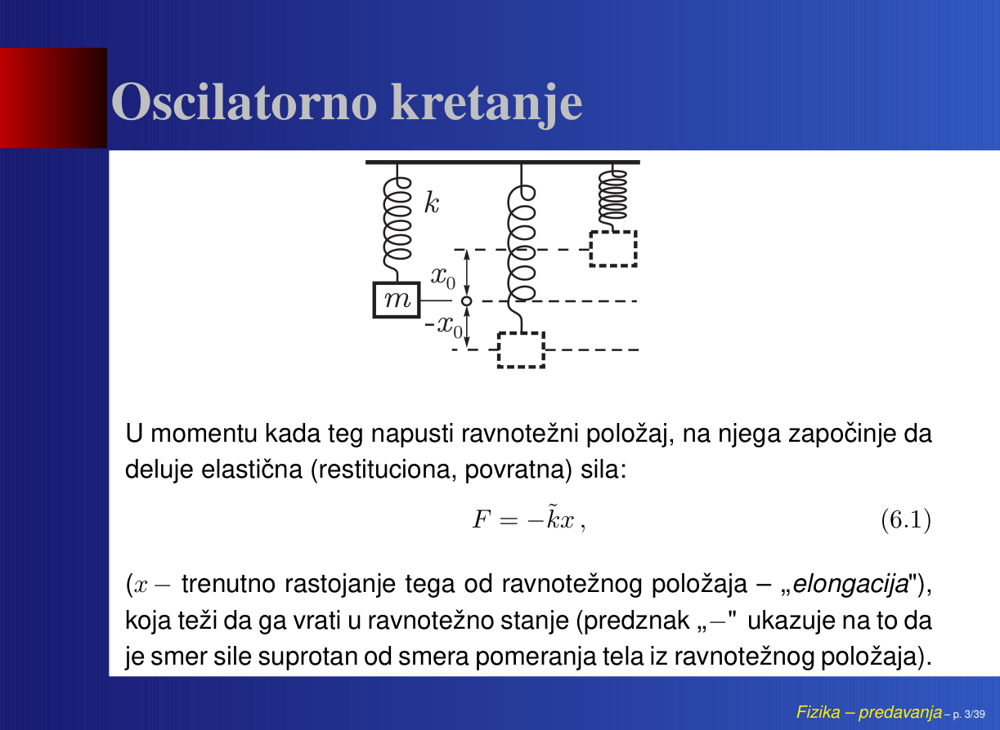
U trenutku kada teg napusti ravnotežni položaj, na njega počinje da deluje elastična sila (koju nazivamo i restituciona ili povratna sila):
Podsetnik:
Znak „$-$" u izrazu nije slučajan i ima jasno fizičko značenje: on pokazuje da je smer sile uvek suprotan smeru pomeranja tela iz ravnotežnog položaja. Drugim rečima, ma na koju stranu pomerili teg, sila ga „vuče" nazad ka ravnotežnom položaju — upravo zato je i nazivamo povratnom silom.
Ako pri ovakvom kretanju nema gubitaka energije (ili se ona neprekidno dodaje da bi nadoknadila gubitke), teg će se bez prestanka kretati između dva amplitudna položaja — od jednog krajnjeg otklona do drugog i nazad. Takvo idealizovano oscilovanje, bez gubitaka, nazivamo harmonijskim oscilovanjem.
Ako se, sa druge strane, iz bilo kog razloga (trenje, otpor vazduha, viskoznost sredine) energija troši, amplituda oscilovanja tega vremenom (eksponencijalno) opada, i takvo oscilovanje nazivamo prigušenim. U nastavku se bavimo isključivo idealnim, harmonijskim oscilovanjem.
Da bismo došli do jednačine koja opisuje harmonijsko oscilovanje, polazimo od II Njutnovog zakona i u njega uvrstimo izraz za povratnu silu. Korak po korak:
Prvo smo ubrzanje $a$ zapisali kao izvod brzine po vremenu, $a = dv/dt$, a silu zamenili izrazom $F=-\tilde{k}x$. Zatim smo sve prebacili na istu stranu i celu jednačinu pomnožili sa $dx$ (oznaka „$/\cdot dx$") da bismo je pripremili za integraciju. Tako dobijamo:
U poslednjem koraku iskoristili smo da je $\dfrac{dx}{dt} = v$ (brzina je izvod položaja po vremenu), pa je $m\,dv\cdot\dfrac{dx}{dt} = m\,v\,dv$.
Podsetnik:
Dobijenu jednačinu sada integralimo. Integracija daje:
Integraciona konstanta $C_1$ ima dimenziju energije, a njenu vrednost određujemo iz početnih uslova. Posmatramo trenutak $t=0$ u kome se telo nalazi u krajnjem (amplitudnom) položaju $x = x_0$ i u tom trenutku miruje, tj. ima brzinu $v_0 = 0$. Smenom ovih vrednosti u prethodnu jednačinu leva strana se svodi samo na potencijalni član, pa je $C_1 = \tfrac{1}{2}\tilde{k}\,x_0^2$. Uvrstimo li to nazad, dobijamo:
Podsetnik:
Ova jednačina predstavlja zakon održanja ukupne mehaničke energije harmonijskog oscilatora: zbir kinetičke i potencijalne energije tela koje harmonijski osciluje ne menja se u toku vremena. Energija se samo neprestano preliva iz jednog oblika u drugi — u krajnjim položajima cela je potencijalna, a u ravnotežnom položaju cela je kinetička.
Iz zakona održanja energije možemo izraziti brzinu tega u zavisnosti od elongacije. Rešavanjem jednačine (6.2) po $v$ dobijamo:
Pri tome smo uveli oznaku za izraz $\sqrt{\tilde{k}/m}$, koji nazivamo kružna (ugaona) frekvencija oscilovanja:
Podsetnik:
Iz ovog izraza vidimo da je brzina najveća u ravnotežnom položaju ($x=0$), a jednaka nuli u krajnjim položajima ($x = \pm x_0$), što je u skladu sa onim što smo zaključili iz energije.
Da bismo iz brzine došli do zavisnosti elongacije od vremena, koristimo definiciju brzine $v = dx/dt$ i razdvajamo promenljive (sve što sadrži $x$ na jednu, a $t$ na drugu stranu):
Integral na levoj strani je tablični i daje arkus-sinus, pa nakon integracije dobijamo:
Konstanta integracije $\varphi$ naziva se početna faza oscilovanja.
Podsetnik:
Ako iz prethodnog izraza izrazimo $x$, tj. primenimo sinus na obe strane, dobijamo jednačinu kretanja harmonijskog oscilatora:
Podsetnik:
Vidimo da elongacija tokom vremena prati sinusni (harmonijski) zakon — odatle i naziv harmonijsko oscilovanje. Veličina $\Phi = \omega t + \varphi$ govori nam u kojoj se „tački" ciklusa oscilator nalazi u datom trenutku, a $\varphi$ je vrednost te faze na samom početku, u trenutku $t=0$.
Posmatrajmo čest slučaj u kome se na početku oscilovanja ($t=0$) telo nalazilo upravo u amplitudnom položaju, $x = x_0$. Uvrštavanjem u jednačinu (6.4) za $t=0$ sledi $x_0 = x_0\sin\varphi$, odakle je:
Smenom ove početne faze jednačina kretanja prelazi u oblik sa kosinusom:
Dakle, ako telo kreće iz krajnjeg položaja, njegovo kretanje jednako dobro opisujemo i kosinusnom funkcijom — koja u trenutku $t=0$ ima maksimalnu vrednost, baš kao što i treba.
Kružna frekvencija, frekvencija i period nisu nezavisne veličine — povezane su sledećim relacijama:
Podsetnik:
Pošto poznajemo zakon kretanja $x = x_0\sin(\omega t + \varphi)$, brzinu dobijamo kao prvi izvod položaja po vremenu, a ubrzanje kao izvod brzine po vremenu:
Podsetnik:
Poslednji rezultat, $a = -\omega^2 x$, posebno je važan: ubrzanje je u svakom trenutku srazmerno elongaciji, ali suprotnog znaka — uvek je usmereno ka ravnotežnom položaju. To je upravo matematička osobina po kojoj prepoznajemo harmonijsko oscilovanje.
Kinetičku energiju dobijamo iz njene definicije, koristeći ranije izvedeni izraz za brzinu (6.3):
Potencijalnu energiju definišemo kao rad povratne sile pri pomeranju tela iz ravnotežnog položaja do elongacije $x$:
U poslednjem koraku iskoristili smo $\tilde{k} = m\omega^2$, što sledi iz definicije $\omega = \sqrt{\tilde{k}/m}$. Sabiranjem ova dva oblika energije dobijamo ukupnu energiju:
Podsetnik:
Kada saberemo kinetičku i potencijalnu energiju, članovi sa $x^2$ se potpuno potru i ostaje izraz koji zavisi samo od amplitude — a amplituda je za dato oscilovanje stalna. Time smo ponovo, sada i preko izraza za brzinu i ubrzanje, potvrdili da je ukupna mehanička energija harmonijskog oscilatora konstantna: ona se tokom oscilovanja samo preliva iz kinetičke u potencijalnu i obratno, ali u zbiru ostaje nepromenjena.
Dok telo izvodi harmonijske oscilacije, ono se neprekidno kreće između dva krajnja, takozvana amplitudna položaja, koja su jednako udaljena od ravnotežnog položaja i obeležavaju se sa $+A$ i $-A$. Tokom tog kretanja energija oscilatora se neprekidno preliva iz jednog oblika u drugi: kinetička energija se pretvara u potencijalnu i obrnuto, dok njihov zbir (ukupna mehanička energija) ostaje sačuvan.
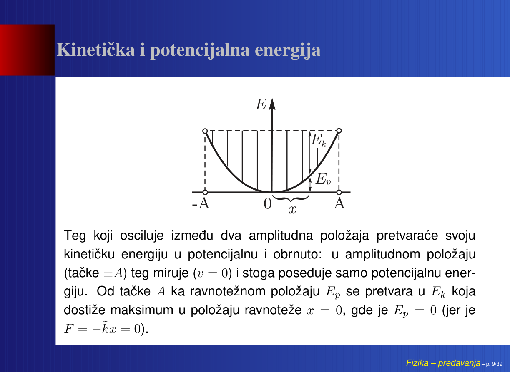
Da bismo razumeli kako se ova razmena odvija, pratimo teg na elastičnoj opruzi u različitim tačkama putanje. U amplitudnim položajima, tj. u tačkama $\pm A$, teg na trenutak miruje jer menja smer kretanja. Pošto je tu brzina jednaka nuli ($v = 0$), kinetička energija je takođe nula, pa teg u tim tačkama poseduje isključivo potencijalnu energiju. To je ujedno i tačka u kojoj je potencijalna energija najveća.
Kada se teg iz amplitudnog položaja $A$ kreće ka ravnotežnom položaju, njegova potencijalna energija $E_p$ se postepeno pretvara u kinetičku energiju $E_k$. Ta kinetička energija raste i dostiže maksimum upravo u ravnotežnom položaju, gde je $x = 0$. U toj tački potencijalna energija je jednaka nuli, $E_p = 0$. Razlog za to je priroda elastične (povratne) sile: ona je srazmerna otklonu i data je izrazom $F = -\tilde{k}x$, pa kada je $x = 0$, i sila iščezava, $F = 0$. Tamo gde nema sile koja deluje na otklonjeno telo, nema ni potencijalne energije vezane za taj otklon, tako da je sva energija u ravnotežnom položaju u obliku kinetičke energije.
Podsetnik: $F$ — elastična (povratna) sila [N]; $\tilde{k}$ — koeficijent (konstanta) elastičnosti opruge [N/m]; $x$ — trenutni otklon tega od ravnotežnog položaja [m]. Znak minus pokazuje da je sila uvek usmerena suprotno od otklona, tj. da telo vraća ka ravnotežnom položaju.
Na grafiku se vidi da kriva potencijalne energije ima oblik parabole sa minimumom u tački $x = 0$: u sredini je $E_p$ najmanja (nula), a prema oba amplitudna položaja raste. Vertikalne duži između parabole i horizontalne linije koja spaja vrhove predstavljaju razliku do ukupne energije, odnosno kinetičku energiju $E_k$ u datom položaju. Tako u svakoj tački putanje zbir $E_k + E_p$ daje istu, ukupnu energiju oscilatora.
Pokažimo na konkretnom primeru kako se iz date jednačine kretanja mogu odrediti sve važne veličine harmonijskog oscilovanja. Teg mase $m = 20\,\text{g}$ obešen je o elastičnu oprugu, a jednačina njegovog kretanja ima oblik:
Podsetnik: $x$ — trenutni otklon [m]; $x_0$ — amplituda otklona, ovde $x_0 = 10\,\text{cm} = 0{,}1\,\text{m}$; $\omega$ — kružna (ugaona) učestanost, ovde $\omega = 1\,\text{rad/s}$; $t$ — vreme [s]; $\varphi$ — početna faza, ovde $\varphi = -\tfrac{\pi}{2}\,\text{rad}$.
Zadatak je da ustanovimo kako sila koja uslovljava ovo kretanje zavisi od vremena, to jest da odredimo $F(t)$, a zatim da iz nje izračunamo maksimalnu vrednost (amplitudu) te sile, konstantu elastičnosti opruge, period oscilovanja i maksimalnu brzinu tega.
Polazimo od drugog Njutnovog zakona, prema kome je sila jednaka proizvodu mase i ubrzanja. Ubrzanje je drugi izvod otklona po vremenu, pa dva puta diferenciramo izraz za $x(t)$. Prvi izvod $x = x_0\sin(\omega t + \varphi)$ daje brzinu, a drugi izvod ubrzanje, pri čemu se pri svakom diferenciranju izvuče po jedan faktor $\omega$, a sinus prelazi u kosinus pa ponovo u sinus sa suprotnim znakom. Tako dobijamo:
Podsetnik: $F(t)$ — sila u trenutku $t$ [N]; $m$ — masa tega [kg]; $a(t)$ — ubrzanje [m/s²]; $\omega$ — kružna učestanost [rad/s]; $x_0$ — amplituda otklona [m]; $F_0 = m\,\omega^2 x_0$ — amplituda (maksimalna vrednost) sile [N].
Vidimo da je sila i sama harmonijska funkcija vremena, sa istom kružnom učestanošću kao i otklon. Njena amplituda $F_0$ je upravo množilac ispred sinusne funkcije.
Maksimalnu vrednost sile dobijamo prostim uvrštavanjem brojnih vrednosti u izraz $F_0 = m\,\omega^2 x_0$. Pri tome masu pretvaramo u kilograme ($20\,\text{g} = 20\cdot 10^{-3}\,\text{kg}$), a amplitudu u metre ($10\,\text{cm} = 0{,}1\,\text{m}$):
Podsetnik: $F_0$ — amplituda sile [N], ovde $2\,\text{mN} = 2\cdot 10^{-3}\,\text{N}$; $m$ — masa [kg]; $\omega$ — kružna učestanost [rad/s]; $x_0$ — amplituda otklona [m].
Konstanta elastičnosti $k$ povezuje silu i otklon. Pošto je maksimalna sila $F_0$ ostvarena pri maksimalnom otklonu $x_0$, konstantu dobijamo kao njihov količnik:
Podsetnik: $k$ — konstanta elastičnosti opruge [N/m]; $F_0$ — amplituda sile [N]; $x_0$ — amplituda otklona [m].
Period $T$ je vreme za koje se izvrši jedna potpuna oscilacija i povezan je sa kružnom učestanošću relacijom $T = \tfrac{2\pi}{\omega}$. Uvrštavanjem datih vrednosti dobijamo:
Podsetnik: $T$ — period oscilovanja [s]; $\omega$ — kružna učestanost [rad/s]; broj $2\pi \approx 6{,}28$ je bezdimenziona konstanta (puni ugao u radijanima).
Brzinu tega dobijamo kao prvi izvod otklona po vremenu. Diferenciranjem izraza $x = x_0\sin(\omega t + \varphi)$ izvlači se faktor $\omega$, a sinus prelazi u kosinus:
Kosinusna funkcija ima najveću vrednost jednaku jedinici, pa je maksimalna brzina jednaka množiocu ispred kosinusa. Otuda je:
Podsetnik: $v$ — trenutna brzina tega [m/s]; $v_{\max}$ — maksimalna brzina [m/s]; $x_0$ — amplituda otklona [m]; $\omega$ — kružna učestanost [rad/s]. Maksimalna brzina se ostvaruje pri prolasku kroz ravnotežni položaj, gde je kosinus jednak jedinici.
Oscilovanje nije osobina samo mehaničkih sistema. Ono se može javiti i u drugim, na primer u električnim sistemima. Najjednostavniji takav primer je oscilatorno (LC) kolo, koje se sastoji od kondenzatora oznake $C$ i kalema (zavojnice) oznake $L$ povezanih u zatvoreno kolo.
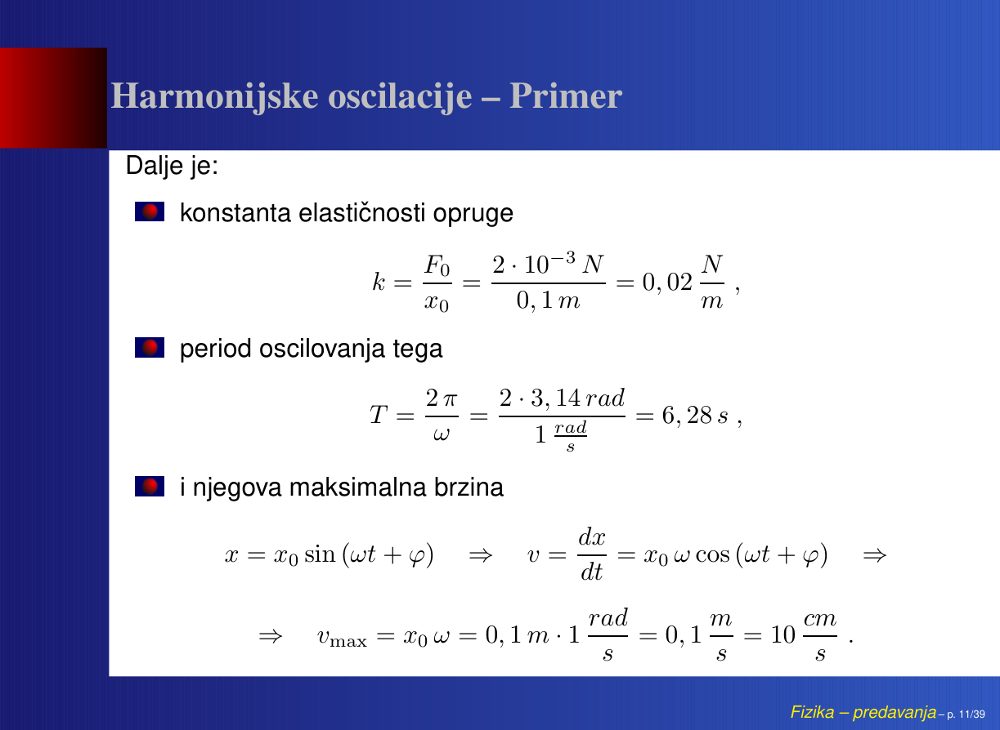
Početno stanje izgleda ovako: kondenzator je naelektrisan i na njegovim oblogama se nalazi naelektrisanje $q_0$. Kada se kolo zatvori (prekidačem $P$), naelektrisanje počinje da otiče kroz kalem i u kolu se uspostavlja struja. Tok struje u kolu opisuje se drugim Kirhofovim pravilom, koje kaže da je zbir padova napona u zatvorenoj konturi jednak nuli.
U kolu postoje dva doprinosa. Pad napona na kondenzatoru jednak je $U = \tfrac{q}{C}$, gde je $q$ trenutno naelektrisanje na oblogama. U kalemu se, zbog promene struje, indukuje elektromotorna sila $\mathcal{E} = -L\tfrac{dI}{dt}$. Izjednačavanjem ova dva člana dobija se jednačina kola:
Podsetnik: $L$ — induktivnost kalema [H]; $I$ — jačina struje u kolu [A]; $t$ — vreme [s]; $q$ — trenutno naelektrisanje na kondenzatoru [C]; $C$ — kapacitivnost kondenzatora [F]; $U$ — pad napona na kondenzatoru [V]; $\mathcal{E}$ — indukovana elektromotorna sila [V].
Da bismo došli do energijske jednačine, polaznu jednačinu kola pomnožimo sa $dq$. Pošto je $\tfrac{dI}{dt}\,dq = dI\,\tfrac{dq}{dt} = I\,dI$ (jer je $\tfrac{dq}{dt} = I$), prvi član prelazi u $L\,I\,dI$, a drugi u $\tfrac{1}{C}\,q\,dq$:
Sada obe strane integralimo. Integral od $I\,dI$ daje $\tfrac{1}{2}I^2$, a integral od $q\,dq$ daje $\tfrac{1}{2}q^2$, pri čemu se na desnoj strani pojavljuje integraciona konstanta $C_2$:
Konstantu $C_2$ određujemo iz početnih uslova. U početnom trenutku ($t = 0$) kondenzator je pun, pa je $q = q_0$, a struja još nije potekla, pa je $I = 0$. Uvrštavanjem ovih vrednosti dobija se $C_2 = \tfrac{1}{2}\tfrac{q_0^2}{C}$, čime dolazimo do zakona održanja elektromagnetne energije za LC kolo:
Podsetnik: $L$ — induktivnost kalema [H]; $I$ — trenutna jačina struje [A]; $q$ — trenutno naelektrisanje [C]; $q_0$ — početno (maksimalno) naelektrisanje [C]; $C$ — kapacitivnost [F].
Svaki član u ovoj jednačini ima jasno fizičko značenje. Prvi član $\tfrac{1}{2}L I^2$ odgovara energiji magnetnog polja kalema kroz koji protiče struja $I$. Drugi član $\tfrac{1}{2}\tfrac{q^2}{C}$ predstavlja potencijalnu energiju električnog polja između ploča kondenzatora, na čijim se oblogama nalazi naelektrisanje $q$. Desna strana je konstantna i predstavlja ukupnu energiju kola, koja se tokom oscilovanja samo preliva iz električnog u magnetni oblik i nazad — potpuno analogno razmeni potencijalne i kinetičke energije kod mehaničkog oscilatora.
Iz dobijene energijske jednačine možemo izvesti kako naelektrisanje zavisi od vremena. Pošto je struja $I = \tfrac{dq}{dt}$, iz jednačine (6.11) izrazimo $I$ i dobijamo:
U drugom koraku smo razdvojili promenljive — sve što sadrži $q$ stavili smo na levu, a vreme na desnu stranu. Integraljenjem leve strane (poznati integral koji daje arkus sinus) dobijamo:
Konačno, primenom sinusa na obe strane, naelektrisanje izrazimo eksplicitno kao funkciju vremena:
Podsetnik: $q$ — trenutno naelektrisanje [C]; $q_0$ — amplituda (maksimalno naelektrisanje) [C]; $t$ — vreme [s]; $\varphi$ — početna faza oscilovanja [rad]; $\omega = \tfrac{1}{\sqrt{LC}}$ — kružna učestanost oscilovanja [rad/s]; $L$ — induktivnost [H]; $C$ — kapacitivnost [F].
Ovaj rezultat pokazuje da naelektrisanje u LC kolu osciluje po istom harmonijskom zakonu kao i otklon mehaničkog oscilatora. Pri tome je kružna učestanost data izrazom $\omega = \tfrac{1}{\sqrt{LC}}$, a veličina $\varphi$ je integraciona konstanta koja predstavlja početnu fazu oscilovanja.
Ako za početni trenutak $t = 0$ uzmemo da je $\varphi = \tfrac{\pi}{2}$, sinus sa pomerajem za $\tfrac{\pi}{2}$ prelazi u kosinus, pa poslednja relacija dobija jednostavniji oblik:
Podsetnik: $q$ — trenutno naelektrisanje [C]; $q_0$ — maksimalno naelektrisanje [C]; $\omega$ — kružna učestanost [rad/s]; $t$ — vreme [s]. Ovaj oblik odgovara situaciji u kojoj je u trenutku $t = 0$ kondenzator potpuno naelektrisan ($q = q_0$).
Pošto smo upoznali harmonijske oscilacije i kod mehaničkih i kod električnih sistema, prelazimo na proučavanje mehaničkih talasa, kod kojih se oscilatorno kretanje prenosi kroz sredinu sa jednog mesta na drugo.
Do sada smo posmatrali jedan izolovan harmonijski oscilator. Mehanički talas nastaje onda kada veliki broj takvih oscilatora međusobno deluje jedan na drugog. Zamislimo zato niz jednakih atoma (molekula), od kojih svaki ima istu masu $\mu$, poređanih duž prave $x$ na jednakim međusobnim rastojanjima $r_0$. Ta ravnotežna rastojanja $r_0$ nisu proizvoljna — ona odgovaraju ravnotežnim položajima međumolekulskih sila, dakle položajima u kojima je svaki atom u stabilnoj ravnoteži i ne oseća rezultujuću silu od svojih suseda.
Ako sada neki atom izvedemo iz njegovog ravnotežnog položaja transverzalno, to jest normalno na pravac $x$ duž kojeg su atomi poređani, za neki iznos $\psi(x)$, onda među susednim atomima počinju da deluju sile koje teže da ga vrate nazad. Za male pomeraje ta sila je oblika
Podsetnik: $f$ — povratna (restituciona) sila koja deluje na atom [N]; $\tilde{k}$ — koeficijent elastične veze između susednih atoma [N/m]; $\psi$ — transverzalni pomeraj atoma iz ravnotežnog položaja [m]. Znak minus pokazuje da je sila uvek usmerena suprotno od pomeraja, dakle ka ravnotežnom položaju.
Upravo zato što je povratna sila proporcionalna pomeraju i suprotnog smera, svaki atom u nizu izvodi harmonijsko oscilovanje u transverzalnom pravcu. Pošto se atomi pomeraju normalno na pravac duž kojeg su poređani, kažemo da je faza ovog procesa transverzalna.
Suština nastanka talasa je u tome što atomi nisu nezavisni — povezani su silama. Kada prvi atom izvedemo iz ravnotežnog položaja za iznos $\psi$, narušava se ravnoteža između njega i njegovog suseda. Posledica toga je da se i susedni atom počinje povlačiti iz svog ravnotežnog položaja, ali sa malim zakašnjenjem. Težnja tog drugog atoma da prati kretanje prvog zatim narušava ravnotežu između njega i trećeg atoma, pa se i treći pokrene; između trećeg i četvrtog se dešava isto, i tako redom kroz ceo lanac.
Ovaj proces remećenja ravnoteže između susednih atoma prenosi se duž lanca konstantnom brzinom $v_0$. Brzina je ista za sve elemente lanca jer su svi elementi identični (ista masa, isti $r_0$, ista veza $\tilde{k}$). Tako nastaje transverzalni mehanički talas — poremećaj koji putuje kroz sredinu, dok same čestice samo osciluju oko svojih ravnotežnih položaja i ne putuju zajedno sa talasom.
Treba odmah uočiti razliku: ako bismo prvi atom izvodili iz ravnoteže u pravcu same $x$-ose (dakle duž pravca prostiranja, a ne normalno na njega), nastao bi longitudinalni talas. Ovde se bavimo transverzalnim slučajem.
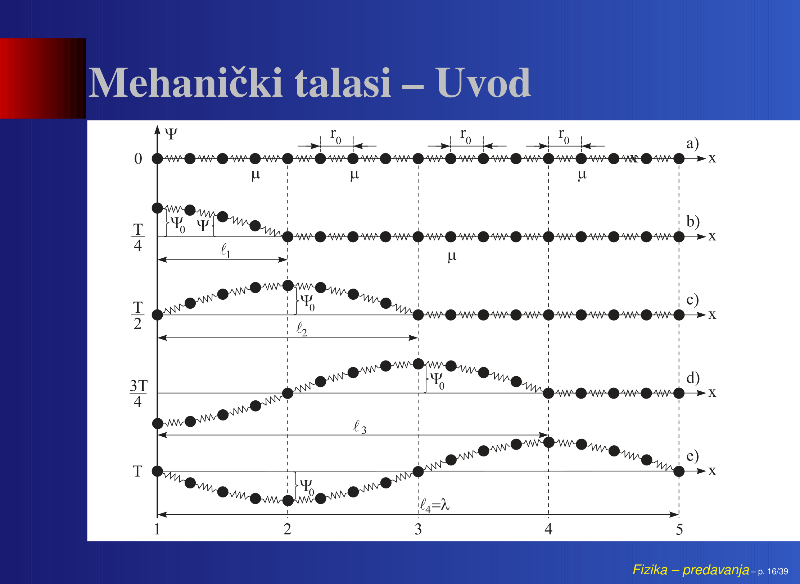
Slika prikazuje stanje lanca u pet uzastopnih trenutaka, kao pet sličica jedne ispod druge. Pratimo prvi atom (oscilator) i poremećaj koji on stvara:
To rastojanje $\lambda$ je upravo takvo da se na njega smesti tačno jedan ceo oblik sinusne funkcije — jedan pun period prostornog oblika talasa (na slici, deo između vertikalnih linija 1 i 5). Zovemo ga talasna dužina.
Podsetnik: $\lambda$ — talasna dužina, rastojanje na koje poremećaj dospe za jedan pun period [m]; $v_0$ — brzina prenošenja poremećaja (talasa) kroz sredinu [m/s]; $T$ — period oscilovanja jedne čestice [s].
Ako oscilovanje prvog atoma održavamo stalnim dodavanjem energije (tako da on ne prestane da osciluje), talasni proces će se bez ograničenja širiti u pozitivnom smeru $x$-ose.
Oscilovanje celog niza povezanih oscilatora opisujemo jednom jedinstvenom veličinom — talasnom funkcijom $\psi(x,t)$. Ona predstavlja elongaciju (trenutni transverzalni pomeraj) bilo koje čestice lanca, u svakoj tački $x$ i u svakom trenutku $t$. To je funkcija dve nezavisne promenljive: kažemo nam i gde (na kom mestu $x$) i kada (u kom trenutku $t$) se nalazi čestica i koliko je pomerena.
Krenimo od prve čestice u lancu, one na položaju $x=0$. Njeno oscilovanje je čisto harmonijsko i opisuje ga harmonijski zakon:
Podsetnik: $\psi(0,t)$ — elongacija prve čestice (na $x=0$) u trenutku $t$ [m]; $\psi_0$ — amplituda, najveći pomeraj [m]; $\omega$ — kružna (ugaona) frekvencija [rad/s]; $t$ — vreme [s].
Čestica koja se nalazi na proizvoljnom rastojanju $x$ od izvora ne počinje da osciluje istovremeno sa prvom. Ona „čeka” da talas, putujući brzinom $v_0$, pređe to rastojanje $x$. Vreme tog zakašnjenja je
Podsetnik: $\Delta t$ — zakašnjenje sa kojim čestica na položaju $x$ počinje da osciluje u odnosu na prvu [s]; $x$ — rastojanje čestice od izvora talasa [m]; $v_0$ — brzina prostiranja talasa [m/s].
Pošto čestica na položaju $x$ ponavlja isto kretanje kao prva, samo zakašnjeno za $\Delta t$, njenu elongaciju dobijamo tako što u harmonijskom zakonu vreme $t$ zamenimo sa $t-\Delta t$:
Podsetnik: $\psi(x,t)$ — elongacija čestice na položaju $x$ u trenutku $t$ [m]; $\psi_0$ — amplituda [m]; $\omega$ — kružna frekvencija [rad/s]; $t$ — vreme [s]; $x$ — položaj čestice [m]; $v_0$ — brzina prostiranja talasa [m/s].
I ovde važi isti zaključak iz geometrije lanca: dok prva pobuđena čestica načini pun period oscilovanja $T$, talas duž lanca dospe do rastojanja $v_0 T = \lambda$, dakle do jedne talasne dužine.
Dobijeni izraz prepisaćemo u pregledniji oblik. Iskoristimo poznatu vezu kružne frekvencije i perioda:
Podsetnik: $\omega$ — kružna frekvencija [rad/s]; $T$ — period [s]. Ova veza kaže da je za jedan pun period ($t$ se promeni za $T$) faza $\omega t$ promeni tačno za $2\pi$.
Zamenom ove veze i korišćenjem $\lambda = v_0 T$ (odakle je $1/v_0 = T/\lambda$), prethodna jednačina prelazi u:
Podsetnik: $\psi(x,t)$ — elongacija [m]; $\psi_0$ — amplituda [m]; $T$ — period [s]; $\lambda$ — talasna dužina [m]; $t$ — vreme [s]; $x$ — položaj [m]. Ovaj oblik je simetričan: vreme se meri u jedinicama perioda $T$, a položaj u jedinicama talasne dužine $\lambda$.
Da bismo izraz još više pojednostavili, uvodimo novu veličinu — talasni broj:
Podsetnik: $k$ — talasni broj, prostorni analog kružne frekvencije [rad/m]; $\lambda$ — talasna dužina [m]. Kao što $\omega$ govori koliko se faza promeni po jedinici vremena, tako $k$ govori koliko se faza promeni po jedinici dužine.
Pošto je $2\pi\,t/T = \omega t$ i $2\pi\,x/\lambda = kx$, talasna funkcija dobija svoj najčešći, najpregledniji oblik:
Podsetnik: $\psi(x,t)$ — elongacija čestice na položaju $x$ u trenutku $t$ [m]; $\psi_0$ — amplituda [m]; $\omega$ — kružna frekvencija [rad/s]; $k$ — talasni broj [rad/m]; $t$ — vreme [s]; $x$ — položaj [m]. Veličina $\omega t - kx$ je faza talasa.
Talas opisan ovakvom funkcijom položaja i vremena naziva se ravan progresivni talas — „ravan” jer svi delovi sredine sa istom vrednošću $x$ osciluju u istoj fazi, a „progresivni” jer napreduje u pozitivnom smeru $x$-ose.
Talasna funkcija $\psi(x,t)$ zavisi od dve promenljive. Kada želimo brzinu kojom se kreće jedna konkretna čestica, posmatramo kako se njena elongacija menja samo sa vremenom, dok njen položaj $x$ držimo fiksiranim. Takav izvod po jednoj promenljivoj, uz držanje druge konstantnom, naziva se parcijalni izvod i obeležava simbolom $\partial$.
Brzinu čestice definišemo kao parcijalni izvod elongacije po vremenu:
Podsetnik: $u(x,t)$ — brzina oscilovanja čestice na položaju $x$ u trenutku $t$ [m/s]; $\psi_0$ — amplituda [m]; $\omega$ — kružna frekvencija [rad/s]; $k$ — talasni broj [rad/m]; $t$ — vreme [s]; $x$ — položaj [m]. Izvod kosinusa daje minus sinus, a unutrašnji izvod faze po vremenu daje faktor $\omega$ — otuda $-\omega\,\psi_0$ ispred sinusa.
Ovde je važno razlikovati dve potpuno različite brzine:
Na sličan način, ubrzanje čestice dobijamo kao parcijalni izvod brzine po vremenu:
Podsetnik: $a(x,t)$ — ubrzanje čestice [m/s²]; $\omega$ — kružna frekvencija [rad/s]; $\psi_0$ — amplituda [m]; $\psi$ — trenutna elongacija čestice [m]; $t$ — vreme [s]; $x$ — položaj [m]. Diferenciranjem sinusa dobijamo kosinus i još jedan faktor $\omega$, pa se javlja $-\omega^2$.
Rezultat $a = -\omega^2\psi$ pokazuje da je ubrzanje svake čestice proporcionalno njenoj elongaciji i suprotnog smera — što je opet karakteristika harmonijskog oscilovanja, sada prepoznata unutar talasa.
Postavimo sada zahtev da faza oscilovanja bude konstantna. Time pratimo jednu određenu tačku talasnog oblika (na primer jedno brdo talasa) dok se ona pomera kroz prostor:
Podsetnik: $\omega$ — kružna frekvencija [rad/s]; $t$ — vreme [s]; $k$ — talasni broj [rad/m]; $x$ — položaj posmatrane tačke faze [m].
Diferenciramo ovaj uslov po $x$ i $t$. Pošto je desna strana konstanta, njen izvod je nula:
Podsetnik: $dt$ — beskonačno mala promena vremena [s]; $dx$ — odgovarajuće beskonačno malo pomeranje tačke konstantne faze [m]; ostale oznake kao gore.
Odavde dobijamo brzinu kojom se kreće tačka konstantne faze, a to je upravo brzina prostiranja talasa $v_0$:
Podsetnik: $v_0$ — brzina prostiranja (fazna brzina) talasa [m/s]; $\omega$ — kružna frekvencija [rad/s]; $k$ — talasni broj [rad/m].
Sada u ovaj izraz uvrstimo $\omega = 2\pi\nu$ (gde je $\nu$ frekvencija) i $k = 2\pi/\lambda$:
Podsetnik: $v_0$ — brzina prostiranja talasa [m/s]; $\lambda$ — talasna dužina [m]; $\nu$ — frekvencija talasa [Hz = 1/s].
Ova jednačina naziva se osnovna relacija talasnog kretanja. Ona kaže da je proizvod talasne dužine i frekvencije talasa jednak brzini njegovog prostiranja. To je veza koja povezuje prostornu karakteristiku talasa ($\lambda$) sa vremenskom ($\nu$) preko brzine kojom se talas širi kroz sredinu.
Matematičke operacije sa harmonijskim talasnim funkcijama (na primer sabiranje više talasa, ili diferenciranje) jednostavnije se izvode ako umesto sinusa i kosinusa koristimo kompleksne brojeve. Osnova za to je Ojlerova relacija:
Podsetnik: $e$ — baza prirodnog logaritma; $i$ — imaginarna jedinica ($i^2=-1$); $\alpha$ — proizvoljan ugao (faza) [rad]. Ova relacija povezuje eksponencijalnu funkciju imaginarnog argumenta sa trigonometrijskim funkcijama.
Ako za ugao $\alpha$ uzmemo upravo fazu našeg talasa $\omega t - kx$, dobijamo:
Podsetnik: $\omega$ — kružna frekvencija [rad/s]; $t$ — vreme [s]; $k$ — talasni broj [rad/m]; $x$ — položaj [m]; $i$ — imaginarna jedinica.
Naša realna talasna funkcija je upravo kosinusni deo, to jest realni deo ($Re$) ove kompleksne funkcije. Zato talasnu funkciju možemo zapisati kao:
Podsetnik: $\psi(x,t)$ — realna elongacija čestice [m]; $\psi_0$ — amplituda [m]; $Re[\;]$ — operacija uzimanja realnog dela kompleksnog izraza; ostale oznake u eksponentu kao gore.
U situacijama kada treba sabirati više talasa, radi lakšeg računa koristi se potpuni kompleksni oblik talasne funkcije, u kome zadržavamo i imaginarni deo (a realni deo uzimamo tek na kraju računa):
Podsetnik: $\psi(x,t)$ — kompleksno zapisana talasna funkcija [m]; $\psi_0$ — amplituda [m]; $\omega$ — kružna frekvencija [rad/s]; $k$ — talasni broj [rad/m]; $t$ — vreme [s]; $x$ — položaj [m]. Predznak $\pm$ u eksponentu odgovara izboru smera prostiranja talasa, odnosno konvenciji zapisa.
Pri prostiranju talasa kroz neku sredinu delići te sredine ne putuju zajedno sa talasom — oni samo osciluju oko svojih ravnotežnih položaja, dok se kroz sredinu prenosi poremećaj (oscilacija), a sa njim i energija. Talase delimo prema tome kako delići osciluju u odnosu na pravac u kome se talas prostire.
Kod transverzalnog talasa delići sredine osciluju normalno (upravno) na pravac prostiranja talasa. To znači da se poremećaj kreće u jednom pravcu (na primer duž zategnute žice ili užeta), dok se svaki pojedinačni delić pomera levo–desno, odnosno gore–dole, poprečno u odnosu na taj pravac. Ako duž zategnutog užeta jednim krajem napravimo trzaj, nastaće „grba" koja putuje ka drugom kraju: grba (poremećaj) se pomera napred, ali svaki delić užeta samo se podigne i ponovo spusti kada grba prođe pored njega.
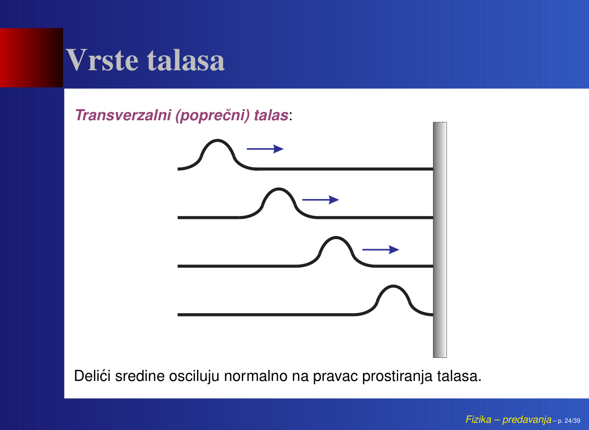
Kod longitudinalnog talasa delići sredine osciluju u pravcu prostiranja talasa. Ovde se poremećaj sastoji od naizmeničnih oblasti zgušnjenja (sabijanja) i razređenja (istezanja) sredine. Tipičan primer je opruga (npr. „slinky") kroz koju propustimo poremećaj: zgusnut deo navojaka putuje duž opruge u istom pravcu u kome se i sami navojci pomeraju napred–nazad.
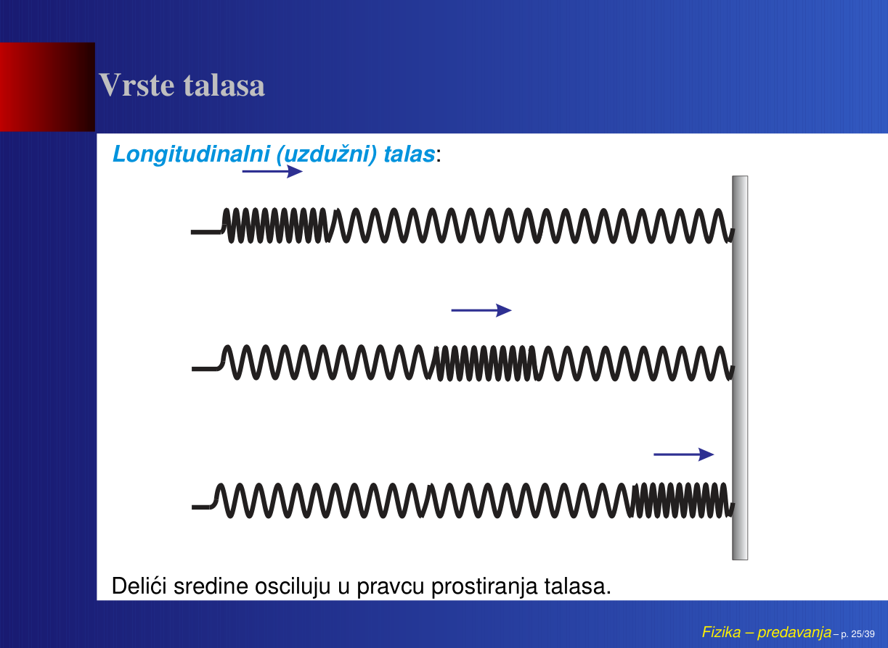
Koja vrsta talasa će se širiti kroz neku sredinu zavisi od elastičnih osobina te sredine. Kada se bilo koja vrsta talasa širi kroz sredinu, u njoj nastaju elastične promene, a one mogu biti:
Kod smicanja, savijanja ili torzije menja se oblik tela. Pri svakoj takvoj promeni javljaju se elastične sile koje teže da pomereni sloj vrate u ravnotežni položaj — upravo te povratne sile omogućavaju da se poremećaj prenese na susedni sloj i tako talas putuje dalje. Pošto samo čvrste sredine mogu da menjaju oblik (tečnosti i gasovi nemaju stalan oblik i ne pružaju otpor smicanju), jedino kroz čvrste sredine je moguće prostiranje transverzalnih talasa.
Sa druge strane, u sredinama u kojima se javljaju elastične sile usled istezanja ili sabijanja mogu nastati longitudinalni talasi. Sabijanjem, odnosno istezanjem javlja se promena zapremine, a promena zapremine je moguća u čvrstim, tečnim i gasovitim sredinama. Zato se longitudinalni talasi mogu prostirati kroz sve tri vrste sredina.
U zavisnosti od sredine kroz koju se prostiru, talasi mogu biti:
Kod progresivnog talasa sve čestice osciluju sa istom amplitudom, ali tu amplitudu dostižu u različitim trenucima — sukcesivno, jedna posle druge. Poremećaj zaista putuje kroz sredinu, pa svaki naredni delić ponavlja kretanje prethodnog sa malim zakašnjenjem.
Kod stojećeg talasa, naprotiv, čestice sredine imaju različite amplitude (neke miruju, neke se maksimalno pomeraju), ali svoje amplitudne (krajnje) položaje dostižu u istom trenutku. Kod ovakvog talasa nema vidljivog napredovanja poremećaja kroz sredinu.
Talase možemo razlikovati i prema obliku talasnog fronta — to je geometrijsko mesto svih tačaka koje u datom trenutku osciluju u istoj fazi (na primer, sve tačke do kojih je poremećaj stigao u istom trenutku).
Ako poremećaj polazi iz jedne tačke (tačkasti izvor talasa) i širi se podjednako u svim pravcima, talasni front ima oblik sfera koje se šire oko izvora — takve talase zovemo sferni talasi. Pravci prostiranja (zraci) tada izlaze radijalno iz izvora. Dovoljno daleko od izvora, mali deo sfernog fronta je praktično ravan, pa talasne linije postaju paralelne prave, a pravci prostiranja paralelni — takve talase zovemo ravni talasi.
Brzina kojom se talas prostire kroz sredinu nije proizvoljna — ona je određena elastičnim osobinama i gustinom te sredine. Razmotrićemo posebno čvrsta i tečna tela, a posebno gasove.
Brzina prostiranja talasa u čvrstim i tečnim telima određena je Njutnovim obrascem:
Podsetnik:
Iz obrasca se vidi suština: što je sredina krutija (veće $E$, jače povratne elastične sile), talas se brže prostire; što je sredina gušća (veće $\rho$, veća inercija delića), talas se sporije prostire.
Za brzinu zvuka u gasovima važi Laplasov obrazac:
Podsetnik:
Laplasov obrazac možemo dovesti u zgodniji oblik ako pritisak izrazimo iz jednačine stanja idealnog gasa. Iz te jednačine sledi:
Ako ovaj izraz za pritisak uvrstimo u Laplasov obrazac, gustina $\rho$ se skrati i dobija se:
Podsetnik:
Apsolutna temperatura povezana je sa temperaturom u Celzijusovoj skali izrazom $T = T_0 + t$, pri čemu je $t$ temperatura izražena u stepenima Celzijusa. Ovaj rezultat pokazuje da brzina zvuka u gasu zavisi samo od vrste gasa (kroz $\kappa$ i $M$) i od temperature — a ne i od pritiska, jer se on iz formule eliminisao.
Jednačinu možemo napisati i u obliku koji direktno povezuje brzinu na proizvoljnoj temperaturi sa poznatom brzinom na $0\,^\circ\text{C}$:
Podsetnik:
Zadatak. Kada se čekićem udari u čeonu stranu metalne šipke dužine $\ell = 30\ \text{m}$, proizvede se zvučni impuls koji se prostire do njenog drugog kraja i vrati nazad za vreme $t = 16{,}6\ \text{ms}$. Koliki je Jangov modul elastičnosti metala od koga je šipka načinjena, ako mu je gustina $\rho = 8960\ \text{kg/m}^3$?
Rešenje. Zvučni impuls je longitudinalni talas koji putuje duž šipke. On pređe dužinu šipke do drugog kraja i vrati se nazad, dakle ukupno pređe put $2\ell$ za vreme $t$. Brzina prostiranja talasa je zato:
Za longitudinalne talase u čvrstom telu važi Njutnov obrazac $v_0 = \sqrt{E/\rho}$. Kvadriranjem tog izraza dobijamo $v_0^{\,2} = E/\rho$, odakle je traženi Jangov modul:
Uvrstimo brojne vrednosti. Najpre brzina:
a zatim Jangov modul:
Dobijena vrednost (oko $117\ \text{GPa}$) odgovara metalu gustine $8960\ \text{kg/m}^3$, što su karakteristike bakra.
Brzina kojom se mehanički talas prostire kroz neku sredinu nije proizvoljna: ona je u potpunosti određena osobinama same sredine. Kod čvrstih tela koja se ponašaju elastično, brzinu longitudinalnog (uzdužnog) talasa određuju dve veličine — krutost materijala, izražena Jangovim modulom elastičnosti $E$, i njegova gustina $\rho$. Što je materijal krući (veće $E$), to brže talas putuje kroz njega; što je gušći (veće $\rho$), to sporije. Ova zavisnost je sažeta u izrazu za brzinu zvuka u čvrstoj sredini, $v_0 = \sqrt{E/\rho}$, koji ćemo iskoristiti da iz merenja vremena putovanja talasa odredimo nepoznati Jangov modul.
Posmatrajmo sledeći problem. Metalnu šipku dužine $\ell = 30\,\text{m}$ udarimo čekićem po čeonoj strani. Taj udar pobuđuje zvučni (longitudinalni) impuls koji putuje kroz šipku do njenog drugog kraja, tamo se odbije i vrati nazad. Ukupno vreme koje protekne od udara do povratka impulsa iznosi $t = 16{,}6\,\text{ms}$. Gustina metala je $\rho = 8960\,\text{kg/m}^3$, a treba odrediti Jangov modul elastičnosti tog metala.
Ključno zapažanje je da impuls za vreme $t$ ne pređe samo dužinu šipke, već dvostruku dužinu — jednom do dna i jednom natrag, dakle ukupno $2\ell$. Pošto se zvuk kroz šipku prostire ravnomerno (uniformno), njegova brzina je pređeni put podeljen vremenom, a ta ista brzina mora biti jednaka brzini zvuka u čvrstoj sredini $\sqrt{E/\rho}$:
Podsetnik: $v_0$ — brzina zvuka (longitudinalnog talasa) u šipki [m/s]; $\ell$ — dužina šipke [m]; $t$ — vreme za koje impuls pređe put $2\ell$ (tamo i nazad) [s]; $E$ — Jangov modul elastičnosti metala [Pa]; $\rho$ — gustina metala [kg/m³].
Iz ove jednakosti nepoznati Jangov modul izražavamo tako što kvadriramo obe strane i zatim ga izrazimo. Kvadriranjem se dobija $\dfrac{4\ell^2}{t^2} = \dfrac{E}{\rho}$, odakle množenjem sa $\rho$ sledi:
Podsetnik: $E$ — Jangov modul elastičnosti [Pa]; $\ell = 30\,\text{m}$ — dužina šipke [m]; $t = 0{,}0166\,\text{s}$ — izmereno vreme [s]; $\rho = 8960\,\text{kg/m}^3$ — gustina [kg/m³]. Rezultat $1{,}17\cdot 10^{11}\,\text{Pa}$ jednak je $117\,\text{GPa}$ (1 GPa $= 10^9$ Pa).
Dobijena vrednost od oko 117 GPa odgovara bakru, pa zaključujemo da je posmatrana šipka napravljena od bakra. Ovaj primer pokazuje kako se prosto merenje vremena putovanja zvučnog impulsa može iskoristiti za određivanje elastične osobine materijala.
Kod gasova brzina zvuka je povezana sa toplotnim kretanjem samih molekula, jer se zvuk i prenosi tim sudarima i kretanjima čestica. Zato postoji direktna veza između brzine zvuka i srednje kvadratne brzine molekula. Posmatrajmo konkretan problem: ako je brzina zvuka u helijumu (He) na nekoj temperaturi $v_0 = 970\,\text{m/s}$, treba odrediti koliko pod istim uslovima iznosi srednja kvadratna brzina molekula helijuma $\sqrt{\langle v^2\rangle}$.
Rešenje dobijamo upoređivanjem dve formule koje obe dolaze iz molekularno-kinetičke teorije. Prva je izraz za srednju kvadratnu brzinu molekula gasa, a druga je Laplasov obrazac za brzinu zvuka u gasovima:
Podsetnik: $v_T = \sqrt{\langle v^2\rangle}$ — srednja kvadratna brzina molekula [m/s]; $\langle v^2\rangle$ — srednja vrednost kvadrata brzine molekula [m²/s²]; $v_0$ — brzina zvuka u gasu [m/s]; $R = 8{,}314\,\text{J/(mol·K)}$ — univerzalna gasna konstanta; $T$ — apsolutna temperatura [K]; $M$ — molarna masa gasa [kg/mol]; $\kappa = C_p/C_V$ — odnos molarnih toplotnih kapaciteta (eksponent adijabate, bez jedinice); $p$ — pritisak gasa [Pa]; $\rho$ — gustina gasa [kg/m³].
Obe brzine zavise od iste kombinacije $RT/M$; jedina razlika je u brojnom faktoru ispod korena: kod $v_T$ to je $3$, a kod $v_0$ to je $\kappa$. Zato kada podelimo jednu brzinu drugom, sve zajedničke veličine ($R$, $T$, $M$) se skrate i ostaje samo odnos ta dva faktora. Tako dobijamo jednostavnu vezu između srednje kvadratne brzine i brzine zvuka:
Podsetnik: $v_T$ — srednja kvadratna brzina molekula [m/s]; $v_0$ — brzina zvuka u istom gasu [m/s]; $\kappa$ — eksponent adijabate gasa (bez jedinice); broj $3$ potiče iz formule za srednju kvadratnu brzinu (tri prostorna pravca kretanja).
Sada treba samo uvrstiti vrednost $\kappa$ za helijum. Helijum je jednoatomski gas, pa ima $j = 3$ stepena slobode (samo tri pravca translacije). Eksponent adijabate je tada
Podsetnik: $\kappa$ — eksponent adijabate (bez jedinice); $C_p$ — molarni toplotni kapacitet pri stalnom pritisku [J/(mol·K)]; $C_V$ — molarni toplotni kapacitet pri stalnoj zapremini [J/(mol·K)]; $j$ — broj stepeni slobode molekula (za jednoatomski gas $j = 3$).
Uvrštavanjem $\kappa = 1{,}67$ i date brzine zvuka $v_0 = 970\,\text{m/s}$ dobijamo traženu srednju kvadratnu brzinu molekula helijuma:
Podsetnik: $v_T$ — srednja kvadratna brzina molekula helijuma [m/s]; $1{,}67$ — eksponent adijabate helijuma (bez jedinice); $970\,\text{m/s}$ — data brzina zvuka u helijumu. Pošto je $3/1{,}67 > 1$, srednja kvadratna brzina molekula veća je od brzine zvuka.
Do sada smo brzinu talasa u šipki koristili kao gotovu formulu. Sada ćemo pokazati odakle ona zapravo dolazi — izvešćemo talasnu jednačinu za longitudinalni talas u čvrstom telu, polazeći od osnovnih fizičkih zakona (Hukovog zakona i drugog Njutnovog zakona). Posmatramo metalnu šipku površine poprečnog preseka $S$, gustine $\rho$ i modula elastičnosti $E_Y$, u kojoj je pobuđen longitudinalni mehanički talas brzine $v_0$ i frekvencije $\omega$.
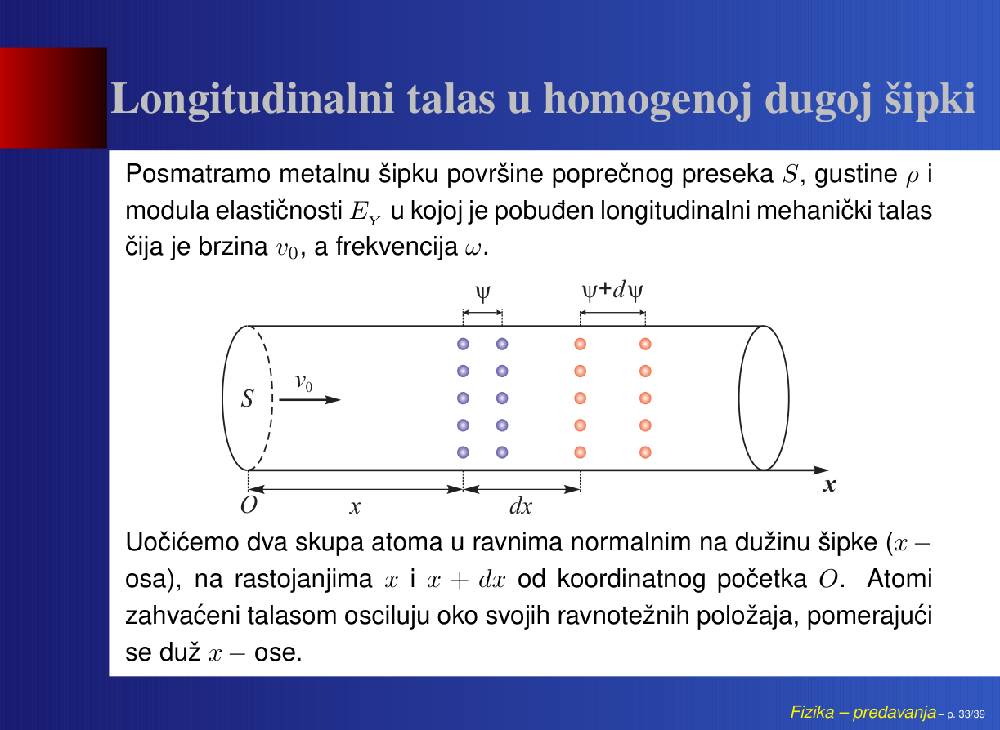
Da bismo pratili šta se dešava, izdvojićemo dva skupa atoma koji leže u ravnima normalnim na dužinu šipke (na $x$-osu), i to na rastojanjima $x$ i $x+dx$ od koordinatnog početka $O$. Između te dve ravni nalazi se tanak element šipke, površine preseka $S$ i debljine $dx$. Atomi koje talas zahvati ne napuštaju svoja mesta trajno — oni osciluju oko svojih ravnotežnih položaja, pomerajući se duž $x$-ose.
U proizvoljnom vremenskom trenutku, skup atoma na mestu $x$ pomeri se iz ravnotežnog položaja udesno za neki iznos $\psi$. Skup atoma na mestu $x+dx$ takođe se pomeri, ali za nešto drugačiji iznos — $\psi + d\psi$. Pošto se dva kraja elementa ne pomere za isto, čitav element zapremine $S\,dx$ promeni svoju dužinu: njegova deformacija (izduženje ili skraćenje) iznosi upravo $d\psi$, što je razlika pomeranja njegovih krajeva.
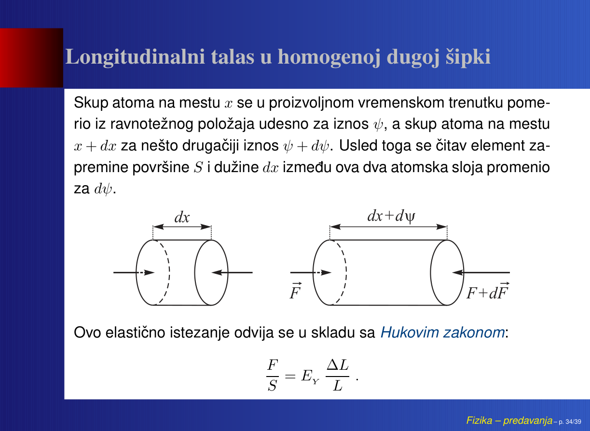
Ovo istezanje elementa odvija se elastično, što znači da važi Hukov zakon — napon (sila po jedinici površine) srazmeran je relativnoj deformaciji:
Podsetnik: $F$ — sila zatezanja koja deluje na presek [N]; $S$ — površina poprečnog preseka šipke [m²]; $E_Y$ — Jangov modul elastičnosti [Pa]; $\Delta L$ — apsolutna promena dužine (izduženje) [m]; $L$ — početna dužina elementa [m]; količnik $\Delta L/L$ je relativna deformacija (bez jedinice).
Sada Hukov zakon primenjujemo na naš mali element šipke, u kome longitudinalni talas vrši istezanje (talas igra ulogu sile). Element ima početnu dužinu $L \equiv dx$, a njegovo izduženje je $\Delta L \equiv d\psi$. Uvrštavanjem ovih oznaka u Hukov zakon dobijamo napon $p = F/S$, a odatle i silu $F$:
Podsetnik: $p$ — napon (mehanički pritisak) u šipki [Pa]; $F$ — elastična sila [N]; $S$ — površina preseka [m²]; $E_Y$ — Jangov modul [Pa]; $\psi$ — pomeranje sloja atoma iz ravnotežnog položaja [m]; $\partial\psi/\partial x$ — gradijent pomeranja po koordinati (relativna deformacija, bez jedinice).
U poslednjem koraku izvršili smo prelaz sa običnog izvoda $d$ na parcijalni izvod $\partial$, jer pomeranje $\psi$ nije funkcija samo položaja, već i vremena — to je funkcija dve nezavisno promenljive: $\psi \equiv \psi(x,t)$. Parcijalni izvod po $x$ znači da izvod uzimamo držeći vreme fiksnim.
Posmatrani element šipke je sa obe strane podvrgnut dejstvu elastičnih sila, ali te sile nisu jednake. Sa leve strane (pozicija $x$) deluje sila $F$, a sa desne (pozicija $x+dx$) sila $F + dF$. Upravo ta razlika sila $dF$ je ono što pokreće element. Razliku dobijamo diferenciranjem izraza (6.24 b) po $x$, u skladu sa pravilom diferenciranja $dF = \dfrac{\partial F}{\partial x}\,dx$:
Podsetnik: $dF$ — razlika sila na desnom i levom kraju elementa [N]; $S$ — površina preseka [m²]; $E_Y$ — Jangov modul [Pa]; $\partial^2\psi/\partial x^2$ — drugi parcijalni izvod pomeranja po položaju [1/m]; $dx$ — debljina elementa [m].
Istu tu rezultujuću silu $dF$ možemo izraziti i na drugi način — preko drugog Njutnovog zakona, koji kaže da je sila jednaka proizvodu mase i ubrzanja: $dF = dm\cdot a$. Ovde je $dm$ masa našeg malog elementa, a $a$ njegovo ubrzanje. Masu izražavamo preko gustine i zapremine kao $dm = \rho\,S\,dx$, a ubrzanje je drugi izvod pomeranja po vremenu, $a = \dfrac{\partial^2\psi}{\partial t^2}$. Tako dobijamo:
Podsetnik: $dF$ — rezultujuća sila na element [N]; $\rho$ — gustina materijala [kg/m³]; $S$ — površina preseka [m²]; $dx$ — debljina elementa [m]; $\rho S\,dx = dm$ — masa elementa [kg]; $\partial^2\psi/\partial t^2$ — ubrzanje elementa [m/s²].
Sada imamo dva izraza za istu veličinu $dF$ — jedan iz Hukovog zakona (6.25) i drugi iz Njutnovog zakona (6.26). Pošto se oba odnose na istu silu, izjednačavamo ih:
U ovoj jednakosti se na obe strane javljaju isti faktori $S$ i $dx$, pa se oni skraćuju. Preraspoređivanjem preostalih članova dolazimo do konačnog rezultata:
Podsetnik: $\psi = \psi(x,t)$ — pomeranje sloja atoma iz ravnotežnog položaja [m]; $\partial^2\psi/\partial t^2$ — drugi izvod po vremenu (ubrzanje) [m/s²]; $\partial^2\psi/\partial x^2$ — drugi izvod po položaju [1/m]; $E_Y$ — Jangov modul [Pa]; $\rho$ — gustina [kg/m³].
Ova parcijalna diferencijalna jednačina drugog reda, u koju simetrično ulaze drugi izvodi talasne funkcije po vremenu i po položaju, naziva se talasna jednačina. Ona je opšti opis svakog talasnog procesa.
Talasna jednačina opisuje povratan proces. To se vidi iz njene strukture: ako istovremeno promenimo znak priraštaja vremena i znak priraštaja koordinate, jednačina ostaje nepromenjena (jer u nju ulaze drugi izvodi, koji su neosetljivi na promenu znaka). Upravo ta osobina omogućava da se talas može odbiti od kraja šipke, da interferira sa drugim talasima i da formira stojeći talas.
Rešenje talasne jednačine nije ništa novo — to je već poznata talasna funkcija ravnog progresivnog talasa (6.16):
Podsetnik: $\psi(x,t)$ — pomeranje u tački $x$ u trenutku $t$ [m]; $\psi_0$ — amplituda talasa [m]; $\omega$ — kružna (ugaona) frekvencija [rad/s]; $t$ — vreme [s]; $k$ — talasni broj [rad/m]; $x$ — položaj [m]; $(\omega t - kx)$ — faza talasa [rad].
Pogledajmo bliže konstantu koja stoji u talasnoj jednačini (6.27), tj. količnik $E_Y/\rho$. Da bismo razumeli njen fizički smisao, analiziraćemo njene dimenzije (merne jedinice). Jangov modul ima jedinicu napona, $\text{N/m}^2$, a gustina $\text{kg/m}^3$:
Podsetnik: $[E_Y/\rho]$ — dimenzija (merna jedinica) količnika; $\text{N} = \text{kg}\cdot\text{m/s}^2$ (njutn izražen preko osnovnih jedinica); krajnji rezultat $(\text{m/s})^2$ pokazuje da količnik ima jedinicu kvadrata brzine.
Razvijanjem njutna na osnovne jedinice ($\text{N} = \text{kg}\,\text{m}/\text{s}^2$) i skraćivanjem kilograma, vidimo da količnik $E_Y/\rho$ ima dimenziju kvadrata brzine, $(\text{m/s})^2$. To nije slučajnost — upravo ta veličina jednaka je kvadratu brzine talasa, $v_0^2 = E_Y/\rho$, što se slaže sa već poznatom formulom $v_0 = \sqrt{E_Y/\rho}$.
Zahvaljujući tome, talasnu jednačinu možemo napisati u opštem, univerzalnom obliku, u kome umesto osobina konkretnog materijala figuriše samo brzina talasa:
Podsetnik: $\psi = \psi(x,t)$ — talasna funkcija (pomeranje) [m]; $\partial^2\psi/\partial t^2$ — drugi izvod po vremenu [m/s²]; $\partial^2\psi/\partial x^2$ — drugi izvod po položaju [1/m]; $v_0$ — brzina prostiranja talasa [m/s]. Ovaj oblik važi za svaki talas, bez obzira na prirodu sredine — jedino što ulazi u jednačinu je brzina talasa $v_0$.
Talasna jednačina koju smo izveli nije vezana samo za jedan konkretan fizički problem. Ona ima univerzalan karakter: u potpuno istom obliku opisuje prostiranje ravnih harmonijskih talasa u veoma različitim sredinama i za potpuno različite fizičke veličine koje osciluju. Drugim rečima, jednom kada poznajemo opšti oblik te jednačine, dovoljno je da prepoznamo koja veličina osciluje i kolika je brzina prostiranja, pa da odmah znamo kako se talas ponaša. U nastavku to ilustrujemo na tri karakteristična primera: transverzalnom talasu u zategnutoj žici, longitudinalnom zvučnom talasu u vazduhu i elektromagnetnom talasu.
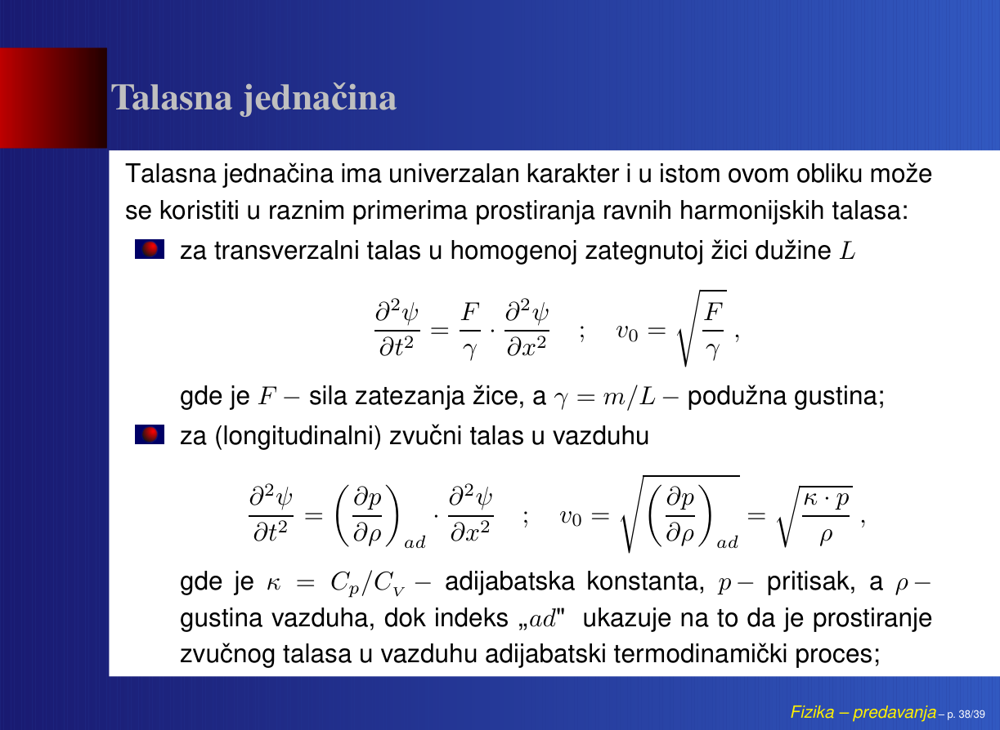
Posmatrajmo homogenu, zategnutu žicu dužine $L$. Ako jedan njen kraj pobudimo poprečno (normalno na pravac žice), poremećaj se širi duž žice kao transverzalni talas — delići žice osciluju upravno na pravac u kome se talas kreće. Veličina koja ovde osciluje, koju označavamo sa $\psi$, jeste poprečno odstupanje delića žice od ravnotežnog položaja. Za takav talas talasna jednačina glasi:
Podsetnik:
Iz izraza za brzinu vidimo i jednu jasnu fizičku zakonitost: što je žica jače zategnuta (veće $F$), talas se brže prostire; što je žica teža po jedinici dužine (veće $\gamma$), talas se sporije prostire. Zato je $v_0 = \sqrt{F/\gamma}$ — brzina raste sa korenom sile zatezanja, a opada sa korenom podužne gustine.
Zvuk koji se širi kroz vazduh primer je longitudinalnog talasa — delići vazduha osciluju duž istog pravca u kome se talas kreće, naizmenično se zgušnjavajući i razređujući. I za ovaj slučaj talasna jednačina ima isti oblik, samo se ulogu koeficijenta uz prostorni izvod sada preuzima veličina koja zavisi od toga kako pritisak vazduha reaguje na promenu gustine:
Podsetnik:
Indeks „$ad$" uz izvod $\partial p/\partial \rho$ nije slučajan: on ukazuje na to da je prostiranje zvučnog talasa u vazduhu adijabatski termodinamički proces. To znači da se zgušnjavanja i razređenja vazduha dešavaju toliko brzo da razmena toplote sa okolinom praktično ne stigne da se odigra. Upravo zbog te adijabatske prirode procesa u krajnjem izrazu za brzinu pojavljuje se adijabatska konstanta $\kappa = C_p/C_V$, pa brzinu zvuka možemo pisati u kompaktnom obliku $v_0 = \sqrt{\kappa\,p/\rho}$.
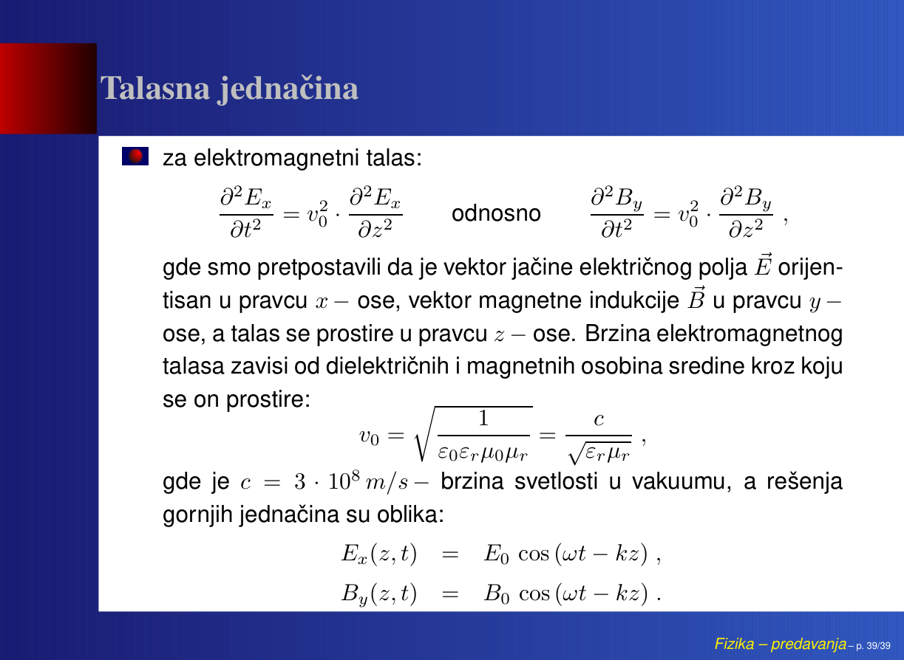
Treći primer pokazuje da isti oblik jednačine važi i za elektromagnetni talas, iako tu ne osciluje nikakav materijalni delić, već polja — vektor jačine električnog polja $\vec{E}$ i vektor magnetne indukcije $\vec{B}$. Pretpostavimo da je vektor $\vec{E}$ orijentisan u pravcu $x$-ose, vektor $\vec{B}$ u pravcu $y$-ose, a da se sam talas prostire u pravcu $z$-ose. Tada talasne jednačine glase:
Podsetnik:
Vidimo da električno i magnetno polje zadovoljavaju jednačine istog oblika — oba se prostiru istom brzinom $v_0$ u istom pravcu ($z$-osa), uzajamno upravna jedno na drugo i na pravac prostiranja.
Za razliku od mehaničkih talasa, brzina elektromagnetnog talasa ne zavisi od mase ili zatezanja, već od dielektričnih i magnetnih osobina sredine kroz koju talas putuje:
Podsetnik:
Prvi oblik izraza pokazuje da brzina zavisi od proizvoda permitivnosti i permeabilnosti sredine. Ako sve osobine vakuuma izdvojimo, dobijamo upravo brzinu svetlosti $c = 1/\sqrt{\varepsilon_0\mu_0}$, pa se izraz svodi na drugi, jednostavniji oblik $v_0 = c/\sqrt{\varepsilon_r\mu_r}$. Iz njega se jasno vidi da je brzina elektromagnetnog talasa u nekoj sredini uvek manja od brzine svetlosti u vakuumu (jer su $\varepsilon_r$ i $\mu_r$ veći ili jednaki jedinici), a u samom vakuumu, gde je $\varepsilon_r = \mu_r = 1$, talas se prostire upravo brzinom $c$.
Rešenja gornjih jednačina, tj. funkcije koje opisuju kako se polja menjaju u prostoru i vremenu, imaju očekivani harmonijski oblik:
Podsetnik:
Oba polja imaju isti argument $(\omega t - kz)$, što znači da osciluju u fazi — električno i magnetno polje istovremeno dostižu svoje maksimume i istovremeno prolaze kroz nulu, prostirući se zajedno kao jedinstven elektromagnetni talas.
Pod zvukom podrazumevamo onu posebnu vrstu mehaničkih talasa koje naše čulo sluha može da registruje. Drugim rečima, zvuk je mehanički talas koji izaziva osećaj koji nazivamo zvukom samo zato što naše uho na njega reaguje. Ljudsko uho, međutim, nije osetljivo na sve frekvencije, već samo na jedan ograničen opseg.
Frekvencije koje čovek može da čuje leže u opsegu od $20\,\text{Hz}$ do $20\,\text{kHz}$. Sve što je ispod ove donje granice, dakle talasi sa frekvencijama nižim od $20\,\text{Hz}$, naziva se infrazvuk, dok se mehanički talasi čije frekvencije premašuju gornju granicu, to jest $20\cdot 10^{3}\,\text{Hz}$, svrstavaju u oblast ultrazvuka. Infrazvuk i ultrazvuk su, po svojoj fizičkoj prirodi, potpuno isti tip mehaničkog talasa kao i čujni zvuk; razlika je jedino u tome što ih naše uho ne percipira.
Kada se zvuk prenosi kroz vazduh, on to čini kao longitudinalni talas. To znači da se čestice sredine (molekuli vazduha) pomeraju u istom pravcu u kom se talas prostire. Posledica tog longitudinalnog pomeranja jeste da se u vazduhu naizmenično smenjuju zone zgušnjavanja (gde su molekuli gušće zbijeni) i zone razređivanja (gde su molekuli ređi). Upravo to naizmenično putovanje zgusnutih i razređenih slojeva čini zvučni talas. Ovaj mehanizam je potpuno analogan prostiranju longitudinalnog talasa duž čvrste šipke: i tamo se duž šipke smenjuju zone u kojima je materijal sabijen i zone u kojima je rastegnut.
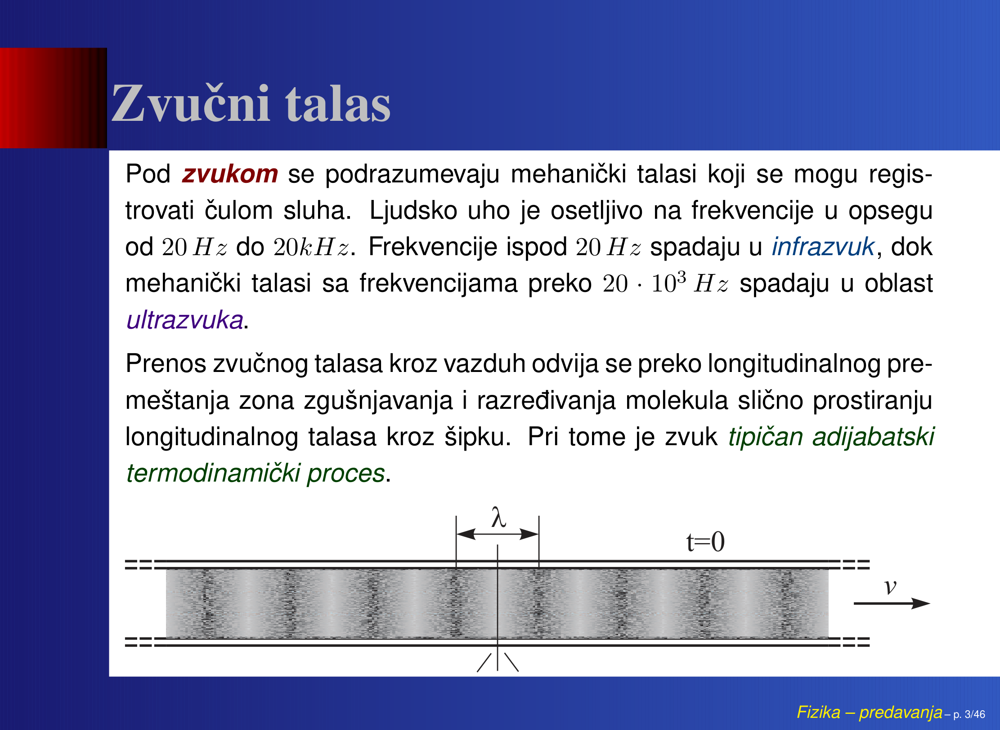
Iako šipka i vazduh prenose zvuk na sličan način, postoji jedna ključna fizička razlika između ta dva slučaja. Kod čvrste šipke atomi su čvrsto vezani u svojim ravnotežnim položajima, pa pri prolasku talasa osciluju sa amplitudom koja je mnogo manja od prečnika samog atoma:
Podsetnik: $\psi_0$ — amplituda oscilovanja atoma, to jest najveće odstupanje od ravnotežnog položaja ($\text{m}$); $d$ — prečnik atoma ($\text{m}$).
Kod zvučnog talasa u vazduhu situacija je drugačija. Molekuli vazduha su slobodni i kreću se na velikim međusobnim rastojanjima, pa amplitude njihovog oscilovanja moraju biti barem reda veličine srednjeg slobodnog puta molekula, ili čak veće od njega:
Podsetnik: $\psi_0$ — amplituda oscilovanja molekula vazduha ($\text{m}$); $\langle \ell \rangle$ — srednji slobodni put molekula, to jest prosečno rastojanje koje molekul pređe između dva uzastopna sudara ($\text{m}$).
Za idealne gasove srednji slobodni put iznosi približno $\langle \ell \rangle \simeq 10^{-7}\,\text{m}$, iz čega neposredno sledi da amplituda oscilovanja molekula vazduha pri prenosu zvuka ne može biti manja od:
Podsetnik: $\psi_0$ — amplituda oscilovanja molekula vazduha ($\text{m}$).
Zvuk koji se prostire kroz vazduh predstavlja tipičan adijabatski termodinamički proces. Da bismo razumeli zašto, treba se setiti šta se dešava u zonama zgušnjavanja i razređivanja. Pošto se ti slojevi neprekidno naizmenično smenjuju, u vazduhu se javlja temperaturska nehomogenost: gušći slojevi vazduha, koji su nastali sabijanjem (kompresijom), neznatno se zagrevaju, dok se ređi slojevi, nastali širenjem (ekspanzijom), neznatno hlade u odnosu na ravnotežnu temperaturu vazduha pre dolaska talasa.
Postavlja se pitanje zašto ova razlika u temperaturi ne nestane razmenom toplote između toplijih i hladnijih slojeva. Odgovor leži u brzinama. Brzina prostiranja zvučnog talasa daleko je veća od brzine toplotnog provođenja. To znači da, dok bi toplota tek krenula da prelazi iz toplijih u hladnije slojeve, talas se već pomerio dalje. Između susednih slojeva jednostavno ne stigne da dođe do razmene toplote. A proces u kome nema razmene toplote sa okolinom upravo je, po definiciji, adijabatski proces. Zato je prostiranje zvuka kroz vazduh adijabatsko.
Na nivou pojedinačnih čestica, prenos zvuka odvija se ovako: molekuli koji harmonijski osciluju prenose energiju putem sudara na obližnje, još nepobuđene molekule. Tako se poremećaj, sloj po sloj, prosleđuje kroz sredinu, a sa njim putuje i energija talasa.
Posmatrajmo ravan progresivni talas sa amplitudom $\psi_0$ i frekvencijom $\omega$, koji se brzinom $v_0$ prostire kroz datu homogenu sredinu. Svaki molekul sredine pri prolasku talasa harmonijski osciluje, a srednja energija tog oscilovanja za jedan molekul mase $\mu$ iznosi:
Podsetnik: $\langle \epsilon \rangle$ — srednja energija oscilovanja jednog molekula ($\text{J}$); $\mu$ — masa jednog molekula ($\text{kg}$); $\omega$ — kružna (ugaona) frekvencija oscilovanja ($\text{rad/s}$); $\psi_0$ — amplituda oscilovanja ($\text{m}$).
Ova energija odnosi se na samo jedan molekul. Da bismo dobili energiju koju talas nosi u jedinici zapremine sredine, moramo srednju energiju jednog molekula pomnožiti sa brojem molekula u jedinici zapremine, to jest sa koncentracijom molekula $n_0$. Tako dobijamo srednju gustinu energije:
Podsetnik: $\langle w \rangle$ — srednja gustina energije, to jest srednja energija talasa po jedinici zapremine ($\text{J/m}^3$); $n_0$ — koncentracija molekula, to jest broj molekula u jedinici zapremine ($\text{m}^{-3}$); $\mu$ — masa jednog molekula ($\text{kg}$); $\rho = n_0\,\mu$ — gustina sredine ($\text{kg/m}^3$); $\omega$ — kružna frekvencija ($\text{rad/s}$); $\psi_0$ — amplituda oscilovanja ($\text{m}$).
U poslednjem koraku iskorišćeno je to da je proizvod koncentracije molekula i mase jednog molekula upravo masa po jedinici zapremine, dakle gustina sredine: $\rho = n_0\,\mu$. Tako se gustina energije izrazila preko makroskopske veličine $\rho$, koju je mnogo lakše izmeriti od mikroskopskih veličina $n_0$ i $\mu$.
Prostirući se kroz sredinu, talas brzinom $v_0$ neprekidno pobuđuje sve nove i nove slojeve molekula, prenoseći im energiju. Veličina koja opisuje koliko energije talas prenosi naziva se jačina ili intenzitet talasa.
Fizički intenzitet zvuka definiše se kao energija koja u jedinici vremena prođe kroz jediničnu površinu postavljenu normalno (upravno) na pravac prostiranja talasa. Ako energiju koja prođe kroz površinu $S$ za vreme posmatramo kao snagu $P$ po toj površini, intenzitet možemo zapisati ovako:
Podsetnik: $I$ — fizički intenzitet (jačina) zvuka ($\text{W/m}^2$); $v_0$ — brzina prostiranja talasa ($\text{m/s}$); $\langle w \rangle$ — srednja gustina energije ($\text{J/m}^3$); $P$ — snaga, to jest energija u jedinici vremena ($\text{W}$); $S$ — površina normalna na pravac prostiranja ($\text{m}^2$); $\rho$ — gustina sredine ($\text{kg/m}^3$); $\omega$ — kružna frekvencija ($\text{rad/s}$); $\psi_0$ — amplituda oscilovanja ($\text{m}$).
Osnovna ideja izraza $I = v_0 \cdot \langle w \rangle$ je vrlo intuitivna: ako u svakoj jedinici zapremine ima energije $\langle w \rangle$, a ta zapremina protiče brzinom $v_0$, onda kroz jediničnu površinu u jedinici vremena prođe upravo proizvod te dve veličine.
Fizički intenzitet zvuka može se povezati i sa akustičkim poremećajem pritiska, to jest sa malim promenama pritiska koje talas izaziva u sredini. Polazimo od Hukovog zakona za pritisak akustičkog elastičnog naprezanja u šipki koju je uzrokovao talas, i od talasne funkcije koja opisuje pomeranje čestica:
Podsetnik: $p$ — akustički poremećaj pritiska ($\text{Pa}$); $E_{\text{Y}}$ — Jangov modul elastičnosti sredine ($\text{Pa}$); $\dfrac{\partial \psi}{\partial x}$ — relativno izduženje (deformacija) u pravcu prostiranja (bezdimenziono); $\psi(x,t)$ — pomeranje čestice u tački $x$ u trenutku $t$ ($\text{m}$); $\psi_0$ — amplituda ($\text{m}$); $\omega$ — kružna frekvencija ($\text{rad/s}$); $k$ — talasni broj ($\text{m}^{-1}$).
Da bismo uvrstili talasnu funkciju u Hukov zakon, prvo nađemo njen izvod po koordinati $x$. Diferenciranjem kosinusne funkcije dobijamo:
Podsetnik: $\dfrac{\partial \psi}{\partial x}$ — relativna deformacija sredine (bezdimenziono); $k$ — talasni broj ($\text{m}^{-1}$); $\psi_0$ — amplituda ($\text{m}$); $\omega$ — kružna frekvencija ($\text{rad/s}$).
Pored toga, koristimo i izraz za Jangov modul izveden iz Njutnovog obrasca za brzinu zvuka u čvrstim telima. Po tom obrascu, brzina zvuka je $v_0 = \sqrt{E_{\text{Y}}/\rho}$, odakle sledi da je Jangov modul jednak:
Podsetnik: $E_{\text{Y}}$ — Jangov modul elastičnosti ($\text{Pa}$); $v_0$ — brzina zvuka u sredini ($\text{m/s}$); $\rho$ — gustina sredine ($\text{kg/m}^3$).
Kada izvod talasne funkcije i izraz za Jangov modul uvrstimo u Hukov zakon, dobijamo izraz za akustički pritisak koji talas izaziva:
Podsetnik: $p$ — akustički poremećaj pritiska u tački i trenutku ($\text{Pa}$); $v_0$ — brzina zvuka ($\text{m/s}$); $\rho$ — gustina sredine ($\text{kg/m}^3$); $k$ — talasni broj ($\text{m}^{-1}$); $\psi_0$ — amplituda pomeranja ($\text{m}$); $\Delta p_{max}$ — amplituda (najveća vrednost) akustičkog pritiska ($\text{Pa}$); $\omega$ — kružna frekvencija ($\text{rad/s}$).
Iz ovog izraza vidimo da pritisak takođe osciluje, kao i pomeranje, i da je njegova amplituda jednaka veličini koja stoji ispred sinusa, a to je upravo $\Delta p_{max} = v_0^{2}\,\rho\,k\,\psi_0$.
Dobijenu amplitudu akustičkog pritiska možemo dodatno preurediti. Iskoristićemo dve veze: prvo, da je kvadrat brzine zvuka jednak proizvodu brzine i nje same, što se može napisati i kao $v_0^{2} = v_0\cdot v_0 = v_0\,\lambda\,\nu$ (jer je $v_0 = \lambda\,\nu$); drugo, da je talasni broj jednak $k = 2\pi/\lambda$. Uvrštavanjem ovih izraza dobijamo:
Podsetnik: $\Delta p_{max}$ — amplituda akustičkog pritiska ($\text{Pa}$); $v_0$ — brzina zvuka ($\text{m/s}$); $\lambda$ — talasna dužina ($\text{m}$); $\nu$ — frekvencija ($\text{Hz}$); $k = 2\pi/\lambda$ — talasni broj ($\text{m}^{-1}$); $\rho$ — gustina sredine ($\text{kg/m}^3$); $\omega = 2\pi\nu$ — kružna frekvencija ($\text{rad/s}$); $\psi_0$ — amplituda pomeranja ($\text{m}$).
U izvođenju je iskorišćeno da se $\lambda$ iz brojioca i imenioca skrati, a faktor $2\pi\nu$ daje kružnu frekvenciju $\omega$. Pojavljuje se i gustina $\rho$ (koja je sadržana u prethodnom izrazu za amplitudu kroz $v_0^2\rho$), pa konačan oblik glasi $\Delta p_{max} = \rho\,v_0\,\psi_0\,\omega$.
Sada možemo uporediti ovaj rezultat sa definicijom fizičkog intenziteta zvuka iz izraza (7.1). Cilj je da intenzitet izrazimo preko amplitude pritiska, jer je pritisak veličina koju lakše merimo od pomeranja molekula. Posle poređenja zaključujemo da je:
Podsetnik: $I$ — fizički intenzitet zvuka ($\text{W/m}^2$); $\Delta p_{max}$ — amplituda akustičkog pritiska ($\text{Pa}$); $\Delta p_{eff}$ — efektivni akustički pritisak ($\text{Pa}$); $\rho$ — gustina sredine ($\text{kg/m}^3$); $v_0$ — brzina zvuka ($\text{m/s}$); $\mathcal{R}_{ac}$ — akustički otpor date sredine ($\text{kg/(m}^2\text{s)}$ ili $\text{Pa}\cdot\text{s/m}$).
U ovom zapisu uvedene su dve nove veličine. Prva je akustički otpor sredine:
Podsetnik: $\mathcal{R}_{ac}$ — akustički otpor sredine ($\text{kg/(m}^2\text{s)}$); $\rho$ — gustina sredine ($\text{kg/m}^3$); $v_0$ — brzina zvuka u sredini ($\text{m/s}$).
Druga je efektivni akustički pritisak, koji se dobija deljenjem amplitude pritiska korenom iz dva:
Podsetnik: $\Delta p_{eff}$ — efektivni akustički pritisak uzrokovan talasom ($\text{Pa}$); $\Delta p_{max}$ — amplituda (najveća vrednost) akustičkog pritiska ($\text{Pa}$).
Treba istaći da amplituda akustičkog pritiska može imati veoma širok dijapazon vrednosti, u zavisnosti od toga kroz koju se sredinu zvučni talas prenosi. Različite sredine, naime, imaju veoma različite gustine i brzine zvuka, pa samim tim i veoma različit akustički otpor.
Sve do sada govorili smo o fizičkom intenzitetu, koji je objektivna, merljiva veličina. Međutim, ljudsko uho ne reaguje na sve frekvencije podjednako: njegova osetljivost na prijem zvuka različita je na raznim frekvencijama. To znači da dva tona istog fizičkog intenziteta, ali različitih frekvencija, čovek neće doživeti kao podjednako glasne.
Za svaku frekvenciju postoje dve granice. Donja granica je minimalni intenzitet koji uho uopšte može da registruje i naziva se prag čujnosti. Gornja granica je maksimalni intenzitet koji uho još može da izdrži, a da pri tome ne nastane bol, i naziva se prag bola. Iznad praga bola zvuk postaje bolan i može oštetiti sluh.
Čovečje uho najbolje reaguje na frekvencije iz opsega od $800$ do $6000\,\text{Hz}$. Za taj najosetljiviji opseg, granične vrednosti intenziteta iznose:
Podsetnik: $I_0$ — minimalni intenzitet zvuka, to jest prag čujnosti ($\text{W/m}^2$); $I_{max}$ — maksimalni intenzitet zvuka, to jest prag bola ($\text{W/m}^2$).
Vredi zapaziti koliko je ogroman raspon na koji uho reaguje: od $10^{-12}$ do $1\,\text{W/m}^2$ ima dvanaest redova veličine.
Fiziološka jačina zvuka, koju nazivamo i čujnost, jeste sposobnost uha da na datoj frekvenciji, sa porastom intenziteta zvuka, razlikuje bliske intenzitete koji su slabi. Drugim rečima, ona opisuje kako subjektivni doživljaj glasnoće zavisi od intenziteta zvuka. Pošto se intenzitet menja preko ogromnog raspona od dvanaest redova veličine, nije pogodno izražavati ga linearno; zato se istorijski zakon čujnosti izražava u decibelima, koristeći logaritamsku skalu:
Podsetnik: $L$ — nivo (fiziološka jačina) zvuka izražen u decibelima ($\text{dB}$); $I$ — fizički intenzitet posmatranog zvuka ($\text{W/m}^2$); $I_0$ — referentni intenzitet, to jest prag čujnosti, $I_0 = 10^{-12}\,\text{W/m}^2$ ($\text{W/m}^2$).
Logaritamska skala je zgodna jer ogroman raspon intenziteta sažima u praktičan, mali raspon brojeva. Proverimo to na dvema graničnim vrednostima. Na pragu čujnosti je $I = I_0$, pa je njihov količnik jednak jedinici, a logaritam jedinice je nula, te dobijamo $L_0 = 0\,\text{dB}$. Na pragu bola je $I = I_{max} = 1\,\text{W/m}^2$, pa je količnik $I/I_0 = 10^{12}$; logaritam te vrednosti je $12$, što pomnoženo sa $10$ daje $L = 120\,\text{dB}$. Tako se ceo dvanaestoredni raspon fizičkih intenziteta preslikao na pregledan opseg od $0\,\text{dB}$ do $120\,\text{dB}$.
Ljudsko uho ne reaguje jednako na sve zvuke. Da bi se neki zvuk uopšte čuo, on mora da ima dovoljno veliku jačinu, ali i frekvenciju koja pada u opseg na koji je uho osetljivo. Ako bismo, dakle, hteli da prikažemo koje sve zvuke čovek može da registruje, morali bismo istovremeno da uzmemo u obzir dve veličine: frekvenciju zvuka i njegovu jačinu (nivo intenziteta). Upravo tu oblast frekvencija i jačina na koje je uho osetljivo zgodno je prikazati grafički.
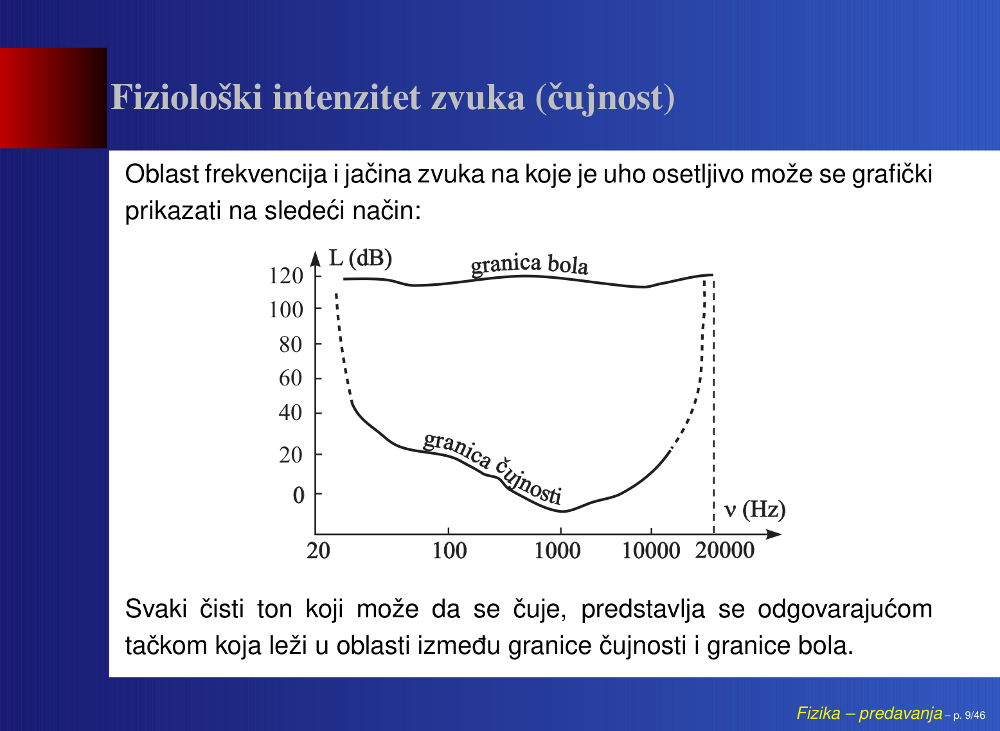
Na dijagramu je na vodoravnoj osi predstavljena frekvencija $\nu$ (u hercima, $\text{Hz}$), i to u logaritamskoj razmeri, tako da se obuhvati ceo opseg od oko $20\ \text{Hz}$ do oko $20\,000\ \text{Hz}$. Na uspravnoj osi predstavljen je nivo zvuka $L$ izražen u decibelima ($\text{dB}$). Dobijena oblast ograničena je sa dve krive linije.
Donja kriva naziva se granica čujnosti. To je najmanja jačina zvuka koju uho još uvek može da registruje na datoj frekvenciji; ispod te krive zvuk je previše slab da bi se čuo. Vidimo da granica čujnosti nije ravna linija: uho je najosetljivije u srednjem delu opsega (oko $1000\ \text{Hz}$), gde je potrebna najmanja jačina da bi se zvuk čuo, dok prema vrlo niskim i vrlo visokim frekvencijama ta granica naglo raste, što znači da na tim frekvencijama treba mnogo jači zvuk da bismo ga uopšte primetili.
Gornja kriva naziva se granica bola. To je jačina zvuka pri kojoj zvuk postaje toliko snažan da izaziva bol u uhu. Iznad te granice zvuk više nije prijatan slušni doživljaj već postaje bolan i može oštetiti sluh.
Svaki čisti ton koji čovek može da čuje predstavlja se odgovarajućom tačkom u ovom dijagramu, čiji položaj je određen frekvencijom i jačinom tog tona. Da bi se ton zaista čuo, ta tačka mora da leži unutar oblasti zatvorene između granice čujnosti (odozdo) i granice bola (odozgo). Tonovi izvan te oblasti ili su preslabi da bi se čuli, ili su toliko jaki da izazivaju bol.
Jedna od najvažnijih osobina talasa iste prirode jeste njihova aditivnost, koju nazivamo i superpozicija. To je sposobnost da se više talasa, koji u istom vremenskom trenutku stignu u istu tačku prostora, saberu, odnosno slože. Drugim rečima, ako kroz neku tačku istovremeno prolazi nekoliko talasa, ukupno pomeranje (elongacija) u toj tački jednako je zbiru pomeranja koja bi izazvao svaki talas pojedinačno.
Posledica ovog slaganja jeste da se dva talasa nastala u bliskim izvorima, u nekim tačkama prostora pojačavaju, a u drugim tačkama potiru (slabe). Na narednoj slici slučaj (a) prikazuje pojačavanje: dva talasa stižu tako da im se grbe (brda) i doline poklapaju, pa se njihova dejstva sabiraju u jači talas. Slučaj (b) prikazuje potiranje: tu jedan talas u datoj tački ima grbu, a drugi dolinu, pa se njihova dejstva oduzimaju i talas slabi.
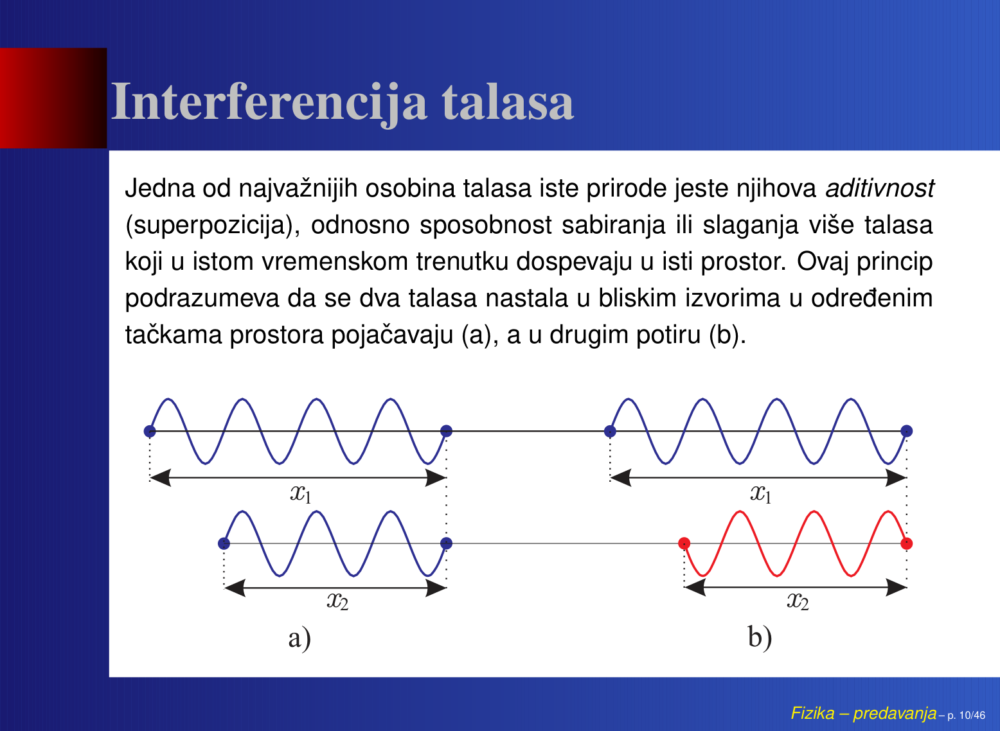
Da bi se pojava pojačavanja i slabljenja talasa stalno održavala na istim mestima u prostoru, talasi moraju biti posebno usklađeni. Talase koji u svakoj tački sredine imaju konstantnu faznu razliku nazivamo koherentnim talasima. Koherentni mogu biti samo oni talasi koji imaju jednaku frekvenciju. Pri slaganju koherentnih talasa nastaje stalna pojava uzajamnog pojačavanja i slabljenja talasa, i upravo se ta pojava naziva interferencija.
Koja će pojava nastati u nekoj tački — pojačavanje ili slabljenje — zavisi od toga koliko se putevi koje su dva talasa prešli do te tačke međusobno razlikuju. Tu razliku pređenih puteva označavamo sa $\delta$ i zovemo je razlika puteva.
Do maksimalnog pojačanja pri interferenciji dolazi kada su talasi u fazi, tj. kada im je fazna razlika $\Delta\varphi = 2n\pi$. To praktično znači da maksimum jednog i maksimum drugog talasa istovremeno dođu u istu tačku prostora, pa se njihova dejstva u potpunosti saberu. Taj uslov, izražen preko razlike puteva, glasi da razlika puteva mora biti jednaka celom broju talasnih dužina:
Podsetnik: $\delta$ — razlika puteva koje dva talasa pređu do posmatrane tačke (m); $\lambda$ — talasna dužina (m); $n$ — ceo broj (red maksimuma), bez jedinice.
Maksimalno slabljenje talasa javlja se kada su talasi u protivfazi, tj. kada im je fazna razlika $\Delta\varphi = (2n+1)\pi$. To znači da maksimum jednog talasa koincidira (poklapa se) sa minimumom drugog talasa, pa se njihova dejstva oduzimaju. Izraženo preko razlike puteva, ovaj uslov glasi da razlika puteva mora biti jednaka neparnom broju polovina talasne dužine:
Podsetnik: $\delta$ — razlika puteva dva talasa do posmatrane tačke (m); $\lambda$ — talasna dužina (m); $n$ — ceo broj, bez jedinice; $\dfrac{\lambda}{2}$ — polovina talasne dužine (m).
Stojeći talas je specijalan slučaj interferencije koji se javlja kada se dva talasa jednakih talasnih dužina i jednakih amplituda kreću duž istog pravca, ali u suprotnim smerovima. Takav slučaj prirodno se dešava prilikom odbijanja ravnog talasa od prepreke. Pošto naiđe na prepreku, talas se odbija i nastavlja da se kreće duž istog pravca, ali u suprotnom smeru — i pritom menja fazu oscilovanja za $\pi$. Tako se odbijeni talas slaže sa upadnim, i njihovom interferencijom nastaje stojeći talas.
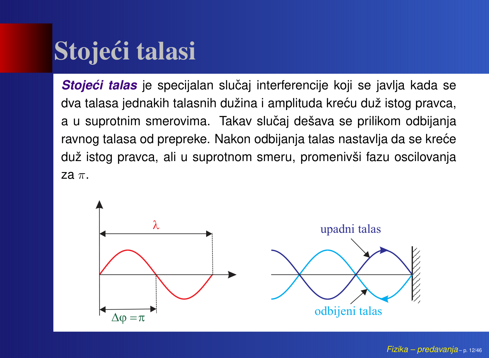
Da bismo došli do jednačine stojećeg talasa, napišemo jednačine oba talasa koji se slažu. Ako se upadni talas prostire u pozitivnom smeru $x$-ose, njegova talasna jednačina ima oblik:
Podsetnik: $\psi_{+}$ — elongacija (pomeraj) tačke u upadnom talasu (m); $\psi_0$ — amplituda talasa (m); $\omega$ — kružna (ugaona) frekvencija ($\text{rad/s}$); $t$ — vreme (s); $k$ — talasni broj ($\text{rad/m}$); $x$ — položaj tačke duž ose (m).
Odbijeni talas kreće se u suprotnom smeru, tj. u negativnom smeru $x$-ose, pa se u njegovoj jednačini menja znak ispred $kx$:
Podsetnik: $\psi_{-}$ — elongacija tačke u odbijenom talasu (m); ostale oznake imaju isto značenje kao gore.
Po principu superpozicije, rezultujući talas dobijamo sabiranjem elongacija upadnog i odbijenog talasa. Pri sabiranju koristimo adicionu teoremu za zbir dva kosinusa:
Ovde su $\alpha = \omega t - kx$ i $\beta = \omega t + kx$. Tada je $\dfrac{\alpha+\beta}{2} = \omega t$, a $\dfrac{\alpha-\beta}{2} = -kx$ (a pošto je kosinus parna funkcija, $\cos(-kx)=\cos(kx)$). Uvrštavanjem se dobija jednačina rezultujućeg stojećeg talasa:
Podsetnik: $\psi$ — rezultujuća elongacija stojećeg talasa (m); $\psi_0$ — amplituda pojedinačnih talasa (m); $k$ — talasni broj ($\text{rad/m}$); $x$ — položaj tačke (m); $\omega$ — kružna frekvencija ($\text{rad/s}$); $t$ — vreme (s); $A(x)$ — amplituda oscilovanja u tački $x$ (m).
gde je amplituda oscilovanja u datoj tački:
Podsetnik: $A(x)$ — amplituda oscilovanja u tački sa koordinatom $x$ (m); $\psi_0$ — amplituda pojedinačnog talasa (m); $k$ — talasni broj ($\text{rad/m}$); $x$ — koordinata tačke (m).
Superpozicijom dva suprotno usmerena talasa nastaje novi talas koji se ne ponaša kao progresivan (putujući) talas, ali ima istu frekvenciju oscilovanja. Ključna razlika je u amplitudi: amplituda oscilovanja ovakvog talasa nije svuda ista, već se menja od tačke do tačke po kosinusnoj funkciji $2\psi_0\cos(kx)$. Drugim rečima, gde se nalazimo duž pravca, takvu amplitudu osciluje.
Iz toga slede dve vrste posebnih tačaka. Tačke u kojima je amplituda oscilovanja uvek jednaka nuli, dakle tačke koje uopšte ne osciluju, zovu se čvorovi stojećeg talasa. Tačke u kojima amplituda ima maksimalnu vrednost $2\psi_0$ zovu se trbusi stojećeg talasa. Pošto se trbusi i čvorovi ne pomeraju u prostoru — uvek su na istim mestima — ovakav talas se i zove stojeći talas.
Trbusi se nalaze u onim tačkama u kojima je amplituda $A(x)$ najveća po apsolutnoj vrednosti, tj. tamo gde je $\cos(kx) = \pm 1$. To je zadovoljeno kada je:
Podsetnik: $x$ — položaj trbuha (m); $k$ — talasni broj ($\text{rad/m}$); $\lambda$ — talasna dužina (m); $n$ — ceo broj (redni broj trbuha), bez jedinice. Trbusi su, dakle, na rastojanjima koja su celobrojni umnošci polovine talasne dužine.
Čvorovi su određeni uslovom da je amplituda jednaka nuli, tj. da je $\cos(kx)=0$, što važi kada je:
Podsetnik: $x$ — položaj čvora (m); $k$ — talasni broj ($\text{rad/m}$); $\lambda$ — talasna dužina (m); $n$ — ceo broj (redni broj čvora), bez jedinice. Čvorovi su, dakle, na rastojanjima koja su neparni umnošci četvrtine talasne dužine.
Iz prethodnih izraza vidimo gde leže karakteristične tačke stojećeg talasa: trbusi se nalaze u tačkama sa koordinatama određenim celim brojem polovina talasnih dužina $\left(0,\ \dfrac{\lambda}{2},\ \lambda,\ \dots\right)$, dok su čvorovi određeni neparnim brojem četvrtina talasnih dužina $\left(\dfrac{\lambda}{4},\ \dfrac{3\lambda}{4},\ \dots\right)$.
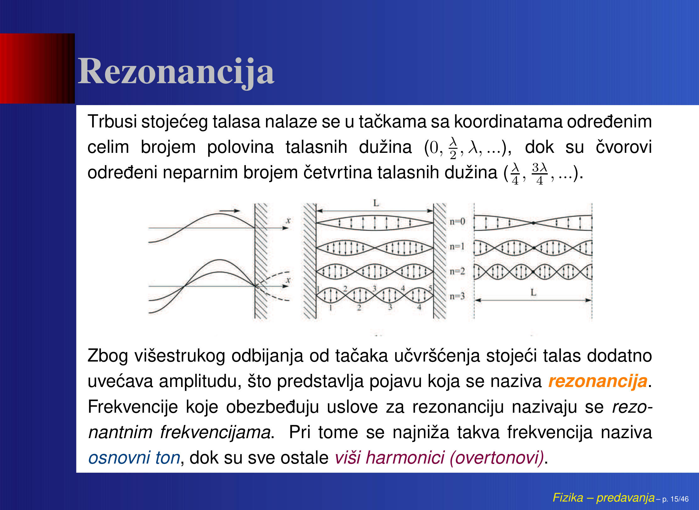
Kada se talas više puta odbija od tačaka učvršćenja (na primer od dve fiksirane granice sredine), odbijeni talasi se neprestano slažu sa upadnima. Pri tome stojeći talas dodatno uvećava svoju amplitudu, i ta pojava naglog porasta amplitude naziva se rezonancija.
Da bi rezonancija nastala, frekvencija mora biti tačno odgovarajuća — takva da se između tačaka učvršćenja "uklopi" ceo broj polutalasa, čime se obezbeđuju potrebni čvorovi i trbusi. Frekvencije koje obezbeđuju uslove za rezonanciju nazivaju se rezonantnim frekvencijama. Najniža takva frekvencija naziva se osnovni ton, dok se sve ostale rezonantne frekvencije nazivaju viši harmonici ili overtonovi. Na slici je prikazano kako se sa povećanjem reda raste broj trbuha i čvorova: osnovni ton ima najmanji broj trbuha, a svaki viši harmonik ima jedan trbuh više.
Uopšteno, rezonancija je pojava do koje dolazi kada na neki sistem deluje prinudna sila koja se menja harmonijski (periodično). Da bismo razumeli zašto je to bitno, treba imati u vidu da svaki sistem, odnosno svaka supstanca, sastavljen je od atoma ili molekula koji nikada nisu potpuno u miru, već se stalno oscilatorno kreću oko svojih ravnotežnih položaja. Te oscilacije su karakteristične za datu supstancu, a njihova frekvencija naziva se sopstvena (prirodna) frekvencija sistema.
U slučajevima kada se frekvencija prinudne (spoljašnje) sile poklopi sa sopstvenom frekvencijom sistema, dolazi do naglog skoka amplitude oscilovanja — i upravo to predstavlja pojavu koja se naziva rezonancija.
Rezonancija ima mnogo dobrih strana: praktično svi muzički instrumenti funkcionišu upravo zahvaljujući ovoj pojavi, baš kao i radio-antene, odnosno mikrotalasne pećnice. Sa druge strane, brojne su i njene štetne manifestacije, kao što je, na primer, rušenje zgrada prilikom zemljotresa, kada se frekvencija podrhtavanja tla poklopi sa sopstvenom frekvencijom građevine.
Rezonancija nastaje kada se na neki sistem deluje periodičnom silom čija se frekvencija poklapa (ili je veoma bliska) sa sopstvenom frekvencijom tog sistema. Tada amplituda oscilovanja naglo raste, jer sistem u svakom ciklusu prima energiju u "pravom trenutku" i ta se energija nagomilava. U realnim konstrukcijama rezonancija nije samo apstraktna pojava: ako amplituda poraste dovoljno, naprezanja u materijalu mogu da pređu granicu izdržljivosti i konstrukcija se ruši.
Klasičan primer takvog razornog dejstva rezonancije jeste rušenje mosta Takoma (Vašington, SAD) 7. novembra 1940. godine. Most se srušio upravo zbog rezonancije, i to pod dejstvom ne previše jakog vetra brzine svega oko $64\ \text{km/h}$. Naizgled umeren vetar pobudio je oscilacije čija se frekvencija poklopila sa sopstvenom frekvencijom mosta, amplituda je narastala dok konstrukcija nije popustila. Ovaj primer pokazuje da pri projektovanju konstrukcija sopstvene frekvencije moraju biti poznate i pažljivo izbegnute u opsegu mogućih pobuda.
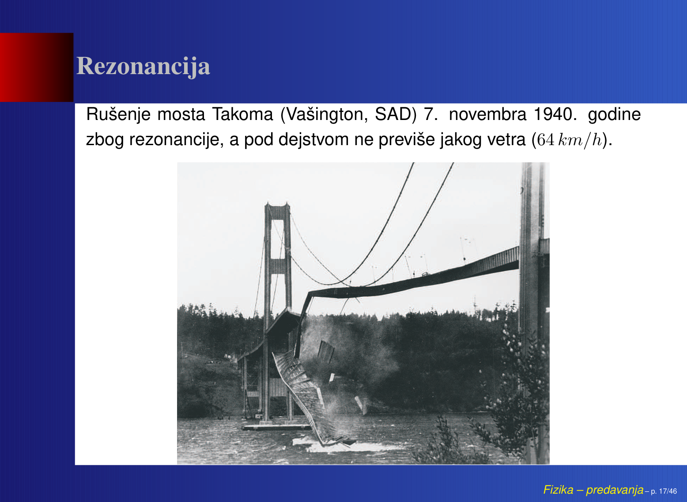
Rezonancija je usko povezana sa nastankom stojećih talasa. Kada se talas prostire kroz ograničenu sredinu (na primer kroz šipku, žicu ili stub vazduha u cevi) i odbija se od granica, dolazi do preklapanja talasa koji putuju u suprotnim smerovima. Za određene frekvencije to preklapanje daje stabilnu sliku sa nepokretnim tačkama (čvorovima) i tačkama maksimalne amplitude (trbusima) — to je stojeći talas, a same te frekvencije su rezonantne frekvencije sistema.
U nastavku razmatramo nastanak stojećih talasa u nekoliko karakterističnih slučajeva: za šipku učvršćenu sa jedne strane, za šipku (ili žicu) učvršćenu sa obe strane i za šipku učvršćenu na sredini.
Pri tome je ključno pravilo o graničnim uslovima: na učvršćenom kraju (ili krajevima) mora se javiti čvor, jer je tamo materijal nepokretan, dok se na slobodnom kraju (ili krajevima) javlja trbuh stojećeg talasa, gde je amplituda najveća. Upravo položaji čvorova i trbuha određuju koje su talasne dužine, a time i koje frekvencije, dozvoljene.
Treba napomenuti da se rezonancija ne javlja samo kod čvrstih tela, već i u gasovima — na primer u vazdušnom stubu (videti Laboratorijsku vežbu br. 5 — "Ispitivanje rezonancije"). Pri tome postoji potpuna analogija sa čvrstim telima: uslov za rezonanciju u vazdušnom stubu kod cevi zatvorene sa jedne strane isti je kao kod šipke učvršćene sa jedne strane, dok su uslovi za nastanak stojećih talasa kod cevi otvorene sa obe strane jednaki onima za cev zatvorenu sa obe strane.
Posmatrajmo šipku dužine $L$ koja je sa jednog kraja čvrsto učvršćena, a sa drugog slobodna. Na učvršćenom kraju mora se nalaziti čvor, a na slobodnom kraju trbuh. Najjednostavniji stojeći talas koji zadovoljava te uslove je onaj kod kojeg na dužini šipke "stane" tačno jedna četvrtina talasne dužine — to je osnovni ton. Sledeća dozvoljena stanja imaju tri četvrtine, pet četvrtina talasne dužine i tako redom; to su prvi viši harmonik, drugi viši harmonik itd.
Na slici se jasno vidi da je na učvršćenom kraju uvek čvor, a na slobodnom uvek trbuh. Tri prikazana slučaja odgovaraju redom uslovima $L = 1\cdot\frac{\lambda}{4}$ (osnovni ton), $L = 3\cdot\frac{\lambda}{4}$ (prvi viši harmonik) i $L = 5\cdot\frac{\lambda}{4}$ (drugi viši harmonik). Primećujemo da su to neparni umnošci četvrtine talasne dužine.
Spektar sopstvenih oscilacija šipke određen je elastičnim svojstvima materijala i graničnim uslovima (položajima čvorova i trbuha obrazovanog stojećeg talasa). Veza između dužine šipke $L$ i talasne dužine stojećeg talasa koji na njoj može da se formira glasi:
Podsetnik: $L$ — dužina šipke (m); $\lambda_n$ — talasna dužina $n$-tog stojećeg talasa (m); $n$ — redni broj harmonika (bezdimenziona celobrojna vrednost; $n=0$ daje osnovni ton). Faktor $(2n+1)$ uzima vrednosti $1, 3, 5, \ldots$ — neparne brojeve, što je u skladu sa slikom.
Da bismo od talasnih dužina došli do frekvencija, koristimo dve poznate veze. Prva je osnovna jednačina talasnog kretanja, koja brzinu talasa povezuje sa proizvodom talasne dužine i frekvencije. Druga je Njutnov obrazac za brzinu zvuka u čvrstim telima, koji tu istu brzinu izražava preko elastičnih svojstava materijala:
Podsetnik: $v_0$ — brzina prostiranja (zvučnog) talasa u materijalu šipke (m/s); $\lambda_n$ — talasna dužina (m); $\nu_n$ — frekvencija $n$-tog harmonika (Hz, tj. $\text{s}^{-1}$); $E$ — Jangov (modul elastičnosti) materijala (Pa, tj. $\text{N/m}^2$); $\rho$ — gustina materijala ($\text{kg/m}^3$).
Iz ove jednakosti izrazimo frekvenciju kao $\nu_n = \dfrac{1}{\lambda_n}\sqrt{\dfrac{E}{\rho}}$. Sada u nju ubacujemo talasnu dužinu iz uslova rezonancije: iz $L = (2n+1)\frac{\lambda_n}{4}$ sledi $\dfrac{1}{\lambda_n} = \dfrac{2n+1}{4L}$. Zamenom konačno dobijamo:
Podsetnik: $\nu_n$ — frekvencija $n$-tog harmonika (Hz); $n$ — redni broj harmonika (bezdimenzioni, $n=0,1,2,\ldots$); $L$ — dužina šipke (m); $E$ — modul elastičnosti (Pa); $\rho$ — gustina materijala ($\text{kg/m}^3$). Iz formule se vidi da su dozvoljene frekvencije srazmerne neparnim brojevima $(2n+1)=1,3,5,\ldots$ i da rastu kada šipka postaje kraća ili kada je materijal krući (veće $E$) i lakši (manje $\rho$).
Ako je šipka učvršćena na oba kraja, onda na oba kraja mora postojati čvor. Najjednostavniji takav stojeći talas ima na dužini šipke tačno jednu polovinu talasne dužine; sledeća stanja imaju dve, tri itd. polovine talasne dužine.
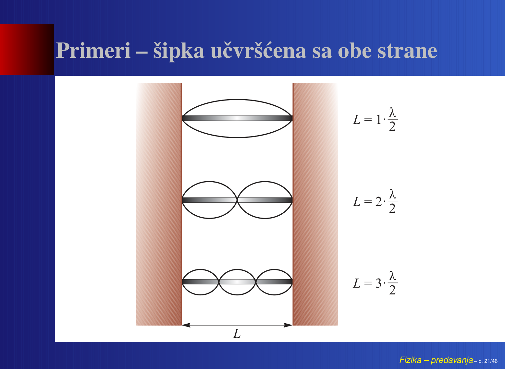
Na slici se vidi da su na oba učvršćena kraja čvorovi, a prikazana stanja odgovaraju uslovima $L = 1\cdot\frac{\lambda}{2}$, $L = 2\cdot\frac{\lambda}{2}$ i $L = 3\cdot\frac{\lambda}{2}$. Ovde su dozvoljeni svi celobrojni umnošci polovine talasne dužine.
Uslov za rezonanciju (nastanak stojećih talasa) u ovom slučaju je:
Podsetnik: $L$ — dužina šipke (m); $\lambda_n$ — talasna dužina $n$-tog stojećeg talasa (m); $n$ — redni broj harmonika (bezdimenzioni, $n=0$ daje osnovni ton). Faktor $(n+1)$ uzima vrednosti $1, 2, 3, \ldots$, tj. sve cele brojeve.
Primenom istog postupka kao u prethodnom primeru — polazeći od veze brzine, talasne dužine i frekvencije sa Njutnovim obrascem — dobija se:
Podsetnik: $v_0$ — brzina talasa u šipki (m/s); $\lambda_n$ — talasna dužina (m); $\nu_n$ — frekvencija $n$-tog harmonika (Hz); $E$ — modul elastičnosti (Pa); $\rho$ — gustina ($\text{kg/m}^3$); $L$ — dužina šipke (m); $n$ — redni broj harmonika (bezdimenzioni). Korak $\frac{1}{\lambda_n}=\frac{n+1}{2L}$ dobija se direktno iz uslova rezonancije za ovaj slučaj.
Odavde direktno slede frekvencija osnovnog tona (za $n=0$):
Podsetnik: $\nu_0$ — frekvencija osnovnog tona (Hz); $L$ — dužina šipke (m); $E$ — modul elastičnosti (Pa); $\rho$ — gustina ($\text{kg/m}^3$).
i frekvencija prvog višeg harmonika (overtona) (za $n=1$):
Podsetnik: $\nu_1$ — frekvencija prvog višeg harmonika (Hz); $L$ — dužina šipke (m); $E$ — modul elastičnosti (Pa); $\rho$ — gustina ($\text{kg/m}^3$). Primećujemo da je $\nu_1 = 2\nu_0$: kod šipke učvršćene sa obe strane viši harmonici su celobrojni umnošci osnovne frekvencije.
U poslednjem slučaju šipka je učvršćena tačno u svojoj sredini. To znači da se čvor mora nalaziti na polovini dužine, dok su oba kraja slobodna pa se na njima javljaju trbusi. Zbog ovog rasporeda na dužini šipke staje neparan broj polovina talasne dužine.
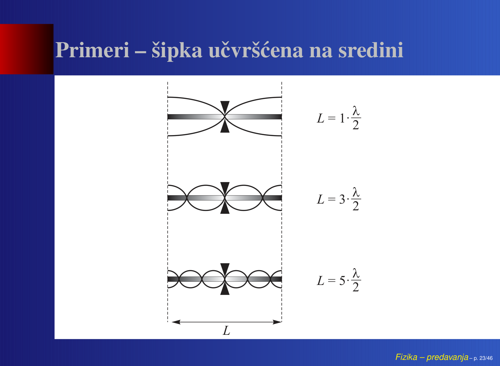
Na slici se vidi da je čvor uvek u sredini (mesto učvršćenja), a krajevi su trbusi. Prikazana stanja odgovaraju uslovima $L = 1\cdot\frac{\lambda}{2}$, $L = 3\cdot\frac{\lambda}{2}$ i $L = 5\cdot\frac{\lambda}{2}$ — dakle neparni umnošci polovine talasne dužine.
Spektar sopstvenih oscilacija šipke u ovom slučaju je određen uslovom:
Podsetnik: $L$ — dužina šipke (m); $\lambda_n$ — talasna dužina $n$-tog stojećeg talasa (m); $n$ — redni broj harmonika (bezdimenzioni). Faktor $(2n+1)$ daje neparne brojeve $1,3,5,\ldots$, što odgovara slici.
Ponavljanjem istog postupka (zamenom $\frac{1}{\lambda_n}=\frac{2n+1}{2L}$ u izraz za frekvenciju) dobijaju se odgovarajuće frekvencije:
Podsetnik: $\nu_n$ — frekvencija $n$-tog harmonika (Hz); $n$ — redni broj harmonika (bezdimenzioni, $n=0,1,2,\ldots$); $L$ — dužina šipke (m); $E$ — modul elastičnosti (Pa); $\rho$ — gustina ($\text{kg/m}^3$).
Iz ove opšte formule čitamo pojedinačne tonove. Osnovni ton (za $n=0$):
Podsetnik: $\nu_0$ — frekvencija osnovnog tona (Hz); $L$ — dužina šipke (m); $E$ — modul elastičnosti (Pa); $\rho$ — gustina ($\text{kg/m}^3$).
prvi i drugi viši harmonik (za $n=1$ i $n=2$):
Podsetnik: $\nu_1$, $\nu_2$ — frekvencije prvog i drugog višeg harmonika (Hz); $L$ — dužina šipke (m); $E$ — modul elastičnosti (Pa); $\rho$ — gustina ($\text{kg/m}^3$). Vidimo da su viši harmonici srazmerni neparnim brojevima ($\nu_1 = 3\nu_0$, $\nu_2 = 5\nu_0$), što je posledica učvršćenja u sredini i slobodnih krajeva.
Posmatrajmo sada vazdušni stub zatvoren u cevi koja je otvorena na oba kraja. Na svakom otvorenom kraju cevi vazduh može slobodno da osciluje, pa se na oba kraja formira trbuh stojećeg talasa (mesto najveće amplitude oscilovanja čestica). To je suprotno situaciji sa zatvorenim krajem, gde se javlja čvor. Pošto se trbusi nalaze na oba kraja, raspored stojećih talasa koji „stane“ u cev odgovara nizu polutalasa.
Sa slike vidimo nekoliko mogućih oblika oscilovanja. U najjednostavnijem slučaju u cev dužine $L$ staje tačno jedna polovina talasne dužine, pa je $L = 1\cdot\frac{\lambda}{2}$. U sledećem slučaju staju dve polovine, $L = 2\cdot\frac{\lambda}{2}$, zatim tri, $L = 3\cdot\frac{\lambda}{2}$, i tako redom. Dakle, dužina cevi mora uvek biti celobrojan umnožak polovine talasne dužine. Ovaj uslov možemo zapisati jednom formulom:
Podsetnik: $L$ — dužina cevi (m); $\lambda_n$ — talasna dužina koja odgovara $n$-tom obliku oscilovanja (m); $n$ — redni broj (ceo broj $0, 1, 2, \dots$) koji prebrojava moguće stojeće talase; $\frac{\lambda_n}{2}$ — polovina talasne dužine (m).
Primetimo da za $n = 0$ dobijamo osnovni ton sa $L = \frac{\lambda_0}{2}$, za $n = 1$ dobijamo $L = 2\cdot\frac{\lambda_1}{2} = \lambda_1$, i tako dalje, što se tačno slaže sa slikama.
Suštinska razlika u odnosu na oscilovanje čvrste šipke jeste sredina kroz koju se talas prostire: ovde se zvučni talas ne prenosi kroz čvrsto telo, već kroz gasovitu sredinu (vazduh u cevi). Zato brzinu zvuka ne računamo kao kod čvrstih tela, nego pomoću Laplasovog obrasca za brzinu zvuka u gasu:
Podsetnik: $v_0$ — brzina zvuka u gasu (m/s); $\lambda_n$ — talasna dužina $n$-tog oblika (m); $\nu_n$ — frekvencija $n$-tog oblika (Hz); $\kappa$ — Poasonov koeficijent gasa (odnos toplotnih kapaciteta, bezdimenziona veličina); $p$ — pritisak gasa (Pa); $\rho$ — gustina gasa (kg/m³).
Iz ove veze možemo da izrazimo frekvencije koje cev može da emituje. Pošto je $v_0 = \lambda_n \nu_n$, sledi da je $\nu_n = \dfrac{v_0}{\lambda_n} = \dfrac{1}{\lambda_n}\sqrt{\dfrac{\kappa \cdot p}{\rho}}$. Sada iskoristimo uslov za dužinu cevi: iz $L = (n+1)\frac{\lambda_n}{2}$ sledi $\lambda_n = \dfrac{2L}{n+1}$, pa je $\dfrac{1}{\lambda_n} = \dfrac{n+1}{2L}$. Zamenom dobijamo konačan izraz za moguće frekvencije:
Podsetnik: $\nu_n$ — frekvencija $n$-tog oblika oscilovanja vazdušnog stuba (Hz); $n$ — redni broj ($0, 1, 2, \dots$); $L$ — dužina cevi (m); $\kappa$ — Poasonov koeficijent gasa (bezdimenziono); $p$ — pritisak gasa (Pa); $\rho$ — gustina gasa (kg/m³).
Vidimo da su moguće frekvencije celobrojni umnošci najniže (osnovne) frekvencije: za veće $n$ dobijamo sve više tonove. Veća dužina cevi $L$ daje niže frekvencije, dok veća brzina zvuka (veći $\kappa$ i $p$, manja gustina $\rho$) daje više frekvencije.
Mnoge pojave kod talasa — odbijanje (refleksija), prelamanje (refrakcija) i difrakcija talasa — mogu se objasniti jednim jednostavnim pravilom koje je formulisao Hajgens 1678. godine, poznatim kao Hajgensov princip.
Princip glasi: svaka tačka do koje je talas stigao postaje izvor novog sfernog (sekundarnog) talasa. To znači da, umesto da posmatramo talas kao celinu, možemo svaku tačku talasnog fronta zamisliti kao mali novi izvor koji emituje sopstveni sferni talas.
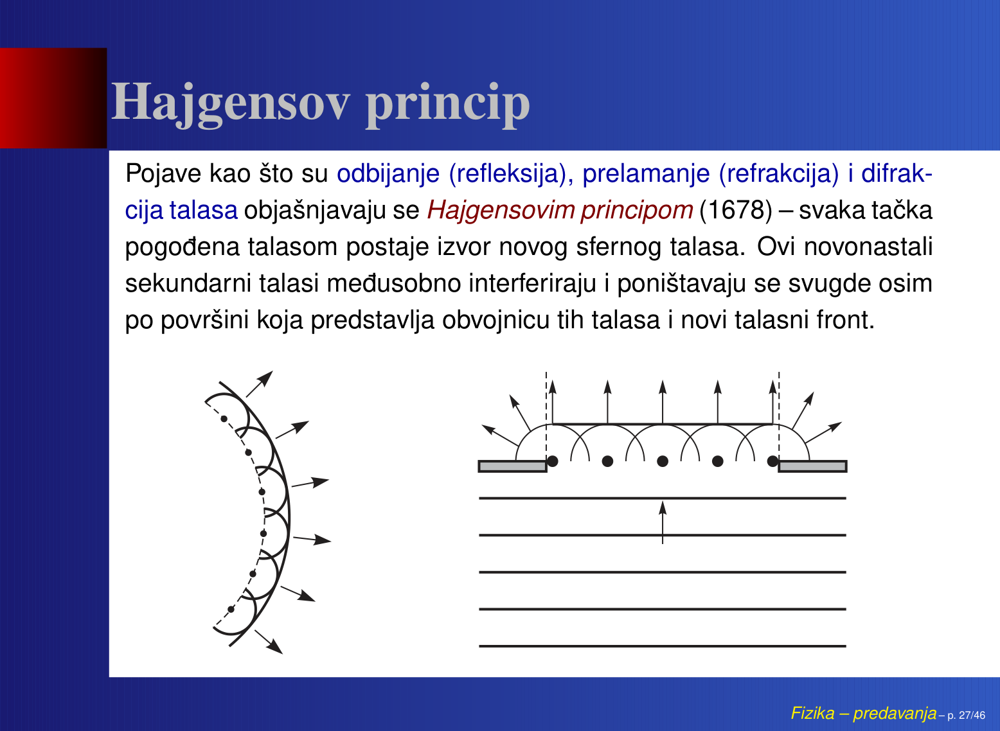
Ovi novonastali sekundarni talasi se međusobno preklapaju i interferiraju. Pri tom preklapanju oni se poništavaju svuda osim na jednoj površini — onoj koja predstavlja obvojnicu (zajedničku tangentu) svih tih sekundarnih talasa. Upravo ta obvojnica čini novi talasni front.
Na slici se to vidi u dva slučaja. Kod zakrivljenog (sfernog) talasnog fronta svaka tačka emituje mali sferni talas, a njihova obvojnica daje novi, takođe zakrivljen front pomeren u smeru prostiranja. Kod ravnog talasa svaka tačka fronta emituje sferni talas, a njihova obvojnica je opet ravna linija — novi ravan front. Tako konstrukcija pomoću sekundarnih talasa uvek daje sledeći položaj talasa, što omogućava da se geometrijski objasne refleksija, refrakcija i difrakcija.
Kada se izvor talasa i/ili prijemnik kreću jedan u odnosu na drugog, frekvencija koju registruje prijemnik nije ista kao frekvencija koju emituje izvor — dolazi do promene zabeležene frekvencije. Ova pojava naziva se Doplerov efekat.
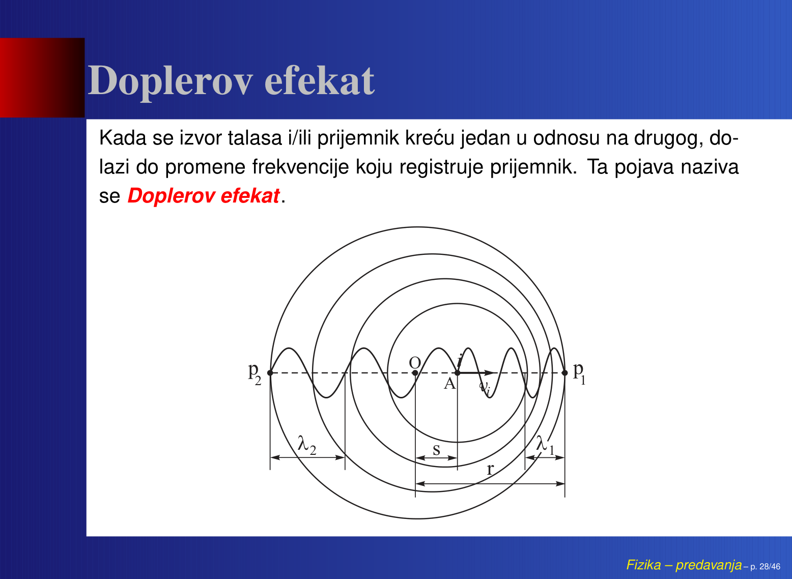
Posmatrajmo najpre slučaj u kome miruju prijemnici, a kreće se samo izvor. Pretpostavimo da se izvor talasa kreće brzinom $v_i$ duž prave koja spaja dva prijemnika, idući od prijemnika $p_2$ ka prijemniku $p_1$. Prijemnici $p_1$ i $p_2$ miruju. Izvor emituje sferne talasne frontove koji se u sredini prostiru brzinom $v_0$, nezavisno od kretanja izvora (brzina talasa zavisi od sredine, a ne od izvora).
Posmatrajmo vremenski interval $\Delta t$. Za to vreme talas pređe rastojanje $r = v_0\,\Delta t$, dok izvor za isto vreme pređe put od tačke $O$ do tačke $A$, koji iznosi $s = v_i\,\Delta t$. Pošto izvor „juri“ za sopstvenim talasima, u smeru kretanja talasni frontovi se zgušnjavaju, pa se talasna dužina smanjuje (na slici $\lambda_1$, prema prijemniku $p_1$). U suprotnom smeru frontovi se razređuju, pa se talasna dužina povećava (na slici $\lambda_2$, prema prijemniku $p_2$).
Zbog skraćene talasne dužine ispred izvora, prijemnik $p_1$ registruje frekvenciju $\nu_1$ koja je veća od frekvencije $\nu_0$ koju emituje izvor. Izvedimo to. Za vreme $\Delta t$ izvor emituje $\nu_0\,\Delta t$ talasnih dužina (toliko punih talasa stane u taj interval). Te talasne dužine, na putu prema prijemniku $p_1$, smeštene su na rastojanju $(v_0 - v_i)\,\Delta t$ — jer talasi napreduju za $v_0\Delta t$, ali ih izvor „stiska“ jer se i sam pomerio za $v_i\Delta t$ u istom smeru. Talasna dužina koju registruje prijemnik $p_1$ je tada to rastojanje podeljeno brojem talasa:
Podsetnik: $\lambda_1$ — talasna dužina koju registruje prijemnik $p_1$ (m); $v_0$ — brzina talasa u sredini (m/s); $v_i$ — brzina izvora (m/s); $\nu_0$ — frekvencija koju emituje izvor (Hz); $\Delta t$ — posmatrani vremenski interval (s).
Sada iskoristimo opštu vezu između talasne dužine i frekvencije talasa. Pošto prijemnik $p_1$ registruje frekvenciju $\nu_1$, a talas se prostire brzinom $v_0$, važi:
Podsetnik: $\lambda_1$ — talasna dužina kod prijemnika $p_1$ (m); $v_0$ — brzina talasa (m/s); $\nu_1$ — frekvencija koju registruje prijemnik $p_1$ (Hz).
Izjednačavanjem dva izraza za $\lambda_1$ dobijamo $\dfrac{v_0}{\nu_1} = \dfrac{v_0 - v_i}{\nu_0}$, odakle, rešavajući po $\nu_1$, sledi frekvencija koju registruje prijemnik $p_1$ (ka kome se izvor približava):
Podsetnik: $\nu_1$ — frekvencija koju registruje prijemnik $p_1$ ka kome se izvor približava (Hz); $v_0$ — brzina talasa u sredini (m/s); $v_i$ — brzina izvora (m/s); $\nu_0$ — frekvencija izvora (Hz). Pošto je imenilac $v_0 - v_i$ manji od $v_0$, razlomak je veći od 1, pa je $\nu_1 > \nu_0$ — prijemnik čuje viši ton.
Na potpuno isti način, za prijemnik $p_2$ od koga se izvor udaljava, talasna dužina je veća (razmaci između frontova su $(v_0 + v_i)\Delta t$), pa prijemnik $p_2$ registruje smanjenu frekvenciju:
Podsetnik: $\nu_2$ — frekvencija koju registruje prijemnik $p_2$ od koga se izvor udaljava (Hz); $v_0$ — brzina talasa (m/s); $v_i$ — brzina izvora (m/s); $\nu_0$ — frekvencija izvora (Hz). Sada je imenilac $v_0 + v_i$ veći od $v_0$, pa je razlomak manji od 1 i $\nu_2 < \nu_0$ — prijemnik čuje niži ton.
Razmotrimo sada i situaciju u kojoj se i sam prijemnik kreće. Tada se menja brzina talasa u odnosu na prijemnik. Ako se prijemnik kreće prema izvoru, talasi mu „dolaze u susret“, pa je brzina talasa u odnosu na prijemnik $v_0 + v_p$. Ako se prijemnik udaljava od izvora, on „beži“ od talasa, pa je brzina talasa u odnosu na prijemnik $v_0 - v_p$.
Objedinjavanjem oba kretanja — i izvora i prijemnika — dobija se opšti izraz za frekvenciju koju registruje prijemnik:
Podsetnik: $\nu$ — frekvencija koju registruje prijemnik (Hz); $v_0$ — brzina talasa u sredini (m/s); $v_p$ — brzina prijemnika (m/s); $v_i$ — brzina izvora (m/s); $\nu_0$ — frekvencija koju emituje izvor (Hz).
Znaci $\pm$ i $\mp$ biraju se prema smeru kretanja, pri čemu uvek treba imati na umu pravilo koje povezuje gornji znak u brojiocu sa gornjim znakom u imeniocu:
Time smo zaokružili razmatranje mehaničkih talasa, kod kojih se poremećaj uvek prostire kroz neku materijalnu sredinu (čvrsto telo, tečnost ili gas). U nastavku prelazimo na elektromagnetne talase — talase koji za svoje prostiranje ne zahtevaju materijalnu sredinu.
Šezdesetih godina XIX veka Džejms Klark Maksvel uspeo je da sve do tada poznate zakone koji opisuju električne i magnetne pojave sažme u svega četiri jednačine. Te jednačine, iskazane u svom najsažetijem (diferencijalnom) obliku, glase:
Podsetnik:
Da bismo razumeli Maksvelove jednačine, moramo znati šta tačno znače oznake $\operatorname{div}$ i $\operatorname{rot}$. One se primenjuju na proizvoljan vektor $\vec{A} = A_x\,\vec{i} + A_y\,\vec{j} + A_z\,\vec{k}$, gde su $A_x$, $A_y$, $A_z$ njegove komponente duž osa, a $\vec{i}$, $\vec{j}$, $\vec{k}$ jedinični vektori (orti) koordinatnih osa.
Divergencija se računa kao skalarni proizvod operatora „nabla“ $\left(\frac{\partial}{\partial x}\vec{i} + \frac{\partial}{\partial y}\vec{j} + \frac{\partial}{\partial z}\vec{k}\right)$ sa vektorom $\vec{A}$. Pošto je to skalarni proizvod, rezultat je skalar (broj):
Podsetnik: $A_x$, $A_y$, $A_z$ — komponente vektora $\vec{A}$ (jedinica zavisi od fizičke veličine koju vektor predstavlja); $\frac{\partial}{\partial x}$, $\frac{\partial}{\partial y}$, $\frac{\partial}{\partial z}$ — parcijalni izvodi po koordinatama (jedinica: 1/m). Divergencija nam fizički govori koliko polje „izvire“ ili „ponire“ u datoj tački.
Rotor se računa kao vektorski proizvod istog operatora sa vektorom $\vec{A}$. Pošto je vektorski proizvod, rezultat je vektor:
Podsetnik: značenje simbola je isto kao kod divergencije; rezultat je vektor čije tri komponente stoje uz orte $\vec{i}$, $\vec{j}$, $\vec{k}$. Rotor fizički opisuje „vrtložnost“ polja — koliko se polje uvrće oko date tačke.
Iako su zapisane matematički, svaka od Maksvelovih jednačina iskazuje jedan konkretan fizički zakon koji smo ranije upoznali:
1) Prva jednačina ($\operatorname{div}\vec{E} = 0$) je diferencijalni oblik Gausovog zakona. Ona izražava činjenicu da je fluks električnog polja kroz zatvorenu površinu — u odsustvu naelektrisanja zatvorenog tom površinom — jednak nuli.
2) Druga jednačina ($\operatorname{div}\vec{B} = 0$) ukazuje na to da je fluks magnetnog polja kroz zatvorenu površinu uvek jednak nuli. Razlog je što ne postoje magnetni dipoli (magnetni „naboji“ koji bi se mogli razdvojiti) — ovo je Gausov zakon za magnetno polje.
3) Treća jednačina $\left(\operatorname{rot}\vec{E} = -\dfrac{\partial \vec{B}}{\partial t}\right)$ je sažeti zapis Faradejevog zakona indukcije. Prema njoj, vremenski promenljivo magnetno polje dovodi do formiranja promenljivog električnog polja, čije linije sile obuhvataju pravac promene magnetnog polja.
4) Četvrta jednačina $\left(\operatorname{rot}\vec{B} = \dfrac{1}{c^2}\dfrac{\partial \vec{E}}{\partial t}\right)$ opisuje suprotan proces od onog koji opisuje treća jednačina: vremenski promenljivo vrtložno električno polje indukuje nastanak magnetnog polja, čije linije sile obuhvataju linije sile električnog polja. Ovo je uopšteni Amperov zakon.
Iz treće i četvrte Maksvelove jednačine vidimo nešto izuzetno važno: promenljivo magnetno polje stvara promenljivo električno polje, a promenljivo električno polje opet stvara promenljivo magnetno polje. To znači da u svim tačkama prostora u kojima postoji promenljivo magnetno polje istovremeno se javlja i promenljivo električno polje. Ova dva polja su međusobno spregnuta i čine jedinstveno elektromagnetno polje. Upravo to uzajamno indukovanje promenljivih električnih i magnetnih polja širi se kroz prostor, čineći elektromagnetni talas.
Na prikazu se vidi ključna osobina elektromagnetnog talasa: vektor električnog polja $\vec{E}$ i vektor magnetnog polja $\vec{B}$ osciluju u dve uzajamno upravne ravni, a obe ravni su upravne na pravac prostiranja talasa (ovde duž $z$-ose). Rastojanje između dva susedna ista stanja talasa je talasna dužina $\lambda$.
Najjednostavniji oblik talasnog kretanja nastaje kada izvor talasa harmonijski osciluje. Pretpostavimo da je električno polje postavljeno u pravcu $x$-ose, a da se talas prostire duž $z$-ose. Tada se intenziteti vektora električnog i magnetnog polja mogu predstaviti jednačinama:
Podsetnik:
Obe komponente imaju isti argument kosinusa, što potvrđuje da električno i magnetno polje osciluju u fazi — istovremeno dostižu maksimum i istovremeno prolaze kroz nulu.
Talasni broj $k$ definisan je izrazom:
Podsetnik: $k$ — talasni broj (1/m); $\lambda$ — talasna dužina (m); $\omega$ — ugaona frekvencija (rad/s); $v_0$ — brzina prostiranja talasa (m/s). Pored toga, $T$ je period, a ugaona frekvencija povezana je sa običnom frekvencijom $\nu$ relacijom $\omega = 2\pi\nu$.
Brzina elektromagnetnog talasa zavisi od dielektričnih i magnetnih osobina sredine kroz koju se talas prostire. Ona se računa iz:
Podsetnik:
Za vakuum je $\varepsilon_r = 1$ i $\mu_r = 1$, pa se iz prethodnog izraza dobija brzina svetlosti u vakuumu:
Podsetnik: $c$ — brzina svetlosti u vakuumu (m/s); $\varepsilon_0$ i $\mu_0$ kao gore. Ovo je jedan od najvažnijih Maksvelovih rezultata — iz čisto električnih i magnetnih konstanti dobija se upravo brzina svetlosti, što pokazuje da je svetlost elektromagnetni talas.
Brzinu talasa u nekoj sredini možemo onda izraziti i preko brzine svetlosti:
gde je
Podsetnik: $n$ — apsolutni indeks prelamanja sredine (bezdimenziona veličina); $c$ — brzina svetlosti u vakuumu (m/s); $v$ — brzina talasa u sredini (m/s); $\varepsilon_r$, $\mu_r$ — relativne propustljivosti sredine. Pošto je $n \ge 1$, talas se u sredini uvek kreće sporije nego u vakuumu.
Pri prolasku elektromagnetnog (svetlosnog) talasa početnog intenziteta $I_0$ kroz neku optičku sredinu, sa njim se dešavaju tri stvari:
Za svaki od ovih procesa definiše se odgovarajuća karakteristična veličina — apsorpciona moć, transparencija (transmitanca) i refleksiona moć:
Podsetnik: $A$ — apsorpciona moć (bezdimenziona); $T$ — transparencija/transmitanca (bezdimenziona); $R$ — refleksiona moć (bezdimenziona); $I_0$ — početni (upadni) intenzitet (jedinica: W/m²); $I_a$, $I_t$, $I_r$ — apsorbovani, propušteni i reflektovani intenzitet (W/m²).
Pošto se ceo upadni intenzitet raspodeljuje na ova tri dela, važi $I_0 = I_r + I_a + I_t$, odakle, deljenjem sa $I_0$, sledi prosta veza:
Podsetnik: $R$, $A$, $T$ kao gore (sve bezdimenzione). Ova relacija izražava zakon održanja energije — ukupna energija talasa mora se rasporediti na refleksiju, apsorpciju i propuštanje.
Posmatrajmo sada detaljnije šta se dešava sa intenzitetom dok talas prolazi kroz materijal. Pri prolasku snopa paralelnih monohromatskih elektromagnetnih talasa intenziteta $I_0$ kroz tanak sloj materijala debljine $dx$, intenzitet snopa se smanjuje za iznos:
Podsetnik: $dI$ — mala promena (smanjenje) intenziteta na sloju (W/m²); $I$ — intenzitet snopa pre sloja (W/m²); $dx$ — debljina tankog sloja (m); $k$ — koeficijent apsorpcije (jedinica: 1/m). Znak minus znači da intenzitet opada. Suština je da je gubitak intenziteta proporcionalan i samom intenzitetu $I$ i debljini sloja $dx$.
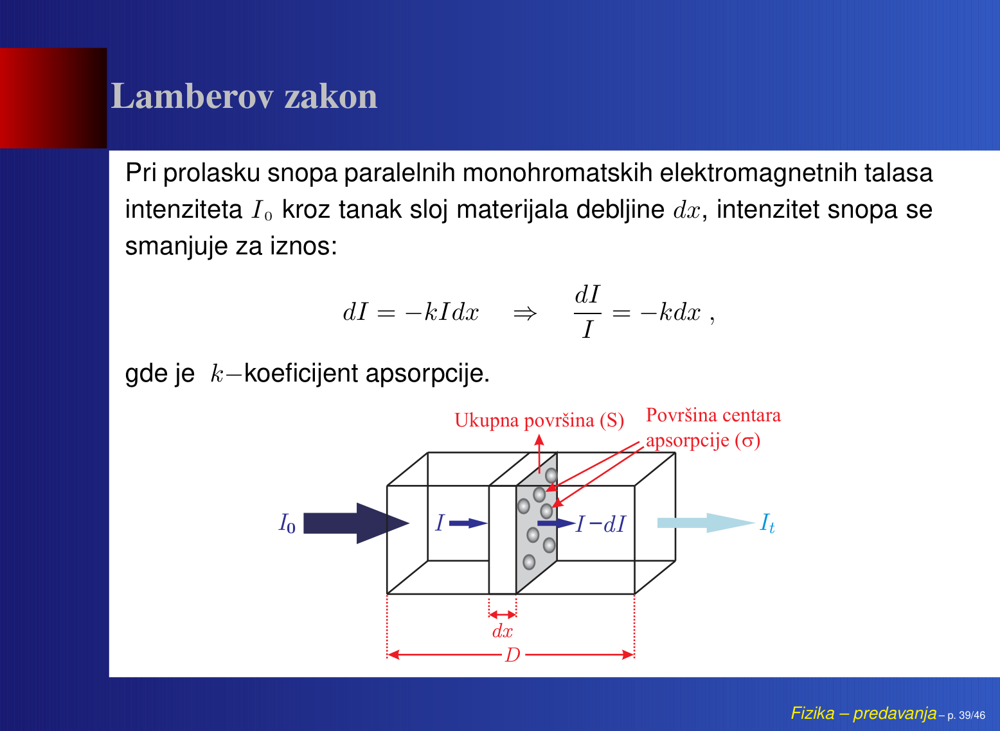
Na prikazu se vidi snop koji ulazi u materijal ukupne debljine $D$: nakon prolaska kroz tanak sloj $dx$ unutar materijala, intenzitet $I$ se smanjuje na $I - dI$, a iz materijala izlazi sa konačnim intenzitetom $I_t$. Atomi (molekuli) u sloju deluju kao centri apsorpcije.
Da bismo dobili koliko intenziteta preostane nakon prolaska kroz ceo sloj, integralimo prethodnu jednakost u granicama od $x=0$ do $x=D$, odnosno od $I=I_0$ do $I=I_t$:
Podsetnik: $I_0$ — ulazni intenzitet (W/m²); $I_t$ — izlazni (propušteni) intenzitet (W/m²); $D$ — ukupna debljina sloja (m); $k$ — koeficijent apsorpcije (1/m). Levi integral daje prirodni logaritam odnosa intenziteta, a desni jednostavno daje $D$.
Antilogaritmovanjem (prelaskom sa logaritma na eksponencijalnu funkciju) dobija se konačni izraz:
Podsetnik: $I_t$ — propušteni intenzitet (W/m²); $I_0$ — upadni intenzitet (W/m²); $k$ — koeficijent apsorpcije (1/m); $D$ — debljina sloja materijala (m); $e$ — osnova prirodnog logaritma.
Ovaj izraz poznat je kao Lamberov zakon: intenzitet zračenja propuštenog kroz sloj nekog materijala eksponencijalno opada sa porastom debljine sloja. Koeficijent apsorpcije $k$ zavisi od svojstava sredine u kojoj se vrši apsorpcija i od talasne dužine upotrebljenog elektromagnetnog zračenja.
Elektromagnetni talas se sastoji od dve komponente koje osciluju zajedno: oscilujuće električno polje i oscilujuće magnetno polje. Prirodno je zato zapitati se kako se energija raspodeljuje između ova dva polja, odnosno da li jedno polje nosi više energije od drugog. Odgovor na to pitanje sledi direktno iz Maksvelovih jednačina, koje povezuju amplitude oba polja u talasu.
Iz Maksvelovih jednačina proizilazi sledeća relacija između gustina energije električnog i magnetnog polja:
Podsetnik:
Leva strana ove jednakosti predstavlja gustinu energije sadržanu u električnom polju, a desna strana gustinu energije sadržanu u magnetnom polju. Pošto su te dve veličine jednake, zaključujemo da oba polja nose podjednake iznose energije koju talas prenosi. Drugim rečima, energija elektromagnetnog talasa je ravnomerno podeljena između električne i magnetne komponente.
Iako oba polja nose istu energiju, njihovo dejstvo na naelektrisanje koje se nalazi na putu talasa nije isto. Posmatrajmo naelektrisanje $q$ na koje talas deluje silom. Električno polje na to naelektrisanje deluje silom $F_e = qE_0$, a magnetno polje deluje silom $F_m = qvB_0$ (magnetna sila zavisi od brzine naelektrisanja $v$). Uzimajući njihov odnos, dobijamo:
Podsetnik:
Korak po korak, izvod znači sledeće: u brojiocu i imeniocu skraćuje se naelektrisanje $q$. Zatim, koristeći vezu između amplituda polja u talasu ($E_0 = cB_0$), odnos $E_0/(vB_0)$ se svodi na $c/v$. Pošto se naelektrisanja (na primer elektroni u metalu) kreću brzinama mnogo manjim od brzine svetlosti, to jest $v \ll c$, sledi da je odnos $c/v$ veoma veliki broj. Zato je električna sila mnogo veća od magnetne, $F_e \gg F_m$.
Praktičan zaključak je važan: pri interakciji elektromagnetnog talasa sa elektronima iz metala ili dielektrika može se smatrati da na njih silom deluje samo električno polje, dok je uticaj magnetnog polja zanemarljiv. Prema tome, u ovom aspektu dva polja više nisu ravnopravna — uprkos tome što nose istu energiju, za dejstvo na naelektrisanja praktično je odgovorno samo električno polje.
Pre nego što opišemo čitav opseg elektromagnetnih talasa, podsetimo se dve osnovne veličine kojima svaki talas opisujemo. Talasna dužina $\lambda$ predstavlja najmanje rastojanje između dve tačke koje, prilikom prostiranja talasa, osciluju u istoj fazi — dakle dve tačke koje se u svakom trenutku kreću potpuno usklađeno (na primer, dva susedna maksimuma talasa).
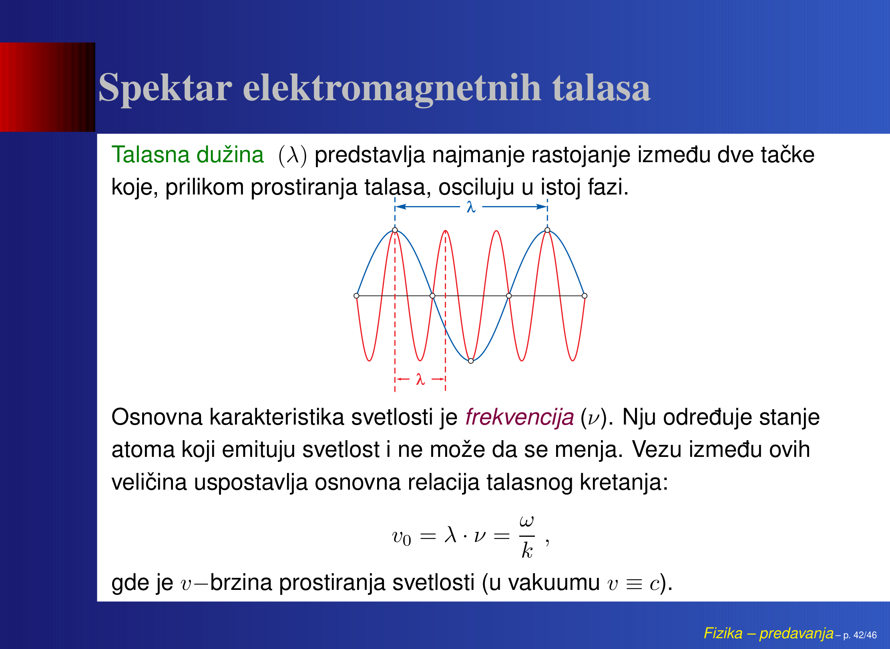
Druga osnovna karakteristika svetlosti je frekvencija $\nu$. Frekvenciju određuje stanje atoma koji emituju svetlost i ona se ne može menjati prilikom prostiranja talasa. Vezu između talasne dužine i frekvencije uspostavlja osnovna relacija talasnog kretanja:
Podsetnik:
Ova relacija znači da su talasna dužina i frekvencija obrnuto srazmerne: što je frekvencija veća, talasna dužina je manja, i obrnuto, jer je njihov proizvod uvek jednak brzini prostiranja talasa.
Elektromagnetni talasi obuhvataju veoma širok dijapazon talasnih dužina, odnosno frekvencija. Spektar elektromagnetnih talasa čine zračenja koja se razlikuju samo po svojim talasnim dužinama. Pokazalo se da talasna dužina emitovanih talasa zavisi jedino od dimenzija emitera: ukoliko je njegova dimenzija manja, utoliko je manja i talasna dužina elektromagnetnog talasa koji od njega potiče. Zato talase veoma malih talasnih dužina emituju molekuli, atomi, odnosno atomska jezgra (kao najmanji izvori).
Intenzitet snopa elektromagnetnih talasa jeste ukupna energija talasa koji u $1\,\text{s}$ prolaze kroz jediničnu površinu, normalnu na pravac njihovog prostiranja. Drugim rečima, intenzitet nam govori koliko energije snop nosi kroz datu površinu u jedinici vremena.
Snopove dalje razlikujemo prema tome da li su svi talasi u njima iste talasne dužine:
Prema načinu nastanka, primeni i delovanju na materiju, elektromagnetni talasi se razdvajaju u nekoliko oblasti koje imaju posebna imena. Te oblasti, poređane od najvećih ka najmanjim talasnim dužinama, prikazane su na sledećem dijagramu spektra.
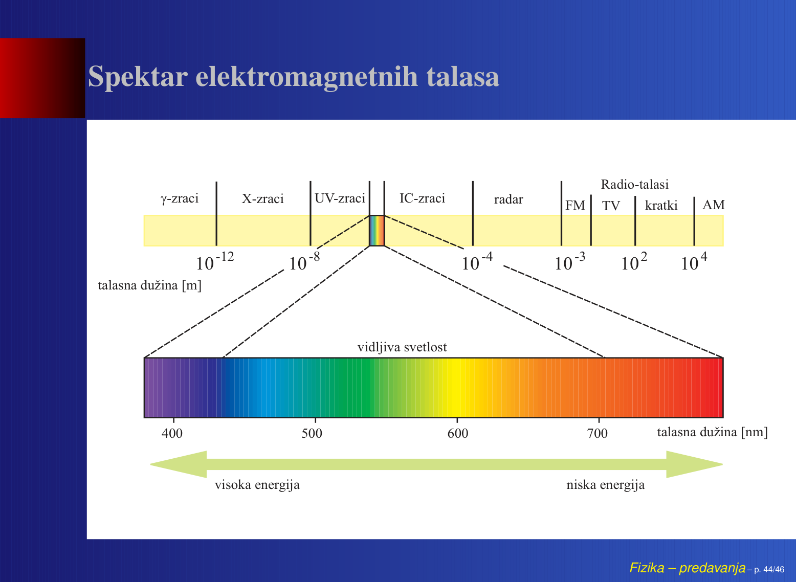
Na dijagramu se vidi kako talasna dužina raste sleva nadesno (od $10^{-12}\,\text{m}$ kod gama-zraka do reda $10^4\,\text{m}$ kod radio-talasa). Mali deo spektra koji odgovara vidljivoj svetlosti je uvećan i pokazuje da se ona prostire od oko $400\,\text{nm}$ (ljubičasta) do oko $700\,\text{nm}$ (crvena). Strelica ispod pokazuje da kraćim talasnim dužinama odgovara visoka energija, a dužim talasnim dužinama niska energija.
Pojedine oblasti spektra, poređane od najvećih talasnih dužina ka najmanjim, jesu sledeće:
Pojedine vrste elektromagnetnog zračenja izučavaju se detaljno u posebnim oblastima fizike i tehnike. Tako radiotalase proučava radiotehnika, infracrvene, vidljive i ultraljubičaste talase optika, $X$-zrake atomska fizika, a $\gamma$-zrake nuklearna fizika.
U ranom stadijumu razvoja optike, kada priroda svetlosti još nije bila poznata i razumljena, fizičari su uveli nekoliko korisnih idealizacija pomoću kojih su mogli da opišu ponašanje svetlosti. Na tim idealizacijama zasniva se geometrijska optika. Ona ne ulazi u pitanje šta je svetlost zapravo, već posmatra kako se ona prostire kroz prostor i kako se ponaša kada naiđe na granicu između dve sredine. Iako su pretpostavke geometrijske optike pojednostavljenje, one daju izvanredno tačne rezultate sve dok su dimenzije sistema koji posmatramo (sočiva, ogledala, otvora) mnogo veće od talasne dužine svetlosti. Upravo zbog toga se rad gotovo svih optičkih instrumenata može objasniti pomoću zakona geometrijske optike.
Tri osnovne idealizacije na kojima počiva geometrijska optika su:
Celokupna geometrijska optika izgrađena je na četiri osnovna principa (zakona). Prva dva su jednostavna i postavljaju okvir u kome geometrijska optika važi, a preostala dva opisuju šta se dešava na granici dveju sredina.
Kroz homogene (svuda iste) i prozračne sredine svetlost se kreće pravolinijski, dakle po pravoj liniji. Ovaj princip su uočili još stari Grci, posmatrajući pomračenja Sunca i Meseca — oštre senke koje pri tome nastaju moguće su jedino ako se svetlost prostire pravolinijski. Treba imati na umu da ovaj princip zanemaruje pojavu difrakcije (savijanja) svetlosti na ivicama neprovidnih tela; difrakcija postoji u stvarnosti, ali je u okvirima geometrijske optike zanemarujemo.
Svetlosni zraci ni na koji način ne utiču jedan na drugog. Dva snopa svetlosti mogu da se ukrste, prođu jedan kroz drugi i nastave dalje nepromenjeni, kao da onaj drugi i ne postoji. Ovaj princip zanemaruje interferenciju svetlosnih zraka — pojavu koja, kao i difrakcija, postoji u stvarnosti, ali je u geometrijskoj optici ne uzimamo u obzir.
Preostala dva principa su zakon odbijanja (refleksije) svetlosti i zakon prelamanja (refrakcije) svetlosti. Oni opisuju ponašanje svetlosti kada ona stigne do granice između dve sredine i biće detaljno obrađeni u nastavku.
Sva četiri navedena zakona mogu se izvesti iz jednog opštijeg i veoma elegantnog principa koji je formulisao Ferma (1679):
Drugim rečima, od svih zamislivih putanja između početne i krajnje tačke, svetlost „bira" onu koju prelazi najbrže. Pokažimo kako iz ovog principa proizlazi pojam optičkog puta.
Posmatrajmo putanju svetlosti između tačaka 1 i 2. Izdvojimo na njoj mali deo puta dužine $ds$. Svetlost taj delić pređe za vreme
Podsetnik: $dt$ — vreme za koje svetlost pređe delić puta (s); $ds$ — dužina malog dela puta (m); $v_0$ — brzina svetlosti u datoj sredini (m/s).
Ako sa $c$ označimo brzinu svetlosti u vakuumu, tada se količnik brzine u vakuumu i brzine u datoj sredini naziva apsolutni indeks prelamanja te sredine:
Podsetnik: $n$ — apsolutni indeks prelamanja sredine (bezdimenziona veličina); $c$ — brzina svetlosti u vakuumu (m/s); $v_0$ — brzina svetlosti u posmatranoj sredini (m/s).
Indeks prelamanja nam govori koliko je puta svetlost u datoj sredini sporija nego u vakuumu. Pošto je $v_0 = c/n$, vreme za prelaz delića puta možemo prepisati preko indeksa prelamanja:
Podsetnik: $dt$ — vreme za delić puta (s); $n$ — indeks prelamanja sredine (bezdimenziono); $c$ — brzina svetlosti u vakuumu (m/s); $ds$ — delić puta (m).
Ukupno vreme $\tau$ za koje svetlosni zrak pređe ceo put od tačke 1 do tačke 2 dobijamo sabiranjem (integracijom) svih ovih malih vremena duž putanje:
Podsetnik: $\tau$ — ukupno vreme prelaska puta od 1 do 2 (s); $c$ — brzina svetlosti u vakuumu (m/s); $n$ — indeks prelamanja sredine (bezdimenziono); $ds$ — element puta (m); $L$ — optički pređeni put (m); $s$ — geometrijski pređeni put svetlosnog zraka (m).
Veličina $L = \tau c$ koja se ovde pojavljuje naziva se optički pređeni put, dok je $s$ običan, geometrijski pređeni put svetlosnog zraka. Kada je sredina homogena (indeks prelamanja $n$ je isti svuda), integral se svodi na prost proizvod $L = n\,s$. Optički put je, dakle, geometrijski put pomnožen indeksom prelamanja sredine — on uzima u obzir da svetlost u gušćoj sredini putuje sporije, pa joj „efektivno" treba prevaliti veći put.
Ako se na put svetlosnog zraka postavi neka providna prepreka, na njenoj površini svetlosni zrak se deli na dva dela:
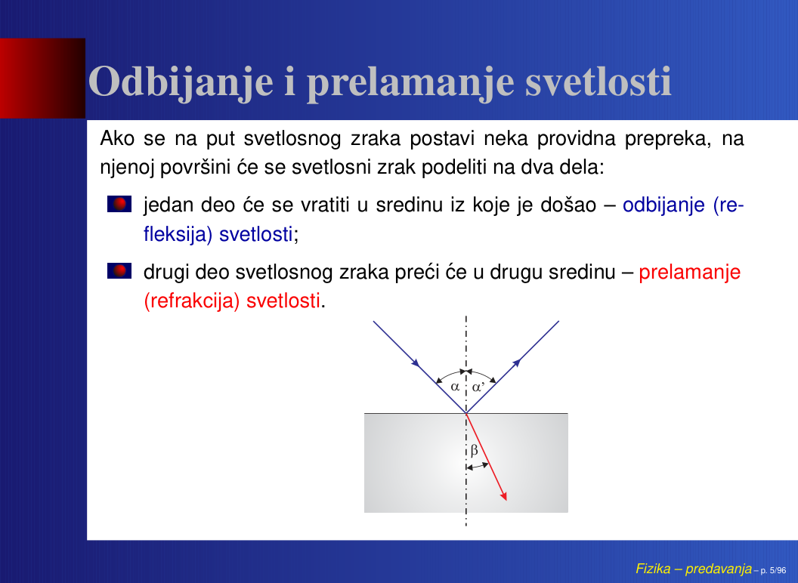
Na slici vidimo upadni zrak koji pada pod uglom $\alpha$ (mereno od normale na površinu), odbijeni zrak koji se vraća pod uglom $\alpha'$, i prelomljeni zrak koji ulazi u drugu sredinu pod uglom $\beta$. Svi se ovi uglovi mere u odnosu na normalu — zamišljenu pravu upravnu na graničnu površinu u tački u kojoj zrak pada.
Koji deo svetlosti će biti odbijen, a koji će preći u drugu sredinu, zavisi od prirode obe sredine, od upadnog ugla i od talasne dužine svetlosti. Tako, na primer, za staklo pri velikom upadnom uglu od $85^\circ$ procenat odbijene svetlosti iznosi čak $62\%$, dok pri upadnom uglu od $0^\circ$ (kada zrak pada okomito na površinu) iznosi jedva $4\%$. Vidimo da se pri kosom padu pod velikim uglom svetlost mnogo jače odbija nego pri normalnom padu.
Odbijanje i prelamanje svetlosnih zraka objašnjavaju se na isti način kao i kod mehaničkih talasa — pomoću Hajgensovog principa (1690):
Ovi novi talasi nazivaju se sekundarni talasi. Oni se međusobno preklapaju i interferiraju, i pri tome se poništavaju svuda osim duž jedne površine — one koja predstavlja obvojnicu (omotač) svih tih sitnih sfernih talasa. Upravo ta obvojnica predstavlja novi talasni front. Na taj način, polazeći od poznatog položaja talasnog fronta u jednom trenutku, Hajgensovim principom možemo geometrijski konstruisati gde će se front naći u sledećem trenutku.
Sada ćemo pomoću Hajgensovog principa izvesti zakon odbijanja. Pretpostavićemo da se izvor nalazi dovoljno daleko od granične površine na koju svetlost pada, tako da je talasni front koji do nje stiže ravan, a zraci koji prikazuju pravac kretanja talasa međusobno paralelni.
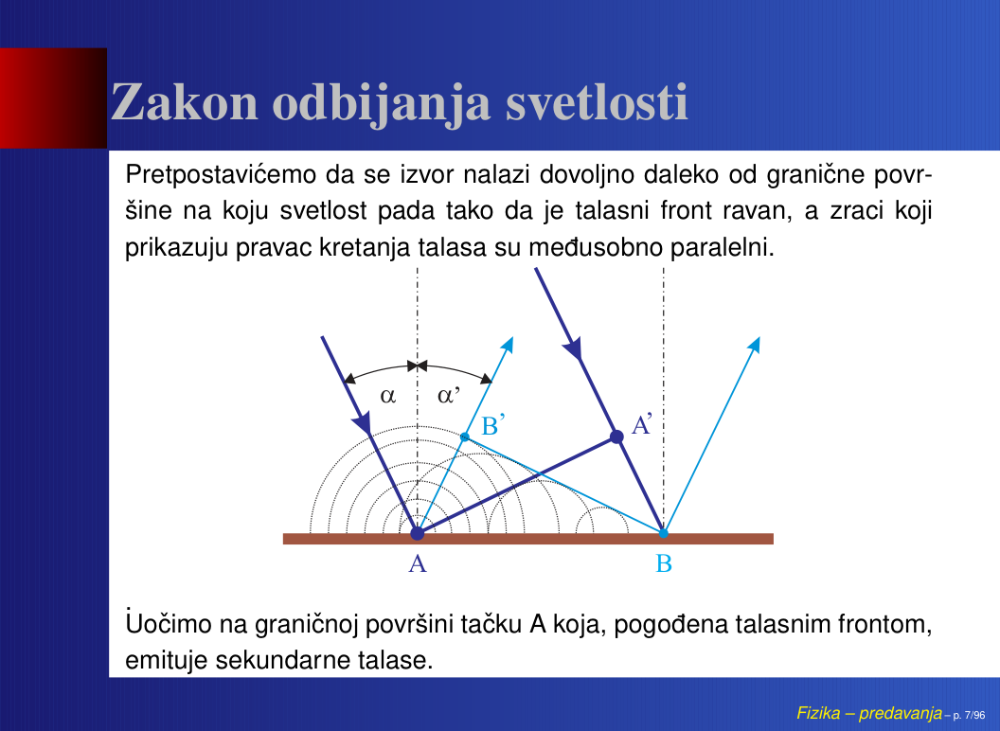
Uočimo na graničnoj površini tačku A, koju je upravo pogodio talasni front. Po Hajgensovom principu, ona od tog trenutka počinje da emituje sekundarni sferni talas. U istom trenutku, drugi kraj ravnog talasnog fronta, tačka A', tek treba da stigne do površine.
Za isto ono vreme za koje talas stigne od tačke A' (na upadnom talasnom frontu) do tačke B na graničnoj površini, sekundarni talas koji je krenuo iz tačke A stiže do tačke B'. Pošto se oba talasa kreću istom brzinom kroz istu sredinu, za isto vreme prelaze jednake puteve, pa je rastojanje A'B jednako rastojanju AB'.
Posmatrajmo sada dva trougla: $\triangle ABA'$ i $\triangle ABB'$. Oni imaju zajedničku stranicu AB (deo granične površine), jednake stranice A'B i AB' (jer su pređeni za isto vreme), a oba imaju i prav ugao (talasni front je upravan na pravac kretanja zraka). Iz toga sledi da su ova dva trougla podudarna. Zahvaljujući još i činjenici da su uglovi sa međusobno normalnim kracima jednaki, dobijamo:
Podsetnik: $\alpha$ — upadni ugao, meren između upadnog zraka i normale na površinu (° ili rad); $\alpha'$ — odbojni ugao, meren između odbijenog zraka i normale (° ili rad).
Dakle, upadni ugao je jednak odbojnom uglu. Time smo izveli zakon odbijanja (refleksije) svetlosti, koji se može iskazati na sledeći način: svetlosni zraci se na graničnoj površini između dve optički različite sredine reflektuju pod istim uglom pod kojim na nju i padaju. Pri tome upadni zrak, odbojni zrak i normala na površinu leže u istoj ravni.
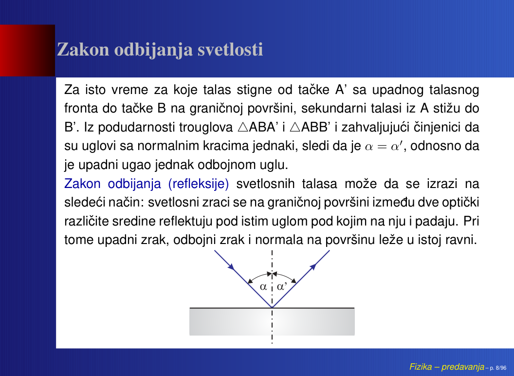
Pojavu odbijanja (refleksije) svetlosti svakodnevno srećemo i u prirodi, a ne samo na ogledalima koja smo posebno napravili. Svaka glatka i sjajna površina, kao što je mirna vodena površina jezera, ponaša se kao prirodno ogledalo: deo svetlosti koja na nju padne odbija se i vraća u istu sredinu. Zato u tihoj vodi vidimo jasan, gotovo savršen lik planine, drveća i neba iznad njih. Taj odraz nastaje upravo zbog odbijanja svetlosnih zraka od površine vode, po istim zakonima koje smo već upoznali za refleksiju. Da bi se dobio oštar i veran lik, površina mora biti mirna i glatka; ako se voda talasa, lik se razbija jer se zraci odbijaju na sve strane.
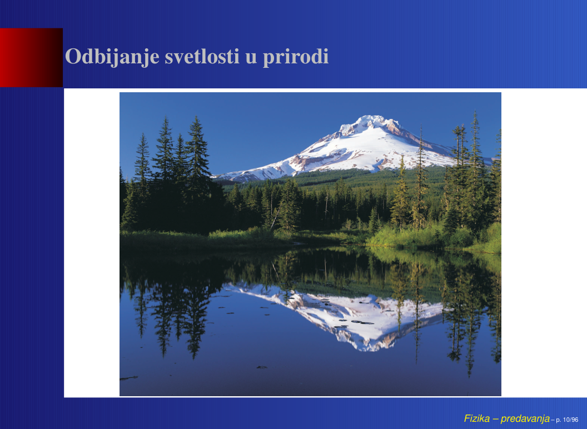
Do sada smo posmatrali šta se dešava kada se svetlost vraća u istu sredinu od koje se odbila. Sada nas zanima šta se dešava sa onim delom svetlosti koji prođe kroz graničnu površinu i nastavi da se kreće u drugoj sredini. Ovde nastupa nova pojava — prelamanje, odnosno refrakcija svetlosti.
Osnovna ideja je jednostavna: ako talas pređe u sredinu sa drugačijim optičkim osobinama, promeniće se njegova brzina i talasna dužina, a zbog toga i pravac prostiranja. Drugim rečima, svetlost se u različitim sredinama (vazduh, voda, staklo) kreće različitim brzinama. Pošto se na granici dveju sredina brzina naglo menja, menja se i pravac u kome talas putuje — zrak se "lomi" na granici.
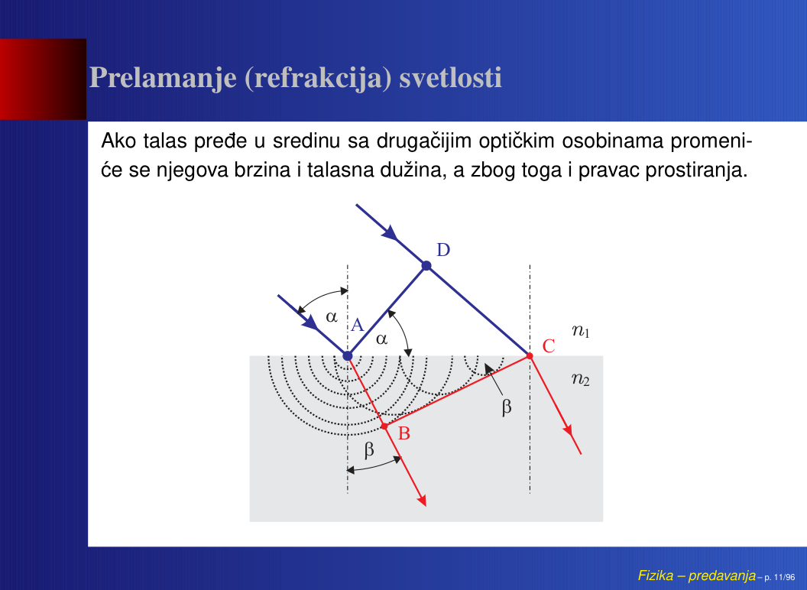
Na crtežu vidimo svetlost koja dolazi iz gornje sredine (indeks $n_1$) i pada na ravnu graničnu površinu, a zatim prelazi u donju sredinu (indeks $n_2$). Upadni zrak zaklapa sa normalom na površinu upadni ugao $\alpha$, a prelomljeni zrak zaklapa sa normalom prelomni ugao $\beta$. Tačkasti polukrugovi ispod tačke A predstavljaju sekundarne (elementarne) talase koji se šire iz tačke u kojoj je talas pogodio granicu — pomoću njih ćemo objasniti zašto se pravac menja.
Da bismo izveli zakon prelamanja, posmatramo ravni talas koji se u sredini iz koje dolazi kreće brzinom $v_1$, a u sredini u koju se prelama brzinom $v_2$. Kada talasni front stigne do granice, tačka A na graničnoj površini, pogođena talasom, počinje da emituje u drugu sredinu sekundarne talase. To je suština razmišljanja: svaka tačka koju talas dostigne postaje izvor novih, sekundarnih talasa.
Posmatramo jedan kratak vremenski interval $t$. Za to vreme dok talasni front iz tačke D (koji još putuje kroz prvu sredinu) tek stigne do granične površine, sekundarni talasi koji su ranije krenuli iz tačke A u drugu sredinu stignu do tačke B. Tako u istom trenutku $t$ imamo dva nova fronta: jedan u prvoj sredini (dužina puta $\overline{DC}$) i jedan u drugoj sredini (dužina puta $\overline{AB}$). Iz geometrije pravouglih trouglova koji se naslanjaju na zajedničku stranicu $\overline{AC}$ dobijamo dužine ovih puteva.
Podsetnik:
Prva jednačina kaže da je put fronta u prvoj sredini ($v_1 t$) projekcija stranice $\overline{AC}$ pomnožena sinusom upadnog ugla, a druga isto to za drugu sredinu sa prelomnim uglom. Pošto se obe jednačine odnose na isti vremenski interval $t$ i istu zajedničku stranicu $\overline{AC}$, možemo ih podeliti jednu drugom. Time se $\overline{AC}$ i $t$ skraćuju i ostaje odnos sinusa uglova izražen preko odnosa brzina. Tako dobijamo zakon prelamanja svetlosnih zraka, poznat kao Snelijus–Dekartov zakon.
Podsetnik:
Obratimo pažnju na važan detalj u ovom odnosu: dok je odnos sinusa jednak odnosu brzina $v_1/v_2$, on je istovremeno jednak obrnutom odnosu indeksa prelamanja $n_2/n_1$. To je zato što je sredina u kojoj se svetlost kreće sporije ona sa većim indeksom prelamanja — brzina i indeks prelamanja ponašaju se obrnuto. Ako poslednju jednakost "ukrstimo", dobijamo najpraktičniji oblik zakona: $n_1\sin\alpha = n_2\sin\beta$, koji direktno povezuje uglove sa indeksima prelamanja dveju sredina.
Iz Snelijus–Dekartovog zakona vidimo da odnos uglova zavisi od toga koja sredina ima veći indeks prelamanja. Zato razlikujemo dva karakteristična slučaja.
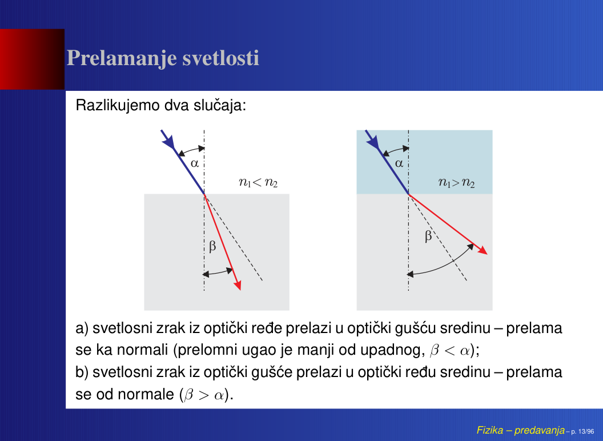
Kada svetlosni zrak prelazi iz optički ređe sredine u optički gušću sredinu (na primer iz vazduha u vodu ili staklo), zrak se prelama ka normali. To znači da je prelomni ugao manji od upadnog:
Podsetnik: $n_1$ — indeks prelamanja prve (ređe) sredine; $n_2$ — indeks prelamanja druge (gušće) sredine; $\alpha$ — upadni ugao [°]; $\beta$ — prelomni ugao [°]. Sve su to bezdimenzione, odnosno ugaone veličine.
Zaključak se direktno vidi iz zakona: pošto je $n_2$ veće, da bi jednakost $n_1\sin\alpha = n_2\sin\beta$ ostala tačna, $\sin\beta$ mora biti manji od $\sin\alpha$, pa je i sam ugao $\beta$ manji. Optički gušća sredina "privlači" zrak bliže normali.
U obrnutom slučaju, kada zrak prelazi iz optički gušće u optički ređu sredinu (na primer iz vode ili stakla u vazduh), zrak se prelama od normale. Sada je prelomni ugao veći od upadnog:
Podsetnik: $n_1$ — indeks prelamanja prve (gušće) sredine; $n_2$ — indeks prelamanja druge (ređe) sredine; $\alpha$ — upadni ugao [°]; $\beta$ — prelomni ugao [°].
Razlog je opet u zakonu prelamanja: kada je $n_1$ veće od $n_2$, da bi jednakost važila, $\sin\beta$ mora biti veći od $\sin\alpha$, pa se zrak udaljava od normale.
Posledice prelamanja lako uočavamo u svakodnevnim situacijama. Ako u čašu vode stavimo slamku ili kašiku, izgleda kao da je predmet na granici vode i vazduha "prelomljen" i pomeren. To je upravo zato što svetlosni zraci koji dolaze od potopljenog dela predmeta menjaju pravac pri prelasku iz vode (gušća sredina) u vazduh (ređa sredina), pa naše oko vidi predmet na mestu na kome se on stvarno ne nalazi.
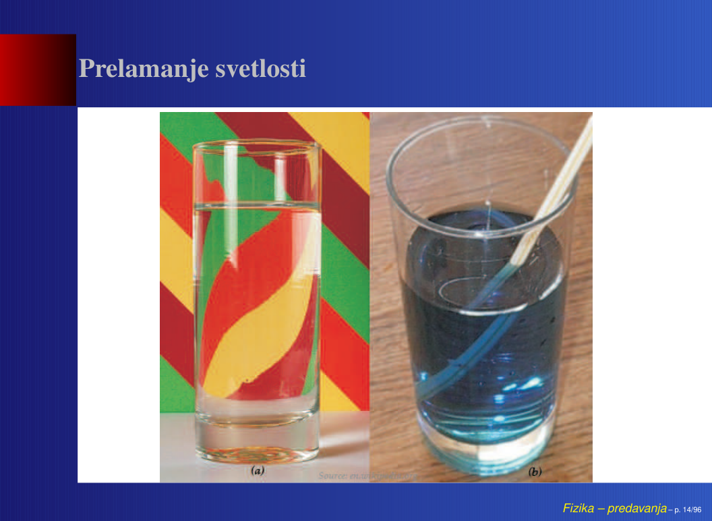
Prelamanje svetlosti ne dešava se samo na oštrim granicama dveju sredina, već i kada se optičke osobine sredine menjaju postepeno. Takav je slučaj u Zemljinoj atmosferi.
Gustina atmosfere opada sa povećanjem visine, pa atmosferu možemo da smatramo da se sastoji od nekoliko slojeva različite gustine — i time različitog indeksa prelamanja. Pošto se svetlost pri prelasku iz sloja u sloj postepeno prelama, putanja svetlosnih zraka kroz atmosferu nije prava linija, već se blago zakrivljuje. Zbog ovog prelamanja svetlosti kroz slojeve sa različitim gustinama, položaj Sunca nam se prividno pomera iznad linije horizonta.
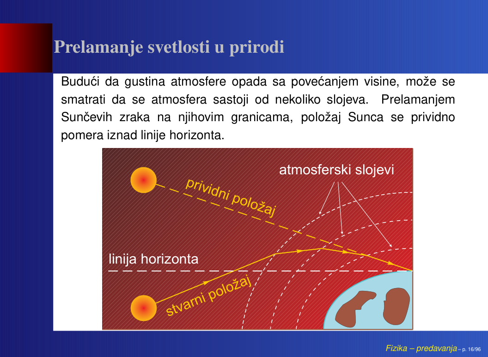
Praktična posledica je upadljiva: kada vidimo Sunce kako tek dodiruje horizont pri izlasku ili zalasku, ono se u stvarnosti već nalazi ispod linije horizonta. Vidimo ga iznad horizonta samo zato što su zraci, prolazeći kroz sve gušće slojeve atmosfere, savijeni i dovedeni do našeg oka. Na crtežu su zato jasno razdvojeni stvarni položaj Sunca (ispod horizonta) i prividni položaj (iznad horizonta) koji mi opažamo.
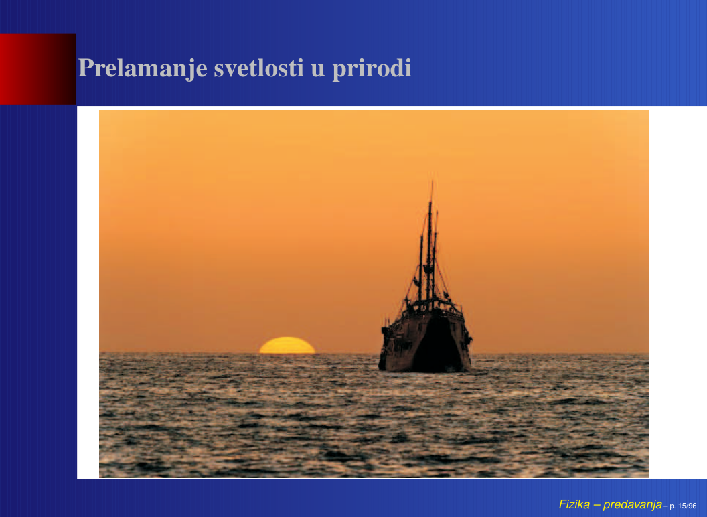
Zakoni odbijanja (refleksije) i prelamanja (refrakcije) svetlosti mogu se izvesti i na elegantniji način — polazeći od jednog jedinog, opštijeg pravila: Fermaovog principa. Taj princip kaže da svetlost između dve tačke uvek bira onaj put za koji joj je potrebno najmanje vremena, odnosno put za koji je optički pređeni put minimalan. Optički put nije obično geometrijsko rastojanje, već geometrijsko rastojanje pomnoženo indeksom prelamanja sredine kroz koju svetlost prolazi (jer u sredini sa većim indeksom prelamanja svetlost putuje sporije, pa „efektivni" put traje duže). Pokazaćemo kako iz tog jednog uslova minimuma slede oba poznata zakona geometrijske optike.
Posmatramo svetlosni zrak koji iz izvora $S$ putuje do tačke $P$, ali ne direktno: na putu se nalazi zaklon $Z$ koji sprečava direktan prolaz od $S$ do $P$. Zrak zato mora da stigne do $P$ tako što se prethodno odbije od ravne ogledalske površine $MN$.
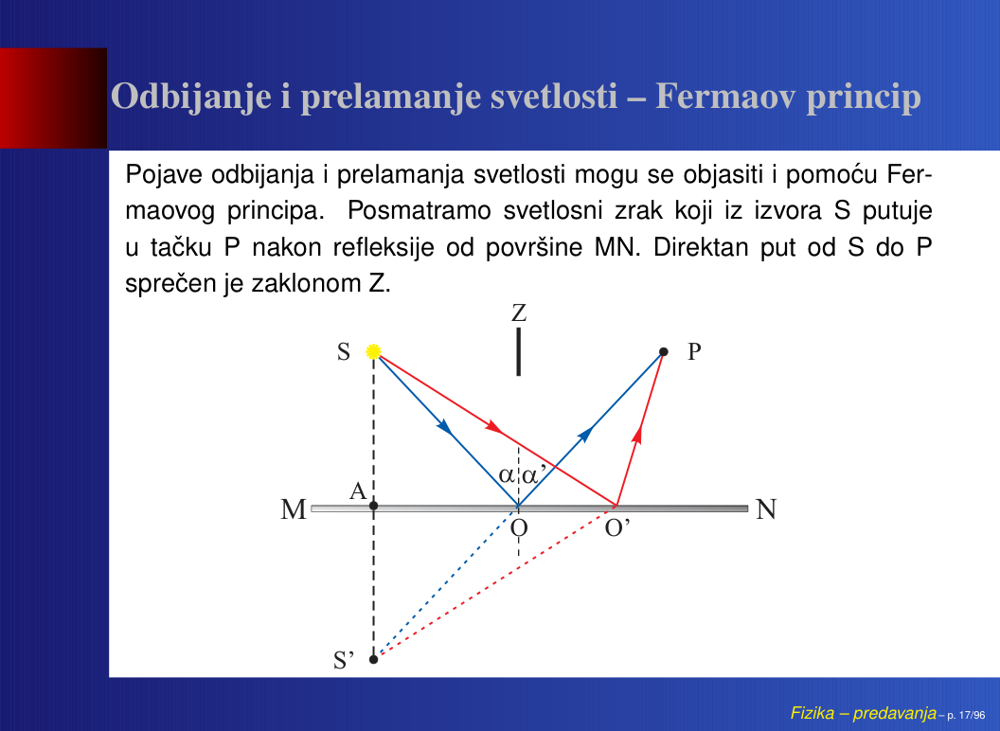
Pošto pretpostavljamo da je sredina kroz koju se svetlost prostire homogena (svuda isti indeks prelamanja), optički put je svuda srazmeran geometrijskom rastojanju. Zato se uslov „minimalan optički put" u ovom slučaju svodi prosto na uslov minimalnog geometrijskog rastojanja od $S$ do $P$.
Ključni geometrijski trik je sledeći. Posmatrajmo proizvoljnu tačku na površini $MN$ u kojoj se zrak odbija, recimo tačku $O'$. Pređeni put zraka je tada lomljena linija $S\,O'\,P$. Konstruišimo tačku $S'$ koja je ogledalski simetrična tački $S$ u odnosu na površinu $MN$ (dakle, $S'$ je tačno ispod $MN$, na istom rastojanju kao $S$ iznad). Zbog te simetrije, rastojanje od $S$ do bilo koje tačke na površini jednako je rastojanju od $S'$ do te iste tačke. Zato važi:
Podsetnik: $\overline{S\,O'}$ — dužina puta od izvora $S$ do tačke odbijanja $O'$ (m); $\overline{O'\,P}$ — dužina puta od tačke odbijanja do prijemne tačke $P$ (m); $\overline{S'\,O'}$ — dužina od ogledalske slike izvora $S'$ do tačke $O'$ (m), po konstrukciji jednaka $\overline{S\,O'}$.
Dakle, dužina pravog puta $S\,O'\,P$ jednaka je dužini izlomljene linije $S'\,O'\,P$. Sada je odgovor očigledan: najkraće rastojanje između dve fiksne tačke $S'$ i $P$ je prava linija koja ih spaja. Ta prava seče površinu $MN$ u tačno jednoj tački — označimo je sa $O$. Zrak koji se odbija baš u tački $O$ (za koju linija $S'\,O\,P$ leži na pravoj) ima najmanju moguću dužinu puta.
Iz geometrije te konstrukcije direktno sledi da je za tačku $O$ upadni ugao $\alpha$ jednak odbojnom uglu $\alpha'$. Ako tačku odbijanja pomerimo levo ili desno od $O$ (u tačku $O'$), dužina puta srazmerno raste — što znači da postoji samo jedan minimum, i to baš refleksija u tački $O$. Time je dokazan zakon odbijanja svetlosti:
Podsetnik: $\alpha$ — upadni ugao, ugao između upadnog zraka i normale na površinu (° ili rad); $\alpha'$ — odbojni ugao, ugao između odbijenog zraka i normale (° ili rad). Oba se mere u odnosu na normalu površine.
Isti princip primenjujemo i na prelamanje. Sada svetlosni zrak pada na graničnu površinu između dve optički različite sredine, sa indeksima prelamanja $n_1$ i $n_2$, pri čemu uzimamo da je $n_1 < n_2$ (prelaz iz optički ređe u optički gušću sredinu).
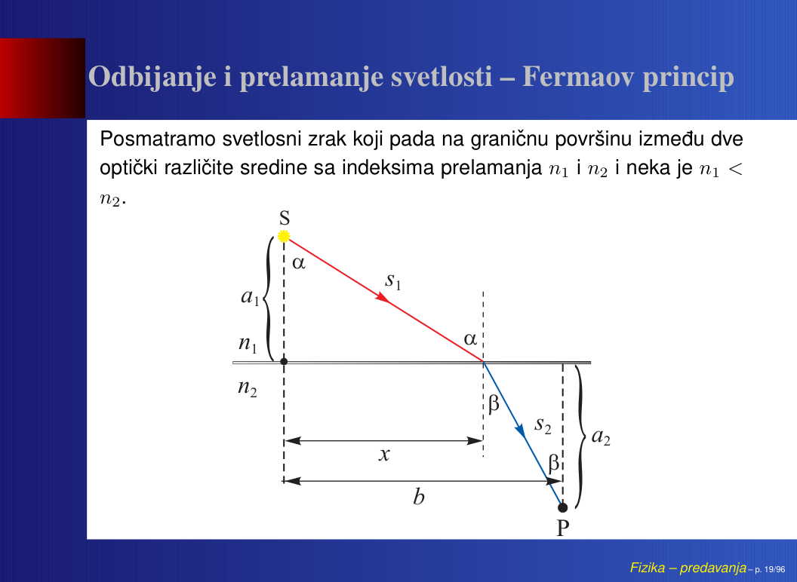
Postavimo geometriju kao na slici. Izvor $S$ je u gornjoj sredini ($n_1$), na visini $a_1$ iznad granice; prijemna tačka $P$ je u donjoj sredini ($n_2$), na dubini $a_2$ ispod granice. Vodoravno rastojanje između podnožja izvora i podnožja tačke $P$ je $b$. Zrak pogađa granicu na nekoj vodoravnoj udaljenosti $x$ od podnožja izvora; tu se lomi i nastavlja do $P$. Dužina puta u gornjoj sredini je $s_1$, a u donjoj $s_2$. Upadni ugao (u odnosu na normalu) je $\alpha$, a prelomni ugao $\beta$.
Sada moramo da pronađemo onu tačku na granici (tj. onu vrednost $x$) za koju je optički pređeni put $L$ od $S$ do $P$ minimalan. Pošto u svakoj sredini optički put je geometrijska dužina pomnožena indeksom prelamanja, ukupni optički put je:
Podsetnik: $L$ — optički pređeni put (m); $n_1,\ n_2$ — indeksi prelamanja prve i druge sredine (bezdimenzioni); $s_1,\ s_2$ — geometrijske dužine puta u prvoj i drugoj sredini (m); $a_1$ — visina izvora $S$ iznad granice (m); $a_2$ — dubina tačke $P$ ispod granice (m); $x$ — vodoravna udaljenost tačke prelamanja od podnožja izvora (m); $b$ — ukupno vodoravno rastojanje između podnožja $S$ i podnožja $P$ (m). Dužine $s_1$ i $s_2$ dobijene su Pitagorinom teoremom iz pripadajućih pravouglih trouglova.
Uslov minimuma funkcije $L(x)$ je da njen prvi izvod po $x$ bude jednak nuli. Diferenciranjem dobijamo:
Podsetnik: $\dfrac{dL}{dx}$ — izvod optičkog puta po položaju tačke prelamanja $x$ (bezdimenziono, jer je $L$ u metrima, a $x$ u metrima); izrazi $\sqrt{a_1^{\,2}+x^2}=s_1$ i $\sqrt{a_2^{\,2}+(b-x)^2}=s_2$ su upravo dužine puta u dvema sredinama. Prvi član potiče od izvoda dela puta u gornjoj sredini, drugi od dela u donjoj; suprotni znaci dolaze otud što povećanje $x$ produžava put u prvoj, a skraćuje u drugoj sredini.
Ostaje da prepoznamo geometrijsko značenje razlomaka $x/s_1$ i $(b-x)/s_2$. Pogledom na trouglove sa slike vidi se da je odnos suprotne katete (vodoravnog pomeraja) i hipotenuze (dužine zraka) upravo sinus odgovarajućeg ugla u odnosu na normalu:
Podsetnik: $\alpha$ — upadni ugao u prvoj sredini (° ili rad); $\beta$ — prelomni ugao u drugoj sredini (° ili rad); $x/s_1$ i $(b-x)/s_2$ su bezdimenzioni odnosi kateta i hipotenuza.
Uvrštavanjem ovih sinusa u uslov $\dfrac{dL}{dx}=0$ dobijamo $n_1\sin\alpha - n_2\sin\beta = 0$, odakle direktno sledi Snelijus–Dekartov zakon prelamanja:
Podsetnik: $n_1,\ n_2$ — indeksi prelamanja prve i druge sredine (bezdimenzioni); $\alpha$ — upadni ugao u prvoj sredini (° ili rad); $\beta$ — prelomni ugao u drugoj sredini (° ili rad). Zakon povezuje uglove i optičke gustine sredina pri prelasku svetlosti preko granice.
Time vidimo snagu Fermaovog principa: oba osnovna zakona geometrijske optike — i zakon odbijanja i zakon prelamanja — proizilaze iz jednog te istog zahteva da svetlost prati put najkraćeg (optičkog) vremena.
Razmotrimo posebno slučaj kada svetlost prelazi iz optički gušće u optički ređu sredinu (na primer iz vode u vazduh, dakle iz sredine sa većim $n_1$ u sredinu sa manjim $n_2$). Iz Snelijus–Dekartovog zakona $n_1\sin\alpha = n_2\sin\beta$ tada sledi da je prelomni ugao $\beta$ veći od upadnog ugla $\alpha$ — prelomljeni zrak se „udaljava" od normale.
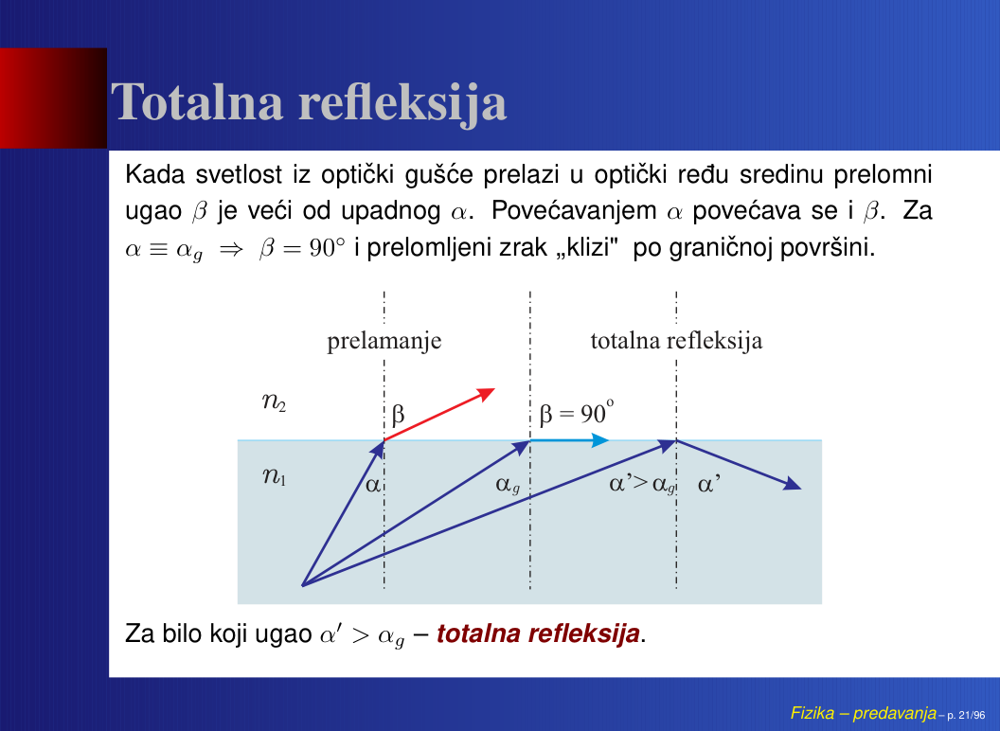
Ako sada postepeno povećavamo upadni ugao $\alpha$, raste i prelomni ugao $\beta$. Pri nekoj određenoj vrednosti upadnog ugla — koju zovemo granični ugao $\alpha_g$ — prelomni ugao dostiže $\beta = 90^\circ$. To znači da prelomljeni zrak više ne ulazi u drugu sredinu, već „klizi" tačno po graničnoj površini.
Za svaki upadni ugao veći od graničnog ($\alpha' > \alpha_g$) prelamanje uopšte nije moguće — sva svetlost se vraća nazad u gušću sredinu. Ova pojava se naziva totalna refleksija (potpuno unutrašnje odbijanje).
Granični ugao određujemo iz zakona prelamanja, uvrštavanjem upravo onog kritičnog uslova $\beta = 90^\circ$:
Podsetnik: $\alpha_g$ — granični ugao totalne refleksije (° ili rad); $n_1$ — indeks prelamanja gušće sredine iz koje svetlost dolazi (bezdimenzioni); $n_2$ — indeks prelamanja ređe sredine (bezdimenzioni); $\sin 90^\circ = 1$. Pošto je $n_2 < n_1$, odnos $n_2/n_1$ je manji od 1, pa $\alpha_g$ uvek postoji i manji je od $90^\circ$.
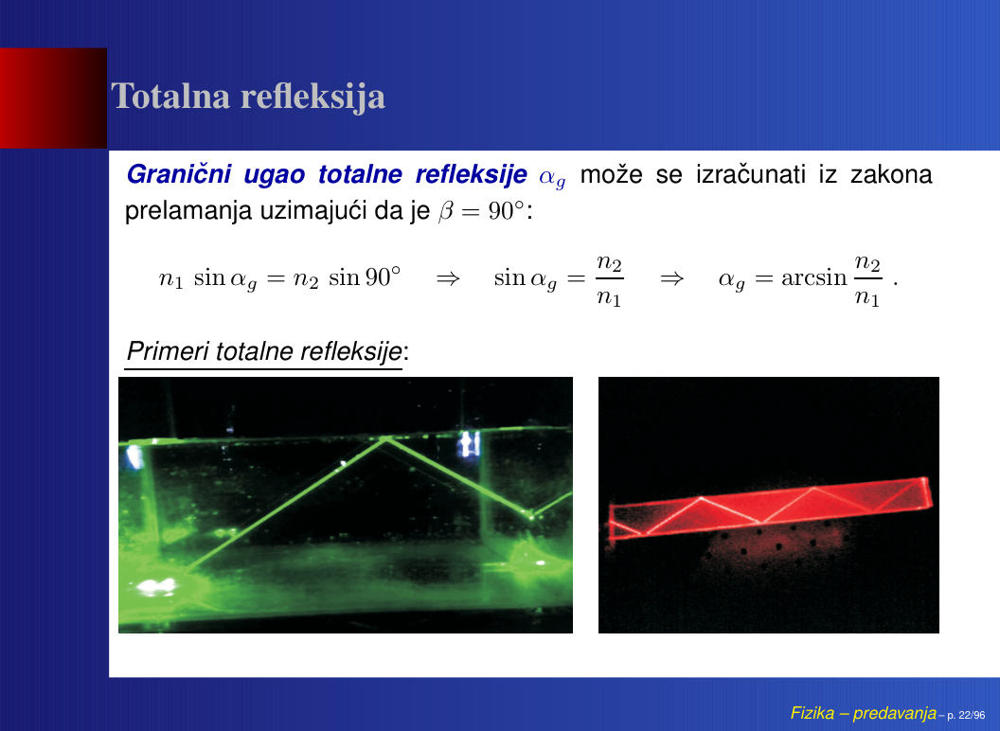
Totalna refleksija se lako uočava i u praksi: na fotografijama se vidi kako se laserski snop više puta totalno odbija unutar providnog tela, putujući „cik-cak" duž njega umesto da iz njega izađe. Upravo na ovom principu počiva vođenje svetlosti kroz providne materijale.
Posmatrajmo konkretan zadatak. Svetlosni zrak dolazi iz vazduha, čiji je indeks prelamanja $n_0 = 1$, i pada na površinu alkohola pod upadnim uglom $\alpha = 25^\circ$. Poznat nam je granični ugao totalne refleksije za ovaj par sredina, $\alpha_g = 47{,}33^\circ$. Treba odrediti prelomni ugao $\beta$.
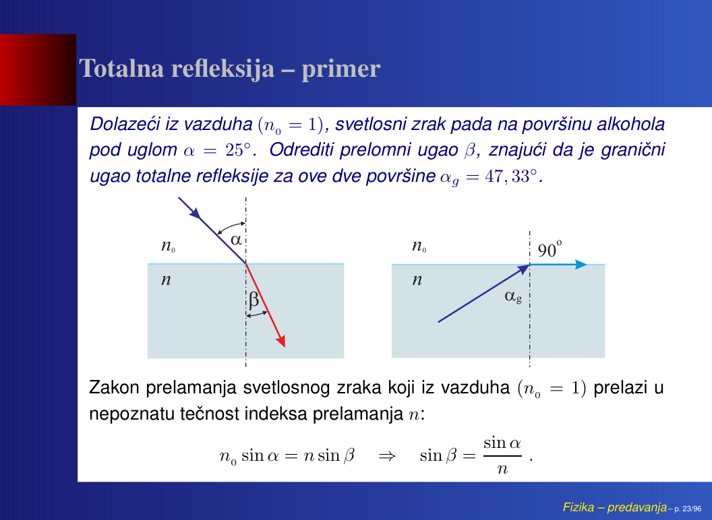
Najpre zapišemo zakon prelamanja za zrak koji iz vazduha ($n_0 = 1$) prelazi u tečnost nepoznatog indeksa prelamanja $n$:
Podsetnik: $n_0 = 1$ — indeks prelamanja vazduha (bezdimenzioni); $n$ — traženi indeks prelamanja alkohola (bezdimenzioni); $\alpha = 25^\circ$ — upadni ugao u vazduhu; $\beta$ — prelomni ugao u tečnosti.
Da bismo izračunali $\beta$, prvo nam treba indeks prelamanja $n$ tečnosti. Njega dobijamo iz poznatog graničnog ugla. Granični ugao totalne refleksije za ove dve površine zadovoljava (sada svetlost ide iz gušće tečnosti $n$ u ređi vazduh $n_0$, pri $\beta = 90^\circ$):
Podsetnik: $n$ — indeks prelamanja alkohola (bezdimenzioni); $\alpha_g = 47{,}33^\circ$ — granični ugao totalne refleksije; $n_0 = 1$, $\sin 90^\circ = 1$. Granični ugao se „čita unazad" da bi se odredio nepoznati indeks prelamanja tečnosti.
Sada kada znamo $n = 1{,}36$, vraćamo se na izraz za prelomni ugao i uvrštavamo brojeve:
Podsetnik: $\beta$ — traženi prelomni ugao u alkoholu (°); $\alpha = 25^\circ$ — upadni ugao u vazduhu; $n = 1{,}36$ — indeks prelamanja alkohola (bezdimenzioni). Rezultat $\beta = 18{,}1^\circ$ manji je od upadnog ugla, što je očekivano jer svetlost prelazi iz ređe (vazduh) u gušću sredinu (alkohol) i približava se normali.
Pojava totalne refleksije nije samo zanimljiv fizički efekat — ona ima veoma veliki praktični značaj. Podsetimo se: do totalne (potpune) refleksije dolazi kada svetlost prelazi iz optički gušće sredine u optički ređu i kada upadni ugao pređe graničnu vrednost. U tom slučaju svetlost se uopšte ne prelama, već se u potpunosti, bez gubitka, vraća nazad u gušću sredinu. Upravo zato što se cela svetlost odbija, ovaj efekat je idealan za skretanje i vođenje svetlosnih zraka. Pogledaćemo dve najvažnije primene: prizme u optičkim instrumentima i optička vlakna.
U mnogim optičkim instrumentima (dvogledima, periskopima, fotoaparatima) potrebno je promeniti pravac ili smer svetlosnog zraka. Umesto običnih ogledala, za to se koriste prizme koje rade na principu totalne refleksije. Najčešće se upotrebljavaju prizme oblika pravouglog trougla čiji su uglovi $45°$, $45°$ i $90°$.
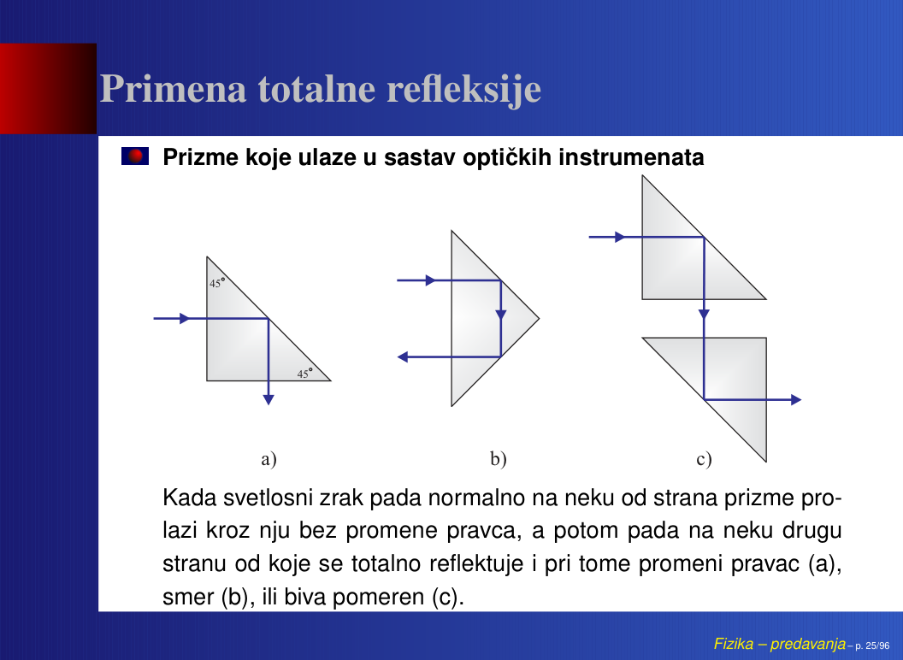
Princip rada je jednostavan. Kada svetlosni zrak pada normalno (pod pravim uglom) na jednu od strana prizme, on prolazi kroz tu površinu bez promene pravca — jer pri normalnom upadu nema prelamanja. Zatim taj zrak unutar prizme pada na neku drugu stranu pod uglom od $45°$. Pošto je granični ugao za staklo manji od $45°$, na toj površini dolazi do totalne refleksije: zrak se potpuno odbija i menja pravac kretanja. Iskorišćavanjem ovog efekta prizma može da:
Prednost prizme nad običnim ogledalom je u tome što kod totalne refleksije nema gubitka svetlosti — odbija se ceo upadni snop, dok metalna ogledala uvek apsorbuju jedan deo svetlosti.
Druga, danas izuzetno važna primena totalne refleksije jesu optička vlakna. Šezdesetih godina dvadesetog veka dvojica inženjera elektronike, Čarls Kao i Džordž Hokam, izučavali su problem transparentnosti (providnosti) stakla. Razmatrali su mogućnost da se stakla dostupna u to vreme oslobode nečistoća, pre svega čestica gvožđa koje upijaju svetlost. Njihova istraživanja bila su podstaknuta procenom da bi se sa mnogo čistijim staklima moglo napraviti providne (optičke) kablove kod kojih bi slabljenje signala bilo drastično smanjeno — sa $1000\ \text{dB/km}$ na svega $20\ \text{dB/km}$. Kao i Hokam su takođe pokazali da bi jedan jedini stakleni kabl mogao da prenosi telekomunikacioni saobraćaj ekvivalentan sa $200\,000$ istovremenih telefonskih razgovora.
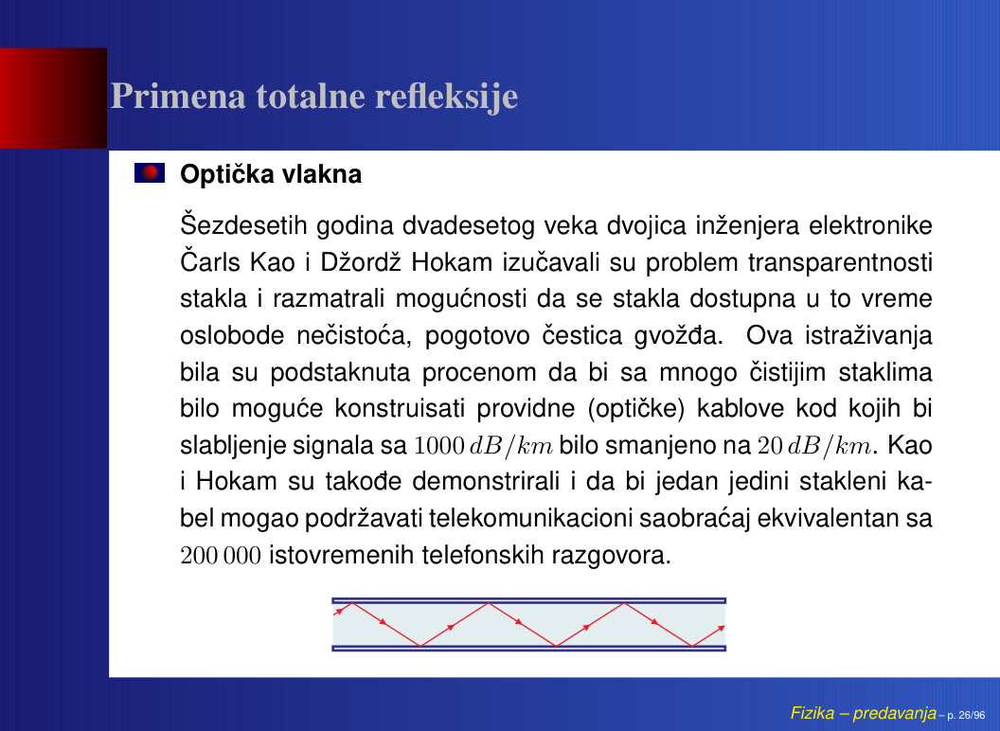
Princip rada optičkog kabla zasnovan je na višestrukoj totalnoj refleksiji. Svetlosni zrak koji uđe u vlakno pod pogodnim uglom udara u zid vlakna pod uglom većim od graničnog, pa se totalno reflektuje. Zatim udara u suprotni zid, ponovo se totalno reflektuje, i tako se zrak kroz vlakno kreće cik-cak putanjom, odbijajući se mnogo puta. Na taj način su svetlosni zraci unutar vlakna kao „zarobljeni" — ne mogu da izađu izvan kabla. Upravo to omogućava prenošenje signala na velike daljine.
Naravno, ni optičko vlakno nije savršeno. Do gubitka energije ipak dolazi, ali on nastaje uglavnom usled refleksije od krajeva vlakna i usled apsorpcije (upijanja) svetlosti u materijalu od kojeg je vlakno načinjeno. Zato je čistoća stakla, o kojoj su Kao i Hokam govorili, toliko važna.
Pored toga što je napravila pravu revoluciju u telekomunikacijama, svetlovodna optika je našla veoma važnu primenu i u medicinskoj dijagnostici. Tu se vlakna koriste za direktno posmatranje nekih unutrašnjih šupljina ljudskog tela koje su nedostupne ljudskom oku — ovaj postupak naziva se endoskopija.
Uređaj koji se u tu svrhu koristi (endoskop) konstruisan je od oko $200\,000$ elastičnih staklenih vlakana spojenih u jedan optički kabl. Svako pojedinačno vlakno endoskopa prenosi sliku jednog malog detalja posmatranog objekta. To znači da se cela slika ne dobija odjednom, već se sastavlja od mnoštva tačaka, u vidu mozaika. Iz toga sledi važan zaključak: što je veća gustina vlakana (što ih je više na istoj površini), to su tačke mozaika sitnije, pa je i slika posmatrane površine oštrija.
Totalnu refleksiju lako možemo da uočimo i oko sebe. Posmatrano iz vode, granica između vode i vazduha pri velikim upadnim uglovima ponaša se kao ogledalo — donja površina vode odozdo izgleda kao srebrnasta, ogledalska površina koja odbija prizore iz vode.
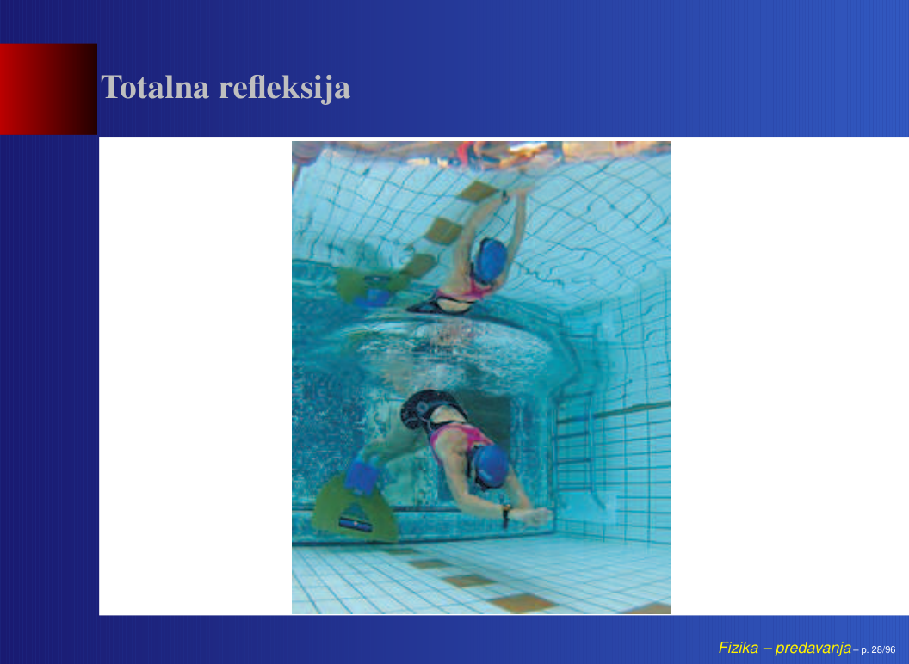
Isti efekat sreće se i u prirodi. Posmatrano ispod morske površine, ona se zbog totalne refleksije ponaša kao ogledalo i odražava prizor podmorskog sveta.
Sada prelazimo na drugu veliku oblast geometrijske optike — na sočiva, koja su osnova gotovo svih optičkih instrumenata.
Sočiva su optički instrumenti načinjeni od providnih materijala (staklo, kvarc, kristal i sl.), koji su ograničeni sa dve sferne površine ili sa jednom sfernom i jednom ravnom površinom. Drugim rečima, bar jedna strana sočiva je iskrivljena (deo lopte), a svetlost se na tim površinama prelama.
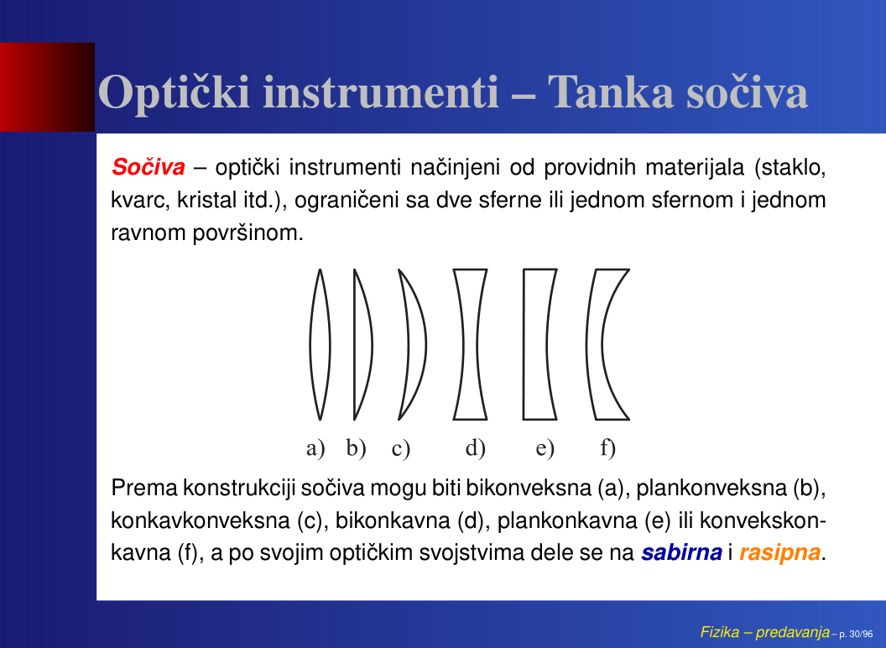
Prema konstrukciji, tj. prema tome kako su oblikovane njihove površine, sočiva mogu biti:
Po svojim optičkim svojstvima, tj. prema tome šta rade sa svetlošću, sva ova sočiva dele se u dve grupe: na sabirna i rasipna sočiva.
Razlika između ove dve vrste sočiva je u tome kako utiču na ugao pod kojim se svetlosni zraci prelamaju:
Sabirna sočiva imaju svojstvo da smanjuju prelomni ugao svetlosnih zraka koji kroz njih prolaze. Zbog toga ona skupljaju (sabiraju) zrake i usmeravaju ih ka jednoj tački.
Rasipna sočiva, naprotiv, povećavaju odgovarajući prelomni ugao zraka. Zbog toga ona razilaze (rasipaju) svetlosne zrake.
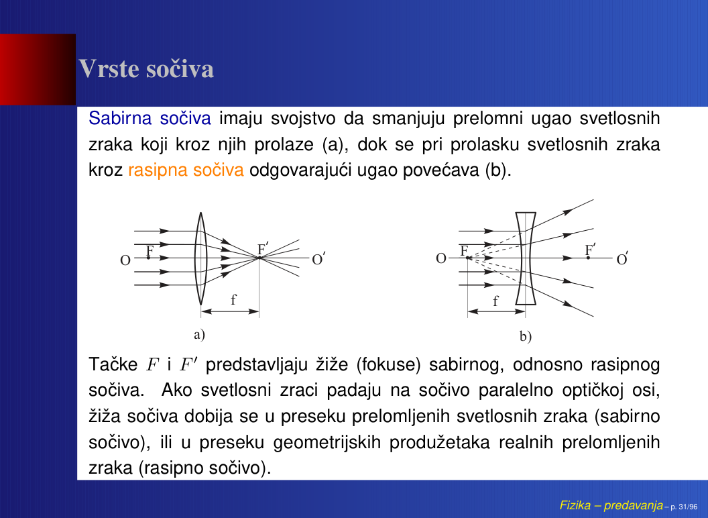
Veoma važan pojam kod sočiva jeste žiža ili fokus. Na crtežima se žiže obeležavaju tačkama $F$ i $F'$ — to su žiže (fokusi) sa jedne, odnosno sa druge strane sočiva.
Žiža se definiše pomoću zraka koji na sočivo padaju paralelno optičkoj osi (osi koja prolazi kroz sredinu sočiva). Pri tome se javlja bitna razlika:
Da bismo odredili gde nastaje i kakav je lik nekog predmeta postavljenog ispred sabirnog sočiva, koristimo se metodom karakterističnih zraka. To su tri posebna zraka čiji se put kroz sočivo lako predviđa, pa nam je dovoljno da nacrtamo bilo koja dva od njih i njihov presek nam daje položaj lika.
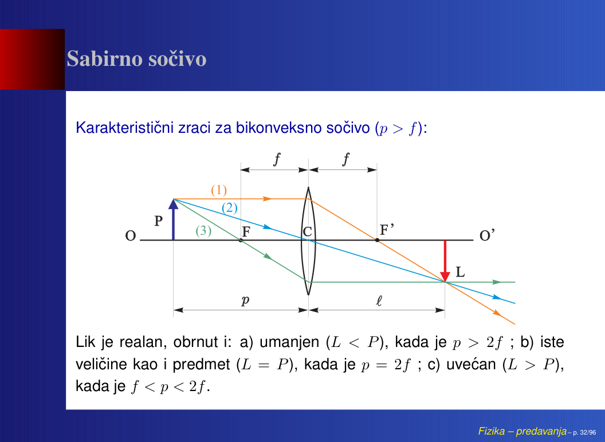
Za bikonveksno sabirno sočivo, u slučaju kada se predmet nalazi dalje od žiže (kada je $p > f$), tri karakteristična zraka su:
U preseku ovih zraka, sa druge strane sočiva, nastaje lik predmeta. Na crtežu su upotrebljene sledeće oznake: $P$ je predmet (njegova visina), $L$ je lik, $p$ je rastojanje predmeta od sočiva, $\ell$ je rastojanje lika od sočiva, a $f$ je žižna daljina (rastojanje žiže od sočiva), pri čemu se ista vrednost $f$ pojavljuje sa obe strane sočiva.
Kada je predmet udaljeniji od žiže, sabirno sočivo daje lik koji je uvek realan (stvaran, može se uhvatiti na zaklonu) i obrnut (okrenut naopako u odnosu na predmet). Ono što se menja jeste veličina lika, i to u zavisnosti od toga koliko je predmet udaljen od sočiva:
Podsetnik: $p$ — rastojanje predmeta od sočiva (m); $f$ — žižna daljina sočiva, rastojanje žiže od sočiva (m); $L$ — visina (veličina) lika (m); $P$ — visina (veličina) predmeta (m). U svim ovim slučajevima ($p > f$) lik sabirnog sočiva je realan i obrnut.
Kod sabirnog (bikonveksnog) sočiva položaj i osobine lika zavise od toga gde se nalazi predmet u odnosu na žižu. Poseban i veoma koristan slučaj nastaje kada predmet postavimo bliže sočivu nego što je sama žiža, dakle kada je udaljenost predmeta manja od žižne daljine, $p < f$. U tom režimu sabirno sočivo radi kao lupa.
Da bismo konstruisali lik, koristimo karakteristične zrake — one zrake čiji nam je put kroz sočivo unapred poznat. Sa vrha predmeta polazimo sa dva takva zraka:
Kada je predmet bliže od žiže, ova dva prelomljena zraka se sa druge strane sočiva razilaze i nikada se stvarno ne seku. Zbog toga lik ne nastaje od pravih zraka, već od njihovih produžetaka unazad (na slici predstavljenih isprekidanim linijama). Posmatrač koji gleda kroz sočivo vidi te zrake kao da dolaze iz tačke ispred sočiva, sa iste strane na kojoj je i predmet.
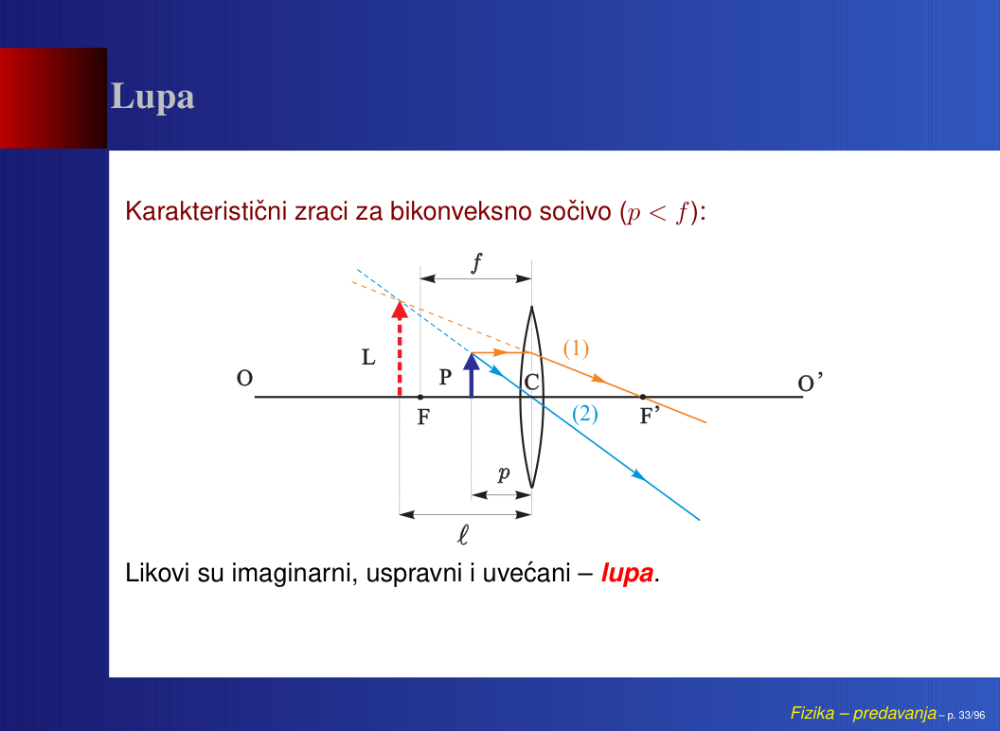
Lik koji tako nastaje je imaginaran (ne može se uhvatiti na zaklonu, jer ga grade samo produžeci zraka), uspravan (ima istu orijentaciju kao predmet) i uvećan (veći je od predmeta). Upravo zbog ovih osobina — uspravan i uvećan lik — sabirno sočivo u ovom režimu nazivamo lupom i koristimo ga za posmatranje sitnih detalja.
Rasipno sočivo (na sredini tanje nego na ivicama, tj. bikonkavno) drugačije se ponaša od sabirnog: ono ne sakuplja zrake u žižu, već ih razilazi. Za konstrukciju lika kod rasipnog sočiva koristimo tri karakteristična zraka:
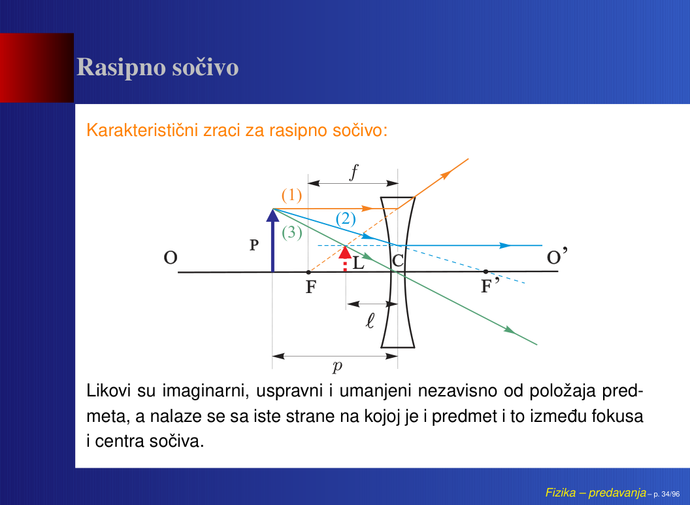
Prelomljeni zraci se kod rasipnog sočiva uvek razilaze, pa se lik ponovo dobija u preseku njihovih produžetaka. Zato su likovi kod rasipnog sočiva uvek imaginarni, uspravni i umanjeni, i to nezavisno od položaja predmeta. Lik se uvek nalazi sa iste strane sočiva na kojoj je i predmet, i to u prostoru između žiže i centra sočiva.
Osobine sočiva — pre svega njegovu žižnu daljinu — možemo izračunati ako znamo od kakvog je materijala napravljeno, u kojoj se sredini nalazi i kako su zakrivljene njegove dve površine. Te veličine povezuje jednačina sfernih sočiva:
Podsetnik:
Optička jačina $j$ je samo recipročna vrednost žižne daljine: što je sočivo "jače" (kraća žiža), to više sakuplja ili razilazi zrake. Iz formule vidimo i zašto je sredina važna — ulazi razlika $n_2 - n_1$: sočivo deluje jače ako se mnogo razlikuje od okoline po indeksu prelamanja.
Da bi formula davala ispravan rezultat, poluprečnike zakrivljenosti $R_1$ i $R_2$ moramo uzimati sa odgovarajućim predznakom prema dogovorenoj konvenciji:
Ako je jedna od površina sočiva ravna, odgovarajući poluprečnik zakrivljenosti teži beskonačnosti ($R \to \infty$), pa njegov recipročni član $1/R$ u formuli teži nuli i taj sabirak jednostavno otpada.
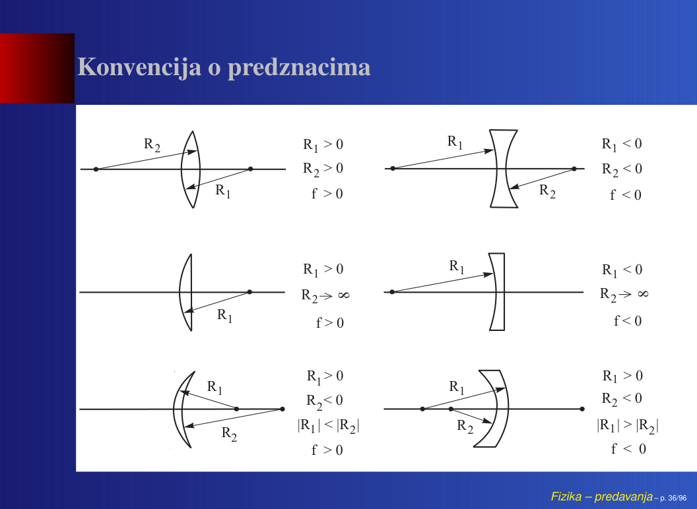
Primenom ove konvencije dobijamo i predznak žižne daljine za razne oblike sočiva. Na primer:
Pored same žižne daljine, u praksi nam treba veza između položaja predmeta i položaja njegovog lika. Žižnu daljinu sočiva $f$, udaljenost predmeta $p$ i udaljenost lika $\ell$ od sočiva povezuje osnovna jednačina sočiva:
Podsetnik:
Ova formula važi kako za sabirna, tako i za rasipna sočiva. Razlika je u tome što su kod rasipnih sočiva veličine $f$ i $\ell$ imaginarne (žiža i lik su na istoj strani kao predmet, dobijaju se iz produžetaka zraka), pa se uzimaju sa negativnim predznakom. Time jednačina rasipnog sočiva poprima oblik:
Podsetnik: oznake su iste kao gore — $f$ žižna daljina (m), $p$ udaljenost predmeta (m), $\ell$ udaljenost lika (m); negativni predznaci uz $f$ i $\ell$ izražavaju imaginarnu prirodu žiže i lika kod rasipnog sočiva.
Koliko je lik veći ili manji od predmeta opisuje linearno uvećanje sfernih sočiva. Ono se definiše kao odnos veličine lika i veličine predmeta, a istovremeno je jednako i odnosu njihovih udaljenosti od sočiva:
Podsetnik:
Druga jednakost, $\ell/p$, vrlo je praktična: ona kaže da nam za uvećanje nije potrebno meriti same dimenzije, dovoljno je znati koliko je lik udaljeniji od sočiva u poređenju sa predmetom.
Dosadašnja geometrijska optika posmatrala je svetlost kao zrake. Da bismo objasnili pojave poput interferencije, moramo se podsetiti da je svetlost elektromagnetni talas. Za elektromagnetne talase, isto kao i za mehaničke, mora važiti princip superpozicije (slaganja, sabiranja, adicije). On znači da kada se u nekoj tački prostora sretnu dva talasa, njihova ukupna pomeranja se sabiraju — pa se u nekim tačkama dva koherentna talasa pojačavaju, a u drugim poništavaju (potiru).
Da li će se dva talasa u nekoj tački pojačati ili poništiti, zavisi od njihovog međusobnog odnosa u toj tački:
Do maksimalnog pojačanja pri interferenciji dolazi kada su talasi u fazi. To znači da je njihova fazna razlika ceo umnožak punog kruga, $\Delta\varphi = 2\pi k$, a tome odgovara situacija u kojoj je putna razlika $\delta$ (razlika u dužini puta koji su dva talasa prešla do date tačke) jednaka celobrojnom umnošku talasnih dužina:
Podsetnik:
S druge strane, do maksimalnog slabljenja (poništavanja) zraka dolazi kada su talasi u protivfazi, to jest kada je fazna razlika neparan umnožak polukruga, $\Delta\varphi = (2k+1)\pi$. Tada je putna razlika jednaka neparnom umnošku polovina talasnih dužina:
Podsetnik:
Pri svemu ovome talasi moraju biti koherentni — to znači da moraju imati istu frekvenciju i vremenski nepromenljivu faznu razliku. Samo tada stabilna slika maksimuma i minimuma može da nastane; ako se fazna razlika stalno menja, pojačavanja i poništavanja se izmenjuju previše brzo i oko ih ne registruje.
Klasičan dokaz da svetlost zaista interferira dao je Tomas Jang (1801. godine). On je Sunčevu svetlost propustio kroz jedan uski otvor, a zatim je tako dobijeni zrak, pomoću zastora sa dve bliske pukotine, podelio na dva koherentna talasa. Pošto oba talasa potiču od iste polazne svetlosti, oni su koherentni i mogu da interferiraju.
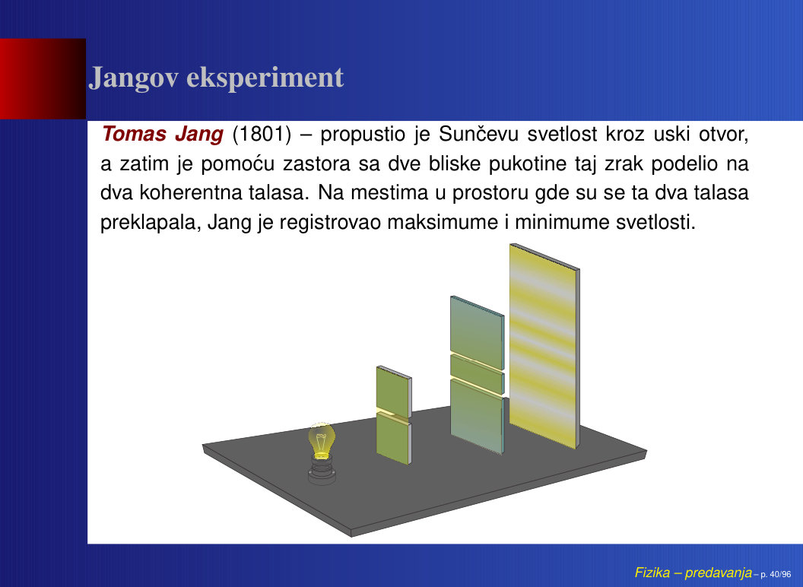
Na zaklonu, na mestima u prostoru gde su se ta dva talasa preklapala, Jang je registrovao naizmenične maksimume i minimume svetlosti — svetle pruge tamo gde se talasi pojačavaju i tamne tamo gde se poništavaju. Time je eksperimentalno potvrdio princip superpozicije svetlosti i uslove za pojačanje i slabljenje koje smo upravo izveli.
Jedan od najpoznatijih i najjednostavnijih dokaza talasne prirode svetlosti jeste Jangov (Young) eksperiment sa dva proreza. Postavka je sledeća: svetlosni izvor osvetljava jedan uzani prorez. Po Hajgensovom (Huygens) principu, taj prorez i sam postaje izvor sekundarnih talasa — iz njega svetlost izlazi kao niz koncentričnih talasnih frontova. Ti talasi zatim padaju na drugi zaklon na kome se nalaze dva bliska otvora, S1 i S2. I ova dva otvora, opet po Hajgensovom principu, postaju izvori novih talasa. Pošto oba potiču od istog primarnog talasa, oni su koherentni — imaju stalnu faznu razliku — pa se u prostoru iza pregrade ukrštaju i interferiraju. Rezultat je interferentna slika na zaklonu: niz naizmeničnih svetlih i tamnih pruga.
Posmatrajmo proizvoljnu tačku M na zaklonu. Do nje stižu dva zraka: jedan iz otvora S1 pređe put x1, a drugi iz otvora S2 pređe put x2. Pošto su otvori na razdaljini d, a zaklon je veoma daleko, ova dva zraka su praktično paralelna i sklapaju ugao α sa pravcem normale. Iz geometrije slike vidi se da je razlika njihovih puteva (oznaka δ) jednaka kateti pravouglog trougla čija je hipotenuza d:
Podsetnik: δ — razlika pređenih puteva dva zraka (m); x1, x2 — putevi zraka iz otvora S1 odnosno S2 do tačke M (m); d — rastojanje između dva otvora (m); α — ugao pod kojim se posmatra tačka M u odnosu na centralni pravac (rad ili °).
Upravo ova razlika puteva određuje da li će se talasi u tački M sresti u fazi (pa se pojačati) ili u protivfazi (pa se poništiti).
Talasi stignu u tačku M u fazi kada je njihova fazna razlika ceo umnožak punog kruga, $\Delta\varphi = 2\pi k$ (za $k = 0, \pm 1, \pm 2, \dots$). To se dešava tačno onda kada je razlika puteva jednaka celom broju talasnih dužina:
Podsetnik: δ — razlika puteva (m); d — rastojanje između otvora (m); α — ugao posmatranja (rad); k — red maksimuma, ceo broj ($k = 0, \pm 1, \pm 2, \dots$, bez jedinice); λ — talasna dužina svetlosti (m).
U tom slučaju oba talasa „guraju” u istom smeru, pa se njihove amplitude sabiraju — tačka M je maksimalno osvetljena. Nastao je interferentni maksimum (svetla pruga).
Suprotno, talasi stižu u protivfazi kada je fazna razlika neparan umnožak polovine kruga, $\Delta\varphi = (2k+1)\pi$. To odgovara situaciji da je razlika puteva jednaka neparnom broju polovina talasnih dužina:
Podsetnik: δ — razlika puteva (m); d — rastojanje između otvora (m); α — ugao posmatranja (rad); k — ceo broj ($k = 0, \pm 1, \pm 2, \dots$); λ — talasna dužina (m).
Tada jedan talas „gura” gore dok drugi „gura” dole — oni se međusobno poništavaju, pa je tačka M tamna. Nastao je interferentni minimum.
U praksi je korisno znati gde se pruge tačno nalaze na zaklonu, mereno od centra. Označimo sa y rastojanje tačke M od centralne pruge, a sa D rastojanje od proreza do zaklona. Pošto je zaklon mnogo dalje nego što su otvori bliski, važi $D \gg d$, pa je ugao α veoma mali. Za male uglove sinus i tangens su približno jednaki, a tangens je odnos suprotne i nalegle katete:
Podsetnik: α — ugao posmatranja (rad); y — rastojanje pruge od centra zaklona (m); D — rastojanje od proreza do zaklona (m).
Kada ovaj izraz ubacimo u uslov za maksimum, $d\sin\alpha = k\lambda$, dobijamo $d\,\dfrac{y}{D} = k\lambda$, odakle sledi položaj k-tog maksimuma:
Podsetnik: yk — rastojanje k-tog svetlog maksimuma od centralnog maksimuma (m); k — red maksimuma (ceo broj); λ — talasna dužina (m); D — rastojanje proreza do zaklona (m); d — rastojanje između otvora (m).
Na isti način, ubacivanjem u uslov za minimum, dobijamo položaj k-tog minimuma (tamne pruge) u odnosu na centralni maksimum:
Podsetnik: yk — rastojanje k-tog minimuma od centralnog maksimuma (m); k — ceo broj; λ — talasna dužina (m); D — rastojanje do zaklona (m); d — rastojanje između otvora (m).
Iz formule za maksimume vidi se da položaj pruga zavisi od talasne dužine svetlosti: što je λ veće, pruge su razmaknutije. Zbog toga, ako kroz proreze prođe bela svetlost, samo će centralni maksimum (za $k = 0$, gde položaj ne zavisi od λ) biti beo — jer se tu poklapaju maksimumi svih boja. Svi ostali maksimumi biće obojeni, pošto se maksimumi različitih boja javljaju na malo različitim mestima. Za velike vrednosti k pruge raznih boja se preklapaju i daju ravnomernu, neobojenu osvetljenost, pa je broj interferentnih pruga koje se mogu zapaziti u beloj svetlosti ograničen.
U Jangovom eksperimentu oba zraka su se kretala kroz vazduh, pa je fazna razlika zavisila prosto od razlike pređenih dužina. Međutim, fazna razlika svetlosnih zraka koji stupaju u interferenciju zavisi i od sredine kroz koju zraci prolaze, a ne samo od geometrijske dužine puta. Zato moramo razlikovati geometrijski i optički pređeni put.
Talasna dužina svetlosti se menja kad svetlost uđe u gušću sredinu:
Posledica toga je sledeća: ako talas pređe geometrijsko rastojanje s u sredini indeksa prelamanja n, na tom rastojanju će se „smestiti” više talasnih dužina nego u vakuumu (jer su one tu kraće). Tačnije, na tom putu staje onoliko talasnih dužina koliko bi ih sadržalo rastojanje $\delta = n\cdot s$ u vakuumu. To rastojanje zovemo optički pređeni put:
Podsetnik: δ — optički pređeni put (m); n — indeks prelamanja sredine (bez jedinice); s — geometrijski pređeni put u toj sredini (m).
Drugim rečima, optički put dobijamo tako što stvarni (geometrijski) put pomnožimo indeksom prelamanja sredine. Upravo optički put, a ne geometrijski, određuje faznu razliku između zraka. (Ova ideja je u tesnoj vezi sa Fermaovim principom.)
Postoji još jedan efekat koji utiče na fazu, a vezan je za odbijanje svetlosti. Ako se zrak na svom putu reflektuje od optički gušće sredine — sredine sa većim indeksom prelamanja — njegova faza se pri odbijanju skokovito promeni za π. Promena faze za π ekvivalentna je dodatku polovine talasne dužine na pređeni put, pa na stvarni pređeni put takvog zraka treba dodati λ/2:
Podsetnik: δ — efektivni (optički) put uz uračunat skok faze (m); s — geometrijski put (m); λ — talasna dužina (m). Član λ/2 odgovara skoku faze za π pri refleksiji od gušće sredine.
Razlog ovog skoka faze isti je kao kod stojećih talasa: na čvrstoj granici ka gušćoj sredini odbijeni talas se „okreće naopako”, što odgovara faznoj razlici od π između upadnog i odbijenog talasa.
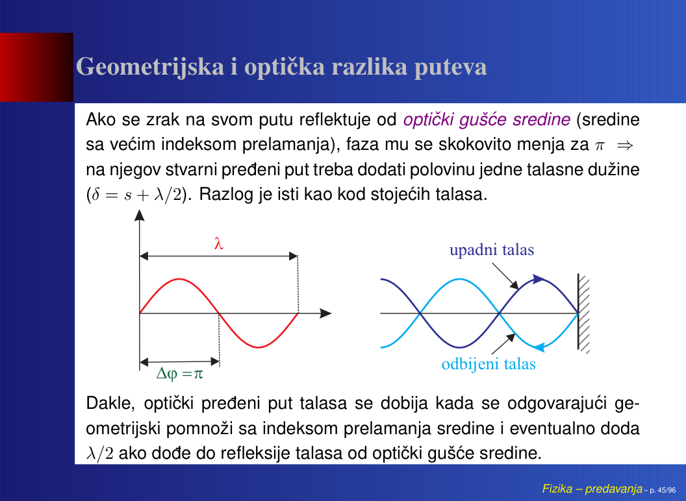
Sve zajedno, opšte pravilo za optički pređeni put glasi: geometrijski put pomnožimo indeksom prelamanja sredine, i, ako dođe do refleksije od optički gušće sredine, dodamo λ/2.
Ova dva pojma — optički put i skok faze pri refleksiji — objedinjuju se u veoma važnom primeru: interferenciji svetlosti na tankom prozirnom sloju. To je razlog zašto mehur od sapunice i tanki sloj ulja na vodi blistaju u bojama.
Posmatramo tanak prozračan planparalelni sloj debljine d i indeksa prelamanja n, na koji pod uglom α pada ravan koherentan svetlosni snop. Dolazni zrak (označimo ga Z1) na gornjoj površini sloja se delom prelama, ulazi u sloj, dolazi do donje granične površine i tu se odbija, pa nakon još jednog prelamanja na gornjoj površini izlazi nazad u sredinu iz koje je došao. Tamo se sreće i interferira sa zrakom (Z2) koji se odmah reflektovao od gornje površine sloja. Geometrija ova dva zraka prikazana je na slici, sa karakterističnim tačkama A, B, C, D i uglovima upada α i prelamanja β.
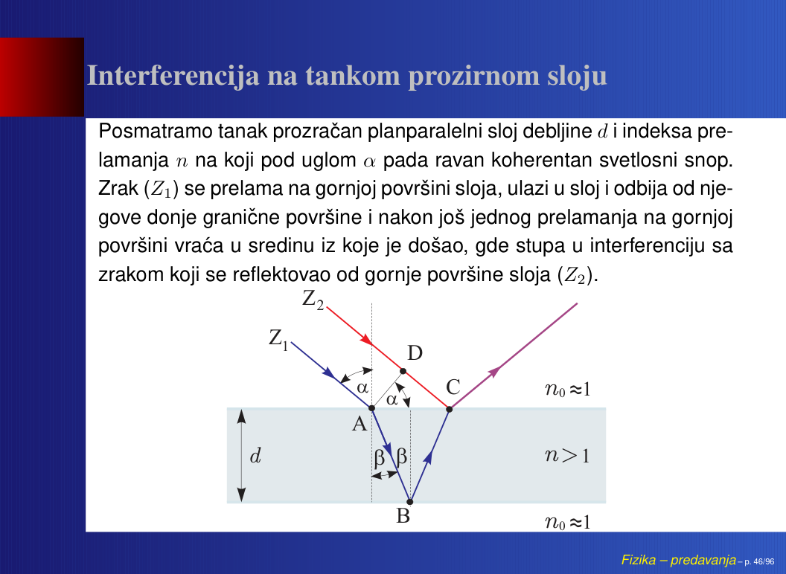
Zrak Z1 kroz sloj pređe put $\overline{AB} + \overline{BC}$, i to u sredini indeksa n, pa njegov optički put iznosi $n\cdot(\overline{AB} + \overline{BC})$. Zrak Z2 u istom vremenu, u vazduhu, pređe put $\overline{DC}$, ali se on reflektuje od gušće sredine (gornje površine sloja), pa mu treba dodati λ/2. Optička razlika puteva dva zraka je razlika ova dva optička puta:
Podsetnik: δ — optička razlika puteva (m); n — indeks prelamanja sloja; $\overline{AB}, \overline{BC}$ — delovi puta zraka Z1 kroz sloj (m); $\overline{DC}$ — put zraka Z2 u vazduhu (m); λ/2 — dodatak zbog refleksije od gušće sredine (m).
Da bismo izraz sveli na merljive veličine (debljinu d i ugao α), izrazimo duži preko geometrije trouglova. Iz pravouglog trougla u sloju, kosinus ugla prelamanja β je odnos debljine d (nalegle katete) i hipotenuze $\overline{AB}$, pa odatle nalazimo $\overline{AB}$, a iz simetrije je $\overline{BC}$ isti:
Podsetnik: β — ugao prelamanja u sloju (rad); d — debljina sloja (m); $\overline{AB}, \overline{BC}$ — putevi kroz sloj (m).
Dalje, duž $\overline{DC}$ izražavamo iz dva odnosa: tangens ugla β je $\overline{AC}/(2d)$ (jer je AC ukupno horizontalno pomeranje za dva prolaza kroz sloj debljine d), a sinus ugla α je $\overline{DC}/\overline{AC}$:
Podsetnik: β — ugao prelamanja (rad); α — ugao upada (rad); $\overline{AC}$ — horizontalno rastojanje između tačaka A i C (m); d — debljina sloja (m); $\overline{DC}$ — put zraka Z2 (m).
Iz prvog odnosa je $\overline{AC} = 2d\operatorname{tg}\beta$, što ubačeno u drugi daje:
Podsetnik: $\overline{DC}$ — put zraka Z2 (m); d — debljina sloja (m); α — ugao upada (rad); β — ugao prelamanja (rad).
Kada sve ove izraze zamenimo u optičku razliku puteva, dobijamo:
Podsetnik: δ — optička razlika puteva (m); n — indeks prelamanja sloja; d — debljina sloja (m); α — ugao upada (rad); β — ugao prelamanja (rad); λ — talasna dužina (m).
Izraz se može urediti tako da sadrži samo upadni ugao α, koji je merljiv, a ne i unutrašnji ugao β. Koristimo zakon prelamanja na gornjoj površini, koji glasi $n\sin\alpha = \sin\beta$ (pošto je indeks vazduha $n_0 \approx 1$), i osnovnu trigonometrijsku jednakost $\sin^2\beta + \cos^2\beta = 1$. Sređivanjem se sva zavisnost od β eliminiše i dobija se kompaktan oblik:
Podsetnik: δ — optička razlika puteva (m); d — debljina sloja (m); n — indeks prelamanja sloja; α — ugao upada (rad); λ — talasna dužina svetlosti (m).
Sada na ovaj izraz primenjujemo uobičajene interferentne uslove. Za maksimalno pojačanje svetlosnih zraka mora biti $\delta = k\lambda$, pa izjednačavanjem dobijamo:
Podsetnik: k — red interferencije (ceo broj); λ — talasna dužina (m); d — debljina sloja (m); n — indeks prelamanja; α — ugao upada (rad). (Uslov $\delta = k\lambda$ uz član $-\lambda/2$ daje upravo neparne polovine talasnih dužina na desnoj strani izraza za $2d\sqrt{n^2-\sin^2\alpha}$.)
Za maksimalno slabljenje (poništavanje) svetlosnih zraka mora biti $\delta = (2k+1)\dfrac{\lambda}{2}$, što daje:
Podsetnik: k — red interferencije (ceo broj, počinje od 1); λ — talasna dužina (m); d — debljina sloja (m); n — indeks prelamanja sloja; α — ugao upada (rad).
Treba primetiti da su uslovi za maksimum i minimum kod tankog sloja „zamenjeni” u odnosu na ono što bismo intuitivno očekivali — upravo zbog dodatka λ/2 koji potiče od skoka faze pri refleksiji od gušće sredine.
Ova interferencija se može zapaziti kada je debljina sloja uporediva sa talasnom dužinom svetlosti. Zato je vidimo kod mehura od sapunice, kod tankih slojeva razlivenog ulja na vodi i sličnih veoma tankih prozirnih opni. Pošto uslov za pojačanje zavisi od λ, različite boje se pojačavaju na različitim debljinama, pa takvi slojevi blistaju u bojama. Važna tehnička primena ovog efekta su antirefleksioni slojevi — tanke prevlake na optičkim površinama (npr. na sočivima) koje se biraju tako da se odbijena svetlost interferencijom poništi, čime se smanjuje neželjeno odbijanje svetlosti.
Posmatrajmo tanak prozirni sloj (na primer opnu od sapunice, tanak film ulja ili nanos prevlake) čiji je indeks prelamanja $n>1$ veći od indeksa prelamanja okolne sredine $n_0\approx 1$ (vazduha). Kada svetlosni snop padne na takav sloj, jedan deo svetlosti se odbija već od gornje granične površine, dok drugi deo prolazi u sloj, putuje kroz njega, odbija se od donje granične površine i ponovo izlazi napolje. Tako iz sloja izlaze dva snopa koja potiču od istog izvora: jedan reflektovan sa gornje, drugi sa donje površine. Pošto su nastali deobom istog talasa, oni su koherentni i mogu da interferiraju.
Razmotrimo najjednostavniji slučaj u kome svetlost pada upravno (normalno) na sloj, to jest pod upadnim uglom $\alpha = 0^\circ$. Tada oba snopa praktično putuju duž istog pravca, samo što drugi snop pređe dodatni put kroz sloj „dole i nazad", odnosno dva puta debljinu sloja $d$.
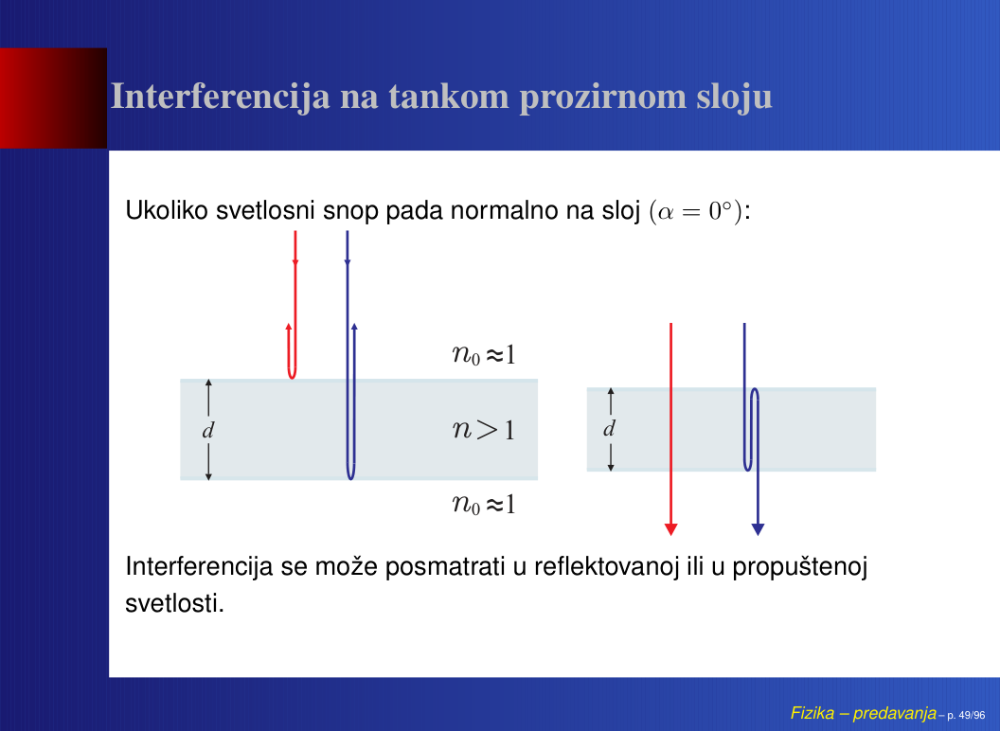
1 okružen vazduhom.">Interferencija se može posmatrati na dva načina: u reflektovanoj svetlosti (gledamo dva snopa koji se vraćaju nazad u vazduh iznad sloja) ili u propuštenoj svetlosti (gledamo snopove koji su prošli kroz sloj na donju stranu). Krajnji rezultat — da li će se za datu boju (talasnu dužinu) dobiti pojačanje ili slabljenje — zavisi od debljine sloja $d$, indeksa prelamanja $n$ i talasne dužine $\lambda$.
Da bismo videli kako se ova pravila primenjuju, razmotrimo konkretan primer. Na ravnu opnu od sapunice indeksa prelamanja $n = 1{,}35$, koja se nalazi u vazduhu, pada u pravcu normale snop polihromatske (bele) svetlosti. Pitamo se: pri kojoj će se minimalnoj debljini opne u reflektovanom snopu pojačati svetlost talasne dužine $\lambda = 620\ \text{nm}$?
Ključan pojam je optička razlika preðenih puteva (razlika hoda) $\delta$ dvaju reflektovanih zraka — onog koji se odbio od gornje i onog koji se odbio od donje granične površine opne. Geometrijski, drugi zrak pređe dodatni put $2d$ unutar sredine indeksa $n$, pa je optička dužina tog dodatnog puta $2nd$. Međutim, mora se uzeti u obzir i jedna važna pojava vezana za refleksiju.
Kada se svetlost odbija od optički gušće sredine (prelazak iz sredine manjeg u sredinu većeg indeksa prelamanja), pri refleksiji dolazi do skoka faze koji odgovara gubitku polovine talasne dužine, $\lambda/2$. Kod opne u vazduhu, gornji zrak se odbija od opne (iz vazduha $n_0\approx1$ ka opni $n=1{,}35$, dakle od gušće sredine) i trpi taj gubitak $\lambda/2$, dok se donji zrak odbija od vazduha ispod opne (od ređe sredine) i nema takav gubitak. Zato u izrazu za razliku hoda figuriše član $-\lambda/2$:
Podsetnik: $\delta$ — optička razlika hoda dva reflektovana zraka [m]; $n$ — indeks prelamanja opne (bezdimenziona veličina); $d$ — debljina opne [m]; $\lambda$ — talasna dužina svetlosti u vakuumu (vazduhu) [m]; član $\lambda/2$ — dodatna razlika hoda koja potiče od skoka faze pri refleksiji sa optički gušće sredine [m].
Da bi se reflektovana svetlost date talasne dužine maksimalno pojačala (konstruktivna interferencija), optička razlika hoda mora biti jednaka celom umnošku talasne dužine:
Podsetnik: $k$ — ceo broj (red interferencije), $k = 0, 1, 2, \ldots$ (bezdimenziono); ostale oznake kao gore.
Iz ovog uslova izrazimo debljinu $d$. Prebacimo član $\lambda/2$ na desnu stranu i grupišimo članove sa $\lambda$:
Ovde smo $k\lambda$ napisali kao $2k\,(\lambda/2)$ da bismo oba člana sveli na zajednički sadržalac $\lambda/2$ i tako izdvojili neparan broj $(2k+1)$. Deljenjem sa $2n$ dobijamo debljinu pri kojoj nastaje pojačanje:
Podsetnik: $d$ — debljina opne pri kojoj se reflektovana svetlost pojačava [m]; $(2k+1)$ — neparan ceo broj koji određuje red pojačanja; $\lambda$ — talasna dužina svetlosti [m]; $n$ — indeks prelamanja opne (bezdimenziono).
Najmanja debljina pri kojoj će se data talasna dužina maksimalno pojačati dobija se za najmanju dozvoljenu vrednost reda, to jest za $k = 0$. Tada je $(2\cdot 0 + 1) = 1$, pa formula postaje $d_{\text{min}} = \lambda/(4n)$. Uvrstimo brojne vrednosti $\lambda = 620\ \text{nm} = 6{,}2\cdot 10^{-7}\ \text{m}$ i $n = 1{,}35$:
Podsetnik: $d_{\text{min}}$ — najmanja debljina opne pri kojoj se reflektuje pojačana svetlost date boje [m]; $\lambda$ — talasna dužina ($6{,}2\cdot10^{-7}$ m); $n = 1{,}35$ — indeks prelamanja opne. Rezultat $0{,}115\ \mu\text{m}$ pokazuje da su slojevi koji daju izražene interferentne boje izuzetno tanki — reda desetinki mikrometra.
Promenimo sada uslove zadatka. Neka se ista opna od sapunice ($n = 1{,}35$) ne nalazi u vazduhu sa obe strane, već leži na gornjoj površini staklene ploče indeksa prelamanja $n_s = 1{,}8$. Sve ostale vrednosti ($\lambda = 620\ \text{nm}$, normalan upad, posmatranje u reflektovanoj svetlosti) ostaju iste. Cilj je da vidimo kako prisustvo gušće podloge menja rezultat.
Ključna razlika u odnosu na prethodni primer je u uslovima refleksije. Sada se oba zraka odbijaju od optički gušće sredine: gornji zrak se odbija prelazeći iz vazduha ($n_0\approx1$) u opnu ($n=1{,}35$), a donji zrak se odbija prelazeći iz opne ($n=1{,}35$) u staklo ($n_s = 1{,}8$). Pošto je svako od ovih refleksija sa gušće sredine, svaki od zrakova trpi gubitak $\lambda/2$. Ta dva gubitka se međusobno poništavaju u izrazu za razliku hoda:
Podsetnik: $\delta$ — optička razlika hoda [m]; $2nd$ — optička dužina dodatnog puta drugog zraka kroz opnu [m]; oba člana $\lambda/2$ potiču od refleksija sa optički gušćih sredina i poništavaju se. Zato u ovom slučaju u razlici hoda nema dodatnog člana.
Uslov za maksimalno interferentno pojačanje ponovo glasi da razlika hoda bude ceo umnožak talasne dužine:
Podsetnik: $k$ — red interferencije, ceo broj; $n$, $d$, $\lambda$ kao ranije.
Odavde izrazimo debljinu:
Podsetnik: $d$ — debljina opne pri kojoj se reflektovana svetlost pojačava [m]; $k$ — ceo broj; $\lambda$ — talasna dužina [m]; $n$ — indeks prelamanja opne (bezdimenziono). Primetimo da ovde $k$ kreće od $1$, a ne od $0$, jer za $k=0$ debljina bi bila nula (nema sloja).
Najmanja debljina pri kojoj se data talasna dužina maksimalno pojačava dobija se sada za $k = 1$:
Podsetnik: $d_{\text{min}}$ — najmanja debljina opne za pojačanje date boje [m]; $\lambda = 620\ \text{nm}$; $n = 1{,}35$. Rezultat $0{,}23\ \mu\text{m}$ je tačno dvostruko veći od onog iz prethodnog primera ($0{,}115\ \mu\text{m}$). Vidimo, dakle, da pravilna analiza skokova faze pri refleksiji bitno utiče na konačni rezultat: ista opna, ista talasna dužina, ali drugačija podloga daju drugačiju potrebnu debljinu.
Ova pojava nije samo školski primer — ona se vidi svuda oko nas. Tanki prozirni slojevi prelivaju se u bojama upravo zato što za različite talasne dužine (boje) uslov pojačanja zadovoljava različita debljina sloja. Pošto realni slojevi obično nemaju svuda istu debljinu, na različitim mestima pojačavaju se različite boje, pa nastaju karakteristični šareni prelivi.
Tipični primeri su tanak sloj ulja ili benzina razliven na površini vode i opna mehura od sapunice — i jedno i drugo prelivaju se u svim bojama spektra zahvaljujući upravo interferenciji svetlosti na tankom prozirnom sloju.
Difrakcija je pojava skretanja talasa od pravolinijskog pravca prostiranja pri nailasku na prepreku, odnosno prodiranja svetlosti u oblast geometrijske senke. Drugim rečima, kada svetlost naiđe na ivicu prepreke ili na uzak otvor, ona se ne kreće više samo pravolinijski, već delom „zalazi" iza ivice — tamo gde bi po pravilima geometrijske optike trebalo da bude potpuni mrak.
Difrakcija se može jasno zapaziti samo ako je dimenzija prepreke (ili otvora) istog reda veličine kao i talasna dužina svetlosti. Ako je otvor mnogo veći od talasne dužine, skretanje je zanemarljivo i svetlost se ponaša praktično pravolinijski; tek kada otvor postane uporediv sa $\lambda$, savijanje talasa postaje uočljivo.
Difrakcija se objašnjava pomoću Hajgensovog principa: svaka tačka talasnog fronta ponaša se kao izvor novog, sekundarnog elementarnog talasa, a novi talasni front nastaje kao omotač svih tih sekundarnih talasa. Na ivici otvora sekundarni talasi se šire i u oblast iza prepreke, pa svetlost zalazi u geometrijsku senku.
Difrakcija na jednoj pukotini pokazuje da svetlost odstupa od pravolinijskog kretanja kad naiđe na uzak otvor. Ako umesto jedne pukotine napravimo veliki broj veoma uskih, paralelnih pukotina koje su sve postavljene na jednakom međusobnom rastojanju, dobijamo uređaj koji se zove optička (difrakciona) rešetka. Ona je, dakle, sistem velikog broja bliskih paralelnih pukotina koje se ponavljaju na potpuno istom razmaku.
To pravilno ponavljanje pukotina je ono što rešetku čini moćnom: svaka pukotina propušta svetlost koja se na njoj difraktuje (savija), a zatim se talasi iz svih pukotina međusobno interferiraju. Pošto su rastojanja ista, postoje samo određeni pravci u kojima se talasi iz svih pukotina pojačavaju, i u tim pravcima nastaju veoma oštri i jaki svetli maksimumi.
Posmatrajmo dve susedne pukotine. Njihovo međusobno rastojanje obeležavamo sa $a$ i ono se naziva konstanta rešetke — to je razmak između sredina (ili odgovarajućih tačaka) dveju susednih pukotina. Kada paralelni snop svetlosti pada normalno na rešetku, talasi iz dve susedne pukotine, posmatrani pod uglom $\theta$ u odnosu na pravac upadnog snopa, prelaze različite puteve do tačke posmatranja. Iz geometrije se vidi da je ta putna razlika jednaka:
Podsetnik: $\delta$ — putna razlika talasa iz dve susedne pukotine (m); $a$ — konstanta rešetke, tj. rastojanje između susednih pukotina (m); $\theta$ — ugao pod kojim posmatramo difraktovanu svetlost u odnosu na pravac upadnog snopa (rad ili stepen).
Pojačanje (svetli maksimum) nastaje u onim pravcima u kojima je ova putna razlika jednaka celobrojnom umnošku talasne dužine — tada svi talasi iz svih pukotina stižu u fazi i sabiraju se. Odatle sledi jednačina difrakcije na optičkoj rešetki:
Podsetnik: $n$ — red difrakcije, ceo broj koji govori koliko talasnih dužina iznosi putna razlika ($-$); $\lambda$ — talasna dužina svetlosti (m); $a$ — konstanta rešetke (m); $\theta_n$ — ugao difrakcije maksimuma $n$-tog reda (rad ili stepen).
Za $n=0$ je $\theta_0 = 0$ — to je centralni (nulti) maksimum koji leži tačno na pravcu upadnog snopa. Pošto $n$ može biti i pozitivno i negativno, maksimumi se javljaju simetrično na obe strane od centralnog maksimuma (zato $n = \pm 1, \pm 2, \dots$).
U praksi difraktovanu svetlost hvatamo na zaklonu koji je postavljen na nekom rastojanju iza rešetke. Tada nas zanima ne samo ugao $\theta_n$, već i to gde na zaklonu pada maksimum $n$-tog reda. Neka je $\ell$ rastojanje od rešetke do zaklona, a $\Delta z_n$ rastojanje na zaklonu od centralnog (nultog) maksimuma do maksimuma $n$-tog reda.
Iz pravouglog trougla koji čine pravac rešetka–nulti maksimum (dužine $\ell$) i pomeraj $\Delta z_n$, sinus ugla difrakcije je:
Podsetnik: $\theta_n$ — ugao difrakcije $n$-tog reda (rad ili stepen); $\Delta z_n$ — rastojanje na zaklonu od centralnog maksimuma do maksimuma $n$-tog reda (m); $\ell$ — rastojanje od rešetke do zaklona (m).
Uvrštavanjem ovog izraza u jednačinu difrakcije dobijamo položaj maksimuma izražen preko rastojanja na zaklonu:
Podsetnik: $n$ — red difrakcije ($-$); $\lambda$ — talasna dužina (m); $a$ — konstanta rešetke (m); $\Delta z_n$ — pomeraj maksimuma na zaklonu (m); $\ell$ — rastojanje rešetka–zaklon (m).
Aproksimacija na kraju važi kada je zaklon dovoljno daleko, odnosno kada je $\ell$ mnogo veće od $\Delta z_n$. Tada je $\sqrt{\ell^2 + \Delta z_n^{\,2}} \approx \ell$, pa se izraz pojednostavljuje. Time se uglovi smatraju malim, a položaj maksimuma postaje približno proporcionalan rednom broju $n$.
Razmotrimo konkretan zadatak. Na difrakcionu rešetku koja ima 100 zareza po milimetru pada, normalno, snop svetlosti talasne dužine $\lambda = 600\ \text{nm}$. Pitanje je: na kojoj udaljenosti $\ell$ od rešetke treba postaviti zaklon da bi rastojanje između nultog i četvrtog difrakcionog maksimuma iznosilo $25\ \text{cm}$?
Prvo uočimo vezu između konstante rešetke i broja zareza po jedinici dužine. Ako rešetka ima $N$ zareza na jedinici dužine, onda je konstanta rešetke $a = \dfrac{1}{N}$ — to je dužina koja otpada na jednu pukotinu. Polazeći od jednačine difrakcije za $n=4$:
Podsetnik: $n=4$ — red difrakcije koji posmatramo ($-$); $\lambda$ — talasna dužina (m); $a = 1/N$ — konstanta rešetke (m); $N$ — broj zareza (pukotina) po jedinici dužine (m$^{-1}$); $\theta_4$ — ugao difrakcije četvrtog reda (rad ili stepen).
Sa druge strane, iz geometrije zaklona za četvrti maksimum važi:
Podsetnik: $\theta_4$ — ugao difrakcije četvrtog reda (rad ili stepen); $\Delta z_4$ — rastojanje na zaklonu od nultog do četvrtog maksimuma (m); $\ell$ — traženo rastojanje rešetka–zaklon (m).
Pošto su leve strane obe jednačine isti $\sin\theta_4$, izjednačavamo desne strane:
Podsetnik: $\Delta z_4$ — pomeraj četvrtog maksimuma (m); $\ell$ — rastojanje rešetka–zaklon (m); $\lambda$ — talasna dužina (m); $N$ — broj zareza po jedinici dužine (m$^{-1}$).
Sada ovu jednačinu rešavamo po $\ell$. Kvadriranjem i prebacivanjem članova izraz se sredi tako da $\ell$ ostane sam, što daje:
Podsetnik: $\ell$ — tražena udaljenost zaklona od rešetke (m); $\Delta z_4 = 25\ \text{cm}$ — zadato rastojanje između nultog i četvrtog maksimuma (m); $\lambda = 600\ \text{nm}$ — talasna dužina (m); $N = 100\ \text{mm}^{-1}$ — broj zareza po milimetru (m$^{-1}$).
Uvrštavanjem brojnih vrednosti dobija se da zaklon treba postaviti na udaljenost od približno $1\ \text{m}$ od rešetke.
Za istu rešetku iz prethodnog primera ($N = 100\ \text{mm}^{-1}$) i svetlost iste talasne dužine ($\lambda = 600\ \text{nm}$) pitamo se koliko se ukupno difrakcionih maksimuma može pojaviti na zaklonu. Ključ je u tome da ugao difrakcije ne može biti proizvoljno velik: pošto je $\sin\theta_n$ uvek manje ili jednako $1$, postoji najveći mogući red difrakcije.
Polazimo opet od jednačine difrakcije, sa $a = 1/N$:
Podsetnik: $n$ — red difrakcije ($-$); $\lambda$ — talasna dužina (m); $N$ — broj pukotina po jedinici dužine (m$^{-1}$); $\theta_n$ — ugao difrakcije $n$-tog reda (rad ili stepen).
Najveći red $n_{\max}$ dobijamo za graničan slučaj $\sin\theta_n = 1$ (to bi odgovaralo difrakciji pod uglom od $90^\circ$, što je fizička granica). Tada je:
Podsetnik: $n_{\max}$ — najveći red difrakcije koji se može pojaviti ($-$); $N = 10^5\ \text{m}^{-1}$ — broj pukotina po metru (m$^{-1}$); $\lambda = 6\cdot 10^{-7}\ \text{m}$ — talasna dužina (m).
Pošto $n$ mora biti ceo broj, a izračunata vrednost je $16{,}7$, najveći stvarno mogući red je $n_{\max} = 16$ (zaokružujemo naniže, jer red $17$ bi zahtevao $\sin\theta > 1$, što nije moguće).
Sada prebrojavamo sve maksimume. Postoji po $16$ maksimuma sa svake strane centralnog (za $n$ od $1$ do $16$ levo i isto toliko desno) i jedan centralni maksimum ($n=0$). Ukupan broj je zato:
Podsetnik: $m$ — ukupan broj difrakcionih maksimuma na zaklonu ($-$); činilac $2$ uračunava obe strane (levo i desno) od centra, a $+1$ je centralni maksimum nultog reda.
Difrakcija nije osobina samo laboratorijskih pukotina i rešetki — ona se javlja svuda gde svetlost prolazi pored ivice ili kroz uzan otvor. Svetlost koja prolazi kroz odškrinuta vrata savija se oko ivice i osvetljava i deo prostora koji bi, da se kreće strogo pravolinijski, ostao u senci. Zbog toga osvetljeni rub nije oštro ograničen, već postepeno prelazi u tamu.
Isti efekat vidimo i u prirodi: kada sunčevi zraci prodiru kroz krošnje drveća i maglu, oni se savijaju oko prepreka i raspršuju, pa nastaju karakteristični svetli snopovi.
Kada se složeno (polihromatsko) zračenje — svetlost sastavljena od više talasnih dužina, kao što je bela svetlost — propusti kroz prizmu, ono se razloži po talasnim dužinama. Umesto jednog snopa, na izlazu iz prizme dobijamo lepezu boja, jer se različite talasne dužine različito skreću.
Ova pojava razlaganja svetlosti po talasnim dužinama naziva se disperzija svetlosti. Ona je uslovljena interakcijom svetlosnih talasa sa elektronima u atomskim i molekulskim omotačima materijala kroz koji svetlost prolazi: pošto ta interakcija različito utiče na talase različitih talasnih dužina, svaka boja se kroz prizmu prostire malo drugačije i izlazi pod malo drugačijim uglom, pa se beli snop razdvaja u spektar.
Kada svetlost prolazi kroz neku providnu sredinu, ona se ne kreće brzinom kojom se prostire u vakuumu. Da bismo razumeli zašto, moramo pogledati šta se dešava na nivou atoma i molekula. U svakom atomu i molekulu nalaze se naelektrisane čestice (pre svega elektroni) koje nisu mirne — one vrše male oscilacije oko svojih ravnotežnih položaja, i to nekom svojom karakterističnom, sopstvenom frekvencijom koju označavamo sa $\omega_0$.
Kada svetlosni talas, krećući se brzinom $c$, naiđe na takvu sredinu, njegovo promenljivo električno polje deluje na te naelektrisane čestice i izaziva njihove prinudne oscilacije. Drugim rečima, čestice počinju da osciluju frekvencijom $\omega$ samog dolaznog (primarnog) talasa, a ne više svojom sopstvenom frekvencijom. Pošto svaka naelektrisana čestica koja oscilira i sama zrači elektromagnetne talase, oko svake čestice se javljaju takozvani sekundarni talasi.
Amplituda i faza tih sekundarnih talasa zavise od međusobnog odnosa dve frekvencije — frekvencije pobuđujućeg talasa $\omega$ i sopstvene frekvencije čestica $\omega_0$. Primarni talas i svi sekundarni talasi se zatim slažu (superponiraju) i obrazuju jedan rezultujući talas. Taj rezultujući talas ima amplitudu i fazu koje se razlikuju od prvobitnih, i upravo zbog te razlike u fazi rezultujući talas se kroz posmatranu sredinu širi nekom brzinom $v_0$ koja je različita od brzine $c$ kojom bi se prostirao u vakuumu. Ova razlika je utoliko veća ukoliko su prinudne oscilacije čestica jače — to jest, što je sredina jače „pobuđena” dolaznim talasom.
Sa promenom brzine svetlosti $v_0$ menja se i apsolutni indeks prelamanja $n$ sredine. Pošto jačina prinudnih oscilacija zavisi od frekvencije svetlosti, sledi da i indeks prelamanja zavisi od frekvencije, odnosno od talasne dužine. Tako, na primer, indeks prelamanja vode za crvenu svetlost talasne dužine $\lambda_c = 670{,}8\ \text{nm}$ iznosi $1{,}33$, dok je za ljubičastu svetlost talasne dužine $\lambda_{lj} = 404{,}7\ \text{nm}$ nešto veći — $1{,}34$. Iako je razlika mala, ona je dovoljna da različite boje skrene pod različitim uglovima.
Upravo ta činjenica — da indeks prelamanja zavisi od boje (frekvencije, odnosno talasne dužine) svetlosti — naziva se disperzija svetlosti. Disperzija, dakle, predstavlja zavisnost apsolutnog indeksa prelamanja neke sredine od talasne dužine (odnosno od frekvencije $\nu$ ili od kružne frekvencije $\omega = 2\pi\nu$) svetlosti koja se kroz nju prostire:
Podsetnik: $n$ — apsolutni indeks prelamanja sredine (bezdimenziona veličina); $c$ — brzina svetlosti u vakuumu, $c \approx 3 \cdot 10^8\ \text{m/s}$; $v_0$ — brzina prostiranja svetlosti u posmatranoj sredini ($\text{m/s}$); $\lambda$ — talasna dužina svetlosti ($\text{m}$, u optici često $\text{nm}$); $f(\lambda)$ — oznaka da je $n$ funkcija talasne dužine. Pomoćne oznake: $\nu$ — frekvencija svetlosti ($\text{Hz}$); $\omega$ — kružna (ugaona) frekvencija ($\text{rad/s}$).
Veoma je važno razumeti kakva je ta zavisnost. Zavisnost indeksa prelamanja od talasne dužine je obrnuto srazmerna: što je talasna dužina veća, indeks prelamanja je manji. To znači da se crvena boja, koja ima najveću talasnu dužinu u vidljivom delu spektra, najmanje prelama, dok se ljubičasta boja, sa najmanjom talasnom dužinom, prelama najviše. Sa frekvencijom (odnosno kružnom frekvencijom) zavisnost je, naravno, obrnuta — direktna: veća frekvencija znači veći indeks prelamanja.
Grafički se disperzija svetlosti najčešće prikazuje tako što se na ordinatu nanese kvadrat apsolutnog indeksa prelamanja $n^2$, a na apscisu kružna frekvencija $\omega$ svetlosnog talasa:
Podsetnik: $n^2$ — kvadrat apsolutnog indeksa prelamanja (bezdimenziono); $\omega$ — kružna frekvencija svetlosnog talasa ($\text{rad/s}$). Dobijena kriva naziva se disperziona kriva.
Disperziona kriva otkriva da zavisnost $n^2$ od $\omega$ nije svuda ista. Posmatrajmo karakteristične oblasti krive, obeležene tačkama A, B, C i D.
U oblastima AB i CD indeks prelamanja raste sa povećanjem frekvencije. To je „uobičajeno”, očekivano ponašanje koje smo upravo opisali (veća frekvencija — veći $n$), pa se ove oblasti nazivaju oblastima normalne disperzije.
Međutim, u uskoj oblasti BC, koja se nalazi oko sopstvene frekvencije čestica $\omega_0$, ponašanje se obrće: tu sa porastom frekvencije indeks prelamanja opada. Ova oblast naziva se oblast anomalne disperzije. Anomalna disperzija javlja se upravo u blizini sopstvene frekvencije $\omega_0$ — tamo gde su prinudne oscilacije čestica najjače (rezonantna oblast), pa je i odstupanje brzine, a time i indeksa prelamanja, najizraženije.
Jedna od najspektakularnijih manifestacija disperzije u prirodi jeste pojava duge. Bela svetlost koja dolazi od Sunca pada na površinu kišne kapljice. Pošto je svetlost složena (sastoji se od različitih boja), na njoj se istovremeno dešavaju dve pojave: prelamanje (ljubičasta boja se najviše prelama, a crvena najmanje — upravo zbog disperzije) i refleksija.
Tok svetlosti kroz kapljicu odvija se ovako: svetlost najpre dolazi do zadnje površine kapljice, tamo se reflektuje (odbija nazad) i potom ponovo prelama pri izlasku iz kapljice. Time se, u prelasku, boje konačno razdvajaju. Duga se vidi samo u određenom pravcu — pod uglom od oko $42^\circ$ u odnosu na horizont — koji je uslovljen položajem Sunca.
Ponekad se iznad glavne duge javlja još jedna, slabija — spoljašnja ili sekundarna duga. Ona nastaje kada se Sunčev zrak unutar kapljice dvostruko reflektuje (umesto jednom). Plava svetlost se pri tome prelama pod većim uglom, pa se zbog toga kod sekundarne duge raspored boja obrće u odnosu na glavnu dugu: kod sekundarne duge plava (ljubičasta) boja je sa spoljašnje strane, a crvena sa unutrašnje.
Povremeno se može desiti da se duga sastoji od kapljica vrlo malih (kraćih) talasnih dimenzija — to jest da kapljice budu izuzetno sitne. Tada se boje (plavi i zeleni deo spektra) dodatno rasejavaju na tim sitnim kapljicama. Takvo pojačano rasejanje, izazvano na primer kišom, dovodi do stvaranja vrlo retke pojave — monohromatske, odnosno bele duge, kod koje su boje gotovo neprimetne, pa duga izgleda belo.
Postoji i jedna veoma neobična pojava koja se naziva „vatrena duga”. Ona ne nastaje na kišnim kapljicama, već kada Sunčevi zraci interaguju sa ledenim kristalima u visokim oblacima. Uslovi za njen nastanak su vrlo posebni: Sunce mora biti pod uglom od najmanje $58^\circ$ iznad horizonta, a ledeni kristali u oblaku moraju biti postavljeni horizontalno, kako bi na pravi način prelomili i reflektovali svetlost. Tek tada se na nebu, na visokim oblacima, pojavljuje obojena „vatrena” pojava.
Disperzija nam omogućava i da složenu svetlost rastavimo na njene sastavne delove. Kada složena (bela ili polihromatska) svetlost padne na graničnu površinu između dve optički različite sredine, pojedini monohromatski talasi — usled toga što indeks prelamanja zavisi od talasne dužine — prelome se pod različitim uglovima. Na taj način dolazi do razlaganja složene svetlosti po frekvencijama, to jest po talasnim dužinama. Dobijena slika razloženih boja naziva se spektar.
U zavisnosti od toga kako svetlost nastaje i kroz šta prolazi, razlikujemo tri osnovne vrste spektra.
Kontinualni spektar daju usijana čvrsta, tečna ili gasovita tela velike gustine — dakle, svetlosni izvori kod kojih su sve boje (sve talasne dužine) zastupljene neprekidno. U kontinualnom spektru boje prelaze jedna u drugu bez prekida, od crvene do ljubičaste, bez tamnih ili svetlih linija.
Ako svetlost iz izvora sa kontinualnim spektrom prođe kroz oblak hladnog gasa, taj gas će apsorbovati (upiti) tačno one talasne dužine koje bi sam mogao da emituje. Posledica je apsorpcioni spektar: na neprekidnoj pozadini kontinualnog spektra pojavljuju se tamne linije na mestima onih boja koje je hladni gas progutao.
Sam zagrejani razređeni gas zrači svetlost samo na određenim, za njega karakterističnim talasnim dužinama. Tako nastaje emisioni spektar — niz pojedinačnih svetlih linija na tamnoj pozadini, gde svaka linija odgovara jednoj talasnoj dužini koju gas emituje. Emisione svetle linije nalaze se tačno na onim mestima na kojima bi se kod istog gasa pojavile tamne apsorpcione linije.
Kada neko telo zrači svetlost, ta svetlost se može razložiti na pojedinačne talasne dužine od kojih je sastavljena. Skup svih talasnih dužina koje neki izvor emituje ili koje se u nekoj svetlosti pojavljuju naziva se spektar. Izgled spektra zavisi od toga kakvo telo zrači i u kakvom se ono stanju nalazi, pa nam upravo spektar govori mnogo o samoj supstanci koja svetli.
Usijana čvrsta tela i tečnosti zrače svetlost čiji je spektar kontinualan. To znači da se on ne sastoji od pojedinačnih, izdvojenih boja, već od neprekidnog niza talasnih dužina raspoređenih u nekom širem spektralnom području — jedna boja prelazi u drugu bez prekida, kao kod duge. Nasuprot tome, usijani gasovi se ponašaju drugačije, i to zavisno od toga kako su im građene molekule. Usijani gasovi sa višeatomskim molekulima daju trakaste spektre, kod kojih se svetlost grupiše u uže ili šire trake. Spektri jednoatomskih gasova su pak linijskog tipa — sastoje se od oštrih, jasno razdvojenih svetlih linija, od kojih svaka odgovara jednoj tačno određenoj talasnoj dužini.
Prema načinu na koji nastaju, spektri se dele na emisione i apsorpcione. Razlika je u tome da li supstanca svetlost zrači ili je oduzima iz svetlosti koja kroz nju prolazi.
Emisioni spektri nastaju kao posledica zračenja (emisije) svetlosti od usijanih supstanci. To je spektar one svetlosti koju samo telo proizvodi i šalje u prostor — na primer svetlost koju emituje usijani gas.
Do apsorpcionog spektra dolazi na suprotan način. Ako bela svetlost, čiji je spektar kontinualan, prolazi kroz neku supstancu, ta supstanca će apsorbovati (upiti) neke od komponenti kontinualnog spektra. Usled toga će na mestu tih oduzetih komponenti ostati tamna linija — jer baš te talasne dužine više nema u svetlosti koja je prošla. Ovakve spektre, koji izgledaju kao kontinualni spektar sa tamnim prazninama, nazivamo apsorpcionim spektrima.
Pažljivim posmatranjem lako se može zapaziti vrlo važna pravilnost: položaj tamnih linija apsorpcionog spektra nekog elementa tačno odgovara položaju svetlih linija njegovog emisionog spektra. Drugim rečima, baš na onim mestima (talasnim dužinama) na kojima bi taj element, kada bi sam zračio, dao svetlu liniju, on će — kada svetlost prolazi kroz njega — tu istu liniju oduzeti i ostaviti tamnu prazninu.
Ovu zakonitost iskazuje Kirhofov zakon apsorpcije: atomi nekog elementa apsorbuju onu svetlost koju oni sami pri istim uslovima emituju. Element, dakle, najradije upija upravo one talasne dužine koje je sposoban i da emituje — emisija i apsorpcija su za isti atom dva lica iste pojave.
Pojava disperzije — razlaganja bele svetlosti na sastavne boje, jer se svetlost različitih talasnih dužina različito prelama — ne dešava se samo u laboratoriji, na prizmi, već je vrlo prisutna i u samoj prirodi. Posledica disperzije i prelamanja svetlosti u sitnim ledenim kristalima ili kapljicama vode su raznobojni atmosferski fenomeni, poput svetlosnih krugova (halo) oko Sunca i bogate igre boja na nebu pri izlasku i zalasku Sunca.
Da bismo razumeli polarizaciju, podsetimo se šta je svetlost. Svetlost je elektromagnetni talas, sastavljen od dva spregnuta talasa — talasa električnog i talasa magnetnog polja. Ova dva polja osciluju zajedno, sprežu se i međusobno održavaju dok se talas širi kroz prostor.
Najveći broj eksperimenata pokazuje da se kod svetlosnog talasa ravni oscilovanja neprestano menjaju. Pri tome su amplitude vektora električnog (i magnetnog) polja iste u svim pravcima — ni jedan smer oscilovanja nije izdvojen ni privilegovan. Takav talas, kod koga su svi pravci oscilovanja ravnopravni, nazivamo nepolarizovani ili prirodni talas. Ako bismo gledali u smeru kretanja takvog talasa, vektor električnog polja bi oscilovao podjednako u svim pravcima, popunjavajući ceo krug.
Svetlost ne mora uvek biti potpuno nepolarizovana. Ona može biti i delimično (eliptično) polarizovana. To znači da se ravan oscilovanja vektora električnog polja i dalje stalno menja, ali amplituda nije ista u svim pravcima — postoji izdvojeni pravac u kome je oscilovanje izraženije. Krajnji slučaj je kada talas uopšte ne menja svoju ravan oscilovanja, već vektor električnog polja osciluje samo u jednoj jedinoj ravni. Tada kažemo da je talas linearno polarizovan.
Pojave interferencije i difrakcije već su dokazale da je svetlost talas. Međutim, one ne govore ništa o tome u kom pravcu se taj talas "ljulja". Upravo to nam otkriva polarizacija: činjenica da svetlost uopšte može biti polarizovana pokazuje da su svetlosni talasi transverzalni — da osciluju upravno na pravac svog širenja. Kod podužnog (longitudinalnog) talasa pojam polarizacije ne bi imao smisla, jer kod njega postoji samo jedan pravac oscilovanja (sam pravac širenja). Zato je polarizacija direktan dokaz transverzalne prirode svetlosti.
Neki izvori elektromagnetnih talasa emituju polarizovane talase — takav je, na primer, televizijska antena. Ali svetlost emitovana iz većine svetlosnih izvora nije polarizovana. Razlog tome leži u načinu na koji ti izvori proizvode svetlost. Svetlosni izvori sastavljeni su od ogromnog broja atoma, a svaki od njih emituje svetlost prilikom povratka iz pobuđenog u osnovno stanje. Ti pojedinačni činovi emisije nisu međusobno usklađeni: oni su i vremenski i prostorno statistički raspoređeni — dešavaju se u nasumičnim trenucima i u nasumičnim ravnima. Usled toga se svetlost nastala na takav način sastoji od oscilacija u svim ravnima koje su normalne na smer širenja talasa. Pošto je nijedna ravan time posebno istaknuta, ukupna svetlost izlazi nepolarizovana.
Iako većina svetlosti oko nas nije polarizovana, postoji više načina da se od nepolarizovane svetlosti dobije polarizovana. Najvažniji su:
i drugi.
Svetlost koja nas okružuje često poseduje neku preferencijalnu (izdvojenu) ravan oscilovanja, pri čemu se stepen polarizacije i položaj te preferencijalne ravni — tj. pravac polarizacije — uglavnom razlikuju od mesta do mesta. Nažalost, takve varijacije ostaju skoro potpuno skrivene od nas, s obzirom da ljudsko oko ne može da razlikuje nepolarizovanu od polarizovane svetlosti. Zato se za nas obično kaže da smo "polarizacijski slepi" — informacija o polarizaciji do nas dolazi, ali je naše oko ne registruje.
Mnoge životinjske vrste dele ovaj hendikep sa nama, ali ne i sve. Pčele, na primer, mogu da detektuju polarizaciju svetlosti isto onako prirodno kao što mi vidimo boje. Još 1949. godine Karl fon Friš je pokazao da pčele mogu da odrede položaj Sunca na osnovu polarizacionog obrasca plavog neba i da se na taj način orijentišu, čak i kada je Sunce zaklonjeno. Od tada je pronađeno još mnogo različitih insekata i drugih životinjskih vrsta koje su sposobne da razlikuju polarizovanu od nepolarizovane svetlosti.
Teško je reći kada je sama pojava polarizacije prvi put otkrivena, ali istorijski izvori sugerišu da su za nju znali i praktično je koristili narodi sa evropskog severa. Nordijske sage pripovedaju o tome kako su Vikinzi otplovili iz Bergena na obali Norveške do Islanda, nastavili ka Grenlandu i, sva je prilika, stigli do Njufaundlenda na američkom kontinentu. Ovo izuzetno plovidbeno postignuće realizovano je u periodu od 700. do 1100. godine nove ere, dakle pre nego što je magnetni kompas iz Kine stigao u Evropu. Sage tvrde da su Vikinzi koristili nešto što su nazivali "Sunčani kamen", koji im je i po oblačnom vremenu pružao mogućnost za orijentaciju — koristeći, kako se danas smatra, polarizaciju nebeske svetlosti za navigaciju. Iako su ove priče dugo odbacivane kao izmišljotine, činjenica je da su Vikinzi bili upoznati sa islandskim kalcitom, osnovnim materijalom za izradu tzv. Nikolovih prizmi, koje se i danas koriste u optičkim uređajima za dobijanje polarizovane svetlosti.
Jedan od najjednostavnijih načina da se dobije polarizovana svetlost jeste odbijanje (refleksija) svetlosti od granične površine. Kada svetlosni zrak padne na graničnu površinu koja razdvaja dve prozračne sredine, i odbijeni i prelomljeni zrak su delimično polarizovani, a njihove ravni polarizacije su međusobno normalne (upravne jedna na drugu).
Da bismo razumeli šta se ovde dešava, posmatrajmo nepolarizovani zrak koji pada pod upadnim uglom $\alpha$ na granicu između sredine indeksa prelamanja $n_1$ i gušće sredine indeksa $n_2 > n_1$. Upadna svetlost oscilira u svim pravcima, ali se pri odbijanju i prelamanju ta dva pravca razdvajaju:
Zato su ravni polarizacije odbijenog i prelomljenog zraka međusobno upravne. Treba naglasiti da nijedan od ova dva zraka nije potpuno polarizovan — oba su tek delimično polarizovana, jer jedan pravac oscilovanja samo preovladava, a drugi nije sasvim iščezao.
Koliko će svetlost biti polarizovana nije uvek isto. Stepen polarizacije zavisi od ugla pod kojim svetlosni zrak pada na graničnu površinu. Menjajući upadni ugao, menjamo i to koliko je odbijena (odnosno prelomljena) svetlost polarizovana — postoji ugao pri kome je ta polarizacija najizraženija. Upravo zato se refleksija svetlosti može iskoristiti kao praktičan način za dobijanje polarizovane svetlosti od obične, nepolarizovane.
Kada prirodna (nepolarizovana) svetlost padne na granicu dve providne sredine, deo svetlosti se odbija, a deo prelama. Pri tome i odbijeni i prelomljeni zrak postaju delimično polarizovani. Postavlja se prirodno pitanje: postoji li takav upadni ugao pri kome je polarizacija odbijene svetlosti najbolja, odnosno potpuna? Odgovor je potvrdan.
Najbolja polarizacija odbijene svetlosti dobija se pri tačno određenom upadnom uglu koji nazivamo Brusterov ugao i obeležavamo sa $\alpha_B$. Karakteristika tog ugla je sledeća: pri njemu odbijeni i prelomljeni zrak međusobno zaklapaju ugao od $90^\circ$. Upravo kada je ovaj uslov ispunjen, odbijena svetlost je potpuno linearno polarizovana. Ova zakonitost se naziva Brusterov zakon.
Na slici nepolarizovana svetlost (prikazana zvezdicom sa strelicama u svim pravcima) pada pod uglom $\alpha_B$ iz sredine indeksa $n_1$ na sredinu indeksa $n_2$ ($n_2 > n_1$). Odbijeni zrak izlazi nazad u prvu sredinu i potpuno je polarizovan (oscilacije svetlosnog vektora prikazane su samo u jednom pravcu, tačkicama), dok se prelomljeni zrak pod uglom $\beta$ nastavlja u drugu sredinu. Ključno je da ugao između odbijenog i prelomljenog zraka iznosi $90^\circ$.
Brusterov ugao možemo odrediti primenom zakona prelamanja (Snelijusovog zakona). Za prelaz svetlosti iz prve u drugu sredinu važi:
Podsetnik: $\alpha_B$ – Brusterov (upadni) ugao [rad ili °]; $\beta$ – ugao prelamanja [rad ili °]; $n_1$ – indeks prelamanja prve sredine (iz koje svetlost dolazi) [bezdimenziona veličina]; $n_2$ – indeks prelamanja druge sredine [bezdimenziona veličina].
Sada iskoristimo geometrijski uslov koji definiše Brusterov ugao. Pošto odbijeni i prelomljeni zrak zaklapaju prav ugao, lako se iz geometrije pokaže da upadni ugao i ugao prelamanja zajedno daju prav ugao, pa je:
Podsetnik: $\beta$ – ugao prelamanja [°]; $\alpha_B$ – Brusterov ugao [°]; $90^\circ$ – posledica toga što su odbijeni i prelomljeni zrak međusobno normalni.
Zamenom ovog uslova u Snelijusov zakon koristimo trigonometrijski identitet $\sin(90^\circ - \alpha_B) = \cos \alpha_B$. Dobijamo:
Time smo dobili kompaktan oblik Brusterovog zakona, iz koga se Brusterov ugao direktno izračunava:
Podsetnik: $\alpha_B$ – Brusterov ugao [°]; $n_1$ – indeks prelamanja prve sredine [bezdimenziono]; $n_2$ – indeks prelamanja druge sredine [bezdimenziono]; $\operatorname{tg}$ – tangens, $\operatorname{arctg}$ – inverzna funkcija (arkus tangens).
Razmotrimo konkretan slučaj. Sunčevi zraci dolaze iz vazduha, čiji je indeks prelamanja $n_0 \approx 1$, i padaju na uglačanu kvarcnu stenu indeksa prelamanja $n = 1{,}54$. Pitanje je: pod kojim uglom prema horizontu treba da se nalazi Sunce da bi reflektovani (odbijeni) zraci bili maksimalno polarizovani?
Maksimalna polarizacija svetlosnih zraka pri refleksiji i prelamanju ostvaruje se upravo onda kada je ispunjen Brusterov zakon, to jest kada za odbijeni i prelomljeni zrak važi uslov:
Podsetnik: $\alpha_B$ – Brusterov upadni ugao [°]; $\beta$ – ugao prelamanja [°]; suma im je $90^\circ$ jer su odbijeni i prelomljeni zrak međusobno normalni.
Krenimo od zakona prelamanja za graničnu površinu vazduh/kvarc. Pošto svetlost ovde prelazi iz vazduha (sredina $n_0$) u kvarc (sredina $n$), Snelijusov zakon glasi:
Podsetnik: $n_0 \approx 1$ – indeks prelamanja vazduha [bezdimenziono]; $n = 1{,}54$ – indeks prelamanja kvarca [bezdimenziono]; $\alpha_B$ – upadni (Brusterov) ugao [°]; $\beta$ – ugao prelamanja [°].
Sada u ovaj izraz unosimo pomenuti uslov $\alpha_B + \beta = 90^\circ$, odakle je $\beta = 90^\circ - \alpha_B$, i koristimo da je $n_0 \approx 1$. Pošto je $\sin(90^\circ - \alpha_B) = \cos\alpha_B$, dobijamo niz jednakosti:
Deljenjem leve i desne strane sa $\cos\alpha_B$ izraz se svodi na jednostavan oblik:
Podsetnik: $\alpha_B$ – Brusterov ugao [°]; $n$ – indeks prelamanja kvarca [bezdimenziono]. (Ovo je upravo Brusterov zakon u slučaju kada svetlost dolazi iz vazduha.)
Odavde je Brusterov ugao:
Treba, međutim, obratiti pažnju na to šta tačno traži zadatak. Brusterov ugao $\alpha_B$ meri se u odnosu na normalu na površinu stene. Pitanje se odnosi na ugao Sunca prema horizontu, a horizont je upravo normalan na tu normalu. Zato je traženi ugao komplement Brusterovog ugla:
To znači da Sunce treba da se nalazi pod uglom od $33^\circ$ prema horizontu da bi odbijena svetlost bila maksimalno polarizovana.
Mnogi kristali, kao što su kvarc i kalcit, imaju zanimljivo svojstvo: kada svetlost uđe u njih, ona se pri prelamanju razdvaja na dva zraka koji imaju različite osobine. Ova pojava se naziva dvojno prelamanje (dvostruka refrakcija).
Od ta dva zraka jedan se ponaša „normalno" – sledi običan zakon prelamanja i naziva se redovan zrak. Drugi se ponaša drugačije i naziva se neredovan zrak. Oba zraka su, pri tome, polarizovana, i to u međusobno normalnim ravnima. Redovan zrak je polarizovan tako da se oscilacije vektora električnog polja vrše u ravni normalnoj na glavnu ravan kristala, dok kod neredovnog zraka svetlosni vektor osciluje u samoj glavnoj ravni.
Pri ovome treba znati šta je glavna ravan kristala: to je ravan koju čine svetlosni zrak i optička osa kristala. Optička osa je poseban pravac unutar kristala u odnosu na koji se definišu sve ove osobine.
Pojava dvojnog prelamanja tumači se specifičnim rasporedom atoma u kristalnoj rešetci. Zbog takvog uređenja, kristal ima različite optičke osobine u različitim pravcima. Kristali kod kojih osobine zavise od pravca nazivaju se anizotropni kristali.
Merenjima je utvrđeno kako se ova dva zraka ponašaju. Brzina redovnog zraka u takvim kristalima jednaka je u svim pravcima – on se širi kao da je sredina obična, izotropna. Nasuprot tome, brzina neredovnog zraka menja se u zavisnosti od pravca prostiranja kroz kristal.
Posebno je važan pravac optičke ose. U pravcu kristalografskih osa neredovan zrak ima isti indeks prelamanja kao redovan zrak – tada se ta dva zraka ne razlikuju. Međutim, u svim ostalim pravcima, koji sa pravcem optičke ose zaklapaju ugao različit od nule, neredovan zrak ispoljava osobine koje bitno zavise od tog ugla. Pravilo je sledeće: što je veće odstupanje pravca neredovnog zraka od optičke ose, utoliko je veća razlika između indeksa prelamanja redovnog i neredovnog zraka. To odstupanje, u zavisnosti od vrste kristala, može značiti i povećanje i smanjenje indeksa prelamanja neredovnog zraka u odnosu na redovan.
Vizuelno veoma zanimljiva posledica ovih osobina jeste to da predmeti koji se posmatraju kroz ovakve kristale izgledaju udvojeno – vidimo dve slike istog predmeta, jer svaki od dva zraka stvara svoju sliku.
Optički element koji služi za dobijanje polarizovane svetlosti naziva se polarizator. Ako na polarizator padne prirodna (nepolarizovana) svetlost, po izlasku iz njega ona će biti polarizovana – i to u pravcu koji nazivamo osom polarizatora.
Svetlost koja nas okružuje često poseduje preferencijalnu (povlašćenu) ravan oscilovanja, pri čemu se stepen i pravac polarizacije uglavnom razlikuju od mesta do mesta. Te varijacije, međutim, ostaju skoro potpuno sakrivene od nas, jer su ljudi „polarizacijski slepi" – naše oko ne razlikuje polarizovanu od nepolarizovane svetlosti.
Zbog toga se za posmatranje i ispitivanje polarizovane svetlosti koristi još jedan polaroid, koji se naziva analizator. Princip rada je sledeći. Kada na polarizator padne prirodna svetlost, po izlasku iz njega ona je polarizovana u pravcu ose polarizatora. Ako se zatim na put te svetlosti postavi analizator čija je osa paralelna sa osom polarizatora, svetlost će bez promene proći kroz njega.
Ako, međutim, počnemo da povećavamo ugao $\theta$ između ose polarizatora i ose analizatora, intenzitet propuštene svetlosti će se smanjivati. Kada ugao dostigne $\theta = 90^\circ$ (kada su ose međusobno normalne, „ukrštene"), iza analizatora više neće biti svetlosti. Ova zavisnost intenziteta svetlosti propuštene kroz analizator od međusobnog položaja osa polarizatora i analizatora objašnjava se pomoću Malusovog zakona.
Da bismo izveli Malusov zakon, uzmimo da pravci ose polarizatora i ose analizatora međusobno zaklapaju ugao $\theta$. Neka je $\vec{E}_0$ vektor električnog polja svetlosti po izlasku iz polarizatora – on osciluje duž ose polarizatora.
Ideja izvođenja je da vektor $\vec{E}_0$ razložimo na dve komponente: jednu komponentu $\vec{E}_A$ u pravcu ose analizatora i drugu komponentu u pravcu normalnom na osu analizatora. Kroz analizator može da prođe samo ona komponenta koja leži duž njegove ose, dakle samo $\vec{E}_A$, dok se normalna komponenta zaustavlja.
Iz geometrije razlaganja vektora (sa slike, gde je $\theta$ ugao između $\vec{E}_0$ i $\vec{E}_A$) sledi da je komponenta duž ose analizatora:
Podsetnik: $E_A$ – amplituda električnog polja koje prođe kroz analizator [V/m]; $E_0$ – amplituda električnog polja po izlasku iz polarizatora [V/m]; $\theta$ – ugao između osa polarizatora i analizatora [°].
Pošto je intenzitet svetlosti srazmeran kvadratu amplitude električnog polja ($I \propto E^2$), kvadriranjem prethodnog izraza dobijamo zavisnost intenziteta od ugla, što i jeste sadržaj Malusovog zakona:
Podsetnik: $I$ – intenzitet svetlosti iza analizatora [W/m²]; $I_0$ – intenzitet svetlosti koja iz polarizatora pada na analizator [W/m²]; $\theta$ – ugao između osa polarizatora i analizatora [°].
Ovaj rezultat potpuno objašnjava ranije opisano ponašanje. Kada su ose paralelne ($\theta = 0$), $\cos^2 0 = 1$, pa je $I = I_0$ i svetlost prolazi bez slabljenja. Kako ugao raste, $\cos^2\theta$ opada, pa opada i intenzitet. Najzad, za ukrštene ose ($\theta = 90^\circ$) je $\cos^2 90^\circ = 0$, pa je $I = 0$ – iza analizatora nema svetlosti.
Posmatrajmo šta se dešava sa intenzitetom polarizovane svetlosti kada ona prolazi kroz analizator. Polarizator propušta svetlost čiji vektor električnog polja (amplitude $E_0$) titra u tačno određenoj ravni — ravni polarizacije. Analizator, takođe, propušta samo komponentu električnog polja koja je paralelna njegovoj osi. Ako je osa analizatora zaokrenuta za ugao $\theta$ u odnosu na ravan polarizacije dolazne svetlosti, onda analizator "vidi" samo projekciju vektora $E_0$ na svoju osu.
Ta projekcija je, prema pravilu razlaganja vektora, jednaka komponenti koja "preživi" prolazak kroz analizator, pa imamo:
Podsetnik: $E_A$ — amplituda električnog polja svetlosti posle analizatora (V/m); $E_0$ — amplituda električnog polja svetlosti koja ulazi u analizator (V/m); $\theta$ — ugao između ravni polarizacije svetlosti i ose analizatora (rad ili °).
Nas, međutim, ne zanima toliko amplituda polja koliko intenzitet svetlosti, jer je to ono što opažamo kao "jačinu" svetlosti. Ključna činjenica je da je intenzitet svetlosti srazmeran kvadratu amplitude električnog polja. Kada amplitudu posle analizatora kvadriramo, dobijamo:
Podsetnik: $I$ — intenzitet svetlosti posle analizatora (W/m²); $E_A$ — amplituda polja posle analizatora (V/m); $E_0$ — amplituda dolazne polarizovane svetlosti (V/m); $\theta$ — ugao između ravni polarizacije i ose analizatora (rad ili °).
Pošto je intenzitet srazmeran kvadratu amplitude, srazmera $I \sim E_0^2$ znači da članu $E_0^2$ odgovara intenzitet svetlosti koja ulazi u analizator. Označimo taj intenzitet sa $I_0$. Tada srazmera prelazi u jednakost:
Podsetnik: $I$ — intenzitet svetlosti koju propušta analizator (W/m²); $I_0$ — intenzitet polarizovane svetlosti koja ulazi u analizator (W/m²); $\theta$ — ugao između ravni polarizacije svetlosti i ose analizatora (rad ili °).
Ova jednačina predstavlja tzv. Malusov zakon, nazvan prema francuskom armijskom inženjeru i fizičaru Luju Etjenu Malusu, koji ga je formulisao 1809. godine. Iz Malusovog zakona proizlazi da je intenzitet svetlosti koju propušta analizator proporcionalan kvadratu kosinusa ugla između ravni polarizacije svetlosti i ose analizatora. To znači da, kada su osa analizatora i ravan polarizacije paralelne ($\theta = 0$), svetlost prolazi nesmanjenog intenziteta ($I = I_0$); kada su međusobno upravne ($\theta = 90^\circ$), kosinus je nula i kroz analizator ne prolazi nimalo svetlosti ($I = 0$).
Pri prolasku kroz analizator, intenzitet svetlosti koju je propustio polarizator smanji se za 62,7 %. Treba odrediti ugao između ravni polarizacije polarizatora i analizatora.
Polazimo od Malusovog zakona:
Podsetnik: $I$ — intenzitet posle analizatora (W/m²); $I_0$ — intenzitet koji je propustio polarizator (W/m²); $\theta$ — traženi ugao (°).
Prvo prevedimo uslov zadatka u brojeve. Ako se intenzitet smanji za 62,7 %, znači da od početnog intenziteta ostaje ono što nije izgubljeno. Oduzimamo izgubljeni deo od početnog:
Podsetnik: $I$ — preostali intenzitet posle analizatora (W/m²); $I_0$ — početni intenzitet (W/m²); broj $0{,}627$ — udeo za koji se intenzitet smanjio (bez jedinice); $0{,}373$ — preostali udeo intenziteta (bez jedinice).
Sada izjednačimo ovaj preostali intenzitet sa onim što daje Malusov zakon. Time iz jednačine eliminišemo $I_0$ (skrati se na obe strane) i ostaje nam samo izraz za kosinus ugla:
Podsetnik: $\theta$ — traženi ugao između osa polarizatora i analizatora (°); $0{,}373$ — preostali udeo intenziteta (bez jedinice).
Na kraju, primenom inverzne funkcije kosinusa (arkus kosinus) dolazimo do vrednosti ugla:
Podsetnik: $\theta$ — ugao između ravni polarizacije polarizatora i analizatora (°).
Optički aktivne supstance (kvarc, vodeni rastvor šećera, nafta i slično) imaju osobinu da vrše zakretanje ravni polarizacije talasa oko pravca prostiranja. Drugim rečima, kada polarizovana svetlost prođe kroz takvu supstancu, njena ravan polarizacije izlazi zaokrenuta u odnosu na onu kojom je ušla.
Ovu pojavu je lako uočiti pomoću ukrštenih polarizatora i analizatora. Podsetimo se da su, kada su polarizator i analizator međusobno upravni ($\theta = 90^\circ$), oni potpuno zatamnjeni — svetlost ne prolazi. Ako se sada između njih umetne optički aktivan materijal, područje iza analizatora će ipak biti osvetljeno. Razlog je što je optički aktivna supstanca u međuvremenu zaokrenula ravan polarizacije, pa svetlost više nije tačno upravna na osu analizatora. Da bi svetlost ponovo iščezla, analizator se mora zakrenuti za dodatni ugao $\alpha$ — taj ugao se naziva ugao optičkog zakretanja ravni polarizacije. Upravo nam on direktno meri koliko je supstanca zaokrenula ravan polarizacije.
Ovaj ugao zavisi od vrste supstance, od dužine puta koji svetlosni zrak pređe kroz nju i od talasne dužine svetlosti, pa se pomoću njega zakretanje ravni polarizacije može precizno meriti.
Za čvrsta tela ugao zakretanja je srazmeran dužini puta kroz supstancu:
Podsetnik: $\alpha$ — ugao optičkog zakretanja ravni polarizacije (° ili rad); $K(\lambda, T)$ — specifična rotaciona sposobnost (obrtna moć) supstance, koja zavisi od talasne dužine $\lambda$ i temperature $T$ (°/m); $\ell$ — dužina puta svetlosti kroz supstancu (m).
Veličina $K(\lambda, T)$ se naziva specifična rotaciona sposobnost (obrtna moć). Ona je karakteristika same supstance i kazuje koliko ta supstanca zaokreće ravan polarizacije po jedinici dužine puta, pri datoj talasnoj dužini i temperaturi.
Kod rastvora dolazi i dodatni faktor — koncentracija rastvorene optički aktivne supstance. Što je rastvor koncentrovaniji, to ima više molekula koji zaokreću ravan polarizacije, pa je i ugao veći:
Podsetnik: $\alpha$ — ugao optičkog zakretanja (° ili rad); $K(\lambda, T)$ — specifična rotaciona sposobnost rastvora (zavisi od $\lambda$ i $T$); $c$ — koncentracija optički aktivne supstance u rastvoru (npr. g/cm³ ili mol/L); $\ell$ — dužina puta svetlosti kroz rastvor (m).
Pošto ugao zakretanja $\alpha$ direktno zavisi od koncentracije $c$, ovu pojavu možemo iskoristiti i obrnuto — da iz izmerenog ugla zakretanja izračunamo nepoznatu koncentraciju rastvora. Pomoću specijalnih uređaja koji se zovu polarimetri ili saharimetri moguće je, merenjem ugla zakretanja, odrediti koncentraciju nekog rastvora (na primer šećernog).
Tečni kristali su organski molekuli sa osobinama tečnosti i kristala istovremeno. Radi se o specifičnom agregatnom stanju materije koje predstavlja intermedijarnu (međufaznu) fazu između kristala (čvrstih tela) i amorfne tečnosti. To znači da, kao tečnost, mogu da teku i menjaju oblik, ali, kao kristal, zadržavaju uređenost svojih molekula u prostoru.
Izučavajući uticaj pojedinih supstanci na rast biljaka, austrijski botaničar Rajnicer je 1888. godine sintetisao do tada nepoznato jedinjenje sa veoma atipičnim osobinama. Izgledalo je da pri topljenju ovo jedinjenje prolazi kroz dva stadijuma: najpre se formira mutna tečnost, a pri daljem zagrevanju klasični transparentni (providni) rastop. Mutni rastop poseduje optička svojstva jednoosnog (anizotropnog) kristala — to jest, njegove optičke osobine zavise od pravca posmatranja, baš kao kod kristala. Porast temperature ukida tu anizotropiju i dovodi do obrazovanja izotropne tečnosti, kod koje su osobine iste u svim pravcima.
Logična pretpostavka je bila da se radi o mešavini dva različita jedinjenja, od kojih se jedno u rastopu nalazi u kristalnom stanju. Međutim, pošto pokušaji da se izdvoje zasebne komponente nisu dali rezultata, preovladalo je stanovište da je otkrivena potpuno nova forma materije.
Tečni kristali su optički aktivni i zakreću ravan polarizacije polarizovane svetlosti — baš kao i ostale optički aktivne supstance. Ono što ih čini posebno korisnim jeste da se njihova optička aktivnost može "uključivati i isključivati": ako se nalaze u spoljašnjem električnom polju, njihova optička aktivnost prestaje. Upravo se ova osobina tečnih kristala koristi u LCD (Liquid Crystal Display) tehnologiji, to jest u displejima sa tečnim kristalima.
Pogledajmo kako tačno radi takav uređaj. Nepolarizovana svetlost prolazi najpre kroz polarizator, a potom kroz tečni kristal i ulazi u analizator. Polarizator i analizator su međusobno ukršteni i — kada ne bi bilo tečnog kristala — svetlosni zrak bi se u njemu (u analizatoru) apsorbovao, jer ukršteni polarizator i analizator ne propuštaju svetlost.
Međutim, tečni kristal zakreće ravan polarizacije tako da svetlost ipak prolazi kroz analizator, stiže do ogledala, reflektuje se i vraća nazad. U toj reflektovanoj svetlosti takav uređaj nam izgleda svetao.
Ukoliko se primeni spoljašnje električno polje, tečni kristal gubi optičku aktivnost. Tada više nema zakretanja ravni polarizacije, pa zraci ne prolaze kroz polarizator (odnosno kroz ukršteni sistem polarizator–analizator), i gledajući u analizator vidimo tamnu podlogu. Na taj način, uključivanjem i isključivanjem električnog polja na pojedinim segmentima, upravljamo time koji delovi displeja su svetli, a koji tamni, i tako formiramo slova i brojeve na ekranu.
Polarizacija svetlosti nije samo laboratorijska pojava — sreće se i u prirodi. Karakterističan primer je svetlost neba: sunčeva svetlost koja se rasejava na molekulima u atmosferi postaje delimično polarizovana, pa je plavo nebo prirodan izvor polarizovane svetlosti.
Svetlost i toplota koje stižu sa Sunca osnovni su razlog nastanka i opstanka života na našoj planeti. Zato ne čudi što je pitanje o tome šta je svetlost jedno od onih pitanja koja su zaokupljala ljudsku maštu od samog osvita civilizacije. Iako nam se svetlost čini svakodnevnom i običnom, odgovor na pitanje o njenoj prirodi pokazao se kao jedan od najdubljih problema u istoriji fizike, a put do tog odgovora vodi kroz nekoliko velikih preokreta u načinu na koji shvatamo svet.
Holandski naučnik Kristijan Hajgens (1629–1695) prvi je dao jasnu i uticajnu predstavu o talasnoj prirodi svetlosti. Njegova ideja bila je intuitivno privlačna: svetlost se ponaša na gotovo isti način kao i talasi koji nastaju na površini vode kada u nju ubacimo neki predmet (ili više njih). Kao što kamen bačen u jezero stvara talase koji se šire u krugovima, tako se i svetlost, po Hajgensu, prostire kao talasni proces. Dakle, svetlost je talas.
Međutim, ova lepa slika nosila je sa sobom jedan ozbiljan problem.
Smisao ovog problema je sledeći. Svaki talas koji poznajemo iz svakodnevice — talas na vodi, zvuk u vazduhu, vibracija u žici — predstavlja poremećaj nečega: talasi na vodi su poremećaj vode, zvuk je poremećaj vazduha. Talas, drugim rečima, ne može da postoji sam za sebe; mora postojati supstanca koja se "njiše". Ali svetlost putuje i kroz prazan prostor — od Sunca do Zemlje, kroz vakuum kosmosa, gde nema ni vode ni vazduha. Kako onda talas može da se širi tamo gde nema ničega?
Ovaj problem je prividno rešen hipotezom o postojanju jedne posebne supstance, nazvane etar. Pretpostavljeno je da etar — iako potpuno neprimetan našim čulima — ispunjava čitavu Vasionu i da upravo on služi kao medijum kroz koji se svetlosni talasi prostiru. Mnogi naučnici prihvatili su postojanje etra, i zahvaljujući tome je talasna teorija o prirodi svetlosti dugo vremena suvereno vladala naukom.
Naporedo sa talasnom predstavom razvijala se i suprotna ideja. Isak Njutn (1643–1727) posmatrao je svetlost kao skup karakterističnih svetlosnih čestica, takozvanih korpuskula. Po toj zamisli, svetlosni snop je zapravo roj sitnih čestica koje lete kroz prostor. Ova korpuskularna teorija lepo je objašnjavala pravolinijsko prostiranje svetlosti, kao i pojavu odbijanja (refleksije): čestica koja udari u glatku površinu odbija se od nje slično kao loptica od zida.
I korpuskularna teorija imala je, međutim, svoju slabu tačku.
Drugim rečima, dok je teorija čestica dobro opisivala kako se svetlost odbija i kreće pravolinijski, ona nije mogla na zadovoljavajući način da objasni zašto se svetlost prelama (menja pravac pri prelasku iz jedne sredine u drugu) niti zašto se bela svetlost razlaže na boje (disperzija). Upravo te pojave bile su prirodno objašnjive talasnom slikom.
Iako je Njutnova predstava o prirodi svetlosti — sve do pojave teorije o etru — imala veliki broj pristalica, Hajgensova talasna teorija postepeno je preuzela primat. Razlog za to leži u dva ključna eksperimentalna i teorijska doprinosa.
Prvi: 1803. godine engleski fizičar Tomas Jang prvi je uspeo da ostvari interferenciju svetlosti, u svojim čuvenim eksperimentima sa dva proreza. Interferencija — pojava u kojoj se dva talasa pri preklapanju mestimično pojačavaju, a mestimično poništavaju — predstavlja tipično talasno ponašanje. Čestice se tako ne ponašaju, pa je ovaj eksperiment bio snažan dokaz u korist talasne prirode svetlosti.
Drugi: u seriji radova objavljenih između 1816. i 1818. godine, francuski naučnik Ogisten Žan Frenel prvi je dao zadovoljavajuće objašnjenje difrakcije svetlosti, polazeći od Hajgensove teorije i Jangovog eksperimenta. Difrakcija je pojava savijanja talasa oko prepreka i ivica — još jedna pojava karakteristična za talase.
Pošto su pojave interferencije i difrakcije — zajedno sa disperzijom (čije postojanje je primetio još Njutn!) — od davnina poznate i prepoznavane kao talasni efekti, zaključeno je da svetlost bez ikakve sumnje poseduje talasnu prirodu.
U drugoj polovini XIX veka talasna slika dobila je svoj najdublji teorijski temelj. Džejms Klark Maksvel (1831–1879) teorijski je dokazao postojanje elektromagnetnih talasa — talasa koji se brzinom svetlosti prostiru kroz vakuum. Eksperimentalnu potvrdu ove teorije izvršili su, nezavisno jedan od drugog, nemački fizičar Hajnrih Herc (1888.) i ruski fizičar Pjotr Lebedev (1900.). Na osnovu njihovih rezultata postalo je nedvosmisleno jasno da je svetlost zaista elektromagnetni talas.
Time se činilo da je priča o prirodi svetlosti definitivno zatvorena u korist talasne teorije. Ipak, baš u tom trenutku pojavili su se novi problemi.
Pred kraj XIX i početkom XX veka sprovedena su istraživanja čiji se rezultati nikako nisu mogli objasniti pretpostavkom da svetlost poseduje isključivo talasnu prirodu. U te pojave spadaju:
Nastojanja da se ovi problemi reše dovela su do potpuno novih shvatanja o prirodi svetlosti — shvatanja koja su na izvestan način predstavljala povratak na korpuskularnu teoriju.
Dvojica velikana koji se danas smatraju tvorcima kvantne mehanike — Maks Plank i Albert Ajnštajn — pretpostavili su da se svetlost kroz prostor ne prenosi kontinualno (kao neprekidan tok energije), već u elementarnim delićima, takozvanim kvantima. Ovi kvanti, međutim, nisu mehaničke čestice u klasičnom smislu (nisu sitne kuglice mase i zapremine), i nazivaju se fotonima. Foton je u potpunosti određen energijom kojom raspolaže — energija ga karakteriše.
Iz svega rečenog sledi važan zaključak: na pitanje o prirodi svetlosti nije moguće dati jednoznačan i nedvosmislen odgovor. Svetlost se u pojedinim situacijama ponaša kao skup elektromagnetnih talasa, a u drugim situacijama kao skup "svetlosnih čestica", odnosno fotona. Najispravnije je zato reći da svetlost poseduje dvojnu (dualističku) prirodu.
Iako je kroz veliki broj eksperimenata primećeno kako talasno, tako i čestično ponašanje svetlosti, dugo vremena se smatralo da se ta dva aspekta ne mogu posmatrati istovremeno — da se u jednom eksperimentu može videti samo jedno lice svetlosti. Ipak, početkom 2015. godine istraživači su po prvi put u istoriji uhvatili snimak svetlosti koja se istovremeno ponaša i kao talas i kao snop čestica.
Istraživački tim koji je izveo ovaj eksperiment predvodio je Fabricio Karbone sa Univerziteta u Lozani. Sam eksperiment teče na sledeći način:
Sa druge strane, isti eksperiment demonstrira i čestičnu prirodu svetlosti. Dok elektroni prolaze blizu stojećeg talasa, oni interaguju (sudaraju se) sa svetlosnim česticama, tj. sa fotonima. Ove interakcije utiču na brzinu elektrona — uslovljavaju da se elektroni kreću brže ili sporije. Promena brzine elektrona predstavlja manifestaciju razmene paketa energije (kvanata) između elektrona i fotona. A sama pojava ovih energijskih paketa ukazuje na to da se svetlost na nanožici ponaša kao skup čestica.
Na taj način, jedan jedini eksperiment u istom trenutku otkriva oba lica svetlosti: talasno (stojeći talas koji se može slikati) i čestično (razmena energijskih paketa između elektrona i fotona).
Svako telo neprestano razmenjuje energiju sa svojom okolinom putem elektromagnetnih talasa. Onaj deo elektromagnetnog zračenja koji telo emituje na račun promene svoje unutrašnje energije naziva se toplotno zračenje. Drugim rečima, telo deo svoje toplotne (unutrašnje) energije pretvara u zračenje koje napušta njegovu površinu.
Pri tome se dešavaju dva procesa istovremeno: telo zrači, ali i apsorbuje zračenje koje na njega pada iz okoline. Posebno je važno stanje koje nazivamo toplotna (termodinamička) ravnoteža. U tom stanju temperatura tela se ne menja, jer je energija zračenja koju telo u jedinici vremena emituje tačno jednaka energiji koju u istom vremenu apsorbuje. Razmena energije i dalje postoji, ali je njen bilans nula.
Toplotno zračenje nije jednako raspoređeno po svim talasnim dužinama. U spektru toplotnog zračenja nisu sve talasne dužine zastupljene sa istim intenzitetom — neke talasne dužine telo zrači jače, druge slabije. Slično tome, telo neke talasne dužine apsorbuje u većoj meri nego neke druge. Da bismo opisali koliko jako telo zrači i koliko jako apsorbuje na pojedinim talasnim dužinama, uvodimo dve veličine: emisionu moć i apsorpcionu moć.
Emisiona moć tela govori koliko energije telo izrači. Definiše se kao energija toplotnog zračenja koju telo emituje u jedinici vremena sa jedinice površine:
Podsetnik:
Pošto je $P/S$ snaga po jedinici površine, emisiona moć je u suštini intenzitet zračenja $I$. Njena vrednost zavisi od temperature tela, od hemijskog sastava tela, kao i od stanja njegove površine (na primer, da li je površina glatka, hrapava, tamna ili svetla).
Apsorpciona moć opisuje koliko jako telo upija zračenje koje na njega pada. To je bezdimenziona veličina (nema mernu jedinicu), jednaka odnosu energije zračenja na datoj talasnoj dužini koju telo apsorbuje i energije koja na njega ukupno pada:
Podsetnik:
Pošto telo ne može da apsorbuje više nego što na njega padne, apsorpciona moć je uvek manja ili jednaka jedinici. Najveću moguću apsorpcionu moć ima tzv. apsolutno crno telo — telo koje apsorbuje celokupno upadno zračenje, tako da je za njega
Apsolutno crno telo je fizički model tela koje idealno apsorbuje kompletno upadno elektromagnetno zračenje, bez obzira na njegovu frekvenciju i bez obzira na to pod kojim uglom pada na telo. To je, dakle, idealizacija — slično kao što su materijalna tačka, model idealnog gasa ili idealno kruto telo idealizacije koje koristimo da bismo pojednostavili opis prirode. Za razliku od većine tih drugih idealizacija, apsolutno crno telo se može relativno jednostavno napraviti, pa je ovaj model i praktično ostvarljiv.
Dovoljno je uzeti homogenu šuplju loptu čija je unutrašnjost presvučena slojem koji slabo reflektuje svetlost — nekim materijalom crne boje, na primer čađi — i na čijem se zidu nalazi mali otvor. Ako svetlosni zrak pustimo pod određenim uglom unutar lopte, on će se mnogo puta odbiti (reflektovati) od unutrašnjih zidova. Pri svakom odbijanju jedan deo energije zraka biva apsorbovan u zidu. Posle izvesnog broja takvih refleksija verovatnoća da zrak izađe napolje kroz isti otvor praktično je jednaka nuli — sva energija se „izgubi" u zidovima.
Zbog toga se sam otvor na lopti (a ne lopta) ponaša kao apsolutno crno telo: skoro ništa što kroz njega uđe ne izlazi nazad. Kada se takvo telo zagreje, kroz otvor izlazi zračenje čiju spektralnu raspodelu možemo da merimo na različitim temperaturama. Tako eksperimentalno dolazimo do spektra zračenja apsolutno crnog tela.
Eksperimentalno je ustanovljeno da je spektar toplotnog zračenja apsolutno crnog tela kontinualan — sadrži sve talasne dužine bez prekida — i da ima karakterističan oblik prikazan na sledećem grafiku.
Na grafiku je na vertikalnoj osi emisiona moć $\varepsilon_{\lambda,T}$, a na horizontalnoj osi talasna dužina $\lambda$ (u nanometrima). Svaka kriva odgovara jednoj temperaturi (na slici od 3500 K do 5500 K). Vidimo dve važne osobine svake krive:
Za bilo koju proizvoljnu temperaturu postoji, dakle, talasna dužina $\lambda_m$ koja odgovara maksimumu emisione moći. Ta talasna dužina naziva se najverovatnija talasna dužina u spektru — na njoj telo zrači najjače. Izgled spektra zavisi od temperature: sa povećanjem temperature položaj maksimuma spektra pomera se ka kraćim talasnim dužinama (na grafiku se vrh krive za višu temperaturu nalazi levo od vrha za nižu temperaturu), a istovremeno cela kriva postaje viša, jer telo na višoj temperaturi ukupno zrači jače.
Metodama statističke fizike, oslanjajući se i na eksperimentalne rezultate, izvedeni su sledeći zakoni zračenja koji kvantitativno opisuju upravo opisane osobine spektra.
Štefan–Bolcmanov zakon kaže da je ukupna emisiona moć apsolutno crnog tela srazmerna četvrtom stepenu apsolutne temperature:
Podsetnik:
Pošto temperatura ulazi na četvrti stepen, i malo povećanje temperature dovodi do velikog porasta izračene snage: ako se temperatura udvostruči, emisiona moć poraste $2^4 = 16$ puta. Ovo objašnjava zašto su na grafiku krive za više temperature toliko više.
Vinov zakon pomeranja kvantitativno opisuje već uočenu pojavu da se maksimum spektra pomera. On kaže da je najverovatnija talasna dužina u spektru toplotnog zračenja obrnuto srazmerna temperaturi:
Podsetnik:
Pošto je $\lambda_m$ obrnuto srazmerno temperaturi, što je telo toplije, to je $\lambda_m$ kraće — maksimum se pomera ka kraćim talasnim dužinama, baš kao što grafik pokazuje.
Kirhofov zakon povezuje emisionu i apsorpcionu moć bilo kog tela. On tvrdi da odnos emisione i apsorpcione moći ma kog tela ne zavisi od prirode (sastava) tog tela, već samo od temperature i talasne dužine zračenja:
Podsetnik:
Suština je da svako telo koje jako apsorbuje na nekoj talasnoj dužini mora i jako da zrači na toj istoj talasnoj dužini, jer njihov odnos uvek daje jednu te istu univerzalnu funkciju. Za apsolutno crno telo apsorpciona moć je $a_{\lambda,T} = 1$, pa iz zakona direktno sledi da je njegova emisiona moć baš jednaka toj univerzalnoj funkciji:
Zato je apsolutno crno telo posebno važno: kod njega merimo upravo univerzalnu funkciju $f(\lambda,T)$, koja onda važi za sva tela.
Spektar toplotnog zračenja — to jest kriva koja izražava zavisnost emisione moći apsolutno crnog tela od talasne dužine — dobijen je eksperimentalno. Međutim, svi pokušaji da se takav oblik krive izvede teorijski, na osnovu zakona klasične fizike, ostali su bezuspešni.
Primena Maksvelove (klasične elektromagnetne) teorije daje slaganje sa eksperimentom samo pri niskim frekvencijama, odnosno velikim talasnim dužinama. Za visoke frekvencije (kratke talasne dužine) njen rezultat postaje besmislen: prema klasičnoj teoriji, emisiona moć bi sa porastom frekvencije neograničeno rasla. Ova pojava poznata je kao ultraljubičasta katastrofa klasične teorije, odnosno Rejli–Džinsova katastrofa — po dvojici fizičara koji su, polazeći od zakona klasične elektromagnetne teorije, došli do zaključka da bi apsolutno crno telo u stanju toplotne ravnoteže trebalo da emituje zračenje beskonačno velike snage. Takav rezultat je očigledno fizički nemoguć, što je jasno pokazalo da klasična fizika tu zakazuje.
Problem je rešen 1900. godine, kada je nemački fizičar Maks Plank postavio hipotezu da se elektromagnetno zračenje ne emituje kontinualno, već u tačno određenim paketima (kvantima) energije — koje danas nazivamo fotonima. Time je napravljen prelaz sa klasične na kvantnu sliku zračenja.
Po Plankovoj hipotezi, zračenje se sastoji od pojedinačnih kvanata energije. Energija jednog fotona iznosi:
Podsetnik:
Dve forme su ekvivalentne jer su frekvencija i talasna dužina povezane relacijom $c = \lambda\,\nu$, pa je $\nu = c/\lambda$. Vidimo da fotoni veće frekvencije (kraće talasne dužine) nose veću energiju.
Ključna posledica hipoteze jeste da energija zračenja ne može imati bilo koju vrednost, već samo vrednosti koje su celobrojni umnožak energije jednog elementarnog kvanta (fotona):
Podsetnik:
Drugim rečima, energija je kvantovana: dolazi u „porcijama" i ne može biti, recimo, polovina ili trećina jednog kvanta. Upravo ovo ograničenje uklanja beskonačno rastenje pri visokim frekvencijama i otklanja ultraljubičastu katastrofu.
Polazeći od hipoteze o kvantima, Plank je izveo formulu koja izražava zavisnost spektralne emisione moći apsolutno crnog tela od talasne dužine zračenja:
Podsetnik:
Ova formula se u potpunosti slaže sa eksperimentalno dobijenom krivom na svim talasnim dužinama — i za velike i za male talasne dužine. Time je Plankova kvantna hipoteza ne samo otklonila ultraljubičastu katastrofu nego i u celosti reprodukovala izmereni oblik spektra toplotnog zračenja, čime je položen temelj kvantne fizike.
Eksperimentalno izmerena raspodela energije u spektru zračenja apsolutno crnog tela ima karakterističan oblik: kreće od nule pri kratkim talasnim dužinama, raste do izraženog maksimuma, a zatim opada ka nuli pri dugim talasnim dužinama. Na narednoj slici prikazana je upravo ta zavisnost spektralne emisione moći $\varepsilon_{\lambda,T}$ od talasne dužine $\lambda$, zajedno sa pokušajima njenog teorijskog opisa.
Tačke na grafiku predstavljaju izmerene (eksperimentalne) podatke. Klasična fizika je pokušala da ih opiše tzv. Rejli-Džinsovom formulom, koja je izvedena iz klasične teorije zračenja. Ta teorijska kriva (isprekidana linija) dobro se slaže sa merenjima samo na velikim talasnim dužinama, ali na malim talasnim dužinama potpuno omanjuje: umesto da opada ka nuli, ona neograničeno raste. To znači da bi, prema klasičnoj teoriji, telo zračilo beskonačno mnogo energije na kratkim talasnim dužinama, što je očigledno u suprotnosti sa stvarnošću.
Nasuprot tome, Plankova formula (puna linija) u potpunosti prati eksperimentalne tačke u celom opsegu talasnih dužina — i ispravno reprodukuje porast, maksimum i opadanje. Plank je do svoje formule došao uvodeći pretpostavku da se energija ne emituje neprekidno, već u tačno određenim porcijama — kvantima. Upravo zato Plankova kriva uspeva tamo gde klasična (Rejli-Džinsova) zakazuje, i ona predstavlja prvi uspešan opis spektra toplotnog zračenja.
Drugi pojav koji klasična fizika nije mogla da objasni jeste fotoelektrični efekat.
Da bi elektron mogao da napusti metal, on mora prethodno da primi izvesnu energiju. Razlog je taj što elektron u metalu nije slobodan da odleti: privlače ga pozitivni joni iz kristalne rešetke. Da bi se otrgao od te električne privlačne sile, elektron mora izvršiti određeni rad protiv nje. Najmanja energija koja je za to potrebna naziva se izlazni rad i obeležava se sa $A$.
Za ispitivanje fotoefekta koristi se električno kolo čiji je najvažniji deo vakuumska elektronska cev koja se naziva fotoćelija. Šematski prikaz aparature dat je na slici.
Fotoćelija se sastoji od dve elektrode:
Kada svetlost padne na fotokatodu, sa nje se izbijaju elektroni (fotoelektroni). Neki od njih uspevaju da stignu do anode i tako zatvaraju strujno kolo, pa ampermetar (A) registruje proticanje struje. Bitno je uočiti da se ta struja javlja čak i onda kada između elektroda u fotoćeliji ne postoji nikakva razlika potencijala, tj. kada je napon $U = 0$ — sami izbijeni elektroni imaju dovoljno energije da dospeju do anode.
Ako se fotoćelija direktno polarizuje ($U > 0$), tako što se anoda postavi na viši potencijal u odnosu na fotokatodu (prekidač P u položaju DP), između elektroda se uspostavlja električno polje koje privlači izbijene elektrone ka anodi. To polje omogućava da sve veći broj izbijenih fotoelektrona stigne do anode, pa jačina fotostruje raste sa povećanjem napona.
Ovaj porast, međutim, nije neograničen. On je ograničen vrednošću koja se naziva struja zasićenja (saturacije) i obeležava se sa $I_\text{s}$. Do zasićenja dolazi onda kada baš svi elektroni izbijeni fotoefektom stignu do anode — tada dalje povećanje napona više ne može da poveća jačinu fotostruje, jer prosto nema više elektrona koje bi privuklo. Na strujno-naponskoj karakteristici to se vidi kao vodoravni deo krive na nivou $I_\text{s}$.
Ako se, naprotiv, fotoćelija polarizuje inverzno ($U < 0$), tako što se anoda postavi na niži potencijal u odnosu na fotokatodu (prekidač P u položaju IP), uspostavljeno električno polje sada usporava elektrone izbijene s fotokatode. Pri jednoj tačno određenoj vrednosti napona $U_k$ ono ih potpuno zaustavlja, pa fotostruja pada na nulu.
Ovo se objašnjava ovako: pri naponu $U_k$ emitovani fotoelektroni potroše svoju celokupnu kinetičku energiju da bi savladali rad sile električnog polja koje vlada između fotokatode i anode. Izjednačavanjem kinetičke energije elektrona i tog rada dobija se:
Podsetnik:
Napon pri kome se struja u fotoćeliji potpuno zaustavlja, $U_k$, naziva se zakočni ili zaustavni napon.
Pažljiva ispitivanja vršena sa fotoefektom pokazala su sledeće zakonitosti:
Navedene zakonitosti nisu mogle biti objašnjene klasičnom predstavom o svetlosti kao elektromagnetnom talasu. Prema toj predstavi, elektron u metalu osciluje pod dejstvom elektromagnetnog polja svetlosnog talasa; ako bi amplituda tog oscilovanja bila dovoljno velika, elektron bi se otrgao od kristalne rešetke i napustio metal. Iz takve slike sledili bi sledeći zaključci — koji su u suprotnosti sa onim što je izmereno:
Problem neslaganja eksperimentalnih rezultata sa teorijom kod fotoelektričnog efekta razrešio je Albert Ajnštajn (1905). On je prihvatio i proširio Plankovu hipotezu, tvrdnjom da se svetlost ne samo emituje, nego se i prenosi i apsorbuje u kvantima energije — fotonima.
Po Ajnštajnu, fotoefekat je zapravo neelastični sudar između dve čestice — slobodnog elektrona u metalu i fotona. Pri tom sudaru foton predaje elektronu celokupnu svoju energiju. Ta energija se dalje raspoređuje na tri dela: jedan deo se troši na izlazni rad (otrgnuće elektrona iz metala), jedan deo može biti predat kristalnoj rešetki, a preostali deo ostaje elektronu u vidu njegove kinetičke energije. Energetski bilans tog sudara daje:
odnosno, pošto je energija fotona $h\nu = \dfrac{hc}{\lambda}$, a kinetička energija $E_{kin} = \tfrac{1}{2} m_e v^2$:
Podsetnik:
Ajnštajnova teorija objašnjava sve eksperimentalno uočene činjenice:
Granični slučaj nastupa kada se celokupna energija fotona potroši baš na izlazni rad, tako da elektronu ne preostaje kinetička energija ($E_{kin} = 0$):
Podsetnik:
U suprotnom slučaju, kada je energija fotona manja od izlaznog rada ($h\nu < A$), fotoefekta neće biti — koliko god intenzitet svetlosti bio velik. Frekvencija $\nu_g$ naziva se granična frekvencija, a njoj odgovarajuća talasna dužina $\lambda_g$ naziva se crvena granica fotoefekta. Tako Ajnštajnova teorija prirodno objašnjava i postojanje granične frekvencije i trenutnost pojave: pošto je u pitanju sudar pojedinačnog fotona sa pojedinačnim elektronom, izbijanje se dešava odmah, bez čekanja da se energija „nakupi“.
Fotoelektrični efekat pokazao je da svetlost može da preda celokupnu energiju jednog fotona elektronu. Postoji, međutim, i proces u kojem foton elektronu predaje samo deo svoje energije, a zatim nastavlja da se kreće sa izmenjenim svojstvima. Taj proces je Komptonov efekat, koji je Artur Kompton otkrio 1923. godine. Reč je o elastičnoj interakciji fotona rentgenskog zračenja talasne dužine $\lambda$ i slabo vezanog atomskog elektrona. Pošto je elektron tako slabo vezan da ga praktično možemo smatrati slobodnim, on od fotona preuzme deo energije i deo impulsa. Posledica je da foton posle sudara nastavlja kretanje sa većom talasnom dužinom $\lambda'$ od one koju je imao pre sudara.
To što je nova talasna dužina veća nego početna nije slučajno: ako je foton predao deo energije elektronu, njegova preostala energija je manja, a manjoj energiji fotona odgovara manja frekvencija, dakle veća talasna dužina. Razlika talasnih dužina rasejanog i upadnog fotona data je Komptonovom formulom:
Podsetnik:
Iz formule (9.12) vidimo da pomeraj talasne dužine zavisi samo od ugla rasejanja $\theta$, a ne od početne talasne dužine. Kada se foton ne skrene ($\theta = 0$), činilac $1-\cos\theta$ je nula, pa nema ni pomeraja. Najveći pomeraj nastaje kada se foton odbije unazad ($\theta = 180^\circ$), jer je tada $\cos\theta = -1$, pa činilac dostiže svoju najveću vrednost $2$.
Prema klasičnoj elektromagnetnoj teoriji o prirodi svetlosti, zračenje velike frekvencije navelo bi elektrone sredine na prinudno oscilovanje. Takvi oscilujući elektroni bi onda i sami emitovali sekundarno elektromagnetno zračenje, ali bi to zračenje, prema klasičnoj predstavi, imalo frekvenciju jednaku upadnoj frekvenciji rentgenskog zračenja. Drugim rečima, klasična teorija predviđa da rasejano zračenje mora imati istu talasnu dužinu kao upadno. Eksperiment, međutim, jasno pokazuje promenu talasne dužine, što klasična slika ne može da objasni.
Pravo objašnjenje dolazi iz Plankove hipoteze: zračenje se prenosi u vidu fotona, sitnih „paketa" energije. U Komptonovom procesu jedan upadni foton (talasne dužine $\lambda$) sudari se sa elektronom koji u početku miruje. Pri sudaru foton predaje deo svoje energije elektronu — zato elektron posle sudara odleti pod nekim uglom, a foton se rasejava (skreće) pod uglom $\theta$ u odnosu na prvobitni pravac. Pošto je foton predao deo energije elektronu, on posle sudara ima manju energiju, a manjoj energiji odgovara veća talasna dužina, jer za foton važi da je njegova energija obrnuto srazmerna talasnoj dužini ($\epsilon_f \sim 1/\lambda$). Upravo je tako objašnjeno zašto je $\lambda' > \lambda$.
Pošto smo videli kako se zračenje ponaša u interakciji sa elektronima, prirodno je zapitati se kako je samo gradivo materije — atom — izgrađeno. Prve hipoteze o atomskoj strukturi materije nastale su još u antičko doba. Leukip i Demokrit (V vek pre nove ere) tvrdili su da materija nije beskonačno deljiva, već da postoji osnovna gradivna jedinica materije koju su nazvali atom (od grčke reči $\alpha\tau o\mu o\varsigma$, što znači nedeljiv). Tada nije bilo načina da se ova ideja eksperimentalno proveri, pa je rasprava između pristalica i protivnika atomističke teorije ostala u domenu čisto filozofske diskusije.
Prvi, mada posredan, dokaz o postojanju atoma dobijen je tek kroz radove nekolicine slavnih hemičara iz druge polovine XVIII i sa početka XIX veka: Kevendiša, Daltona, Lavoazijea, Prusta, Avogadra i drugih. Njihovi hemijski zakoni — zakon o očuvanju mase, zakon stalnih i umnoženih masenih odnosa, zakon stalnih zapreminskih odnosa i drugi — mogli su se objasniti jedino uz jednu pretpostavku: da se izvestan broj atoma jedne supstance uvek jedini sa tačno određenim brojem atoma neke druge supstance, dajući pri tome uvek isto jedinjenje. Drugim rečima, redovne brojne srazmere u hemijskim reakcijama imale su smisla samo ako se materija sastoji od diskretnih, nedeljivih čestica — atoma.
Prvi pravi (fizički) model atoma formulisao je 1897. godine Džozef Džon Tomson. Prema njegovom modelu, atom se sastoji od teškog pozitivno naelektrisanog dela i od negativno naelektrisanih lakih elektrona. Pozitivno naelektrisanje je, prema Tomsonu, homogeno raspoređeno unutar sfere čiji je poluprečnik reda veličine $\sim 10^{-10}\ \text{m}$ — ta vrednost istovremeno određuje i radijus atoma. Elektroni se nalaze unutar te sfere i mogu se u njoj kretati. Broj elektrona je tačno toliki da kompenzuje prisutno pozitivno naelektrisanje, pa je atom kao celina električno neutralan.
Tomsonov model zasnivao se na rezultatima eksperimenata vezanih za procese jonizacije i za kretanje čestica u električnom i magnetnom polju. Međutim, model nije bio zadovoljavajući ni u statičkom ni u dinamičkom smislu — nije mogao da objasni ni raspored naelektrisanja u mirovanju, ni ponašanje atoma kada se naelektrisanja kreću. Njegov glavni značaj je u tome što je prvi put ukazao da atom poseduje unutrašnju strukturu, suprotstavljajući se dotadašnjoj predstavi o atomu kao o minijaturnoj bilijarskoj kugli koja nema nikakvih unutrašnjih delova.
Još u XIX veku, na osnovu podataka dobijenih merenjem, bilo je poznato da se zračenje koje emituju atomi ne sastoji od neprekidnog niza svih talasnih dužina, već od uskih, međusobno razdvojenih spektralnih linija. Raspored tih linija je karakterističan za svaki pojedinačni atom — svaki hemijski element ima svoj „otisak prsta" u vidu rasporeda linija u spektru.
Na prikazanim spektrima jasno se vidi da vodonik, natrijum, helijum, neon i živa daju potpuno različite skupove linija, raspoređenih u opsegu vidljive svetlosti (otprilike od $650\ \text{nm}$ do $350\ \text{nm}$). Upravo zato se po spektru može prepoznati o kom je elementu reč.
Talasna dužina bilo koje linije iz spektra atoma vodonika može se izračunati po takozvanoj Balmerovoj formuli:
Podsetnik:
Biranjem različitih celobrojnih vrednosti za $k$ i $n$ (uz uslov $k Veoma slične spektre imaju i takozvani vodoniku slični joni — joni koji u svom elektronskom omotaču imaju samo jedan elektron, kao i sam atom vodonika. Takvi su, na primer, $\text{He}^{+}$, $\text{Li}^{2+}$, $\text{Be}^{3+}$ i drugi. Za njih važi uopštena Balmerova formula za atom vodonikovog tipa: Podsetnik: Uopštena formula (9.14) razlikuje se od osnovne Balmerove formule (9.13) samo po dodatnom činiocu $Z^2$. Za sam vodonik je $Z = 1$, pa se $Z^2 = 1$ i (9.14) prelazi u (9.13). Za jone sa većim atomskim brojem činilac $Z^2$ pomera linije ka manjim talasnim dužinama. I pored toga što je Tomsonov model ukazao na postojanje unutrašnje strukture atoma, on nije govorio ništa o stvarnom rasporedu pozitivnog naelektrisanja. Da bi se otkrila prava struktura atoma, novozelandski fizičar Ernest Raderford je 1910. godine izveo seriju eksperimenata u kojima je posmatrao rasejanje $\alpha$-čestica pri njihovom prolasku kroz tanku foliju od zlata. Postavka eksperimenta je sledeća: radioaktivni izvor smešten je u olovni kolimator, koji od zračenja izdvaja uzan snop $\alpha$-čestica. Taj snop se usmerava na zlatnu foliju. Oko folije je postavljen kružni fluorescentni ekran koji zasvetli na mestu gde ga $\alpha$-čestica pogodi, pa se tako registruje pod kojim su se uglom čestice skrenule (rasejale). Posmatranje je pokazalo nekoliko važnih činjenica. Najveći deo $\alpha$-čestica nastavljao je da se kreće prvobitnim pravcem svog prostiranja, kao da na foliju nisu ni naišle na ikakvu prepreku. Izvestan broj čestica skretao je pod raznim uglovima, pri čemu je broj skrenutih čestica opadao kako je ugao skretanja bivao veći. Najupadljivije od svega — jedan mali broj upadnih $\alpha$-čestica čak se odbijao od folije i vraćao unazad, skrećući pod uglom od čak $180^\circ$. Iz ovih opažanja Raderford je izveo sledeće zaključke: Sažimajući sve ove zaključke, Raderford je postavio takozvani planetarni model atoma. Prema tom modelu, atom je izgrađen od pozitivno naelektrisanog jezgra i od elektrona koji kruže oko njega po putanjama čiji su prečnici mnogo veći od dimenzija samog jezgra — slično kao što planete kruže oko Sunca, po čemu je model i dobio ime. Prema Raderfordovom modelu, atom je sastavljen od dva međusobno različita podsistema. U središtu se nalazi atomsko jezgro, koje sadrži dve vrste čestica: pozitivno naelektrisane protone ($p^+$) i električno neutralne neutrone ($n^0$). Neutroni su otkriveni znatno kasnije, tek 1932. godine, pa ih sam Raderford u prvobitnoj postavci modela nije ni poznavao. Oko jezgra se prostire elektronski omotač, u kome se kreću negativno naelektrisane čestice — elektroni ($e^-$). Ključna činjenica je da su naelektrisanja elektrona i protona po apsolutnom iznosu jednaka, a razlikuju se samo po znaku. Taj iznos je elementarno naelektrisanje: Podsetnik: $e$ — elementarno naelektrisanje (apsolutni iznos naelektrisanja elektrona i protona), izraženo u kulonima (C). Pošto je atom kao celina električno neutralan, ukupno pozitivno naelektrisanje jezgra mora se tačno poništiti ukupnim negativnim naelektrisanjem omotača. Odatle direktno sledi da je broj elektrona u atomu jednak broju protona — samo tako se naelektrisanja u zbiru poništavaju. Posmatrajući mase čestica, vidimo veliku nesrazmeru. Masa protona je daleko veća od mase elektrona, i to približno: Podsetnik: $m_p$ — masa protona (kg); $m_e$ — masa elektrona (kg). Masa neutrona je približno jednaka masi protona. Pošto su protoni i neutroni mnogo teži od elektrona, a oba se nalaze u jezgru, gotovo celokupna masa atoma je skoncentrisana u jezgru. Pri tome, paradoksalno, jezgro zauzima sasvim mali deo prostora, dok elektronski omotač zaprema daleko veću zapreminu. Drugim rečima, atom je gotovo sav „prazan", a sva njegova masa nalazi se u jezgri sićušnih dimenzija. Broj protona u atomu je osnovna veličina koja određuje o kom se hemijskom elementu radi i naziva se atomski broj, oznaka $Z$. Broj neutrona u jezgru označava se sa $N$. Njihov zbir daje maseni broj: Podsetnik: $A$ — maseni broj (ukupan broj nukleona u jezgru, bezdimenziona veličina); $Z$ — atomski broj (broj protona, jednak broju elektrona u neutralnom atomu); $N$ — broj neutrona u jezgru. Korisno je primetiti, vraćajući se na pojam $\alpha$-čestice, da je $\alpha$-čestica zapravo jezgro helijuma, koje se sastoji od dva protona i dva neutrona ($2 \cdot p^+ + 2 \cdot n^0$). Na slici levo prikazan je stilizovani atom berilijuma ($Z = 4$): u jezgru su protoni i neutroni, a oko njega kruže četiri elektrona. Na slici desno data je teorijska, idealizovana postavka planetarnog modela: jezgro naelektrisanja $+Ze$ u središtu, a oko njega po kružnoj putanji kruži jedan elektron mase $m$ i brzine $\vec{v}$. Između jezgra i elektrona deluje privlačna Kulonova sila, koja teži da ih spoji. Da do toga ne bi došlo i da elektron ne bi pao na jezgro, on se kreće po kružnoj putanji. Pri kružnom kretanju javlja se centrifugalni efekat koji se suprotstavlja privlačenju: elektron se zbog inercije „opire" da bude povučen ka centru. Stabilna kružna orbita postoji upravo onda kada se Kulonova privlačna sila i centrifugalna sila uravnoteže, tj. kada je Kulonova sila jednaka potrebnoj centripetalnoj sili: Podsetnik: leva strana je Kulonova sila između jezgra ($+Ze$) i elektrona ($-e$); desna strana je centripetalna (centrifugalna) sila. $\varepsilon_0$ — dielektrična propustljivost vakuuma ($\text{F/m}$, odnosno $\text{C}^2/(\text{N}\,\text{m}^2)$); $Z$ — atomski broj; $e$ — elementarno naelektrisanje (C); $r$ — poluprečnik kružne putanje (m); $m_e$ — masa elektrona (kg); $v$ — brzina elektrona (m/s). Ova jednačina mehaničke ravnoteže biće temelj daljih izvođenja. Iako je planetarni model bio velik korak napred, i samom Raderfordu je bilo jasno da on ne može u potpunosti odgovarati stvarnosti, i to iz dva ozbiljna razloga. Prvi razlog — gubitak energije zračenjem. Po planetarnom modelu elektron se kreće po kružnoj putanji, što znači da je njegovo kretanje stalno ubrzano (kod kružnog kretanja smer brzine se neprekidno menja, pa postoji ubrzanje). Iz elektrodinamike je, međutim, poznato da svaka naelektrisana čestica koja menja brzinu svog kretanja emituje elektromagnetno zračenje i pri tome gubi energiju. Gubeći energiju, elektron bi usporavao i sve više se približavao jezgru, pa bi se gotovo trenutno, po spiralnoj putanji, sunovratio na jezgro. To se očigledno ne dešava — atom je u stvarnosti veoma stabilna konfiguracija razdvojenih elektrona i jezgra. Drugi razlog — priroda atomskih spektara. Pošto bi se energija elektrona, prema klasičnoj slici, smanjivala kontinuirano (neprekidno), na isti kontinuiran način morale bi se menjati i talasne dužine zračenja koje atom emituje. To bi dalo neprekidan (kontinualan) spektar. Međutim, izmereni atomski spektri su linijskog tipa — sastoje se od pojedinačnih, oštrih linija na tačno određenim talasnim dužinama, dakle nisu kontinualni. Klasični planetarni model ovu činjenicu ne može da objasni. Da bi otklonio ove nedostatke Raderfordovog modela, danski fizičar Nils Bor je 1913. godine formulisao dva postulata kojima je u opis atoma uveo kvantne ideje. Od svih putanja koje bi po klasičnoj fizici elektron mogao da zauzme, Bor dozvoljava samo neke izabrane. Uslov izbora postavlja se na moment impulsa elektrona: dozvoljene su samo one orbite za koje je moment impulsa jednak celobrojnom umnošku konstante $\hbar$ (redukovane Plankove konstante): Podsetnik: $L$ — moment impulsa elektrona ($\text{kg}\,\text{m}^2/\text{s}$); $m_e$ — masa elektrona (kg); $v$ — brzina elektrona (m/s); $r$ — poluprečnik orbite (m); $n$ — glavni kvantni broj (ceo pozitivan broj $1, 2, 3, \ldots$); $\hbar = \dfrac{h}{2\pi}$ — redukovana Plankova konstanta ($\text{J}\,\text{s}$), gde je $h$ Plankova konstanta. Putanje koje zadovoljavaju ovaj uslov nazivaju se stacionarnim elektronskim orbitama i u potpunosti su određene vrednošću glavnog kvantnog broja $n$. Suština postulata je da pri kretanju elektrona po nekoj od ovih dozvoljenih orbita atom ne zrači elektromagnetnu energiju — dakle, za kretanje elektrona u atomu ne važe zakoni klasične elektrodinamike. Time je odmah otklonjen prvi nedostatak Raderfordovog modela: elektron na stacionarnoj orbiti ne gubi energiju i ne pada na jezgro. Drugi postulat opisuje šta se dešava kada elektron pređe sa jedne dozvoljene orbite na drugu. Pri prelasku sa orbite kojoj odgovara energija $E_n$ na orbitu kojoj odgovara energija $E_k$, atom emituje ili apsorbuje foton čija je energija jednaka razlici energija ta dva stanja: Podsetnik: $h$ — Plankova konstanta ($\text{J}\,\text{s}$); $\nu$ — frekvencija fotona (Hz); $h\nu$ — energija fotona (J); $E_n$, $E_k$ — energije elektrona na $n$-toj i $k$-toj stacionarnoj orbiti (J). Apsolutna vrednost obezbeđuje da energija fotona uvek bude pozitivna. Da bismo razlikovali apsorpciju od emisije, posmatramo smer prelaza. Ako je $n < k$, tj. elektron prelazi iz stanja niže energije u stanje više energije, atom mora da primi energiju spolja — radi se o apsorpciji fotona (na slici levo, prelaz sa nivoa $n=2$ na $n=5$: $E_2 + h\nu = E_5$). U suprotnom slučaju, kada elektron prelazi sa više na nižu orbitu, višak energije se oslobađa kao foton — radi se o emisiji fotona (na slici desno, prelaz sa $n=5$ na $n=2$: $h\nu = E_5 - E_2$). Time je objašnjen i drugi nedostatak: pošto su energije orbita diskretne, i energije (a samim tim i talasne dužine) emitovanih fotona su diskretne, što daje upravo linijski spektar. Suština Borove popravke Raderfordovog modela leži u insistiranju da se elektroni ne mogu kretati oko jezgra po proizvoljnim, već samo po tačno definisanim stacionarnim orbitama, određenim vrednostima glavnog kvantnog broja $n$. Energijski nivo najbliži jezgru, za $n = 1$, naziva se osnovno stanje. Sva ostala stanja su pobuđena: $n = 2$ je prvo pobuđeno stanje, $n = 3$ drugo pobuđeno stanje, i tako dalje. Dok se elektron nalazi u nekom od stacionarnih stanja, atom niti emituje niti apsorbuje energiju. Promena energije atoma — emisijom ili apsorpcijom fotona — dešava se isključivo pri prelasku elektrona između dva stacionarna energijska stanja, u skladu sa drugim postulatom. Važno je naglasiti i jedno ograničenje: Borova teorija daje dobre rezultate jedino za jednoelektronske sisteme, tzv. „atome vodonikovog tipa" ili „vodoniku slične jone". To su atomski sistemi sa proizvoljnim jezgrom, ali sa samo jednim jedinim elektronom u svom elektronskom omotaču. Razmotrimo sada konkretno jon proizvoljnog atoma koji u jezgru ima $Z$ protona, a oko njega rotira samo jedan elektron. Polazimo od dve već uspostavljene jednačine: jednačine mehaničke ravnoteže atoma i prvog Borovog postulata, pri čemu sada veličinama dodajemo indeks $n$ jer se odnose na $n$-tu stacionarnu orbitu. Jednačina mehaničke ravnoteže (Kulonova sila = centripetalna sila): Podsetnik: $m_e$ — masa elektrona (kg); $v_n$ — brzina elektrona na $n$-toj orbiti (m/s); $r_n$ — poluprečnik $n$-te orbite (m); $\varepsilon_0$ — dielektrična propustljivost vakuuma (F/m); $Z$ — atomski broj; $e$ — elementarno naelektrisanje (C). Prvi Borov postulat (kvantovanje momenta impulsa): Podsetnik: $m_e$ — masa elektrona (kg); $v_n$, $r_n$ — brzina i poluprečnik $n$-te orbite; $n$ — glavni kvantni broj; $\hbar$ — redukovana Plankova konstanta ($\text{J}\,\text{s}$). Kombinovanjem ove dve jednačine (iz postulata izrazimo $v_n$ pa ga uvrstimo u ravnotežu, ili obrnuto) eliminišemo jednu nepoznatu i dobijamo izraze posebno za poluprečnik $n$-te stacionarne orbite, a posebno za brzinu elektrona na njoj, u atomu vodonikovog tipa: Podsetnik: $r_n$ — poluprečnik $n$-te orbite (m); $v_n$ — brzina elektrona na $n$-toj orbiti (m/s); $\varepsilon_0$ — dielektrična propustljivost vakuuma (F/m); $h$ — Plankova konstanta, $\hbar = h/2\pi$ ($\text{J}\,\text{s}$); $m_e$ — masa elektrona (kg); $Z$ — atomski broj; $e$ — elementarno naelektrisanje (C); $n$ — glavni kvantni broj. Iz ovih izraza vidi se važna fizička zakonitost: poluprečnik orbite raste sa kvadratom kvantnog broja ($r_n \propto n^2$), pa su više orbite sve udaljenije od jezgra, dok brzina elektrona opada sa $n$ ($v_n \propto 1/n$), tako da se elektroni na udaljenijim orbitama kreću sporije. Ukupna energija elektrona na $n$-toj orbiti (energija veze) jednaka je zbiru njegove kinetičke i potencijalne energije. Kinetička energija je $E_n^{kin} = \frac{m_e v_n^2}{2}$, a potencijalna energija privlačne Kulonove interakcije je negativna, $E_n^{pot} = -\frac{Z e^2}{4\pi\varepsilon_0 r_n}$. Uvrštavanjem prethodno dobijenih izraza za $v_n$ i $r_n$ dobija se konačan oblik: Podsetnik: $E_n$ — ukupna energija (energija veze) elektrona na $n$-toj orbiti (J); $E_n^{kin}$, $E_n^{pot}$ — kinetička i potencijalna energija (J); ostale oznake kao ranije. Energija je negativna jer je elektron vezan za jezgro; vrednost $E_n \to 0$ kada $n \to \infty$ (slobodan elektron). Energija raste (postaje manje negativna) sa porastom $n$. Sada povezujemo izraz za energiju sa drugim Borovim postulatom. Energija fotona koji se emituje pri prelasku elektrona sa $n$-te na $k$-tu orbitu dobija se kao razlika energija ta dva stanja, koristeći upravo izvedeni izraz za $E_n$: Podsetnik: $(h\nu)_{n\to k}$ — energija fotona pri prelazu $n \to k$ (J); $m_e$ — masa elektrona (kg); $Z$ — atomski broj; $e$ — elementarno naelektrisanje (C); $\varepsilon_0$ — dielektrična propustljivost vakuuma (F/m); $h$ — Plankova konstanta ($\text{J}\,\text{s}$); $n, k$ — glavni kvantni brojevi početne i krajnje orbite. Ako ovaj izraz izrazimo preko talasne dužine emitovanog zračenja (koristeći $h\nu = hc/\lambda$), dobija se relacija za recipročnu vrednost talasne dužine: Podsetnik: $\lambda$ — talasna dužina emitovanog zračenja (m); $Z$ — atomski broj; $R_H$ — Ridbergova konstanta ($\text{m}^{-1}$); $n, k$ — glavni kvantni brojevi. Ovo je uopštena Balmerova formula za atom vodonikovog tipa: ona za $Z = 1$ prelazi u poznatu Balmerovu formulu za vodonik. Veličina $R_H$ koja se ovde pojavljuje je Ridbergova konstanta, i Borova teorija je izražava preko osnovnih fizičkih konstanti: Podsetnik: $R_H$ — Ridbergova konstanta ($\text{m}^{-1}$); $m_e$ — masa elektrona (kg); $e$ — elementarno naelektrisanje (C); $c$ — brzina svetlosti u vakuumu (m/s); $\varepsilon_0$ — dielektrična propustljivost vakuuma (F/m); $h$ — Plankova konstanta ($\text{J}\,\text{s}$). Vrednost koja se ovako dobija odlično se slaže sa eksperimentalno izmerenom, što je bio jedan od najvećih trijumfa Borove teorije. Kada se posmatra svetlost koju emituje razređeni vodonikov gas, spektar se ne sastoji od neprekidne trake boja, već od niza pojedinačnih, oštrih linija na tačno određenim talasnim dužinama. Te linije nisu raspoređene haotično: one se prirodno grupišu u skupove koje nazivamo spektralne serije. Balmerova formula, koju smo ranije uveli, upravo definiše ove serije u atomu vodonikovog tipa. Pod jednom spektralnom serijom podrazumeva se skup svih talasnih dužina linija koje odgovaraju prelascima elektrona sa različitih viših energijskih nivoa na jedan isti, unapred izabrani (posmatrani) niži nivo. Drugim rečima, svaku seriju određuje krajnji nivo na koji elektron pada. Ako fiksiramo taj donji nivo (označimo ga sa $k$), a dozvolimo da početni, viši nivo $n$ uzima sve moguće vrednosti veće od $k$, dobićemo sve linije jedne serije. Različit izbor donjeg nivoa $k$ daje različitu seriju. Na dijagramu energijskih nivoa to izgleda ovako: horizontalne linije predstavljaju dozvoljene energijske nivoe, obeležene glavnim kvantnim brojem $n$ (sa desne strane su upisane odgovarajuće energije u elektronvoltima, od $-13{,}55\ \text{eV}$ za osnovno stanje do $0$ kada $n\to\infty$). Svaka strelica usmerena nadole predstavlja jedan prelaz elektrona sa višeg na niži nivo, pri čemu se emituje foton. Sve strelice koje se završavaju na istom donjem nivou pripadaju istoj seriji i nacrtane su istom bojom. Krenimo od serije čiji je donji nivo osnovno stanje. Za $k=1$ i $n=2,3,4,\dots$ dobija se Lajmanova spektralna serija. Ona odgovara svim mogućim prelazima elektrona sa pobuđenih stanja u osnovno stanje. Prelaz elektrona sa prvog pobuđenog stanja ($n=2$) u osnovno stanje ($k=1$) odgovara spektralnoj liniji Lajmanove serije sa najvećom talasnom dužinom u toj seriji; ovu liniju nazivamo glavna linija Lajmanove serije. Njena talasna dužina iznosi: Podsetnik: Vidi se zašto je baš ovaj prelaz „glavna linija": pošto je talasna dužina obrnuto srazmerna izrazu u zagradi, najmanji prelaz po energiji (sa najbližeg višeg nivoa) daje najmanju razliku u zagradi, a samim tim i najveću talasnu dužinu. Sledeća serija dobija se kada za donji nivo izaberemo $k=2$. Tada za $n=3,4,5,\dots$ dobijamo Balmerovu spektralnu seriju, čije talasne dužine zadovoljavaju: Podsetnik: Nastavljajući isti princip i pomerajući donji nivo sve više, dobijamo redom ostale serije: Svaka naredna serija leži na manjim energijama prelaza (jer su gornji nivoi sve bliži jedan drugom kako $n$ raste), pa se njene linije pojavljuju na sve većim talasnim dužinama — Lajmanova serija je u ultraljubičastom delu spektra, Balmerova u vidljivom, a ostale u infracrvenom. Niz pojava o kojima smo govorili — toplotno zračenje, fotoelektrični efekat, Komptonov efekat, kao i emisija i apsorpcija svetlosti u atomima — pokazao je nešto vrlo važno: klasična predstava o svetlosti kao isključivo elektromagnetnom talasu je nepotpuna. Ona jednostavno ne može da obuhvati sve pojave u kojima svetlost učestvuje. Tamo gde talasni opis zakazuje (recimo, kod izbacivanja elektrona iz metala ili rasejanja na elektronu), pomaže korpuskularna, čestična slika. Zato je u savremenoj fizici prihvaćena teza o dvojnoj (dualističkoj) prirodi svetlosti. Suština te teze je da talasno i korpuskularno tumačenje svetlosnih pojava ne protivureče jedno drugom, već se dopunjuju. U nekim pojavama do izražaja dolaze talasna svojstva svetlosti (interferencija, difrakcija), dok se u drugim ispoljavaju njena korpuskularna, čestična svojstva (fotoefekat, Komptonov efekat). Postavlja se ključno pitanje: kako je moguće pomiriti i zajednički predstaviti ova dva naizgled suprotstavljena koncepta — svetlost kao talas i svetlost kao skup čestica? Most između dve slike gradi se preko energije. Ako svetlost posmatramo kao talas, ona poseduje frekvenciju $\nu$ (odnosno talasnu dužinu $\lambda$). Energija jednog fotona — kvanta te svetlosti — tada iznosi: Podsetnik: U ovom izrazu sjedinjene su obe slike: levo se pojavljuje energija čestice (fotona), a desno talasne veličine frekvencija i talasna dužina. Druga jednakost dobija se prosto iz osnovne talasne relacije $c = \nu\,\lambda$, odakle je $\nu = c/\lambda$. Posmatrajmo sada isti foton iz ugla Ajnštajnove teorije relativnosti. Prema njoj, foton kao i svaka druga čestica poseduje energiju koju možemo izraziti i preko mase: Podsetnik: Sada imamo dva izraza za istu veličinu — energiju jednog te istog objekta, fotona. Jedan izraz je „talasni" ($\epsilon_f = h c/\lambda$), drugi „čestični" ($\epsilon_f = m c^2$). Pošto se oba odnose na isti foton, smemo ih izjednačiti: Korak po korak: izjednačimo desne strane, zatim sa obe strane skratimo jedno $c$ (brzina svetlosti se pojavljuje na obe strane), čime ostaje $h/\lambda = m c$, pa odatle izrazimo $\lambda$. Dobijamo talasnu dužinu fotona izraženu preko njegove mase i brzine. Pošto je proizvod mase i brzine upravo impuls, $p = m\cdot c$, ovaj rezultat možemo zapisati u sažetijem i opštijem obliku: Podsetnik: Ova relacija je suštinski važna: ona povezuje korpuskularnu karakteristiku fotona (njegov impuls $p$) sa njegovom talasnom karakteristikom (talasnom dužinom $\lambda$). U jednoj jednačini istovremeno žive obe prirode svetlosti, što je upravo i bio odgovor na pitanje kako pomiriti talasnu i čestičnu sliku — foton je kvant elektromagnetnog zračenja koji nosi i jedna i druga svojstva. Da bismo razumeli šta foton zaista jeste, korisno je uporediti način na koji svetlost (i uopšte elektromagnetne talase) emituju atomi sa načinom na koji ih emituje obična antena. Mehanizam emitovanja kvantnih elektromagnetnih talasa koji se odvija u atomima suštinski se razlikuje od emisije klasičnih elektromagnetnih talasa kakvu opisuje Maksvelova teorija (slučaj antene). Svaki takav prelaz unutar atoma odvija se za izuzetno kratko vreme, reda veličine $\tau_e \sim 10^{-9}\ \text{s}$. Pošto se elektromagnetni poremećaj širi brzinom svetlosti $c = 3\cdot 10^8\ \text{m/s}$, za vreme trajanja emisije atom „kreira" talas konačne dužine. Tu dužinu lako procenjujemo množeći brzinu prostiranja vremenom trajanja emisije: Podsetnik: Zaključak je veoma slikovit: za razliku od beskonačnog, neprekidnog talasa antene, ovaj „kvantni talas" je lokalizovan u prostoru. Energija elektromagnetnog polja nije razmazana svuda unaokolo, već je spakovana u tanku „strelu" čija je dužina reda nekoliko desetina centimetara (reda $\sim\text{m}$). Takav lokalizovani paket, odnosno kvant elektromagnetnog polja, ima jasno definisana svojstva čestice: kao vektor ima tačno definisan pravac prostiranja, a kreće se brzinom svetlosti. Istorijski je ovaj objekat najpre bio nazvan „voz". U toj slici jedna talasna dužina $\lambda$ ima ulogu jednog „vagona" u tom „vozu" — voz je sastavljen od velikog broja uzastopnih talasnih dužina poređanih jedna za drugom. Polje unutar ovog paketa ponaša se kao prostoperiodičan talas, što možemo zapisati izrazom $E = E_0\sin(\omega t - kx)$, gde $E_0$ predstavlja amplitudu polja, $\omega$ kružnu frekvenciju, a $k$ talasni broj. Ceo paket se kao celina kreće brzinom $\vec{c}$ duž pravca prostiranja. U današnjoj fizici ovako opisani „voz" nosi naziv foton. Prirodno se nameće pitanje: ako je foton talasni paket konačne dužine, da li bi se on mogao nekako rascepiti na dva manja dela? Odgovor na ovo pitanje dao je eksperiment koji je sedamdesetih godina XX veka izveo američki fizičar Džon Klauzer. On je konstruisao veoma osetljiv uređaj sa izvorom koji emituje pojedinačne fotone u pravcu kristala. Na tom kristalu foton ima dve mogućnosti: ili da se od njega reflektuje, ili da prođe kroz njega. Na oba moguća pravca — pravcu odbijenih i pravcu propuštenih fotona — i to na istim rastojanjima od kristala, postavljena su dva brojača fotona (detektora), označena sa D1 i D2. Njihov zadatak je bio da registruju eventualne istovremene otkucaje. Naime, ako bi se jedan foton zaista rascepio na dva dela, jedan deo bi krenuo ka jednom detektoru, a drugi ka drugom, pa bi oba detektora otkucala u istom trenutku. Rezultat eksperimenta je nedvosmislen: takav događaj nikada nije registrovan. Uvek je otkucavao ili jedan ili drugi brojač, ali nikada oba istovremeno. To znači da rastavljanje jednog fotona na delove nije moguće. Drugim rečima, eksperiment potvrđuje Plankovu pretpostavku da je energija fotona Podsetnik: elementarna i nedeljiva — to jest, ova energija u potpunosti važi kao najmanja, dalje nedeljiva porcija. Foton se ne troši „na pola"; on biva apsorbovan ili reflektovan kao celina. Uostalom, o izuzetnoj stabilnosti fotona svedoči i jedna prosta činjenica iz svakodnevnog posmatranja neba: fotoni koji do nas stignu sa veoma udaljenih zvezda — uprkos ogromnim rastojanjima koja pri tome prelaze — ne menjaju svoju boju. Pošto je boja određena frekvencijom, a frekvencija energijom fotona, očuvanje boje na tako velikim putanjama jasno pokazuje da je foton izuzetno stabilan i postojan objekat. Pod pojmom kvantna fizika podrazumevamo onaj deo takozvane „moderne fizike", to jest fizike koja se zasniva na zakonitostima otkrivenim tokom prve polovine XX veka. Pored kvantne fizike, drugi veliki segment moderne fizike čini Ajnštajnova Teorija relativnosti. Sve zakone i principe fizike koji su bili formulisani pre ovog perioda nazivamo zajedničkim imenom klasična fizika. Klasična fizika dakle obuhvata sve ono što je čovečanstvo znalo o prirodi do kraja XIX veka, dok moderna fizika donosi sasvim nov pogled na mikrosvet i na prostor i vreme. Za godinu nastanka kvantne fizike formalno se uzima 1900. godina. Tada je nemački fizičar Maks Plank uveo (skovao) termin „kvant", kako bi opisao jedan sasvim drugačiji način prostiranja svetlosti od onog koji je u to vreme jedino bio prihvaćen — talasnog. Ideja kvanta znači da se svetlost ne emituje i ne prenosi neprekidno, već u tačno određenim, deljivim „porcijama" energije. Sledeći važan korak učinio je Albert Ajnštajn, koji je 1905. godine formulisao prvu kvantnu teoriju svetlosti — upravo onu kojom je objašnjen fotoelektrični efekat. Kompletna teorija kvantne mehanike, međutim, nije nastala odjednom; ona je razvijana u narednih tridesetak godina. U tom istorijskom razvoju učestvovala su velika imena fizike: pioniri poput Nilsa Bora, Luja de Brolja, Vernera Hajzenberga i Ervina Šredingera, pa sve do naučnika koji su kvantnu mehaniku ustoličili kao kredibilnu, potpuno zasnovanu teoriju — Pola Diraka, Volfganga Paulija i Ričarda Fejnmana. Jedna od ključnih ideja kvantne fizike jeste da svetlost poseduje dvojnu (dualističku) prirodu. To znači da se svetlost u izvesnim situacijama ponaša kao talas, a u izvesnim drugim kao skup fotona (čestica). Koja će se priroda ispoljiti zavisi od toga kakvu pojavu posmatramo: Da bismo povezali ova dva lica svetlosti, posmatramo energiju fotona. Energiju jednog fotona možemo izraziti na dva načina. S jedne strane, fotonu kao talasu pripada energija koja zavisi od njegove frekvencije (odnosno talasne dužine): S druge strane, fotonu kao čestici (koja se kreće brzinom svetlosti) pripada energija u skladu sa relacijom ekvivalencije mase i energije: Podsetnik: $\epsilon_f$ — energija fotona (J); $h$ — Plankova konstanta ($h = 6{,}626\cdot 10^{-34}\ \text{J}\cdot\text{s}$); $\nu$ — frekvencija svetlosti (Hz, tj. $\text{s}^{-1}$); $c$ — brzina svetlosti u vakuumu ($\approx 3\cdot 10^{8}\ \text{m/s}$); $\lambda$ — talasna dužina (m); $m$ — masa fotona (kg). Pošto oba izraza opisuju jednu istu energiju istog fotona, možemo ih izjednačiti. Iz $\dfrac{h\,c}{\lambda} = m\,c^2$ skraćivanjem jednog $c$ i prebacivanjem dobijamo izraz za talasnu dužinu fotona preko njegovog impulsa: Podsetnik: $\lambda$ — talasna dužina (m); $h$ — Plankova konstanta (J·s); $m$ — masa fotona (kg); $c$ — brzina svetlosti (m/s); $p = m\,c$ — impuls fotona (kg·m/s). Dobijena veza $\lambda = h/p$ je veoma značajna: ona povezuje talasnu veličinu (talasnu dužinu $\lambda$) sa čestičnom veličinom (impulsom $p$) jednog te istog fotona. Upravo u toj jednačini se i ogleda dualizam — jedan objekat istovremeno poseduje i talasnu i čestičnu osobinu. Najvažniji zaključak je da se pokazalo da dvojna (dualistička) priroda nije karakteristična samo za svetlost. Naprotiv, ona predstavlja univerzalnu osobinu svih objekata mikrosveta. Tu ideju je u opštem obliku postavio Luj de Brolj. Luj de Brolj je 1923. godine postavio hipotezu kojom je dualizam proširio sa svetlosti na svu materiju. Po njegovoj pretpostavci, svakoj materijalnoj čestici mase $m$, koja se kreće brzinom $v < c$, moguće je pridružiti talas određene talasne dužine. Tu talasnu dužinu dobijamo iz iste relacije kao i za foton, samo što umesto brzine svetlosti $c$ sada stoji brzina čestice $v$: Podsetnik: $\lambda$ — De Broljeva talasna dužina pridružena čestici (m); $h$ — Plankova konstanta (J·s); $p = m\,v$ — impuls čestice (kg·m/s); $m$ — masa čestice (kg); $v$ — brzina čestice (m/s), pri čemu je $v < c$. Suštinu de Broljeve ideje treba shvatiti ovako: ne samo svetlost, već i obična materijalna čestica (na primer elektron) poseduje talasnu prirodu, i toj čestici se pridružuje talas — takozvani de Broljev talas — čija se talasna dužina računa po formuli (10.1). Svojom hipotezom De Brolj je uspeo da objasni jednu dotad zagonetnu činjenicu: zbog čega u stacionarnim stanjima atoma vodonikovog tipa elektroni ne emituju elektromagnetno zračenje. Objašnjenje je sledeće: elektronu na putanji možemo pridružiti stojeći talas, i to takav da na celoj putanji elektrona stane ceo broj talasnih dužina. Kada je ovaj uslov ispunjen, talas se „zatvara sam u sebe", ne razgrađuje se i ne dolazi do gubitka energije — pa stoga nema ni zračenja. Pokažimo sada kako se iz de Broljeve hipoteze direktno izvodi prvi Borov postulat. Neka je $r_n$ poluprečnik $n$-te stacionarne orbite u atomu vodonikovog tipa prema Borovoj teoriji. Tada je obim te orbite jednostavno obim kruga: Podsetnik: $\mathcal{O}_n$ — obim $n$-te stacionarne orbite (m); $r_n$ — poluprečnik $n$-te orbite (m); $n$ — glavni kvantni broj orbite (ceo broj, bez jedinice). Na toj orbiti se, prema de Broljevoj ideji, mogu formirati samo stojeći talasi, a uslov za to je da na obimu staje ceo broj talasnih dužina: Ako sada u ovaj uslov uvrstimo de Broljevu talasnu dužinu (10.1), $\lambda = \dfrac{h}{p_n} = \dfrac{h}{m_e v_n}$, dobijamo: Podsetnik: $n$ — broj talasnih dužina na orbiti (ceo broj); $h$ — Plankova konstanta (J·s); $p_n = m_e v_n$ — impuls elektrona na $n$-toj orbiti (kg·m/s); $m_e$ — masa elektrona (kg); $v_n$ — brzina elektrona na $n$-toj orbiti (m/s). Sada imamo dva izraza za isti obim $\mathcal{O}_n$. Izjednačavanjem ovih relacija ($2\pi r_n$ i $n\,\dfrac{h}{m_e v_n}$) dobijamo: Podsetnik: $m_e$ — masa elektrona (kg); $r_n$ — poluprečnik orbite (m); $v_n$ — brzina elektrona (m/s); proizvod $m_e r_n v_n$ je moment impulsa elektrona (kg·m²/s); $n$ — glavni kvantni broj (ceo broj); $h$ — Plankova konstanta (J·s). Poslednja jednačina, $m_e\,r_n\,v_n = n\,\dfrac{h}{2\pi}$, upravo predstavlja matematičku formulaciju prvog Borovog postulata (jednačina (9.16)) — uslov kvantovanja momenta impulsa elektrona. Time je de Broljeva hipoteza dala dublje, talasno objašnjenje onoga što je Bor ranije morao da uvede kao postulat. De Broljeva hipoteza je dobila eksperimentalnu potvrdu zahvaljujući opitima Dejvisona i Džermera (1927). Oni su posmatrali difrakciju elektrona reflektovanih od monokristala nikla. U njihovom ogledu elektron se ubrzava naponom od $100\ \text{V}$, što — prema de Broljevoj hipotezi — odgovara sasvim određenoj talasnoj dužini. Tu talasnu dužinu možemo izračunati polazeći od $\lambda = h/p$ i izražavajući impuls preko energije koju elektron stekne u električnom polju: Podsetnik: $\lambda$ — talasna dužina elektrona (m); $h$ — Plankova konstanta (J·s); $p$ — impuls elektrona (kg·m/s); $m$ — masa elektrona (kg); $e$ — naelektrisanje elektrona (C); $U$ — ubrzavajući napon (V); izraz $\sqrt{2meU}$ je impuls koji elektron stekne pošto je njegova kinetička energija jednaka $eU$. Dobijena vrednost reda veličine $10^{-10}\ \text{m}$ uporediva je sa rastojanjima između atoma u kristalu, pa kristal može da posluži kao difrakciona rešetka za elektrone. Šema ogleda data je na slici: usmereni elektronski snop pada na pločicu od nikla, na njoj se difraktuje, a difraktovani elektronski snop registruje se pokretnim detektorom koji meri intenzitet u zavisnosti od ugla $\theta$. Rezultat ogleda bio je presudan: dobijena je ista raspodela intenziteta kao pri difrakciji X-zraka na kristalu. Pošto su X-zraci nesumnjivo talasi, identičan difrakcioni obrazac dokazuje da i elektroni ispoljavaju istu, talasnu prirodu — čime je potvrđena talasna priroda elektrona, a tim i de Broljeva hipoteza. Poređenje difrakcionih obrazaca, levo onaj dobijen difrakcijom X-zraka, a desno difrakcijom elektronskog snopa (oba na kristalu aluminijuma), pokazuje gotovo identične koncentrične prstenove: Postavlja se prirodno pitanje: zbog čega se talasno-čestični dualizam ne primećuje kod makroskopskih objekata? Ako svaka čestica ima pridruženu talasnu dužinu, zašto onda kod običnih tela iz svakodnevnog života ne vidimo nikakve talasne pojave? Odgovor dobijamo jednostavnom procenom. Uzmimo kao primer metak mase $10\ \text{g}$ koji se kreće brzinom $700\ \text{m/s}$. Njegova de Broljeva talasna dužina iznosila bi: Podsetnik: $\lambda$ — talasna dužina pridružena metku (m); $h = 6{,}626\cdot 10^{-34}\ \text{J·s}$ — Plankova konstanta; $m = 10^{-2}\ \text{kg}$ — masa metka; $v = 700\ \text{m/s}$ — brzina metka. Dobijena talasna dužina, reda veličine $10^{-34}\ \text{m}$, neverovatno je mala. U prirodi ne postoji ništa ovako malih dimenzija na čemu bi se takav talas mogao difraktovati, pa je difrakcija pomenutog metka u potpunosti neostvariva. Drugim rečima, talasne osobine makroskopskih tela postoje samo formalno, ali su toliko male da ih je nemoguće zapaziti. Iz tog razloga se kaže da je talasno-čestični dualizam isključiva osobina mikroskopskih objekata — ispoljava se kod elektrona, fotona i drugih čestica mikrosveta, ali ne i kod tela iz našeg svakodnevnog iskustva. Talasna svojstva ne poseduju samo elektroni i druge elementarne čestice. Jedno od najupečatljivijih pitanja koje se prirodno nameće glasi: koliko velik može da bude materijalni objekat, a da se kod njega i dalje eksperimentalno mogu uočiti talasna svojstva? Drugim rečima, koji je najveći materijalni objekat za koji je dokazano da poseduje talasnu prirodu? Odgovor su 1999. godine dali istraživači sa Univerziteta u Beču, predvođeni dr Antonom Cajlingerom. Oni su posmatrali difrakciju i interferenciju molekula sastavljenih od šezdeset atoma ugljenika povezanih u oblik koji podseća na malu fudbalsku loptu. Takav molekul nosi naziv fuleren i obeležava se sa $C_{60}$. Svaki ovakav molekul ima masu od oko 720 atomskih jedinica mase. Činjenica da je kod tako velikog i složenog objekta uočena difrakcija i interferencija — pojave koje su karakteristične isključivo za talase — predstavlja snažnu potvrdu da De Broljeva hipoteza zaista važi i za objekte koji su mnogo masivniji od pojedinačnih čestica. U narednim eksperimentima Cajlingerova grupa je demonstrirala difrakciju i kod još većih molekula. Te veće molekule su dobili tako što su svakom originalnom molekulu fulerena, koji ima šezdeset atoma ugljenika, dodali još četrdeset osam atoma fluora. Tako nastaje molekul koji se naziva fluorofuleren i obeležava se sa $C_{60}F_{48}$. Masa ovog molekula iznosi 1632 atomske jedinice mase, što je približno tri miliona puta više od mase elektrona. Ovi molekuli trenutno predstavljaju najmasivnije i najsloženije objekte čija je talasna priroda direktno eksperimentalno posmatrana. De Broljeva hipoteza daje univerzalan karakter talasno-korpuskularnom dualizmu. Ona tvrdi da svi entiteti u prirodi — kako polja, tako i čestice koje su izvori tih polja — istovremeno poseduju i korpuskularna (čestična) i talasna svojstva. Pošto je dualizam time proširen na sve objekte u prirodi, prirodno se postavlja opravdano pitanje: šta je zapravo fizička priroda samih De Broljevih talasa? Šta to talasa kada govorimo o talasu pridruženom nekoj čestici? Ponuđeno je nekoliko različitih tumačenja, ali najviše pristalica ima ona interpretacija prema kojoj je reč o talasima verovatnoće. Suština ovog tumačenja je sledeća: De Broljevi talasi stupaju u interferenciju i difrakciju, baš kao i obični talasi. Na onim mestima u prostoru gde se talasi sabiraju tako da rezultujući talas ima veću amplitudu, postoji i veća verovatnoća da ćemo tamo pronaći odgovarajuću česticu. Dakle, talas ne nosi neku materijalnu supstancu, već informaciju o tome gde je verovatnije da se čestica nalazi. De Broljevi talasi i materijalne čestice koje su sa njima povezane razlikuju se od elektromagnetnih talasa i fotona koji su sa elektromagnetnim talasima povezani. Te razlike su sledeće: U klasičnoj fizici uopšte se ne postavlja pitanje da li se dve fizičke veličine mogu istovremeno (simultano) meriti. Podrazumeva se da to uvek može da se uradi, i to u onoj meri u kojoj nam to dozvoljava preciznost mernog uređaja. Drugim rečima, klasična fizika smatra da ne postoji nikakvo principijelno ograničenje na istovremeno merenje dve veličine. U kvantnoj mehanici situacija je bitno drugačija. Postoje parovi veličina kod kojih istovremeno tačno merenje nije moguće — povećanje preciznosti u određivanju jedne od njih neizbežno povlači sa sobom povećanu nesigurnost u određivanju one druge. To znači da ako jednu veličinu izmerimo veoma tačno, druga postaje veoma neodređena, i obrnuto. Ovu zakonitost je prvi uočio i matematički formulisao Verner Hajzenberg 1927. godine. Prvi važan par veličina za koje važi ovo ograničenje jesu položaj i impuls mikroobjekta. Nemoguće je istovremeno tačno odrediti i položaj i impuls mikročestice. Što tačnije znamo gde se čestica nalazi, to manje tačno znamo koliki joj je impuls duž tog istog pravca. Ova zakonitost se za sve tri prostorne ose zapisuje na sledeći način: Podsetnik: $\Delta x$, $\Delta y$, $\Delta z$ su neodređenosti (nesigurnosti) položaja čestice duž odgovarajućih osa, izražene u metrima (m); $\Delta p_x$, $\Delta p_y$, $\Delta p_z$ su neodređenosti impulsa čestice duž tih istih osa, izražene u kilogram-metrima u sekundi (kg·m/s); $\hbar$ je redukovana Plankova konstanta (Plankova konstanta podeljena sa $2\pi$), čija je vrednost približno $1{,}055 \cdot 10^{-34}$ džul-sekundi (J·s). Bitno je primetiti da relacija povezuje samo položaj i impuls duž iste ose. To znači da, na primer, položaj duž ose $x$ i impuls duž ose $y$ nisu na ovaj način ograničeni jedan drugim — ograničenje važi samo za odgovarajuće parove $x$–$p_x$, $y$–$p_y$ i $z$–$p_z$. Drugi važan par veličina koje povezuje relacija neodređenosti jesu energija i vreme. Konkretno, dužina života čestice u nekom stanju i neodređenost energije tog stanja povezani su relacijom: Podsetnik: $\Delta E$ je neodređenost energije stanja u kome se čestica nalazi, izražena u džulima (J); $\Delta t$ je vreme tokom kog čestica boravi u tom stanju, to jest dužina života čestice u tom stanju, izražena u sekundama (s); $\hbar$ je redukovana Plankova konstanta, čija je vrednost približno $1{,}055 \cdot 10^{-34}$ J·s. Iz ove relacije sledi praktičan zaključak: ako čestica veoma kratko boravi u nekom stanju (mali $\Delta t$), tada energija tog stanja ne može biti tačno određena (veliki $\Delta E$). Stanja koja traju dugo imaju oštro definisanu energiju, dok kratkotrajna stanja imaju "razmazanu" energiju. Iz Hajzenbergovih relacija neodređenosti proizilazi jedan dalekosežan zaključak: pojam putanje u kvantnoj fizici gubi fizički smisao. Razlog je u tome što se čestice ne kreću po strogo određenim putanjama — kada bismo zamislili tačno definisanu putanju, morali bismo u svakom trenutku tačno znati i položaj i impuls čestice, a to je upravo ono što relacije neodređenosti zabranjuju. Zbog toga se klasična mehanika i njeni zakoni ne mogu koristiti za opisivanje kretanja mikročestica. U tu svrhu se u kvantnoj fizici česticama pridružuju De Broljevi talasi verovatnoće. Ti talasi se opisuju pomoću matematičke funkcije koja se naziva talasna funkcija. To je, u opštem slučaju, kompleksna funkcija prostornih koordinata i vremena, i zapisuje se na sledeći način: Podsetnik: $\Psi$ je talasna funkcija (bezdimenziona kompleksna veličina koja sadrži informaciju o stanju čestice); $\vec{r}$ je vektor položaja čestice u prostoru, izražen u metrima (m); $x$, $y$, $z$ su prostorne koordinate čestice u metrima (m); $t$ je vreme, izraženo u sekundama (s). U mnogim slučajevima zanima nas samo opisivanje stanja koja se ne menjaju tokom vremena. Takva stanja nazivamo stacionarnim stanjima. Ukoliko se ograničimo samo na njih, vreme kao nezavisna promenljiva više nije potrebno i isključuje se iz talasne funkcije, pa ona zavisi samo od prostornih koordinata: Podsetnik: $\Psi$ je talasna funkcija stacionarnog stanja; $\vec{r}$ je vektor položaja čestice, u metrima (m); $x$, $y$, $z$ su prostorne koordinate čestice, u metrima (m). Ovde se vreme $t$ ne pojavljuje jer se stanje ne menja sa vremenom. Sama talasna funkcija je kompleksna funkcija realnih promenljivih, pa ona po sebi ne može imati nikakav direktan, realan fizički smisao — kompleksna veličina se ne može direktno izmeriti niti opaziti u prirodi. Međutim, postoji veličina koja se gradi od talasne funkcije, a koja jeste realna i ima jasan fizički smisao. To je kvadrat modula talasne funkcije, koji se dobija množenjem talasne funkcije sa njoj kompleksno konjugovanom funkcijom: Podsetnik: $\Psi(\vec{r}, t)$ je talasna funkcija; $\Psi^{*}(\vec{r}, t)$ je njoj kompleksno konjugovana talasna funkcija; $|\Psi(\vec{r}, t)|^{2}$ je kvadrat modula talasne funkcije, koji je uvek realna i nenegativna veličina. Množenje kompleksne funkcije njenim kompleksno konjugovanim parom uvek daje realan rezultat, što je razlog zašto baš ova kombinacija može imati fizički smisao. Ovaj kvadrat modula talasne funkcije predstavlja gustinu verovatnoće pronalaženja čestice u delu prostora zapremine $dV$ u trenutku $t$. Gustina verovatnoće se obeležava sa $\rho$ i definiše se kao: Podsetnik: $\rho$ je gustina verovatnoće pronalaženja čestice, izražena u recipročnim kubnim metrima (1/m³); $|\Psi(\vec{r}, t)|^{2}$ je kvadrat modula talasne funkcije; $dP$ je verovatnoća pronalaženja čestice u posmatranom elementu zapremine (bezdimenziona veličina); $dV$ je element zapremine prostora, izražen u kubnim metrima (m³). Gustina verovatnoće je, dakle, verovatnoća po jedinici zapremine. Iz prethodne definicije neposredno sledi izraz za samu verovatnoću. Ako gustinu verovatnoće pomnožimo elementom zapremine, dobijamo: Podsetnik: $dP$ je verovatnoća da se u trenutku $t$ čestica nađe u elementu zapremine $dV$ (bezdimenziona veličina, vrednost između 0 i 1); $|\Psi(\vec{r}, t)|^{2}$ je kvadrat modula talasne funkcije, to jest gustina verovatnoće (1/m³); $dV$ je element zapremine prostora, u kubnim metrima (m³). Ova veličina $dP$ predstavlja verovatnoću da se u trenutku $t$ čestica nađe baš u elementu zapremine $dV$. Time talasna funkcija, preko svog kvadrata modula, dobija konkretan i merljiv fizički smisao: ona nam govori koliko je verovatno da ćemo česticu pronaći u nekom delu prostora. Talasne funkcije opisuju različita kvantnomehanička stanja u kojima se mikročestice mogu naći. Neki tipični primeri takvih stanja su: Pošto talasna funkcija u potpunosti određuje stanje u kome se mikročestica nalazi, ona se često naziva i svojstvena funkcija, zatim funkcija stanja kvantnomehaničkog sistema, odnosno jednostavno kvantnomehaničko stanje. Svi ovi nazivi označavaju jedan te isti pojam — matematički opis stanja čestice u kvantnoj mehanici. Hajzenbergove relacije neodređenosti nisu posledica nesavršenosti naših mernih instrumenata, već su duboko ugrađene u samu prirodu mikrosveta. One su direktna posledica talasno-čestičnog dualizma. Da bismo to razumeli, setimo se da svaku česticu opisujemo talasnom funkcijom $\Psi(x)$, čiji kvadrat modula nam govori koliko je verovatno da ćemo česticu zateći na pojedinom mestu u prostoru. Ako želimo da čestica ima dobro određen položaj, njena talasna funkcija mora biti lokalizovana u uskoj oblasti prostora. Drugim rečima, $\Psi(x)$ mora imati izražen, oštar maksimum oko jedne tačke $x_0$, a svuda drugde biti praktično jednaka nuli. Tek tada možemo reći da se čestica gotovo sigurno nalazi baš u okolini tačke $x_0$. Sa druge strane, impuls čestice je preko De Broljeve hipoteze vezan za talasnu dužinu: $p = h/\lambda$. Da bismo precizno odredili impuls, moramo precizno odrediti talasnu dužinu. A talasna dužina je rastojanje između dva susedna maksimuma talasa — da bismo je tačno izmerili, potrebno je da talasna funkcija sadrži mnogo pravilnih, jednako razmaknutih maksimuma koji se prostiru kroz širok deo prostora. Tu se javlja suštinski sukob. Što preciznije želimo da odredimo talasnu dužinu (odnosno impuls) čestice, to je potrebno više pravilnih maksimuma raspoređenih po prostoru, pa talasna funkcija postaje sve manje lokalizovana. Povećanje preciznosti određivanja impulsa nužno dovodi do gubitka informacije o položaju čestice. I obrnuto: ako talasnu funkciju "stisnemo" u jednu tačku da bismo znali položaj, izgubili smo svaku pravilnost talasa i ne možemo više pričati o određenoj talasnoj dužini, tj. impulsu. Upravo to je fizički sadržaj relacije neodređenosti za položaj i impuls. Jedan od osnovnih principa kvantne mehanike jeste princip superpozicije stanja. On glasi: ako se neki kvantnomehanički objekat može naći u stanju opisanom talasnom funkcijom $\Psi_1$, kao i u stanju opisanom talasnom funkcijom $\Psi_2$, tada se on može naći i u stanju $\Psi$ koje predstavlja njihovu linearnu kombinaciju (superpoziciju) tih dvaju stanja: Podsetnik: Koeficijenti $a$ i $b$ imaju jasno verovatnosno značenje. Kvadrat njihovog modula govori koliko je verovatno da se prilikom merenja realizuje jedno, odnosno drugo stanje: $|a|^2$ je verovatnoća da objekat zateknemo u stanju $\Psi_1$, a $|b|^2$ verovatnoća da ga zateknemo u stanju $\Psi_2$. Pošto su to jedine dve mogućnosti, njihove verovatnoće moraju u zbiru dati jedinicu (uslov normiranja): Podsetnik: $|a|^2$ — verovatnoća realizacije stanja $\Psi_1$; $|b|^2$ — verovatnoća realizacije stanja $\Psi_2$ (obe bezdimenzione, vrednosti između 0 i 1). Ovaj princip se lako uopštava: ako objekat može da bude u proizvoljnom broju stanja $\Psi_1, \Psi_2, \ldots, \Psi_n$, tada je njegovo opšte stanje superpozicija svih njih: Podsetnik: $\Psi$ — rezultujuća talasna funkcija; $\Psi_i$ — talasna funkcija $i$-tog mogućeg stanja; $c_i$ — koeficijent (kompleksan ili realan, bezdimenzion) uz $i$-to stanje; $|c_i|^2$ — verovatnoća da se objekat realizuje baš u $i$-tom stanju (bezdimenziona). Uslov $\sum |c_i|^2 = 1$ izražava činjenicu da objekat mora biti u nekom od mogućih stanja. Ulogu koju u klasičnoj fizici ima drugi Njutnov zakon — da opiše kako se sistem ponaša i razvija — u kvantnoj mehanici preuzima takozvana Šredingerova jednačina (postavljena 1925/6. godine). To je diferencijalna jednačina drugog reda čija rešenja definišu talasne funkcije čestica u odgovarajućem kvantnom stanju. Drugim rečima: ako rešimo ovu jednačinu, dobijamo talasne funkcije koje nam onda omogućavaju da izračunamo sve što nas o čestici zanima. U jednodimenzionalnom slučaju, kada se čestica kreće u pravcu $x$-ose, ova jednačina ima oblik: Podsetnik: Za slučaj stacionarnih stanja — stanja kod kojih se merljive veličine ne menjaju s vremenom — talasna funkcija ne zavisi od vremena, pa se prethodna jednačina svodi na jednostavniji oblik: Podsetnik: $\Psi(x)$ — talasna funkcija (sada zavisi samo od položaja); $\hbar$ — redukovana Plankova konstanta ($\text{J·s}$); $m$ — masa mikroobjekta ($\text{kg}$); $U(x)$ — potencijalna energija ($\text{J}$); $E$ — ukupna energija mikroobjekta ($\text{J}$). Rešavanjem Šredingerove jednačine dobijaju se dve vrste rezultata: Treba naglasiti suštinsku stvar o poreklu ove jednačine. Iako po svom matematičkom obliku Šredingerova jednačina predstavlja varijaciju difuzione jednačine (koja je sa svoje strane uopštenje drugog Fikovog zakona difuzije), ona je potpuno nov koncept sam po sebi i ne može se egzaktno izvesti iz nečega poznatog. Ona je postulat kvantne mehanike — prihvatamo je zato što njena rešenja izvanredno tačno opisuju eksperimente. To je slikovito izrazio Ričard Fejnman: „Odakle smo dobili tu jednačinu? Niotkuda. Nije je moguće izvesti iz bilo čega poznatog. Prosto je izašla iz Šredingerovog uma." Jedan od najjednostavnijih, ali za praktičnu primenu najznačajnijih primera kvantnomehaničkog ponašanja jeste čestica zarobljena unutar beskonačno duboke potencijalne jame. Posmatramo česticu mase $m$ (na primer elektron) u jednodimenzionoj pravougaonoj potencijalnoj jami širine $L$, sa beskonačno visokim zidovima. Pitanje koje postavljamo glasi: koje su moguće ("dozvoljene") vrednosti energije čestice unutar jame? Slika levo prikazuje samu jamu: u oblasti $0 < x < L$ potencijalna energija je $U = 0$, dok levo od jame ($x < 0$) i desno od jame ($x > L$) potencijal raste u beskonačnost, $U \to \infty$. Slika desno prikazuje oblike talasnih funkcija $\Psi_1(x)$, $\Psi_2(x)$, $\Psi_3(x)$ za prva tri stanja čestice u jami. Egzaktan odgovor dobija se rešavanjem Šredingerove jednačine uz odgovarajuće granične uslove, ali se ovaj značajan rezultat može dobiti i jednostavnijim, fizički veoma jasnim razmišljanjem. Polazimo od činjenice da talasna funkcija opisuje fizički sistem, pa stoga mora biti neprekidna — ne sme imati naglih "skokova". Razmotrimo gde se čestica može, a gde ne može nalaziti. Levo ($x < 0$) i desno ($x > L$) od jame potencijal je beskonačno visok, te čestica u tim oblastima ne može da egzistira. Pošto kvadrat modula talasne funkcije daje verovatnoću pronalaženja čestice, a ta verovatnoća je tu jednaka nuli, i sama talasna funkcija je u tim oblastima jednaka nuli. Sa druge strane, unutar jame ($0 < x < L$) potencijal ima konačnu vrednost (uzimamo $U = 0$), pa tu čestica postoji i $\Psi(x) \ne 0$. Da bi talasna funkcija bila neprekidna, ona se na granicama jame mora glatko nadovezati na nulu koja vlada izvan jame. Zato u graničnim tačkama $x = 0$ i $x = L$ mora važiti: Podsetnik: $\Psi(x=0)$ i $\Psi(x=L)$ — vrednosti talasne funkcije na levom i desnom zidu jame; oba uslova zahtevaju da talasna funkcija na zidovima bude nula. Uslov da talasna funkcija bude nula na oba zida znači da u jami mogu da "stanu" samo oni talasi kod kojih se na širini $L$ smesti ceo broj polutalasa — kao kod stojećeg talasa na žici pričvršćenoj na oba kraja. Iz tog uslova neprekidnosti slede dozvoljene talasne dužine De Broljevih talasa pridruženih čestici u jami: Podsetnik: $\lambda_n$ — dozvoljena talasna dužina za $n$-to stanje ($\text{m}$); $L$ — širina jame ($\text{m}$); $n$ — kvantni broj (ceo pozitivan broj, bezdimenzion). Budući da prema De Broljevoj hipotezi impuls i talasna dužina stoje u vezi $p = h/\lambda$, zamenjivanjem dozvoljenih talasnih dužina dobijamo i dozvoljene vrednosti impulsa: Podsetnik: $p_n$ — impuls čestice u $n$-tom stanju ($\text{kg·m/s}$); $n$ — kvantni broj; $h$ — Plankova konstanta, $h \approx 6{,}626 \cdot 10^{-34}\ \text{J·s}$; $L$ — širina jame ($\text{m}$). Konačno, čestica unutar jame poseduje samo kinetičku energiju, jer smo po polaznoj pretpostavci uzeli da je potencijalna energija $U = 0$. Ukupna energija je tada jednaka kinetičkoj, $E_n = p_n^2/(2m)$, pa zamenom izraza za $p_n$ dobijamo dozvoljene vrednosti energije čestice u jami: Podsetnik: $E_n$ — dozvoljena (svojstvena) energija čestice u $n$-tom stanju ($\text{J}$); $p_n$ — impuls u $n$-tom stanju ($\text{kg·m/s}$); $m$ — masa čestice ($\text{kg}$); $L$ — širina jame ($\text{m}$); $n$ — kvantni broj ($n = 1, 2, 3, \ldots$); $h$ — Plankova konstanta ($\text{J·s}$); $\hbar = h/2\pi$ — redukovana Plankova konstanta ($\text{J·s}$). Rezultat (10.11) je izvanredno poučan. Energija čestice u jami nije proizvoljna — ona je kvantovana, jer može imati samo diskretne vrednosti određene celim brojem $n$. Pošto energija raste sa kvadratom kvantnog broja ($E_n \propto n^2$), razmaci između susednih dozvoljenih nivoa rastu kako idemo ka višim stanjima. Upravo zato čestica zarobljena u jami ne može imati bilo koju energiju, već samo jednu od tačno određenih „dozvoljenih" vrednosti. Rešenje problema čestice zarobljene u beskonačno dubokoj potencijalnoj jami otkriva nam nekoliko izuzetno važnih osobina svih kvantnomehaničkih objekata koji su lokalizovani u nekom ograničenom delu prostora. Iako smo do tih zaključaka došli na najjednostavnijem mogućem modelu, oni važe sasvim opšte. Prva i najupadljivija činjenica jeste da energije čestice nisu proizvoljne, već su kvantovane — tačno određene vrednošću celobrojnog kvantnog broja $n = 1, 2, 3, \dots$. Čestica zarobljena u jami ne može imati bilo koju energiju, kao što bi to bio slučaj u klasičnoj fizici, nego samo jednu od diskretnog niza dozvoljenih vrednosti. Svaka takva vrednost odgovara jednom energijskom nivou. Druga važna posledica jeste da energija lokalizovanog kvantnomehaničkog objekta ne može biti jednaka nuli. Najniži dozvoljeni nivo (onaj sa $n = 1$) ima konačnu, od nule različitu energiju — takozvanu nultu energiju. Razlog za to leži u Hajzenbergovom principu neodređenosti: kada bi energija bila nula, čestica bi mirovala i imala potpuno određen impuls (jednak nuli) na potpuno određenom mestu (unutar jame), a to je u suprotnosti sa principom neodređenosti. Lokalizovana čestica zato uvek mora imati neku minimalnu energiju kretanja. Treći zaključak objašnjava poreklo diskretnih nivoa: razdvojenost energijskih nivoa je isključivo kvantnomehanički efekat konfiniranja, to jest ograničenja kretanja čestice na konačan deo prostora. Da bismo se u to uverili, dovoljno je da posmatramo šta se dešava kada širinu jame $L$ pustimo da raste neograničeno. Kako $L \to \infty$, čestica više nije ograničena ni na koji način, i tada energija svakog nivoa teži nuli: To znači da diskretnost nestaje kada nestane ograničenje — slobodna, nelokalizovana čestica ima neprekidan (kontinualan) spektar energija. Dakle, sama činjenica da smo česticu „zatvorili“ u jamu jeste ono što stvara kvantovane nivoe. Sve dosad rečeno odnosilo se na jednodimenzionalni slučaj. Ako česticu zarobimo u trodimenzionalnu kutiju (kockastu jamu stranice $L$), kretanje u svakom od tri pravca — duž osa $x$, $y$ i $z$ — kvantuje se zasebno i opisuje sopstvenim kvantnim brojem. Ukupna energija je tada zbir doprinosa iz sva tri pravca: Podsetnik: Vidimo da se jednodimenzionalni rezultat prirodno proširuje: umesto jednog kvantnog broja sada imamo tri, a njihovi kvadrati se sabiraju. Energija i dalje opada sa porastom $L^2$ i raste sa kvadratom kvantnih brojeva. Tunel-efekat, ili kraće tunelovanje čestice kroz potencijalnu prepreku, jedna je od najmanje intuitivnih pojava u celoj kvantnoj mehanici. Reč je o tome da mikročestica može da savlada konačnu potencijalnu barijeru čak i onda kada je njena energija niža od visine te barijere. U klasičnoj fizici to je apsolutno nemoguće. Ovaj neobični fenomen direktna je posledica dualističke (talasno-čestične) prirode mikroobjekata i principa neodređenosti. Da bismo razumeli koliko je tunelovanje neobično, prisetimo se prvo kako se isti problem rešava u klasičnoj fizici. Zamislimo lopticu mase $m$ koja se kreće brzinom $v$ po terenu i nailazi na uzvišenje (prepreku) visine $H$. Po zakonu održanja energije, loptica će preći prepreku samo ako joj zbir kinetičke i potencijalne energije bude bar jednak potencijalnoj energiji na vrhu prepreke: Podsetnik: Klasično, ako uslov nije ispunjen — ako čestica nema dovoljno energije — ona se zaustavlja i vraća, i nikako ne može da se nađe sa druge strane prepreke. Barijera je za nju nepremostiva. U kvantnoj mehanici situacija je suštinski drugačija. Za razliku od klasične mehanike, gde je impuls čestice uvek realna veličina, u kvantnoj mehanici impuls unutar barijere postaje imaginaran. Ta imaginarna vrednost impulsa znači da se talasna funkcija čestice unutar barijere više ne ponaša kao prostoperiodični (oscilujući) talas konstantne amplitude, već prelazi u eksponencijalno opadajuću zavisnost. Taj rezultat se dobija rešavanjem Šredingerove jednačine za oblast barijere. Posledica je dramatična: čak i kada je potencijalna energija barijere veća od ukupne energije čestice, talasna funkcija ne pada naglo na nulu unutar barijere, već opada postepeno. Ako barijera nije previše široka, talasna funkcija će na drugoj strani imati malu, ali od nule različitu amplitudu. Pošto kvadrat amplitude talasne funkcije predstavlja verovatnoću nalaženja čestice, to znači da je verovatnoća prolaska čestice kroz barijeru konačna — mada je obično tek neznatno veća od nule. Manja amplituda iza barijere znači manju verovatnoću da česticu tamo pronađemo, ali ta verovatnoća postoji. Čestica je „protunelovala“ kroz prepreku koju klasično nikako ne bi mogla da savlada. Tunelovanje ima direktnu tehnološku primenu od ogromnog značaja za veliki broj uređaja. Jedan od najpoznatijih jeste skenirajući tunelski mikroskop (STM), instrument koji omogućava da se posmatraju i prikažu pojedinačni atomi na površini nekog uzorka. Pomoću njega se kvantni efekat tunelovanja, koji se dešava na nivou atoma, prevodi u sliku na makroskopskoj skali koju možemo da vidimo. Princip rada je sledeći. Tanak metalni šiljak postavi se u neposrednu blizinu površine koju ispitujemo. Pri rastojanjima od svega nekoliko angstrema, preklapanje elektronskih talasnih funkcija šiljka i talasnih funkcija uzorka postaje dovoljno veliko da se kroz taj procep javi struja tunelovanja. Elektroni naime tuneluju kroz vakuumski procep između vrha šiljka i površine. Jačina te struje opisana je izrazom: Podsetnik: Konstanta $k$ određena je razlikom između visine barijere i energije elektrona i data je izrazom: Podsetnik: Kod metala sa izlaznim radom od oko $4-5\;\text{eV}$ konstanta $k$ je reda veličine $0{,}1\;\text{nm}^{-1}$. Ključna osobina izraza za struju jeste njena eksponencijalna zavisnost od rastojanja: zbog toga već i sasvim mala promena rastojanja izaziva ogromnu promenu struje. Konkretno, promena rastojanja između šiljka i ispitivane površine od svega $0{,}1\;\text{nm}$ menja jačinu struje tunelovanja za otprilike čitav red veličine (oko deset puta). Upravo ta izuzetna osetljivost daje STM-u sposobnost da „oseti“ pojedinačne atome. U praksi se pomoću elektronske povratne sprege jačina struje tunelovanja održava konstantnom dok šiljak prelazi preko uzorka. Pošto struja zavisi od rastojanja, održavanje konstantne struje znači da vrh šiljka prati konturu konstantne lokalne gustine stanja, to jest verno kopira reljef površine. Na taj način dobijamo informaciju o topografiji površine uzorka — sliku rasporeda pojedinačnih atoma. Osim što prikazuje atome na površini čvrstog tela, pomoću STM-a je moguće i uticati na položaj pojedinačnih atoma ili molekula i pomerati ih na unapred predviđena mesta. Izbočine koje „kora“ na takvim slikama upravo su pojedinačni atomi, koji se mogu aranžirati po želji — na primer, atomi gvožđa namerno raspoređeni na bakarnoj površini u željeni oblik. Tunelovanje nije samo laboratorijska zanimljivost — ono je jedan od najvažnijih procesa koji uopšte omogućavaju život na Zemlji. Sunce emituje svetlost i toplotu zahvaljujući nuklearnoj fuziji koja se odvija u njegovoj unutrašnjosti. U fuziji se atomska jezgra „spajaju“ tako da od lakših nastaju teža jezgra, uz oslobađanje velike količine energije. Problem je u tome što se protoni u sastavu jezgara međusobno odbijaju (jer su istoimeno naelektrisani), a ta odbojna sila formira potencijalnu barijeru koju treba savladati da bi se jezgra približila. Pritisak i temperatura unutar Sunca, ma koliko veliki bili, ne obezbeđuju protonima dovoljno energije da tu barijeru savladaju klasično, direktno. Zato protoni kroz barijeru prolaze tunelovanjem. Verovatnoća da pojedinačni proton protuneluje kroz barijeru izuzetno je niska. Međutim, s obzirom na enormno veliki broj protona u Suncu, u svakom trenutku ipak dovoljno njih uspe da protuneluje da se reakcija fuzije neprekidno održava. Bez tunel-efekta Sunce ne bi sijalo, pa ni života na Zemlji ne bi bilo. Pored toga, tunel-efekat je delimično odgovoran i za nastanak spontanih mutacija i za nestabilnost genetskog koda: proton ponekad protuneluje sa jednog na drugo mesto unutar molekula DNK, čime se menja zapis nasledne informacije. Isti efekat leži i u osnovi spontanog radioaktivnog alfa-raspada, u kome alfa-čestica napušta jezgro tunelujući kroz potencijalnu barijeru koja je inače zadržava unutar jezgra. Danas je poznat veliki broj različitih elementarnih čestica. Pri tome pojam „elementaran“ podrazumeva da o unutrašnjoj strukturi takve čestice gotovo ništa ne znamo — ponaša se kao nedeljiva celina. Jedna čestica se razlikuje od čestice druge vrste ne samo po masi, već po čitavom nizu osobina, kao što su vreme života, sposobnost da učestvuje u izvesnim reakcijama i tako dalje. Jedno veoma posebno svojstvo mikročestica, koje nema svoju analogiju u makrosvetu, jeste njihov spin. Spin je sopstveni moment impulsa čestice. Njegov iznos dat je izrazom: Podsetnik: Upravo prema vrednosti spinskog kvantnog broja $s$ sve čestice se dele u dve velike grupe: Ova podela na bozone i fermione nije samo formalna: dve grupe čestica ponašaju se bitno različito, što ima dalekosežne posledice za građu materije. Sve čestice u prirodi možemo, prema vrednosti svog spina, podeliti u dve velike grupe — na fermione i bozone. Elektroni, protoni i neutroni su fermioni, dok su fotoni bozonske čestice. Ova podela nije puka klasifikacija: ona suštinski određuje kako se čestice ponašaju kada ih ima više zajedno. Da bismo razumeli zašto je ta podela tako važna, treba istaći jednu finu osobinu spina. Spin je individualna osobina, to jest svojstvo svake pojedinačne čestice. Međutim, iako je vezan za pojedinačnu česticu, on istovremeno određuje i kolektivno ponašanje čestica kada se one nađu zajedno u ansamblu (kolektivu). Drugim rečima, vrednost spina jedne čestice diktira kako će se velika grupa istovrsnih čestica rasporediti po dostupnim stanjima. Za fermione važi fundamentalno pravilo: dva fermiona se ne mogu naći u istom kvantnom stanju. Ova zakonitost poznata je kao Paulijev princip isključenja, koji se zove i Paulijev princip zabrane. Suština je jednostavna — jedno kvantno stanje može da "primi" najviše jedan fermion; čim je zauzeto, nijedan drugi fermion u njega ne može da uđe. Iako zvuči apstraktno, ovaj princip ima ogromne posledice u stvarnom svetu. Upravo on objašnjava veliku raznovrsnost atomskih struktura, a time i razlike između hemijskih elemenata. Razmislimo šta bi se dogodilo kada Paulijev princip ne bi važio: tada bi svi elektroni u bilo kom atomu jednostavno popadali na najniži energijski nivo, to jest svi bi se okupili u osnovnom stanju. Atomi bi tada izgledali gotovo isto i hemija kakvu poznajemo ne bi postojala. Zato što fermioni ovo ne mogu, elektroni su prinuđeni da popunjavaju sve više energijske nivoe, pa nastaju složene i raznolike elektronske strukture. Bozoni se ponašaju potpuno suprotno. Oni nemaju nikakvu zabranu da dele isto stanje — naprotiv, imaju tendenciju da se gomilaju u jednom istom stanju. Tu razliku najlakše je videti kroz proces generisanja ("rađanja") nove čestice u nekom datom stanju: Ova suprotnost — zabrana deljenja stanja kod fermiona naspram sklonosti ka gomilanju kod bozona — direktna je posledica vrednosti njihovog spina i predstavlja jednu od najdubljih podela u celoj fizici čestica. Pre nego što pređemo na potpunu kvantnomehaničku sliku atoma, korisno je razumeti dokle nas je dovela Borova teorija i zašto je ona ipak morala biti zamenjena. Borova teorija atoma vodonikovog tipa predstavljala je značajan korak u razvoju kvantne fizike. Njen najveći uspeh bio je u tome što je objasnila niz eksperimentalnih činjenica, a posebno onih koje su se odnosile na diskretnu prirodu atomskih spektara — to jest činjenicu da atomi zrače i apsorbuju svetlost samo na tačno određenim, izdvojenim talasnim dužinama, a ne kontinuirano. Pored toga, Borova teorija imala je i šire posledice. Na osnovu nje stvorene su predstave o dimenzijama atoma i atomskog jezgra, a takođe je ukazano na postojanje kvantnih fenomena u mikrosvetu — pokazala je da svet atoma ne poštuje pravila klasične fizike i da u njemu vladaju nove, kvantne zakonitosti. I pored ovih uspeha, Borova teorija imala je suštinski nedostatak. Reč je o tome da je ona bila hibridni spoj dve nespojive slike sveta: Problem je u tome što je kvantovanje uvedeno na nivou hipoteze, bez ikakvih teorijskih objašnjenja. Bor je jednostavno postulirao da su određene orbite "dozvoljene", ali nije mogao da objasni zašto je to tako. To stanje trajalo je sve do De Broljeve hipoteze, koja je tek povezala talasnu prirodu materije sa kvantovanjem i dala mu dublji smisao. Vredi pomenuti i da svi naknadni pokušaji popravke Borove teorije nisu urodili plodom. Među njima su, na primer, uvođenje Zomerfeldovih eliptičnih orbita (umesto samo kružnih) i uračunavanje mase jezgra u proračun. Ni te dopune nisu mogle da reše osnovne probleme. Posebno, višeelektronski atomi (atomi sa više od jednog elektrona) mogli su biti objašnjeni tek nakon što je formulisana stroga kvantnomehanička teorija atoma. Borova teorija je, dakle, bila vredan prelaz, ali ne i konačno rešenje. Stroga kvantnomehanička teorija atoma stanje elektrona opisuje pomoću skupa diskretnih brojeva. Kvantni brojevi su celi ili poluceli brojevi pomoću kojih se određuju moguće diskretne vrednosti fizičkih veličina u sistemima koji se potčinjavaju kvantnomehaničkim zakonitostima — a to su atomi, molekuli, jezgra atoma i slično. Drugim rečima, oni su "etikete" koje pobrajaju dozvoljena stanja u mikrosvetu. Stanje jednog elektrona u atomu u potpunosti određuju četiri kvantna broja: glavni, orbitalni, magnetni i spinski. Pogledajmo svaki posebno. Podsetnik: $n$ — glavni kvantni broj; uzima cele pozitivne vrednosti $1, 2, 3, \dots$; bezdimenzionalna veličina (čist broj, bez merne jedinice). Glavni kvantni broj $n$ definiše srednje rastojanje elektrona od atomskog jezgra — veće $n$ znači da se elektron u proseku nalazi dalje od jezgra. U slučaju najjednostavnijeg atoma, atoma vodonika, ovim brojem je određen i skup mogućih vrednosti energije elektrona; kod vodonika, dakle, energija elektrona zavisi upravo od $n$. Podsetnik: $\ell$ — orbitalni kvantni broj; za dato $n$ uzima cele vrednosti od $0$ do $n-1$; bezdimenzionalna veličina (čist broj). Orbitalni kvantni broj $\ell$ određuje vrednosti momenta impulsa elektrona na njegovoj orbiti oko jezgra. Praktično gledano, on nam govori i koliko podnivoa postoji u okviru jednog energijskog nivoa $n$. Pošto $\ell$ ide od $0$ do $n-1$, broj podnivoa raste sa glavnim kvantnim brojem. Podsetnik: $m$ — magnetni kvantni broj; za dato $\ell$ uzima cele vrednosti od $-\ell$ do $+\ell$ (uključujući nulu); bezdimenzionalna veličina (čist broj). Magnetni kvantni broj $m$ definiše položaj orbite u prostoru — pri čemu se "orbita" ovde shvata u kvantnomehaničkom smislu, a ne kao klasična putanja. On nam govori i koliko orbitala postoji u okviru jednog podnivoa. Za zadato $\ell$, broj dozvoljenih vrednosti $m$ određuje koliko različitih prostornih orijentacija orbitala postoji. Podsetnik: $s$ — spinski kvantni broj; ima samo dve moguće vrednosti, $+\tfrac{1}{2}$ i $-\tfrac{1}{2}$; bezdimenzionalna veličina (čist broj). Spinski kvantni broj $s$ predstavlja sopstveni mehanički moment elektrona — odnosno opisuje unutrašnju osobinu samog elektrona koja može imati samo dve orijentacije. Zato $s$ ima samo dve vrednosti, koje se obično opisuju kao "spin gore" i "spin dole". Sa sva četiri kvantna broja u rukama, Paulijev princip isključenja možemo precizno iskazati. U slučaju elektrona u atomu on glasi: Isto pravilo može se izreći i kraće: Pošto je kvantno stanje elektrona u potpunosti zadato sa $(n, \ell, m, s)$, ova dva iskaza znače isto: svaka kombinacija četiri kvantna broja može da odgovara najviše jednom elektronu. Paulijev princip nam govori da svako stanje može primiti najviše jedan elektron, ali kada se u jednom istom podnivou nalazi više orbitala iste energije, treba znati i kojim redom ih elektroni popunjavaju. Na to pitanje odgovara Hundovo pravilo: Drugim rečima, elektroni "izbegavaju" da se udvostruče u istoj orbitali sve dok ima praznih orbitala iste energije. Najpre se svaka orbitala podnivoa popuni jednim elektronom (svi istog spina), pa se tek potom u te orbitale dodaje drugi elektron suprotnog spina. Kombinacija Paulijevog principa i Hundovog pravila u potpunosti određuje kako se gradi elektronski omotač atoma. Pratimo kako izgleda izgradnja omotača za prvih osam hemijskih elemenata. U tabeli koja sledi prikazani su elektronska konfiguracija i raspored elektrona po orbitalama (strelice predstavljaju spinove — naviše i naniže za suprotne orijentacije): Iz ovog niza jasno se vidi kako Hundovo pravilo "na delu" tera elektrone da prvo zasebno zauzmu sve raspoložive orbitale jednog podnivoa (slučaj ugljenika i azota), pa tek potom da se pare (slučaj kiseonika). Time se zaokružuje slika o tome kako kvantni brojevi, Paulijev princip i Hundovo pravilo zajedno objašnjavaju strukturu elektronskog omotača svakog atoma.Vodoniku slični joni i uopštena Balmerova formula
Raderfordov eksperiment
Rezultati i zaključci
Raderfordov model atoma
Atomski, maseni broj i broj neutrona
Planetarni model i uslov mehaničke ravnoteže
Nedostaci Raderfordovog modela
Borovi postulati
Postulat o stacionarnim stanjima (I Borov postulat)
Postulat o kvantnim prelazima (II Borov postulat)
Stacionarna stanja, osnovno i pobuđena stanja
Borova teorija jednoelektronskih atoma
Poluprečnik i brzina elektrona na stacionarnoj orbiti
Energija elektrona u atomu
Energija emitovanog fotona i uopštena Balmerova formula
Spektralne serije atoma vodonikovog tipa
Pojedinačne serije i njihove formule
Fotoni i njihove osobine
Energija fotona
Impuls fotona i veza korpuskularnih i talasnih osobina
Priroda svetlosti: kako atomi zrače
Foton kao lokalizovani paket
Može li se foton podeliti?
Predavanje 10 — Osnove kvantne mehanike
Kvantna fizika kao deo moderne fizike
Dualistička priroda mikroobjekata
De Broljeva hipoteza
Objašnjenje stacionarnih stanja atoma vodonikovog tipa
Veza sa Borovom teorijom — izvođenje prvog Borovog postulata
Potvrda De Broljeve hipoteze
Zašto se dualizam ne primećuje kod makroskopskih tela
Eksperimentalna potvrda De Broljeve hipoteze na velikim molekulima
Priroda De Broljevih talasa
Razlike između De Broljevih talasa i elektromagnetnih talasa
Relacije neodređenosti
Relacije neodređenosti položaja i impulsa
Relacije neodređenosti energije i vremena
Talasna funkcija
Fizički smisao talasne funkcije
Kvantnomehanička stanja koja talasne funkcije opisuju
Fizički smisao relacija neodređenosti
Zašto dobro određen položaj znači neodređen impuls
Superpozicija stanja
Uopštenje na proizvoljan broj stanja
Šredingerova jednačina
Stacionarni slučaj
Šta dobijamo rešavanjem jednačine
Čestica u beskonačno dubokoj potencijalnoj jami
Uslov neprekidnosti talasne funkcije
Kvantovanje impulsa i energije
Šta nas uči čestica u beskonačno dubokoj potencijalnoj jami
Energija je kvantovana
Energija ne može biti jednaka nuli
Diskretnost je posledica konfiniranja
Uopštenje na tri dimenzije
Tunel-efekat
Klasična slika — kada čestica može preko prepreke
Kvantna slika — tunelovanje kroz barijeru
Primena tunel-efekta — skenirajući tunelski mikroskop (STM)
Kako STM radi
Zašto je STM tako osetljiv
STM kao alat za pomeranje atoma
Biološki značaj tunel-efekta
Tunelovanje i fuzija u Suncu
Tunelovanje u biologiji i radioaktivnosti
Bozoni i fermioni
Spin — svojstvo bez analogije u makrosvetu
Podela čestica prema spinu
Bozoni i fermioni
Paulijev princip isključenja (zabrane)
Ponašanje bozona
Kvantna teorija atoma
Doprinosi Borove teorije
Nedostatak Borove teorije
Kvantni brojevi
Glavni kvantni broj
Orbitalni kvantni broj
Magnetni kvantni broj
Spinski kvantni broj
Paulijev princip isključenja kroz kvantne brojeve
U atomu ne mogu postojati dva elektrona sa jednakim vrednostima sva četiri kvantna broja $(n, \ell, m, s)$.
U istom stanju u atomu ne mogu se istovremeno nalaziti dva elektrona.
Izgradnja elektronskog omotača
Orbitale koje se nalaze na jednom istom podnivou popunjavaju se tako što svaka najpre primi po jedan elektron istog spina, i tek tada dolazi do sparivanja.
Ovo nije zvaničan sajt Fakulteta tehničkih nauka, niti zvaničan sajt predmeta, katedre ili profesora — i ni na koji način nije povezan sa njima. Ovo su lične beleške i objašnjenja koja je student napravio isključivo za sopstveno učenje i postavio na internet samo radi lakšeg pristupa sa različitih uređaja. Ne polažem nikakva autorska prava na originalne prezentacije, slajdove i materijale — sva prava pripadaju njihovim autorima (nastavnicima / FTN-u). Materijal je neslužben, može sadržati greške i ne predstavlja zvaničan izvor za ispit. Na zahtev autora ili nadležnih, sporni sadržaj se odmah uklanja.